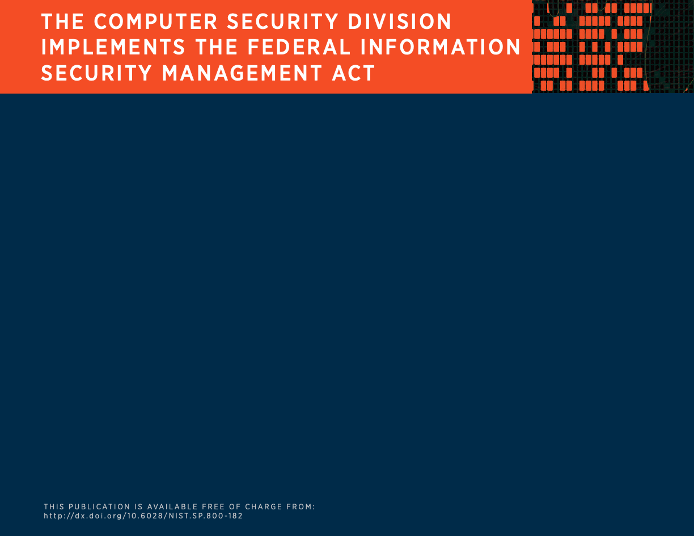
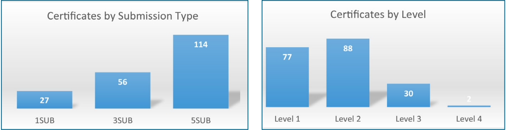
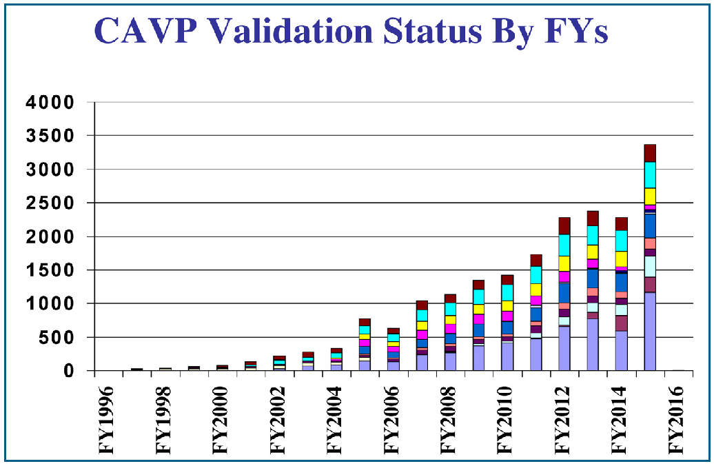
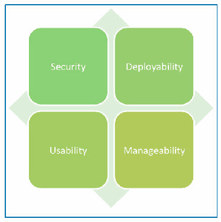

NIST SP 800-182 日本語訳
英語タイトル : Computer Security Division 2015 Annual Report日本語タイトル : コンピュータセキュリティ部門 2015年度年次報告書
公開日 : 2016-08-10
原文URL : https://csrc.nist.gov/pubs/sp/800/182/final
翻訳編集 : 自動生成（有志による非公式の日本語訳）, 原文取得日 : 2026-09-27, 訳文 : 1917 / 1917 ブロック
[要約] SP 800-182 は、NIST コンピュータセキュリティ部門（CSD）の2015会計年度における研究活動をまとめた年次報告書です。暗号技術グループ（CTG）、SCMG、SSAG、SOIG、STVMG などのグループごとに、暗号標準（FIPS 202 の発行など）、セキュリティ機構、新興技術の研究、FISMA 関連の標準・ガイドライン、暗号アルゴリズムと暗号モジュールの検証を報告します。各グループが政府、学術界、産業界と協力して進めた標準・ガイドラインの策定と、その成果の活用を記録することが位置づけです。
COMPUTER SECURITY DIVISION
コンピュータセキュリティ部門
ANNUAL REPORT
年次報告書
2015
2015年
NIST SPECIAL PUBLICATION 800-182
NIST SPECIAL PUBLICATION 800-182
THIS PAGE IS LEFT INTENTIONALLY BLANK.
このページは意図的に空白としています。
NIST SPECIAL PUBLICATION 800-182
NIST SPECIAL PUBLICATION 800-182
COMPUTER SECURITY DIVISION
コンピュータセキュリティ部門
ANNUAL REPORT
年次報告書
2015
2015年
PATRICK O’REILLY, EDITOR Computer Security Division Information Technology Laboratory
PATRICK O’REILLY（編集者） コンピュータセキュリティ部門 情報技術研究所
CO-EDITORS: Larry Feldman Greg Witte G2, Inc. Annapolis Junction, Maryland
共同編集者： Larry Feldman Greg Witte G2, Inc. Annapolis Junction, Maryland
THIS PUBLICATION IS AVAILABLE FREE OF CHARGE FROM http://dx.doi.org/10.6028/NIST.SP.800-182
本書の無料入手先： http://dx.doi.org/10.6028/NIST.SP.800-182
JULY 2016
2016年7月
U.S. DEPARTMENT OF COMMERCE Penny S. Pritzker, Secretary
米国商務省 Penny S. Pritzker 長官
NATIONAL INSTITUTE OF STANDARDS AND TECHNOLOGY Willie May, Under Secretary of Commerce for Standards and Technology and Director
米国国立標準技術研究所 Willie May 標準技術担当商務次官 兼 所長
AUTHORITY
権限
This publication has been developed by NIST in accordance with its statutory responsibilities under the Federal Information Security Modernization Act (FISMA) of 2014, 44 U.S.C. § 3541 et seq., Public Law (P.L.) 113-283. NIST is responsible for developing information security standards and guidelines, including minimum requirements for federal information systems, but such standards and guidelines shall not apply to national security systems without the express approval of appropriate federal officials exercising policy authority over such systems. This guideline is consistent with the requirements of the Office of Management and Budget (OMB) Circular A-130.
本書は、Federal Information Security Modernization Act (FISMA) of 2014, 44 U.S.C. § 3541 et seq., Public Law (P.L.) 113-283に基づく法定の責務に従って、NISTが作成したものです。NISTは、連邦情報システムに対する最低限の要件を含む、情報セキュリティの標準およびガイドラインを策定する責任を負います。ただし、これらの標準およびガイドラインは、国家安全保障システムに対する政策上の権限を行使する適切な連邦政府職員の明示的な承認がない限り、国家安全保障システムには適用されません。このガイドラインは、行政管理予算局（OMB）のCircular A-130の要件と整合しています。
Nothing in this publication should be taken to contradict the standards and guidelines made mandatory and binding on federal agencies by the Secretary of Commerce under statutory authority. Nor should these guidelines be interpreted as altering or superseding the existing authorities of the Secretary of Commerce, Director of the OMB, or any other federal official. This publication may be used by nongovernmental organizations on a voluntary basis and is not subject to copyright in the United States. Attribution would, however, be appreciated by NIST.
本書のいかなる記述も、商務長官が法定の権限に基づいて連邦政府機関に対して義務的かつ拘束力のあるものとした標準およびガイドラインと矛盾するものと解釈すべきではありません。また、これらのガイドラインは、商務長官、OMB長官、またはその他の連邦政府職員の既存の権限を変更し、またはこれに優先するものと解釈すべきではありません。本書は、非政府組織が任意で使用することができ、米国内では著作権の対象となりません。ただし、出典を明記していただければNISTとして幸いです。
National Institute of Standards and Technology Special Publication 800-182
National Institute of Standards and Technology Special Publication 800-182
Natl. Inst. Stand. Technol. Spec. Publ. 800-182, 120 pages (July 2016)
Natl. Inst. Stand. Technol. Spec. Publ. 800-182, 120ページ（2016年7月）
CODEN: NSPUE2
CODEN: NSPUE2
This publication is available free of charge from:
本書の無料入手先：
http://dx.doi.org/10.6028/NIST.SP.800-182
http://dx.doi.org/10.6028/NIST.SP.800-182
REPORTS ON COMPUTER SYSTEMS TECHNOLOGY
コンピュータシステム技術に関する報告書
The Information Technology Laboratory (ITL) at the National Institute of Standards and Technology (NIST) promotes the U.S. economy and public welfare by providing technical leadership for the Nation’s measurement and standards infrastructure. ITL develops tests, test methods, reference data, proof of concept implementations, and technical analyses to advance the development and productive use of information technology. ITL’s responsibilities include the development of management, administrative, technical, and physical standards and guidelines for the cost-effective security and privacy of other than national security-related information in federal information systems. The Special Publication 800-series reports on ITL’s research, guidelines, and outreach efforts in information system security, and its collaborative activities with industry, government, and academic organizations.
米国国立標準技術研究所（NIST）の情報技術研究所（ITL）は、国の計測および標準の基盤について技術的指導力を発揮することにより、米国の経済と公共の福祉を促進しています。ITLは、情報技術の開発と生産的な利用を前進させるために、試験、試験方法、参照データ、概念実証の実装、および技術的分析を開発しています。ITLの責務には、連邦情報システムにおける国家安全保障関連以外の情報について、費用対効果の高いセキュリティとプライバシーを実現するための、管理面、事務面、技術面および物理面の標準およびガイドラインの策定が含まれます。Special Publication 800シリーズは、情報システムセキュリティに関するITLの研究、ガイドラインおよびアウトリーチの取り組み、ならびに産業界、政府機関および学術機関との協働活動について報告するものです。
見出し帯に「謝辞」と表示。 ［装飾の画像。本文を読むのに必要のない装飾のため、この非公式サイトには掲載していない。原本 PDF を参照。］
ACKNOWLEDGMENTS
謝辞
The editor, Patrick O’Reilly of the Computer Security Division, wishes to thank his colleagues in the Computer Security Division, who provided write-ups on their 2015 project highlights and accomplishments for this annual report (their names are mentioned after each project write-up). The editor would also like to acknowledge Elaine Barker (CSD), Lisa Carnahan (Standards Coordination Office, NIST), Greg Witte and Larry Feldman (G2) for reviewing and providing valuable feedback for this annual report.
編集者であるコンピュータセキュリティ部門のPatrick O’Reillyは、この年次報告書のために2015年のプロジェクトの主要な取り組みと成果についての記事を寄せてくれたコンピュータセキュリティ部門の同僚に感謝する（各人の名前は、それぞれのプロジェクトの記事の後に記載しています）。編集者はまた、この年次報告書をレビューし、有益なフィードバックを提供してくれたElaine Barker（CSD）、Lisa Carnahan（NIST Standards Coordination Office）、ならびにGreg WitteおよびLarry Feldman（G2）に謝意を表します。
The editor would also like to acknowledge Kristen Dill of Dill and Company, Inc. for designing the cover and inside layout for this 2015 annual report.
編集者はまた、この2015年の年次報告書の表紙および本文レイアウトをデザインしてくれたDill and Company, Inc.のKristen Dillに謝意を表します。
見出し帯に「免責事項」と表示。 ［装飾の画像。本文を読むのに必要のない装飾のため、この非公式サイトには掲載していない。原本 PDF を参照。］
DISCLAIMER
免責事項
Any mention of commercial products or organizations is for informational purposes only; it is not intended to imply recommendation or endorsement by the National Institute of Standards and Technology, nor is it intended to imply that the products identified are necessarily the best available for the purpose.
商用の製品または組織への言及は、いずれも情報提供のみを目的としています。これは、米国国立標準技術研究所による推奨または支持を意味するものではなく、また、特定された製品がその目的に対して必ずしも入手可能な最良のものであることを意味するものでもありません。
見出し帯に「商標情報」と表示。 ［装飾の画像。本文を読むのに必要のない装飾のため、この非公式サイトには掲載していない。原本 PDF を参照。］
TRADEMARK INFORMATION
商標に関する情報
All names are trademarks or registered trademarks of their respective owners.
すべての名称は、それぞれの所有者の商標または登録商標です。
TABLE OF CONTENTS
目次
Cryptographic Technology Group (CTG)
Cryptographic Technology Group (CTG)
Security Components and Mechanisms Group (SCMG)
Security Components and Mechanisms Group (SCMG)
CSD IMPLEMENTS FEDERAL INFORMATION SECURITY MANAGEMENT ACT
CSDによるFederal Information Security Management Actの実施
SUPPLY CHAIN RISK MANAGEMENT (SCRM) FOR INFORMATION AND COMMUNICATIONS TECHNOLOGY (ICT)
情報通信技術（ICT）のサプライチェーンリスク管理（SCRM）
Small and Medium Size Business (SMB) Cybersecurity Outreach Workshop
中小企業(SMB)向けサイバーセキュリティアウトリーチワークショップ
TABLE OF CONTENTS
目次
Access Control and Privilege Management
アクセス制御と特権管理
Automation Reference Data
自動化のための参照データ
OPPORTUNITIES TO ENGAGE WITH CSD, ACD, AND NIST DURING FY 2016
2016会計年度にCSD、ACDおよびNISTと関わる機会
THIS PAGE IS LEFT INTENTIONALLY BLANK.
このページは意図的に空白としています。
WELCOME LETTER
挨拶状
The Computer Security Division (CSD), a division of the Information Technology Laboratory (ITL) at the National Institute of Standards and Technology (NIST) is responsible for developing cybersecurity standards, guidelines, tests, and metrics for the protection of non-national security federal information systems. CSD’s standards, guidelines, tools and references are developed in an open, transparent, traceable and collaborative manner that enlists broad expertise from around the world. While developed for federal agency use, these resources are voluntarily adopted by other organizations because they are effective and accepted globally.
コンピュータセキュリティ部門(CSD)は、米国国立標準技術研究所(NIST)のInformation Technology Laboratory(ITL)に属する部門であり、国家安全保障に関わらない連邦情報システムを保護するためのサイバーセキュリティの標準、ガイドライン、試験およびメトリクスを開発する責任を負っています。CSDの標準、ガイドライン、ツールおよび参考資料は、世界中の幅広い専門知識を集め、開かれた、透明で、追跡可能な、協調的な方法で開発されています。これらの資料は連邦機関での利用のために開発されたものであるが、有効であり世界的に受け入れられていることから、他の組織にも自主的に採用されています。
The need for cybersecurity standards, best practices, tools and references that also address interoperability, usability and privacy continue to be critical for the Nation. CSD aligns its resources to enable greater development and application of practical, innovative security technologies and methodologies that enhance our ability to address current and future computer and information security challenges. Our foundational research and applied cybersecurity programs continue to advance in many areas, including cryptography, automation, roots of trust, identity and access management, advanced security testing and measurement, Internet of Things (IoT), cyber-physical systems, and public safety networks.
相互運用性、ユーザビリティおよびプライバシーにも対応したサイバーセキュリティの標準、ベストプラクティス、ツールおよび参考資料の必要性は、国家にとって引き続き極めて重要です。CSDは、コンピュータセキュリティと情報セキュリティの現在および将来の課題に対処する能力を高める、実用的で革新的なセキュリティ技術と方法論の開発と適用をいっそう進められるよう、資源を配分しています。CSDの基礎研究と応用サイバーセキュリティのプログラムは、暗号、自動化、roots of trust、アイデンティティおよびアクセス管理、高度なセキュリティ試験と測定、Internet of Things(IoT)、サイバーフィジカルシステム、公共安全ネットワークなど、多くの分野で前進を続けています。
Trust is crucial to the broad adoption of our standards and guidelines, including our cryptographic standards and guidelines. To ensure that our cryptography resources have been developed according the highest standard of inclusiveness, transparency and security, NIST conducted an internal and external formal review of our cryptographic standards development efforts in 2014. We documented and solicited public comment on the principles and rigorous processes we use to engage stakeholders and experts in industry, academia, and government to develop and revise these standards. The final report is now published and serves as a basis for all CSD’s cryptographic development efforts.
信頼は、暗号の標準とガイドラインを含むCSDの標準とガイドラインが広く採用されるために不可欠です。暗号に関する資料が包摂性、透明性およびセキュリティの最高水準に従って開発されていることを確実にするため、NISTは2014年に、暗号標準の開発の取り組みについて内部および外部による正式なレビューを実施しました。産業界、学術界および政府の利害関係者と専門家の参加を得てこれらの標準を開発および改訂するためにCSDが用いる原則と厳格なプロセスを文書化し、それについてパブリックコメントを募集しました。最終報告書は既に公表されており、CSDによる暗号開発のすべての取り組みの基礎となっています。
Increasing the trustworthiness and resilience of the IT infrastructure is a significant undertaking that requires a substantial investment in the architectural design and development of our systems and networks. A disciplined and structured set of systems security engineering processes that starts with and builds on well-established international standards provides an important starting point. Draft Special Publication 800-160, Systems Security Engineering: An Integrated Approach to Building Trustworthy Resilient Systems, which was issued in May 2014, helps organizations to develop a more defensible and survivable information technology infrastructure. This resource, coupled with other NIST standards and guidelines, contributes to systems that are more resilient in the face of cyber attacks and other threats.
ITインフラストラクチャの信頼性とレジリエンスを高めることは大きな事業であり、システムとネットワークのアーキテクチャ設計と開発に相当な投資を必要とします。十分に確立された国際標準を出発点とし、それを土台とする、規律ある構造化されたシステムセキュリティエンジニアリングのプロセス群は、重要な出発点となります。2014年5月に発行されたSpecial Publication 800-160草案、Systems Security Engineering: An Integrated Approach to Building Trustworthy Resilient Systemsは、組織がより防御しやすく、より生存性の高い情報技術インフラストラクチャを開発する助けとなります。この資料は、NISTの他の標準およびガイドラインと合わせて、サイバー攻撃やその他の脅威に対してよりレジリエントなシステムの実現に寄与します。
Strong partnerships with diverse stakeholders are vital to the success of our technical programs. In February 2014, NIST issued the Framework for Improving Critical Infrastructure Cybersecurity as directed in Executive Order 13636. The Framework, created through collaboration between industry and government, consists of standards, guidelines, and practices to promote the protection of the critical infrastructure. Its approach helps owners and operators of the critical infrastructure to manage cybersecurity-related risk.
多様な利害関係者との強固なパートナーシップは、CSDの技術プログラムの成功に不可欠です。2014年2月、NISTはExecutive Order 13636の指示に従い、Framework for Improving Critical Infrastructure Cybersecurityを発行しました。産業界と政府の協力によって作成されたこのFrameworkは、重要インフラの保護を促進するための標準、ガイドラインおよびプラクティスで構成されています。そのアプローチは、重要インフラの所有者と運用者がサイバーセキュリティに関連するリスクを管理する助けとなります。
Active engagement with diverse stakeholders continues to be critical to our success. In the federal space, this interaction is most prominent in our strengthened collaborations with the Department of Defense, the Intelligence Community, and the Committee on National Security Systems to establish a common foundation for information security across the Federal Government. Our cybersecurity awareness, training, and education programs also exemplify the importance of engagements with academic institutions, federal agencies, small and medium businesses and others to increase awareness and enhance the overall cybersecurity posture of the Nation. CSD’s work with Health and Human Services, Department of Transportation, Federal Communications Commission and others are all examples of an active and strong engagement, applying security to multiple government mission areas.
多様な利害関係者との積極的な関わりは、CSDの成功にとって引き続き極めて重要です。連邦政府の領域では、この交流は、連邦政府全体にわたる情報セキュリティの共通基盤を確立するための、国防総省、Intelligence CommunityおよびCommittee on National Security Systemsとの協力の強化に最も顕著に表れています。CSDのサイバーセキュリティの意識向上、訓練および教育のプログラムもまた、意識を高め、国家全体のサイバーセキュリティ態勢を強化するうえで、学術機関、連邦機関、中小企業などとの関わりが重要であることを示す例です。CSDによる保健福祉省、運輸省、連邦通信委員会などとの取り組みはいずれも、積極的で強固な関わりの例であり、政府の複数のミッション領域にセキュリティを適用しています。
For many years, CSD, in collaboration with our global partners across industry, academia, standards bodies, and government, has made great contributions to help secure the nation’s critical information and infrastructure. We look forward to strengthening these relationships as we lead the development and practical application of scalable and sustainable information security standards and practices.
CSDは長年にわたり、産業界、学術界、標準化団体および政府にまたがる世界各地のパートナーと協力して、国家の重要な情報とインフラストラクチャの保護に大きく貢献してきました。CSDは、拡張可能で持続可能な情報セキュリティの標準とプラクティスの開発と実用化を主導するにあたり、これらの関係をさらに強化していきたいと考えています。
Matthew Scholl
Matthew Scholl
Division Chief
部門長
COMPUTER SECURITY DIVISION (CSD) ORGANIZATION
コンピュータセキュリティ部門(CSD)の組織
Matthew Schollの写真。コンピュータセキュリティ部門長。 ［NIST のロゴが写っている図。公的な標章のため、この非公式サイトには掲載していない。原本 PDF を参照。］
MATTHEW SCHOLL
MATTHEW SCHOLL
Chief, Computer Security Division
コンピュータセキュリティ部門 部門長
Deputy Chief, Computer Security Division and Acting Associate Director of Operations, National Cybersecurity Center of Excellence
コンピュータセキュリティ部門 副部門長 兼 National Cybersecurity Center of Excellence 運営担当アソシエイトディレクター代行
GROUP MANAGERS
グループマネージャー
David Ferraioloの写真。セキュアシステム・アプリケーショングループ。 ［人物の写真。人物が写っているため、この非公式サイトには掲載していない。原本 PDF を参照。］
LILY CHEN
LILY CHEN
(Acting Group Manager) Cryptographic Technology Group
(グループマネージャー代行)Cryptographic Technology Group
Kevin Stineの写真。セキュリティ広報・統合グループ。 ［人物の写真。人物が写っているため、この非公式サイトには掲載していない。原本 PDF を参照。］
DAVID FERRAIOLO
DAVID FERRAIOLO
Secure Systems and Applications Group
Secure Systems and Applications Group
MARK (LEE) BADGER
MARK (LEE) BADGER
Security Components and Mechanisms Group
Security Components and Mechanisms Group
Michael Cooperの写真。セキュリティ試験・検証・測定グループ。 ［人物の写真。人物が写っているため、この非公式サイトには掲載していない。原本 PDF を参照。］
KEVIN STINE1
KEVIN STINE1
Security Outreach and Integration Group2
Security Outreach and Integration Group2
MICHAEL COOPER
MICHAEL COOPER
Security Testing, Validation and Measurement Group
Security Testing, Validation and Measurement Group
** Editor’s Note:
** 編集者注:
CSDを構成する5グループの紹介
The Computer Security Division’s computer scientists, mathematicians, IT specialists, support staff and others support CSD’s mission and responsibilities through five groups that are described in the following sections:
コンピュータセキュリティ部門（CSD）のコンピュータ科学者、数学者、IT専門家、支援スタッフなどは、次の各節で説明する5つのグループを通じて、CSDの使命と責務を支えています。
•Cryptographic Technology Group
•暗号技術グループ
•Security Components and Mechanisms Group
•セキュリティコンポーネント・メカニズムグループ
•Secure Systems and Applications Group
•セキュアシステム・アプリケーショングループ
•Security Outreach and Integration Group
•セキュリティ広報・統合グループ
•Security Testing, Validation, and Measurement Group
•セキュリティ試験・検証・測定グループ
CRYPTOGRAPHIC
CRYPTOGRAPHIC
TECHNOLOGY GROUP (CTG)
TECHNOLOGY GROUP (CTG)
MISSION STATEMENT:
ミッションステートメント:
Research, develop, engineer, and standardize cryptographic algorithms, methods, and protocols.
暗号アルゴリズム、暗号方式及び暗号プロトコルを研究、開発、設計し、標準化します。
OVERVIEW:
概要:
The Cryptographic Technology Group’s (CTG) work in the field of cryptography includes researching, analyzing and standardizing cryptographic technology, such as hash algorithms, symmetric and asymmetric cryptographic techniques, key management, authentication, and random number generation. The CTG’s goal is to identify and promote methods to protect communications and storage through cryptographic technologies, encouraging innovative development and helping technology users to manage risk.
Cryptographic Technology Group (CTG) の暗号分野における業務には、ハッシュアルゴリズム、対称及び非対称の暗号技法、鍵管理、認証、乱数生成といった暗号技術の研究、分析及び標準化が含まれます。CTG の目標は、暗号技術によって通信及び保存データを保護する方法を特定して普及させ、革新的な開発を促し、技術の利用者がリスクを管理できるよう支援することです。
In FY 2015, the CTG continued to collaborate with national and international government agencies, academic and research organizations, industry partners, and standards bodies to develop interoperable security standards and guidelines, and to make an impact in the field of cryptography. One example is the culmination of an eight-year standardization effort that led to the publication of Federal Information Processing Standard (FIPS) 202, SHA-3 Standard: Permutation-Based Hash and Extendable-Output Functions, announced in the Federal Register on August 5, 2015.
2015会計年度に、CTG は引き続き国内外の政府機関、学術・研究機関、産業界のパートナー及び標準化団体と協力して、相互運用可能なセキュリティ標準及びガイドラインを策定し、暗号分野に影響を与えました。その一例が、8年に及ぶ標準化の取り組みの集大成として発行に至った Federal Information Processing Standard (FIPS) 202, SHA-3 Standard: Permutation-Based Hash and Extendable-Output Functions であり、これは2015年8月5日に Federal Register で公告されました。
The CTG’s cryptographic standards program focuses on cryptographic primitives, algorithms, and schemes; the developed standards and guidelines are specified in FIPSs, NIST Special Publications (SPs), and NIST Interagency or Internal Reports (NISTIRs). Such standards and guidelines have been considered or adopted by the information technology (IT) industry and standards development organizations, such as the International Organization for Standardization (ISO), the Internet Engineering Task Force (IETF), the Institute of Electrical and Electronics Engineers (IEEE), and the Trusted Computing Group (TCG), and have been implemented on a variety of platforms.
CTG の暗号標準プログラムは、暗号プリミティブ、アルゴリズム及びスキームに重点を置いています。策定された標準及びガイドラインは、FIPS、NIST Special Publication (SP) 及び NIST Interagency or Internal Report (NISTIR) で規定されています。これらの標準及びガイドラインは、情報技術 (IT) 業界や、International Organization for Standardization (ISO)、Internet Engineering Task Force (IETF)、Institute of Electrical and Electronics Engineers (IEEE)、Trusted Computing Group (TCG) などの標準化団体によって検討又は採用されており、さまざまなプラットフォーム上に実装されています。
The CTG is committed to the development of its standards using an open and transparent process -conducting workshops and requesting input and comments from government agencies, private industry, academia and the global cryptographic community. The CTG also examines each of its standards to determine if they need to be revised, withdrawn or re-opened for public comment.
CTG は、ワークショップを開催し、政府機関、民間産業界、学術界及び世界の暗号コミュニティに意見とコメントを求めるという、開かれた透明性のあるプロセスによって標準を策定することを旨としています。また CTG は、自らの標準のそれぞれを検討し、改訂、廃止、又はパブリックコメントの再募集が必要かどうかを判断しています。
The CTG continues to develop expertise in several critical research areas, such as post-quantum cryptography (PQC), elliptic curve cryptography (ECC), privacy-enhancing cryptography, and lightweight cryptographic schemes for constrained environments. It has collaborated with many universities internationally and presented research results in major cryptography conferences and journals. In addition, it organized workshops on PQC, ECC standards, and lightweight cryptography to discuss research results and develop standardization roadmaps.
CTG は、耐量子計算機暗号 (PQC)、楕円曲線暗号 (ECC)、プライバシー強化暗号、制約のある環境向けの軽量暗号スキームなど、いくつかの重要な研究分野で専門知識を引き続き培っています。CTG は世界各国の多くの大学と協力し、主要な暗号関連の会議及び学術誌で研究成果を発表してきました。加えて、PQC、ECC 標準及び軽量暗号に関するワークショップを開催し、研究成果について議論するとともに標準化のロードマップを策定しました。
The CTG also published several guidelines on cryptographic applications, including key management, public key certificate policies, and trusted platforms. The CTG also participated in the cybersecurity projects of other CSD groups, such as the Personal Identity Verification (PIV) standards, the Federal Cloud Credential Exchange (FCCX), the Cryptographic Algorithm Validation Program (CAVP), and the Cryptographic Module Validation Program (CMVP).
CTG はまた、鍵管理、公開鍵証明書ポリシー、トラステッドプラットフォームなど、暗号の応用に関するガイドラインをいくつか発行しました。さらに CTG は、Personal Identity Verification (PIV) 標準、Federal Cloud Credential Exchange (FCCX)、Cryptographic Algorithm Validation Program (CAVP)、Cryptographic Module Validation Program (CMVP) など、CSD の他のグループのサイバーセキュリティプロジェクトにも参加しました。
GROUP MANAGER (ACTING):
グループマネージャー(代行):
Dr. Lily Chen (301) 975-6974 lily.chen@nist.gov
Dr. Lily Chen (301) 975-6974 lily.chen@nist.gov
SECURITY COMPONENTS AND
SECURITY COMPONENTS AND
MECHANISMS GROUP (SCMG)
MECHANISMS GROUP (SCMG)
MISSION STATEMENT:
ミッションステートメント:
Research, develop, and standardize foundational security mechanisms, protocols, and services.
基盤となるセキュリティの機構、プロトコル及びサービスを研究、開発し、標準化します。
OVERVIEW:
概要:
The SCMG’s security research focuses on the development and management of foundational building-block security mechanisms and techniques that can be integrated into a wide variety of mission-critical U.S. information systems. The group’s work spans the spectrum from near-term hardening and improvement of systems, to the design and analysis of next-generation, leap-ahead security capabilities. Computer security depends fundamentally on the level of trust of computer software and systems. This work, therefore, focuses strongly on assurance-building activities ranging from the analysis of software configuration settings, to advanced trust architectures, and to testing tools that identify flaws in software modules. This work also focuses significantly on increasing the applicability and effectiveness of automated techniques, wherever feasible. The SCMG conducts collaborative research with government, industry, and academia. Outputs of this research consist of prototype systems, software tools, demonstrations, guidelines, and other documentary resources.
SCMG のセキュリティ研究は、ミッションクリティカルな米国の多種多様な情報システムに組み込むことのできる、基盤的な構成要素となるセキュリティ機構及び技法の開発と管理に重点を置いています。このグループの業務は、短期的なシステムの堅牢化及び改善から、飛躍的な進歩をもたらす次世代のセキュリティ能力の設計及び分析までの全範囲に及びます。コンピュータセキュリティは、コンピュータのソフトウェア及びシステムの信頼の水準に根本的に依存しています。したがってこの業務は、ソフトウェアの構成設定の分析から、先進的なトラストアーキテクチャ、さらにはソフトウェアモジュールの欠陥を特定するテストツールに至る、保証を構築する活動に強く重点を置いています。この業務はまた、実現可能な場合には常に、自動化技法の適用可能性及び有効性を高めることにも大きな重点を置いています。SCMG は、政府、産業界及び学術界と共同研究を行っています。この研究の成果物は、プロトタイプシステム、ソフトウェアツール、デモンストレーション、ガイドライン、その他の文書資料から成ります。
Collaborating extensively with government, academia, and the private sector, SCMG works on a variety of topics, such as:
SCMG は、政府、学術界及び民間部門と広範に協力しながら、次のようなさまざまなテーマに取り組んでいます。
•Specifications for the automated exchange of security information between systems;
•システム間でセキュリティ情報を自動的に交換するための仕様
•Threat information sharing guidelines;
•脅威情報共有のガイドライン
•Formulation of high-assurance software configuration settings;
•高保証のソフトウェア構成設定の策定
•Hardware roots-of-trust for mobile devices;
•モバイルデバイス向けのハードウェア Roots of Trust
•Secure Basic Input Output System (BIOS) layers;
•セキュアな Basic Input Output System (BIOS) 層
•Combinatorial testing techniques;
•組合せテスト技法
•Conformity assessment of software implementing biometric standards; and
•生体認証標準を実装するソフトウェアの適合性評価
•Adoption of Internet Protocol Version 6 and Internet Protocol security extensions.
•Internet Protocol Version 6 及び Internet Protocol のセキュリティ拡張の採用
In FY 2015, collaborators and the associated collaborations have included Carnegie Mellon University (test development environment), Johns Hopkins Applied Physics Lab (the practical application of a combinatorial coverage measurement tool), the University of Texas at Arlington (a covering array generation algorithm), Mexico’s Centro de Investigación y de Estudios Avanzados del Instituto Politécnico Nacional (a very large covering array generation and its application to hardware malware detection), Lockheed Martin Corporation (the practical application of covering arrays), United States Marine Corps (USMC) Camp Pendleton (testing and fault location for the tactical data link TADIL-J protocol), University of Texas Dallas and East Carolina University (safety-critical systems testing), Duke University (analysis of software failures), the National Science Foundation (cybersecurity metrics and assurance building), the National Security Agency (NSA) Information Assurance Directorate (security automation standardization), the Department of Homeland Security (DHS) Cybersecurity and Communications (security automation standardization), and DHS (incident coordination).
2015会計年度の協力者とその協力内容は次のとおりです。Carnegie Mellon University(テスト開発環境)、Johns Hopkins Applied Physics Lab(組合せ網羅率測定ツールの実用的な適用)、University of Texas at Arlington(被覆配列生成アルゴリズム)、メキシコの Centro de Investigación y de Estudios Avanzados del Instituto Politécnico Nacional(非常に大規模な被覆配列の生成とハードウェアマルウェア検出への応用)、Lockheed Martin Corporation(被覆配列の実用的な適用)、United States Marine Corps (USMC) Camp Pendleton(戦術データリンク TADIL-J プロトコルのテスト及び故障箇所の特定)、University of Texas Dallas 及び East Carolina University(セーフティクリティカルなシステムのテスト)、Duke University(ソフトウェア障害の分析)、National Science Foundation(サイバーセキュリティのメトリクス及び保証の構築)、National Security Agency (NSA) Information Assurance Directorate(セキュリティ自動化の標準化)、Department of Homeland Security (DHS) Cybersecurity and Communications(セキュリティ自動化の標準化)、並びに DHS(インシデント対応の調整)。
SCMG accomplishments include results of a 2.5-year study with Lockheed Martin (CRADA) showing 20 % test cost reduction with 20 % to 50 % improvement in coverage (8 pilot projects), an analysis of Internet resilience to connectivity disruption attacks, and release of software to test conformance to the newest version of the ANSI/NIST-ITL 1 Biometric Standard.
SCMG の成果には、Lockheed Martin との2年半にわたる調査 (CRADA) の結果(8件のパイロットプロジェクトで、テスト費用が 20 % 削減され、網羅率が 20 % から 50 % 向上したことを示した)、接続性を途絶させる攻撃に対するインターネットのレジリエンスの分析、及び ANSI/NIST-ITL 1 Biometric Standard の最新版への適合性をテストするソフトウェアのリリースが含まれます。
GROUP MANAGER:
グループマネージャー:
Mr. Mark (Lee) Badger, (301) 975-3176, lee.badger@nist.gov
Mr. Mark (Lee) Badger, (301) 975-3176, lee.badger@nist.gov
SECURE SYSTEMS AND APPLICATIONS GROUP (SSAG)
SECURE SYSTEMS AND APPLICATIONS GROUP (SSAG)
MISSION STATEMENT:
ミッションステートメント:
Integrate and apply security technologies, standards and guidelines for computing platforms and information systems.
コンピューティングプラットフォーム及び情報システムのために、セキュリティ技術、標準及びガイドラインを統合し、適用します。
OVERVIEW:
概要:
SSAG’s security research focuses on identifying emerging and high-priority technologies, and on developing security solutions that will have a high impact on U.S. critical infrastructure. The group conducted research and development related to both public and private sector use cases. The research considered many aspects of the system’s lifecycle from the earliest stages of technology development through proof-of-concept, reference and prototype implementations, and demonstrations. In addition, the group worked to transfer new technologies to industry; to produce new standards and guidance for federal agencies and industry; and to develop tests, test methodologies, and assurance methods.
SSAG のセキュリティ研究は、新興の技術および優先度の高い技術を特定すること、ならびに米国の重要インフラに大きな影響を与えるセキュリティソリューションを開発することに重点を置いています。同グループは、公共部門と民間部門の双方のユースケースに関する研究開発を実施しました。この研究では、技術開発の最初期の段階から、概念実証、参照実装およびプロトタイプ実装、実証に至るまで、システムのライフサイクルの多くの側面を検討しました。加えて同グループは、新しい技術を産業界へ移転すること、連邦機関および産業界向けの新しい標準とガイダンスを作成すること、ならびに試験、試験方法論、保証手法を開発することに取り組みました。
SSAG investigated security concerns associated with such areas as mobile devices, cloud computing and virtualization, identity management, access control and authorization management, and software assurance. SSAG’s research helps to meet federal information security requirements that may not be fully addressed by existing technology. The group collaborated extensively with government, academia, and private sector entities.
SSAG は、モバイルデバイス、クラウドコンピューティング及び仮想化、アイデンティティ管理、アクセス制御及び認可管理、ソフトウェア保証といった分野に関連するセキュリティ上の懸念事項を調査しました。SSAG の研究は、既存の技術では十分に対応できていない可能性のある連邦政府の情報セキュリティ要件を満たすのに役立っています。このグループは、政府、学術界及び民間部門の組織と広範に協力しました。
Example successes from this work include:
この業務による成功例には、次のものがあります。
•Tools for access control policy testing;
•アクセス制御ポリシーのテスト用ツール
•New concepts in access control and policy enforcement;
•アクセス制御及びポリシー施行における新しい概念
•Several Personal Identity Verification (PIV) documents to support interagency use of the PIV Card;
•PIV Card の省庁間での利用を支援する、複数の Personal Identity Verification (PIV) 文書
•Methods for architecting a secure cloud ecosystem in a capability-oriented approach;
•能力指向のアプローチによって、セキュアなクラウドエコシステムのアーキテクチャを設計する方法
•Guidance and tools for orchestrating a secure cloud ecosystem;
•セキュアなクラウドエコシステムをオーケストレーションするためのガイダンス及びツール
•Guidance for secure deployment of virtualized infrastructure components – Hypervisor, Virtual Machines (VMs) and Virtual Network;
•仮想化インフラストラクチャの構成要素(ハイパーバイザー、仮想マシン (VM) 及び仮想ネットワーク)をセキュアに導入するためのガイダンス
•Methods for achieving comprehensive policy enforcement and data interoperability across enterprise data services; and
•エンタープライズデータサービス全体にわたって、包括的なポリシー施行とデータの相互運用性を実現する方法
•Test methods for mobile device (smart phone) application security.
•モバイルデバイス(スマートフォン)のアプリケーションセキュリティのテスト方法
In particular, the SSAG led the NIST Security and Forensics Working Group that published draft NISTIR 8006, NIST Cloud Computing - Security Reference Architecture, that aggregates forensics challenges in a cloud ecosystem. The working group has been working on developing a draft of SP 800-173, Guidance for Applying the Risk Management Framework to Federal-based Information Systems (target release date: spring/summer 2016). In response to the rapidly emerging use of virtualization in enterprise data centers for supporting both in-house mission-critical applications and for providing cloud services, two guidance documents were published: Draft SP 800-125A, Security Recommendations for Hypervisor Deployment, and Draft SP 800-125B, Secure Virtual Network Configuration for Virtual Machine (VM) Protection. In support of the revised FIPS 201, Personal Identity Verification (PIV) of Federal Employees and Contractors, two new PIV-related SP 800-series were released and five SP 800 documents were revised. One of the new publications, SP 800-157, Guidelines for Derived Personal Identity Verification (PIV) Credentials, guides the implementation and deployment of PIV credentials for mobile devices. In addition, the PIV team participated in the Office of Management and Budget (OMB) cybersecurity Sprint effort with a goal to strengthen the cybersecurity of federal networks, systems, and data through multi-factor authentication using the PIV Card. To improve access to new technologies, the group also chaired, edited, and participated in the development of a wide variety of national and international security standards.
特に SSAG は NIST Security and Forensics Working Group を主導し、同ワーキンググループは、クラウドエコシステムにおけるフォレンジックの課題を集約した草案 NISTIR 8006, NIST Cloud Computing - Security Reference Architecture を発行しました。同ワーキンググループは、SP 800-173, Guidance for Applying the Risk Management Framework to Federal-based Information Systems の草案の作成に取り組んでいる(公開目標時期:2016年春から夏)。エンタープライズデータセンターにおいて、組織内のミッションクリティカルなアプリケーションの支援とクラウドサービスの提供の両方のために仮想化の利用が急速に広がっていることを受けて、2件のガイダンス文書、すなわち草案 SP 800-125A, Security Recommendations for Hypervisor Deployment 及び草案 SP 800-125B, Secure Virtual Network Configuration for Virtual Machine (VM) Protection が発行されました。改訂された FIPS 201, Personal Identity Verification (PIV) of Federal Employees and Contractors を支援するために、PIV 関連の SP 800 シリーズの文書が新たに2件公開され、SP 800 文書5件が改訂されました。新しい刊行物の一つである SP 800-157, Guidelines for Derived Personal Identity Verification (PIV) Credentials は、モバイルデバイス向けの PIV クレデンシャルの実装及び導入の指針を示しています。加えて PIV チームは、PIV Card を用いた多要素認証によって連邦政府のネットワーク、システム及びデータのサイバーセキュリティを強化することを目標とする、Office of Management and Budget (OMB) の cybersecurity Sprint の取り組みに参加しました。新しい技術を利用しやすくするために、このグループはまた、国内及び国際的な多種多様なセキュリティ標準の策定において、議長を務め、編集を担当し、参加しました。
GROUP MANAGER:
グループマネージャー:
Mr. David Ferraiolo, (301) 975-3046, david.ferraiolo@nist.gov
Mr. David Ferraiolo, (301) 975-3046, david.ferraiolo@nist.gov
SECURITY OUTREACH AND INTEGRATION GROUP (SOIG)
SECURITY OUTREACH AND INTEGRATION GROUP (SOIG)
MISSION STATEMENT:
ミッションステートメント:
Develop, integrate, and promote the mission-specific application of information security standards, guidelines, best practices, and technologies.
情報セキュリティの標準、ガイドライン、ベストプラクティス及び技術について、それぞれのミッションに応じた適用を開発、統合し、促進します。
OVERVIEW:
概要:
The U.S. economy, citizens, and government rely on information technology (IT), so the protection of IT and the information infrastructure is critical. SOIG leverages broad cybersecurity and risk management expertise to develop, integrate, and promote security standards, guidelines, tools, technologies, methodologies, tests, and measurements to address cybersecurity needs in many areas of national and international importance.
米国の経済、国民及び政府は情報技術 (IT) に依存しており、IT 及び情報インフラストラクチャの保護は極めて重要です。SOIG は、サイバーセキュリティ及びリスク管理に関する幅広い専門知識を活用して、セキュリティの標準、ガイドライン、ツール、技術、方法論、テスト及び測定を開発、統合し、促進することで、国内外で重要な多くの分野におけるサイバーセキュリティのニーズに対応しています。
The SOIG collaborates with stakeholders to address cybersecurity considerations in many diverse program areas, including the Information and Communications Technologies (ICT) supply chain, Smart Grid, Electronic Voting, Cyber Physical and Industrial Control Systems, Health Information Technology, and the National Public Safety Broadband Network. The group produces standards and guidelines through the Federal Information Security Management Act (FISMA) implementation program to help federal agencies build strong cybersecurity risk management programs. In each of these program areas, the group extends outreach to stakeholders across federal, state, and local governments; industry; academia; small businesses; and the public. The SOIG also leads several broad cybersecurity awareness, training, education, and outreach efforts, including the National Initiative for Cybersecurity Education (NICE), the Federal Computer Security Managers’ Forum, and the Federal Information Systems Security Educators’ Association (FISSEA).
SOIG は利害関係者と協力して、情報通信技術 (ICT) サプライチェーン、スマートグリッド、電子投票、サイバーフィジカルシステム及び産業用制御システム、医療情報技術、National Public Safety Broadband Network など、多様なプログラム分野におけるサイバーセキュリティ上の考慮事項に取り組んでいます。このグループは、Federal Information Security Management Act (FISMA) 実施プログラムを通じて標準及びガイドラインを作成し、連邦政府機関が強固なサイバーセキュリティリスク管理プログラムを構築できるよう支援しています。これらのプログラム分野のそれぞれにおいて、このグループは、連邦政府、州政府及び地方政府、産業界、学術界、小規模事業者、並びに一般市民にわたる利害関係者へとアウトリーチを広げています。SOIG はまた、National Initiative for Cybersecurity Education (NICE)、Federal Computer Security Managers’ Forum、Federal Information Systems Security Educators’ Association (FISSEA) など、サイバーセキュリティに関する幅広い意識向上、訓練、教育及びアウトリーチの取り組みをいくつか主導しています。
Key to the group’s success is the ability to interact with a broad constituency to ensure that SOIG’s program is consistent with national objectives related to or impacted by information security. Through open and transparent public engagement, collaboration, and cooperation, the group works to address critical cybersecurity challenges, enable greater U.S. industrial competitiveness, and facilitate the practical implementation of scalable and sustainable information security standards and practices.
このグループの成功の鍵は、幅広い関係者層と交流して、SOIG のプログラムが、情報セキュリティに関連する、又は情報セキュリティの影響を受ける国家目標と整合することを確実にする能力にあります。開かれた透明性のある形での一般との関わり、協働及び協力を通じて、このグループは、重大なサイバーセキュリティ上の課題に対処し、米国の産業競争力の向上を可能にし、拡張可能かつ持続可能な情報セキュリティの標準及びプラクティスの実用的な実装を促進することに取り組んでいます。
GROUP MANAGER:
グループマネージャー:
Mr. Kevin Stine, (301) 975-4483, kevin.stine@nist.gov
Mr. Kevin Stine, (301) 975-4483, kevin.stine@nist.gov
SECURITY TESTING, VALIDATION, AND MEASUREMENT GROUP (STVMG)
SECURITY TESTING, VALIDATION, AND MEASUREMENT GROUP (STVMG)
MISSION STATEMENT:
ミッションステートメント:
Advance information security testing, measurement science, and conformance.
情報セキュリティのテスト、計測科学及び適合性を前進させる。
OVERVIEW:
概要:
Federal agencies, industry, and the public rely on cryptography for the protection of the information and communications used in electronic commerce, the critical infrastructure, and other application areas. The STVMG supports the testing and validation of the underlying cryptographic modules and cryptographic algorithms based upon established standards. These cryptographic modules and algorithms enable products and systems to provide security services, such as confidentiality, integrity protection, and authentication. Although cryptography provides security, poor designs or weak algorithms can render a product insecure and place highly sensitive information at risk. When protecting sensitive data, federal agencies require assurance that cryptographic products meet established security requirements and use only tested and validated cryptographic modules.
連邦政府機関、産業界及び一般市民は、電子商取引、重要インフラストラクチャ、その他の応用分野で用いられる情報及び通信の保護を暗号に依存しています。STVMG は、確立された標準に基づいて、その基礎となる暗号モジュール及び暗号アルゴリズムのテスト及び検証を支援しています。これらの暗号モジュール及びアルゴリズムによって、製品及びシステムは、機密性、完全性保護、認証といったセキュリティサービスを提供できるようになります。暗号はセキュリティを提供するが、設計が不十分であったりアルゴリズムが脆弱であったりすると、製品がセキュアでなくなり、機微性の高い情報がリスクにさらされるおそれがあります。機微なデータを保護する際、連邦政府機関は、暗号製品が確立されたセキュリティ要件を満たし、テスト及び検証を経た暗号モジュールのみを使用しているという保証を必要とします。
STVMG’s testing-focused activities include validating cryptographic algorithm implementations, cryptographic modules, and Security Content Automation Protocol (SCAP)-enabled products; developing test suites and test methods; providing implementation guidance and technical support to industry forums; and conducting education, training, and outreach programs.
STVMG のテストに重点を置いた活動には、暗号アルゴリズムの実装、暗号モジュール及び Security Content Automation Protocol (SCAP) 対応製品の検証、テストスイート及びテスト方法の開発、実装ガイダンスの提供及び業界フォーラムへの技術支援の提供、並びに教育、訓練及びアウトリーチのプログラムの実施が含まれます。
STVMG’s validation programs work together with independent cryptographic and security testing laboratories accredited by the NIST National Voluntary Laboratory Accreditation Program (NVLAP). Based on the independent laboratory test report and test evidence, the Validation Program validates an implementation under test. NIST publishes lists of awarded validations through public websites.
STVMG の検証プログラムは、NIST National Voluntary Laboratory Accreditation Program (NVLAP) によって認定された、独立した暗号及びセキュリティのテスト機関と連携して運営されています。独立したテスト機関のテスト報告書及びテストの証拠に基づいて、検証プログラムはテスト対象の実装を検証します。NIST は、付与された検証の一覧を公開ウェブサイトを通じて公表しています。
GROUP MANAGER:
グループマネージャー:
Mr. Michael Cooper, (301) 975-8077, michael.cooper@nist.gov
Mr. Michael Cooper, (301) 975-8077, michael.cooper@nist.gov
THE COMPUTER SECURITY DIVISION IMPLEMENTS THE FEDERAL INFORMATION SECURITY MANAGEMENT ACT
原本PDFの抜粋画像

コンピュータセキュリティ部門は連邦情報セキュリティ管理法を実施する
CSD IMPLEMENTS THE FEDERAL INFORMATION SECURITY MANAGEMENT ACT
CSD による Federal Information Security Management Act の実施
The E-Government Act, Public Law 107-347, passed by the 107th Congress and signed into law by the President in December 2002, recognized the importance of information security to the economic and national security interests of the United States. Title III of the E-Government Act, entitled the Federal Information Security Management Act (FISMA) of 2002, included the duties and responsibilities for the National Institute of Standards and Technology, Information Technology Laboratory, Computer Security Division (CSD). In December 2014, the 113th Congress updated FISMA as the Federal Information Security Modernization Act (Public Law 113-283). NIST CSD responsibilities were unchanged in the update. In 2015, CSD addressed its assignments through the following activities:
E-Government Act (Public Law 107-347) は、第107議会で可決され、2002年12月に大統領が署名して成立した法律であり、米国の経済上及び国家安全保障上の利益にとっての情報セキュリティの重要性を認めました。E-Government Act の Title III は Federal Information Security Management Act (FISMA) of 2002 と題され、米国国立標準技術研究所 Information Technology Laboratory コンピュータセキュリティ部門 (CSD) の任務及び責任を盛り込んでいました。2014年12月、第113議会は FISMA を Federal Information Security Modernization Act (Public Law 113-283) として更新しました。この更新において、NIST CSD の責任に変更はなかった。2015年に、CSD は次の活動を通じてその任務に取り組みました。
•One final Federal Information Processing Standard (FIPS) was issued: FIPS 202, SHA-3 Standard: Permutation-Based Hash and Extendable-Output Functions, which specifies the Secure Hash Algorithm-3 (SHA-3) family of functions on binary data. Each of the SHA-3 functions is based on an instance of the Keccak algorithm that NIST selected as the winner of the SHA-3 Cryptographic Hash Algorithm Competition. (Note: FIPS 186 4, Digital Signature Standard (DSS), which was published in 2013, was updated in 2015 to require the implementation of either FIPS 186 or FIPS 202 wherever a secure hash algorithm is required for Federal applications.)
•最終版の Federal Information Processing Standard (FIPS) が1件発行されました。FIPS 202, SHA-3 Standard: Permutation-Based Hash and Extendable-Output Functions であり、バイナリデータに対する Secure Hash Algorithm-3 (SHA-3) 関数ファミリーを規定しています。SHA-3 の各関数は、NIST が SHA-3 Cryptographic Hash Algorithm Competition の勝者として選定した Keccak アルゴリズムのインスタンスに基づいています。(注:2013年に発行された FIPS 186 4, Digital Signature Standard (DSS) は2015年に更新され、連邦政府のアプリケーションでセキュアハッシュアルゴリズムが必要とされる箇所では、FIPS 186 又は FIPS 202 のいずれかの実装を要求するようになりました。)
•Thirty draft and final NIST Special Publications (SP) were issued that provide management, operational, and technical security guidelines in areas such as trustworthy email, media sanitization, protecting controlled unclassified information, supply chain risk management, assessing security and privacy controls, cryptographic algorithms and key lengths, key management systems, cyber threat information sharing, virtual machine protection, secure hypervisor deployment, random number generation, personal identity verification (PIV) (interfaces, credentials, card application and middleware), industrial control systems, the national checklist program, vetting the security of mobile applications, a biometric conformance testing methodology framework, attribute-based access control, access management for electric utilities, and securing electronic health records on mobile devices.
•草案及び最終版の NIST Special Publication (SP) が30件発行されました。これらは、信頼できる電子メール、媒体のサニタイズ、管理対象非機密情報の保護、サプライチェーンリスク管理、セキュリティ管理策及びプライバシー管理策の評価、暗号アルゴリズム及び鍵長、鍵管理システム、サイバー脅威情報の共有、仮想マシンの保護、ハイパーバイザーのセキュアな導入、乱数生成、個人識別情報の検証 (PIV)(インタフェース、クレデンシャル、カードアプリケーション及びミドルウェア)、産業用制御システム、national checklist program、モバイルアプリケーションのセキュリティ審査、生体認証の適合性テスト方法論のフレームワーク、属性ベースアクセス制御、電力事業者向けのアクセス管理、モバイルデバイス上の電子健康記録の保護といった分野において、管理面、運用面及び技術面のセキュリティガイドラインを提供しています。
•Eighteen draft and final NIST Interagency/Internal Reports (NISTIR) were issued on a variety of topics, including the National Strategy for Trusted Identities in Cyberspace (NSTIC) pilots for catalyzing the identity ecosystem, the proceedings of a symposium for cybersecurity for direct digital manufacturing, a summary of the executive technical workshop on improving cybersecurity and consumer privacy and the next steps in the process, risk management for replication devices, considerations for identity management in public-safety mobile networks, a summary of a public-safety mobile-application security requirements workshop, privacy risk management, cardholder authentication for the PIV digital signature key, derived PIV credentials proof-of-concept research, an advanced metering infrastructure smart meter upgradeability test framework, a report on strategic U.S. Government engagement in international standardization to achieve U.S. objectives for cybersecurity, guidelines for the creation of interoperable software identification (SWID) tags, a security content automation protocol (SCAP) Version 1.2 content style guide about best practices for creating and maintaining SCAP 1.2 content, de-identification of personally identifiable information, the security of interactive and automated access management using secure shell (SSH), a proof-of-concept implementation of trusted geolocation in the cloud, and fundamentals of small business information security.
•多様な主題について、草案および最終版の NIST Interagency/Internal Report (NISTIR) を18件発行しました。その主題は、アイデンティティエコシステムを促進するための National Strategy for Trusted Identities in Cyberspace (NSTIC) パイロット、ダイレクトデジタルマニュファクチャリングのサイバーセキュリティに関するシンポジウムの議事録、サイバーセキュリティと消費者プライバシーの改善に関するエグゼクティブ技術ワークショップの要約とそのプロセスにおける次のステップ、複製機器のリスク管理、公共安全モバイルネットワークにおけるアイデンティティ管理の考慮事項、公共安全モバイルアプリケーションのセキュリティ要件に関するワークショップの要約、プライバシーリスク管理、PIV デジタル署名鍵のためのカード所持者認証、派生 PIV クレデンシャルの概念実証研究、高度メータリングインフラストラクチャのスマートメーターのアップグレード可能性に関するテストフレームワーク、サイバーセキュリティに関する米国の目標を達成するための国際標準化への米国政府の戦略的関与についての報告書、相互運用可能なソフトウェア識別 (SWID) タグの作成に関するガイドライン、SCAP 1.2 コンテンツの作成と保守のベストプラクティスを扱う Security Content Automation Protocol (SCAP) バージョン 1.2 コンテンツスタイルガイド、個人を識別できる情報の非識別化、セキュアシェル (SSH) を用いた対話型および自動化されたアクセス管理のセキュリティ、クラウドにおける信頼できる位置情報の概念実証実装、ならびに小規模事業者の情報セキュリティの基礎などです。
•Continued the successful collaboration with the Department of Defense (DOD), the Intelligence Community (IC), and the Committee on National Security Systems (CNSS), in partnership with the Joint Task Force (JTF) Transformation Initiative. Five Special Publications are currently recognized as JTF publications, and the JTF partners continue to develop and update key cybersecurity guidelines for protecting federal information and information systems as part of the Unified Information Security Framework through CSD’s FISMA Implementation Project.
•Joint Task Force (JTF) Transformation Initiative と連携し、国防総省 (DOD)、インテリジェンスコミュニティ (IC) および国家安全保障システム委員会 (CNSS) との実りある協力を継続しました。現在、5件の Special Publication が JTF 刊行物として認められており、JTF のパートナーは、CSD の FISMA Implementation Project を通じて、Unified Information Security Framework の一部として、連邦政府の情報および情報システムを保護するための主要なサイバーセキュリティガイドラインの策定と更新を続けています。
•Continued to develop expertise in several critical research areas, such as post-quantum cryptography (PQC), elliptic curve cryptography (ECC), privacy-enhancing cryptography, and lightweight cryptographic schemes for constrained environments.
•耐量子計算機暗号 (PQC)、楕円曲線暗号 (ECC)、プライバシー強化暗号、制約のある環境向けの軽量暗号方式など、いくつかの重要な研究分野における専門知識を引き続き深めました。
•Performed research and conducted outreach on standards, practices, and technologies to enable prompt and effective threat information sharing, hardware roots of trust for mobile devices, Internet of things, combinatorial testing techniques, cloud computing and virtualization, risk management, identity management, access control and authorization management, and software assurance.
•迅速かつ効果的な脅威情報の共有を可能にする標準、実務および技術、モバイルデバイス向けのハードウェアの信頼の基点、モノのインターネット、組合せテスト技法、クラウドコンピューティングと仮想化、リスク管理、アイデンティティ管理、アクセス制御と認可の管理、ならびにソフトウェアアシュアランスについて、研究を行い、アウトリーチ活動を実施しました。
•Supported the joint National Telecommunications and Information Administration (NTIA) and NIST Public Safety Communications Research (PSCR) program with efforts in public-safety mobile-application security, identity management, and enabling cybersecurity capabilities on the PSCR 700 MHz LTE network.
•米国電気通信情報庁 (NTIA) と NIST の共同による Public Safety Communications Research (PSCR) プログラムを、公共安全モバイルアプリケーションのセキュリティ、アイデンティティ管理、および PSCR の 700 MHz LTE ネットワークにおけるサイバーセキュリティ機能の実現に関する取り組みによって支援しました。
•Provided awareness support for the Cybersecurity Framework and encouraged its use as a tool to help industry sectors and organizations manage cybersecurity risks.
•Cybersecurity Framework の認知向上を支援し、産業分野や組織がサイバーセキュリティリスクを管理するのに役立つツールとしてその利用を奨励しました。
•Conducted workshops, awareness briefings, and outreach to CSD customers to ensure the comprehension of standards and guidelines, to share ongoing and planned activities, and to aid in scoping guidelines in a collaborative, open, and transparent manner. CSD public workshops addressed a diverse range of information security and technology topics, including cloud and mobile technologies; the cybersecurity framework; chain risk management; cybersecurity innovations; computer security awareness, training, and education forums and various events; safeguarding health information; Special Publications to support FIPS 201-2; post-quantum computing; direct digital manufacturing; elliptic curve cryptography standards; and lightweight cryptography to discuss research results and develop standardization roadmaps.
•標準およびガイドラインが確実に理解されるようにし、進行中および計画中の活動を共有し、協調的で開かれた透明性のある形でガイドラインの範囲を定める助けとするため、CSD の利用者に向けてワークショップ、啓発ブリーフィングおよびアウトリーチ活動を実施しました。CSD の公開ワークショップは、情報セキュリティと技術に関する多様な主題を取り上げました。その主題には、クラウド技術とモバイル技術、Cybersecurity Framework、チェーンリスク管理、サイバーセキュリティのイノベーション、コンピュータセキュリティの意識向上・訓練・教育に関するフォーラムおよび各種イベント、保健医療情報の保護、FIPS 201-2 を支える Special Publication、耐量子コンピューティング、ダイレクトデジタルマニュファクチャリング、楕円曲線暗号の標準、ならびに研究成果を議論し標準化ロードマップを策定するための軽量暗号が含まれます。
•Engaged with international standards bodies in a variety of areas, including promoting a broader international adoption of security automation specifications. Additionally, NIST’s CSD continued to lead the Cryptographic Module Validation Program (CMVP), in conjunction with the Government of Canada’s Communications Security Establishment. The Common Criteria Evaluation and Validation Scheme (CCEVS) and CMVP facilitate the security testing of IT products usable by the Federal Government.
•セキュリティ自動化仕様の国際的な採用をさらに広げるための働きかけなど、さまざまな分野で国際標準化団体と関わりました。加えて、NIST の CSD は、カナダ政府の Communications Security Establishment と共同で、Cryptographic Module Validation Program (CMVP) を引き続き主導しました。Common Criteria Evaluation and Validation Scheme (CCEVS) と CMVP は、連邦政府が利用できる IT 製品のセキュリティテストを促進しています。
•Provided assistance to agencies and the private sector through many outreach programs, including the National Initiative for Cybersecurity Education (NICE), the Federal Information Systems Security Educators’ Association (FISSEA), and the Federal Computer Security Managers’ Forum.
•National Initiative for Cybersecurity Education (NICE)、Federal Information Systems Security Educators’ Association (FISSEA)、Federal Computer Security Managers’ Forum など、多くのアウトリーチプログラムを通じて、政府機関および民間部門を支援しました。
•Solicited recommendations from the Information Security and Privacy Advisory Board (ISPAB) on draft standards and guidelines, and on information security and privacy issues.
•標準およびガイドラインの草案について、また情報セキュリティとプライバシーの課題について、Information Security and Privacy Advisory Board (ISPAB) に勧告を求めました。
•The CSD 2015 annual report was produced and released as a NIST SP. CSD annual reports from fiscal years 2003 through 2015 are available on the Computer Security Resource Center (CSRC) at http://csrc.nist.gov/publications/PubsTC.html#Annual Reports.
•CSD の2015年の年次報告書は、NIST SP として作成し公開しました。2003会計年度から2015会計年度までの CSD 年次報告書は、Computer Security Resource Center (CSRC) の http://csrc.nist.gov/publications/PubsTC.html#Annual Reports で入手できます。
2015会計年度のプログラムおよびプロジェクトの成果
PROGRAM AND PROJECT ACHIEVEMENTS FOR FY 2015
2015会計年度のプログラムおよびプロジェクトの成果
In FY 2015, CSD continued to research and develop guidance for a broad array of technical areas, including supply chain risk management; security analytics; cloud, mobile, and privacy-enhancing technologies; hardware-enabled security; and cyber-physical and embedded systems. CSD staff and guest researchers have collaborated with global partners from government, industry, and academia, making significant contributions to help secure critical information and the infrastructure. The following sections describe CSD’s programs and project achievements, including extensive research and development for high quality, cost-effective security and privacy mechanisms, standards, guidelines, tests, and metrics that address current and future computer and information security challenges.
2015会計年度において、CSD は、サプライチェーンリスク管理、セキュリティ分析、クラウド技術・モバイル技術・プライバシー強化技術、ハードウェアを活用したセキュリティ、サイバーフィジカルシステムおよび組込みシステムなど、幅広い技術分野についての研究とガイダンスの策定を継続しました。CSD の職員と客員研究員は、政府、産業界および学術界の世界各地のパートナーと協力し、重要な情報とインフラストラクチャの安全確保に大きく貢献しました。以下の各節では、CSD のプログラムおよびプロジェクトの成果を述べます。これには、コンピュータセキュリティと情報セキュリティの現在および将来の課題に対処する、高品質で費用対効果の高いセキュリティおよびプライバシーのメカニズム、標準、ガイドライン、テストおよび測定基準のための広範な研究開発が含まれます。
NIST RESPONSIBILITIES UNDER EXECUTIVE ORDER 13636, “IMPROVING CRITICAL INFRASTRUCTURE CYBERSECURITY”
Executive Order 13636「Improving Critical Infrastructure Cybersecurity」に基づく NIST の責務
Recognizing that the national and economic security of the United States depends on the reliable functioning of its critical infrastructure, the President issued Executive Order (EO) 13636, Improving Critical Infrastructure Cybersecurity, in February 2013. This EO directed NIST to work with stakeholders to develop a voluntary framework – based on existing standards, guidelines, and practices − for reducing cybersecurity risks to the critical infrastructure.
米国の国家安全保障と経済安全保障は重要インフラが確実に機能することに依存しているとの認識のもと、大統領は2013年2月に Executive Order (EO) 13636, Improving Critical Infrastructure Cybersecurity を発出しました。この EO は NIST に対し、利害関係者と協力して、重要インフラに対するサイバーセキュリティリスクを低減するための、既存の標準、ガイドラインおよび実務に基づく自主的なフレームワークを策定するよう指示しました。
The Cybersecurity Framework (CSF) that was developed provides a prioritized, flexible, repeatable, performance-based, and cost-effective approach to help critical infrastructure owners, operators and other interested entities identify, assess, and manage cybersecurity-related risk, while protecting business confidentiality, individual privacy, and civil liberties.
こうして策定された Cybersecurity Framework (CSF) は、重要インフラの所有者、運用者およびその他の関心を持つ主体が、事業上の機密、個人のプライバシーおよび市民的自由を保護しつつ、サイバーセキュリティに関するリスクを特定し、評価し、管理するのを助ける、優先順位付けされ、柔軟で、反復可能で、パフォーマンスに基づき、費用対効果の高いアプローチを提供します。
In FY 2015, NIST continued to work with a diverse stakeholder community to support CSF use and understanding. This process included:
2015会計年度において、NIST は、CSF の利用と理解を支援するため、多様な利害関係者のコミュニティとの協力を継続しました。このプロセスには次のものが含まれました。
•Hosting a workshop at the University of South Florida in Tampa to share initial CSF experiences;
•CSF の初期の利用経験を共有するため、Tampa の University of South Florida でワークショップを開催したこと
•Updating the CSF Web site with a catalog of industry resources, upcoming NIST speaking events, and an extensive frequently-asked-question knowledge base;
•産業界のリソースのカタログ、今後予定されている NIST の講演イベント、および充実した「よくある質問」のナレッジベースを加えて、CSF のウェブサイトを更新したこと
•Coordinating with critical infrastructure owners and operators, regulators, and other industry organizations through a variety of meetings and industry events to ensure understanding and use;
•理解と利用を確実にするため、さまざまな会合や産業界のイベントを通じて、重要インフラの所有者および運用者、規制当局、その他の産業団体と調整を行ったこと
•Analyzing various industry work products, such as mapping documents, for CSF correctness;
•対応付け文書など産業界のさまざまな成果物について、CSF に照らした正確さを分析したこと
•Consulting with state and local governments, and the governments of other nations regarding their alignment with both the principles and the cybersecurity outcomes of the CSF;
•州政府および地方政府、ならびに他国の政府と、それらが CSF の原則およびサイバーセキュリティ上の成果の双方とどのように整合するかについて協議したこと
•Consulting with international organizations and standards bodies to demonstrate and ensure continued alignment with voluntary international standards; and
•自主的な国際標準との継続的な整合を示し、確保するため、国際機関および標準化団体と協議したこと
•Working with both industry and regulatory organizations to apply the CSF in ways that bring efficiencies to the regulatory process.
•規制プロセスを効率化する形で CSF を適用するため、産業界の組織と規制機関の双方と協力したこと
Since the release of the Framework, NIST’s primary goal has been to raise awareness of the Framework and encourage its use as a tool to help industry sectors and organizations manage cybersecurity risks. NIST has strengthened its collaboration with critical infrastructure owners and operators, industry leaders, government partners, and other stakeholders, building on previous years’ interactions that were crucial to the Framework’s development.
Framework の公開以来、NIST の第一の目標は、Framework の認知を高め、産業分野や組織がサイバーセキュリティリスクを管理するのに役立つツールとしてその利用を奨励することです。NIST は、Framework の策定に不可欠であった過年度の交流を土台として、重要インフラの所有者および運用者、産業界のリーダー、政府のパートナー、その他の利害関係者との協力を強化してきました。
In FY 2016, NIST will continue to conduct stakeholder outreach and will work collaboratively to further understand stakeholder needs regarding tools and resources to enable more effective use of the Framework. NIST will also publish guidance on how NIST’s Risk Management Framework (SP 800-37 revision 1) and the Cybersecurity Framework complement each other. Additionally, NIST will formally gather stakeholder input about Framework use, evolution, and future management through a request for information (RFI). Following the RFI, NIST will conduct a public workshop at NIST in Gaithersburg, Maryland on April 6 and 7, 2016. Periodic program updates will be provided through the Framework website.
2016会計年度において、NIST は利害関係者へのアウトリーチ活動を継続し、Framework をより効果的に利用できるようにするツールやリソースに関する利害関係者のニーズをさらに理解するため、協調して取り組みます。NIST はまた、NIST の Risk Management Framework (SP 800-37 revision 1) と Cybersecurity Framework がどのように互いを補完するかについてのガイダンスを公表します。加えて、NIST は、Framework の利用、発展および将来の管理について、情報提供要請 (RFI) を通じて利害関係者の意見を正式に収集します。RFI の後、NIST は2016年4月6日と7日に Maryland 州 Gaithersburg の NIST で公開ワークショップを開催します。プログラムの定期的な最新情報は、Framework のウェブサイトを通じて提供します。
For More Information, See:
詳細情報：
http://www.nist.gov/cyberframework
http://www.nist.gov/cyberframework
CONTACTS:
連絡先：
Mr. Matt Barrett, 301) 975-6259, matthew.barrett@nist.gov
Mr. Matt Barrett, 301) 975-6259, matthew.barrett@nist.gov
Mr. Adam Sedgewick, (301) 367-4678, adam.sedgewick@nist.gov
Mr. Adam Sedgewick, (301) 367-4678, adam.sedgewick@nist.gov
CSD WORK IN NATIONAL AND INTERNATIONAL STANDARDS
国内標準および国際標準における CSD の活動
CSD’s Part in National and International ISO Security Standards Processes
国内および国際的な ISO セキュリティ標準プロセスにおける CSD の役割
Figure 1 shows many of the national and international standards developing organizations (SDOs) involved in cybersecurity standardization. CSD participates in many cybersecurity standards’ activities in many of these organizations, either in leadership positions or as editors and contributors, including the Biometric Application Programming Interface (BioAPI) Consortium; the Bluetooth Special Interest Group (SIG): Bluetooth Security Expert Group (BT-SEG); the International Telecommunications Union - Telecommunication Standardization Sector (ITU-T); various groups within the Institute of Electrical and Electronics Engineers (IEEE) and the Internet Engineering Task Force (IETF); the North American Security Products Organization (NASPO); the Trusted Computing Group (TCG); and Accredited Standards Committee X9, Inc. (ASC X9, Inc.) (e.g., X9F – Data & Information Security Subcommittee). Many of CSD’s publications have been the basis for both national and international standards projects.
図1は、サイバーセキュリティの標準化に関わる国内および国際的な標準化団体 (SDO) の多くを示しています。CSD は、これらの団体の多くにおいて、指導的な立場で、あるいはエディタや寄稿者として、多くのサイバーセキュリティ標準の活動に参加しています。その団体には、Biometric Application Programming Interface (BioAPI) Consortium、Bluetooth Special Interest Group (SIG): Bluetooth Security Expert Group (BT-SEG)、国際電気通信連合 電気通信標準化部門 (ITU-T)、Institute of Electrical and Electronics Engineers (IEEE) および Internet Engineering Task Force (IETF) 内のさまざまなグループ、North American Security Products Organization (NASPO)、Trusted Computing Group (TCG)、ならびに Accredited Standards Committee X9, Inc. (ASC X9, Inc.)（例えば X9F – Data & Information Security Subcommittee）が含まれます。CSD の刊行物の多くは、国内および国際的な標準化プロジェクトの基礎となってきました。
The following paragraphs discuss, in particular, CSD staff activities in conjunction with the InterNational Committee for Information Technology Standards (INCITS) Technical Committee Cyber Security (CS1), where CSD’s Sal Francomacaro served as the CS1 Vice Chair.
以下の段落では、特に、InterNational Committee for Information Technology Standards (INCITS) Technical Committee Cyber Security (CS1) に関連する CSD 職員の活動について述べます。CS1 では、CSD の Sal Francomacaro が副議長を務めました。
The International Organization for Standardization (ISO)
国際標準化機構 (ISO)
The International Organization for Standardization (ISO) is a network of the national standards institutes of 148 countries, with representation by one member per country. The scope of ISO covers the standardization in all fields except electrical and electronic engineering standards, which are the responsibility of the International Electrotechnical Commission (IEC).
国際標準化機構 (ISO) は、148か国の国家標準化機関からなるネットワークであり、各国につき1会員が代表します。ISO の対象範囲は、電気および電子工学の標準を除くすべての分野の標準化に及びます。電気および電子工学の標準は、国際電気標準会議 (IEC) の責任範囲です。
![Figure 1: SDOs involved in Cybersecurity. An organization chart divided by a dashed line into “International” (top) and “US Counterparts” (bottom). International: “ISO” and “IEC” jointly lead to “ISO/IEC JTC 1 Information Technology”, whose subcommittees are “SC 6 Telecomm & info exchange”, “SC 7 Software & systems engineering”, “SC 17 Cards & personal identification”, “SC 22 Programming languages”, “SC 27 IT security techniques”, “SC 37 Biometrics” and “SC 38 DAPS”. ISO also leads to “ISO TC 68 Banking, Securities and Other Financial Services”, under which is “SC 2 Security management and general banking operations”. “IEEE” is linked to ISO by a dashed line labeled “PSDO”. “OASIS”, “W3C”, “TCG” and “OMG” are dashed-linked to JTC 1 as “PAS Submitters”. “IETF” stands alone. UN agencies: “ICAO”; “ITU-T” with “SG 9”, “SG 13”, “SG 15”, “SG 17”; “ITU-R” with “SG 4”, “SG 5”. Further consortia: “ISA”, “3GPP”, “WiMAX”, “Open Gp”, “3GPP2”, “ATIS”, “others”. US Counterparts: “ANSI (US Member -- ISO)” leads by “US TAG Report Path” to “X9 (US TAG - ISO TC 68)”, with “X9F Data & Information Security (US TAG – TC 68/SC 2)” below it, and to “INCITS (US TAG - ISO/IEC JTC 1)”, whose US TAG Report Paths lead to “B10 ID Cards & Related Devices (US TAG – JTC 1/SC 17)”, “CS1 Cyber Security (US TAG – JTC 1/SC 27)”, “DAPS38 DAPS (US TAG – JTC 1/SC 38)”, “M1 Biometrics (US TAG – JTC 1/SC 37)”, “PL22 Programming languages (US TAG – JTC 1/SC 22)” and “T3 ODP (US TAG – JTC 1/SC 6)”. “IEEE SA” leads to “IEEE JTC 1/SC 7 TAG”, which is joined to INCITS by a “US TAG Report Path”. “Department of State (US Member -- ITU)” stands alone. A box reads “Source: ITL Standards Liaison August 2014”. Key: PSDO = Partner Standards Development Organization; PAS = Publicly Available Specification; blue box = private sector, national member-based international standards body; yellow box = UN agency, member state-based international standards body; green oval = international standards developer (e.g., consortium; industry association).](assets/182/p0021-figure-04.png)
図1：サイバーセキュリティに関わる SDO。破線で上の「International」（国際）と下の「US Counterparts」（米国の対応組織）に分かれた組織図である。国際の部では、「ISO」と「IEC」がともに「ISO/IEC JTC 1 Information Technology」（情報技術）につながり、その下に分科委員会「SC 6 Telecomm & info exchange」（通信と情報交換）、「SC 7 Software & systems engineering」（ソフトウェアとシステムのエンジニアリング）、「SC 17 Cards & personal identification」（カードと個人識別）、「SC 22 Programming languages」（プログラミング言語）、「SC 27 IT security techniques」（IT セキュリティ技術）、「SC 37 Biometrics」（バイオメトリクス）、「SC 38 DAPS」が並ぶ。ISO からは「ISO TC 68 Banking, Securities and Other Financial Services」（銀行、証券およびその他の金融サービス）にもつながり、その下に「SC 2 Security management and general banking operations」（セキュリティ管理と一般銀行業務）がある。「IEEE」は「PSDO」と書かれた破線で ISO と結ばれる。「OASIS」「W3C」「TCG」「OMG」は「PAS Submitters」（PAS 提出者）として破線で JTC 1 と結ばれる。「IETF」は単独で置かれている。国連機関として「ICAO」、「SG 9」「SG 13」「SG 15」「SG 17」を持つ「ITU-T」、「SG 4」「SG 5」を持つ「ITU-R」がある。さらにコンソーシアム等として「ISA」「3GPP」「WiMAX」「Open Gp」「3GPP2」「ATIS」「others」（その他）がある。米国の部では、「ANSI (US Member -- ISO)」（ISO の米国メンバー）から「US TAG Report Path」（US TAG の報告経路）で「X9 (US TAG - ISO TC 68)」とその下の「X9F Data & Information Security (US TAG – TC 68/SC 2)」（データと情報のセキュリティ）へ、また「INCITS (US TAG - ISO/IEC JTC 1)」へつながる。INCITS からは US TAG の報告経路で「B10 ID Cards & Related Devices (US TAG – JTC 1/SC 17)」（ID カードと関連デバイス）、「CS1 Cyber Security (US TAG – JTC 1/SC 27)」（サイバーセキュリティ）、「DAPS38 DAPS (US TAG – JTC 1/SC 38)」、「M1 Biometrics (US TAG – JTC 1/SC 37)」（バイオメトリクス）、「PL22 Programming languages (US TAG – JTC 1/SC 22)」（プログラミング言語）、「T3 ODP (US TAG – JTC 1/SC 6)」へつながる。「IEEE SA」は「IEEE JTC 1/SC 7 TAG」につながり、これは US TAG の報告経路で INCITS と結ばれる。「Department of State (US Member -- ITU)」（国務省、ITU の米国メンバー）は単独で置かれている。「Source: ITL Standards Liaison August 2014」（出典：ITL 標準化連絡担当、2014年8月）の囲みがある。凡例：PSDO = Partner Standards Development Organization（パートナー標準化団体）、PAS = Publicly Available Specification（公開仕様）、青い箱 = 民間部門の、各国メンバーを基盤とする国際標準化団体、黄色の箱 = 国連機関の、加盟国を基盤とする国際標準化団体、緑の楕円 = 国際標準の開発者（例：コンソーシアム、業界団体）。
Figure 1: SDOs involved in Cybersecurity
図1：サイバーセキュリティに関わる SDO
The IEC prepares and publishes international standards for all electrical, electronic, and related technologies, including electronics, magnetics and electromagnetics, electroacoustics, multimedia, telecommunication, and energy production and distribution, as well as associated general disciplines, such as terminology and symbols, electromagnetic compatibility, measurement and performance, dependability, design and development, safety, and the environment. (see http://www.iec.ch/about/).
IEC は、電気、電子および関連するすべての技術に関する国際規格を作成し、発行しています。その対象には、エレクトロニクス、磁気および電磁気、電気音響、マルチメディア、電気通信、エネルギーの生産と配給のほか、用語と記号、電磁両立性、測定と性能、ディペンダビリティ、設計と開発、安全、環境といった関連する一般分野が含まれる（http://www.iec.ch/about/ を参照してください）。
Joint Technical Committee 1 (JTC 1) was formed by ISO and IEC to be responsible for international standardization in the field of Information Technology (see http://www.iso.org/iso/jtc1_home.html). JTC 1 develops, maintains, promotes, and facilitates the IT standards required by global markets, meeting business and user requirements concerning:
Joint Technical Committee 1（JTC 1）は、情報技術分野の国際標準化を担当するものとして ISO と IEC によって設立された（http://www.iso.org/iso/jtc1_home.html を参照してください）。JTC 1 は、次の事項に関する事業上および利用者の要求を満たし、世界の市場が必要とする IT 標準を策定、維持、普及、促進する：
•Design and development of IT systems and tools;
•IT システムおよびツールの設計と開発；
•Performance and quality of IT products and systems;
•IT 製品およびシステムの性能と品質；
•Security of IT systems and information;
•IT システムおよび情報のセキュリティ；
•Portability of application programs;
•アプリケーションプログラムの可搬性；
•Interoperability of IT products and systems;
•IT 製品およびシステムの相互運用性；
•Unified tools and environments;
•統一されたツールおよび環境；
•Harmonized IT vocabulary; and
•整合のとれた IT 用語；および
•User-friendly and ergonomically designed user interfaces.
•使いやすく人間工学的に設計されたユーザインタフェース。
JTC 1 consists of a number of subcommittees (SCs) and working groups that address specific technologies. SCs that produce standards relating to IT security include:
JTC 1 は、個別の技術を扱う多数の分科委員会（SC）とワーキンググループで構成されます。IT セキュリティに関する標準を作成する SC には、次のものがある：
•SC 06 - Telecommunications and Information Exchange Between Systems;
•SC 06 - Telecommunications and Information Exchange Between Systems；
•SC 17 - Cards and Personal Identification;
•SC 17 - Cards and Personal Identification；
•SC 27 - IT Security Techniques; and
•SC 27 - IT Security Techniques；および
•SC 37 – Biometrics (Note: Fernando Podio, NIST CSD, served as Chair).
•SC 37 – Biometrics（注：NIST CSD の Fernando Podio が議長を務めました）。
JTC 1 also has:
JTC 1 には次のものもある：
•Technical Committee 68 – Financial Services;
•Technical Committee 68 – Financial Services；
•SC 2 – Operations and Procedures, including Security;
•SC 2 – Operations and Procedures, including Security；
•SC 4 – Securities;
•SC 4 – Securities；
•SC 6 - Financial Transaction Cards, Related Media and Operations;
•SC 6 - Financial Transaction Cards, Related Media and Operations；
•SC 7 – Software and Systems Engineering; and
•SC 7 – Software and Systems Engineering；および
•SC 38 – Distributed application platforms and services (DAPS).
•SC 38 – Distributed application platforms and services (DAPS)。
The American National Standards Institute (ANSI)
米国国家規格協会（ANSI）
The American National Standards Institute (ANSI) is a private, nonprofit (501(c)(3)) organization that administers and coordinates the U.S. voluntary standardization and conformity assessment system, and facilitates the development of American National Standards (ANSs) by accrediting the procedures of SDOs.
米国国家規格協会（ANSI）は、米国の任意標準化および適合性評価の制度を運営、調整する民間の非営利（501(c)(3)）組織であり、SDO の手続きを認定することによって米国国家規格（ANS）の策定を促進しています。
ANSI promotes the use of U.S. standards internationally, advocates U.S. policy and technical positions in international and regional standards organizations, and encourages the adoption of international standards as national standards where they meet the needs of the U.S. user community. ANSI is the sole U.S. representative and dues-paying member of the two major non-treaty international standards organizations: ISO and, via the United States National Committee (USNC), the IEC.
ANSI は、米国の標準の国際的な利用を促進し、国際的および地域的な標準化機関において米国の政策上および技術上の立場を主張し、国際規格が米国の利用者コミュニティのニーズを満たす場合にはそれを国家規格として採用することを奨励しています。ANSI は、条約に基づかない二つの主要な国際標準化機関、すなわち ISO と、United States National Committee（USNC）を通じた IEC とにおいて、米国の唯一の代表であり、会費を納める会員です。
INCITS is an ANSI-accredited SDO that serves as the ANSI Technical Advisory Group (TAG) for ISO/IEC Joint Technical Committee 1. INCITS is sponsored by the Information Technology Industry (ITI) Council, a trade association representing the leading U.S. providers of information technology products and services.
INCITS は ANSI の認定を受けた SDO であり、ISO/IEC Joint Technical Committee 1 に対する ANSI の Technical Advisory Group（TAG）を務めています。INCITS は、情報技術の製品およびサービスを提供する米国の主要な事業者を代表する業界団体である Information Technology Industry (ITI) Council の後援を受けています。
INCITS is organized into Technical Committees that focus on the creation of standards for different technology areas. Technical committees that focus on IT security and IT security-related technologies, or that may require separate security standards include:
INCITS は、それぞれ異なる技術分野の標準の作成に重点を置く Technical Committee で編成されています。IT セキュリティおよび IT セキュリティに関連する技術に重点を置く Technical Committee、または個別のセキュリティ標準を必要とする可能性のある Technical Committee には、次のものがある：
•B10 – Identification Cards and Related Devices;
•B10 – Identification Cards and Related Devices；
•CS1 – Cyber Security (Dan Benigni, NIST CSD, Chair; Sal Francomacaro, NIST CSD, Vice Chair and NIST Principal Voting Member);
•CS1 – Cyber Security（議長：NIST CSD の Dan Benigni、副議長兼 NIST 首席投票メンバー：NIST CSD の Sal Francomacaro）；
•E22 – Item Authentication;
•E22 – Item Authentication；
•M1 – Biometrics (Fernando Podio, NIST CSD, Chair);
•M1 – Biometrics（議長：NIST CSD の Fernando Podio）；
•T3 – Open Distributed Processing (ODP);
•T3 – Open Distributed Processing (ODP)；
•T6 – Radio Frequency Identification (RFID) Technology;
•T6 – Radio Frequency Identification (RFID) Technology；
•GIT1 – Governance of IT; and
•GIT1 – Governance of IT；および
•DAPS38 – Distributed Application Platforms and Services.
•DAPS38 – Distributed Application Platforms and Services。
As a technical committee of INCITS, CS1 develops national, ANSI-accredited standards in the area of cybersecurity. Its scope encompasses:
CS1 は INCITS の Technical Committee として、サイバーセキュリティ分野における ANSI 認定の国家規格を策定します。その対象範囲には次のものが含まれる：
•Management of information security and systems;
•情報セキュリティおよびシステムの管理；
•Management of third-party information security service providers;
•第三者の情報セキュリティサービス提供者の管理；
•Intrusion detection;
•侵入検知；
•Network security;
•ネットワークセキュリティ；
•Cloud computing security;
•クラウドコンピューティングのセキュリティ；
•Supply-chain risk management;
•サプライチェーンリスク管理；
•Incident handling;
•インシデントハンドリング；
•IT security evaluation and assurance;
•IT セキュリティの評価と保証；
•Security assessment of operational systems;
•運用中のシステムのセキュリティアセスメント；
•Security requirements for cryptographic modules;
•暗号モジュールのセキュリティ要求事項；
•Protection profiles;
•プロテクションプロファイル；
•Role-based access control;
•ロールベースアクセス制御；
•Security checklists;
•セキュリティチェックリスト；
•Security metrics;
•セキュリティメトリクス；
•Cryptographic and non-cryptographic techniques and mechanisms, including confidentiality, entity authentication, non-repudiation, key management, data integrity, message authentication, hash functions, and digital signatures;
•機密性、エンティティ認証、否認防止、鍵管理、データ完全性、メッセージ認証、ハッシュ関数、デジタル署名を含む、暗号および非暗号の技術とメカニズム；
•Future service and application standards supporting the implementation of control objectives and controls, as defined in ISO 27001, in the areas of business continuity and outsourcing;
•事業継続およびアウトソーシングの分野において、ISO 27001 に定義された管理目的および管理策の実施を支援する、将来のサービスおよびアプリケーションの標準；
•Identity management, including an identity management framework, role-based access control, and single sign-on; and
•アイデンティティ管理のフレームワーク、ロールベースアクセス制御、シングルサインオンを含む、アイデンティティ管理；および
•Privacy technologies, including a privacy framework, privacy reference architecture, privacy infrastructure, anonymity and credentials, and specific privacy-enhancing technologies.
•プライバシーフレームワーク、プライバシー参照アーキテクチャ、プライバシー基盤、匿名性とクレデンシャル、個別のプライバシー強化技術を含む、プライバシー技術。
Several members of NIST’s CSD staff contribute to CS1’s national and international IT security standards efforts through its membership in CS1.
NIST の CSD の職員数名が、CS1 への加盟を通じて、CS1 による国内および国際的な IT セキュリティ標準の取り組みに寄与しています。
CSD’s Role in Cybersecurity Standardization
サイバーセキュリティ標準化における CSD の役割
CSD’s cybersecurity research also plays a direct role in the Cybersecurity Standardization efforts of CS1 at the national level. The following is a description of the national-level progress achieved during FY 2015 by CSD and CS1.
CSD のサイバーセキュリティ研究は、国内レベルにおける CS1 のサイバーセキュリティ標準化の取り組みにおいても直接的な役割を果たしています。以下に、2015会計年度に CSD と CS1 が国内レベルで達成した進捗を述べます。
The NIST Policy Machine research and development effort has resulted in three ongoing national standards projects in CS1 in the early stages of development. They include:
NIST Policy Machine の研究開発の取り組みの結果、CS1 では、開発の初期段階にある三つの国家規格プロジェクトが進行しています。それらは次のとおりである：
•Next Generation Access Control –Functional Architecture (NGAC-FA), project number INCITS 499-2013, was published in FY 2013 and is recently beginning an early revision.
•Next Generation Access Control –Functional Architecture (NGAC-FA)。プロジェクト番号は INCITS 499-2013 であり、2013会計年度に発行され、最近、早期の改訂が始まったところです。
•Next Generation Access Control – Generic Operations & Abstract Data Structures (NGAC-GOADS). Serban Gavrila, NIST CSD, is the editor. The project is assigned project number 2195-D, and the document (planned for publication in FY 2016) has successfully completed two public review periods.
•Next Generation Access Control – Generic Operations & Abstract Data Structures (NGAC-GOADS)。NIST CSD の Serban Gavrila が編集者です。このプロジェクトにはプロジェクト番号 2195-D が割り当てられており、文書（2016会計年度に発行予定）は 2 回の公開レビュー期間を無事に完了しています。
•Next Generation Access Control -Implementation Requirements, Protocols and API Definitions (NGAC-IR-PADS). Project number is 2193-D has been assigned.
•Next Generation Access Control -Implementation Requirements, Protocols and API Definitions (NGAC-IR-PADS)。プロジェクト番号 2193-D が割り当てられています。
Sal Francomacaro also served as cybersecurity standards coordinator in CSD.
Sal Francomacaro は、CSD のサイバーセキュリティ標準コーディネーターも務めました。
CONTACT:
連絡先：
Mr. Salvatore Francomacaro, (301) 975-6414, salvatore.francomacaro@nist.gov
Mr. Salvatore Francomacaro, (301) 975-6414, salvatore.francomacaro@nist.gov
Identity Management Standards within INCITS B10 and ISO JTC1/SC17
INCITS B10 および ISO JTC1/SC17 におけるアイデンティティ管理標準
CSD supports identity management standardization activities through participation in national and international standards bodies and organizations. CSD actively participates in the INCITS B10 committee, which is focused on the interoperability of Identification Cards and Related Devices. CSD has contributed and provided valuable feedback to many INCITS B10 standards during the development process. In addition, CSD also actively participates in the B10.8 and B10.12 committees.
CSD は、国内および国際的な標準化団体・組織への参加を通じて、アイデンティティ管理の標準化活動を支援しています。CSD は、Identification Cards and Related Devices の相互運用性を対象とする INCITS B10 委員会に積極的に参加しています。CSD は、多くの INCITS B10 標準に対し、その策定過程で寄与し、有益なフィードバックを提供してきました。加えて、CSD は B10.8 委員会および B10.12 委員会にも積極的に参加しています。
The INCITS/B10.8 committee works on International Driver’s License standards and serves as the U.S. Technical Advisory Group (TAG) to the ISO/IEC JTC 1/SC 17 Working Group (WG) 10 efforts on the International Standardization of Driver’s License documents. The B10.12 committee develops interoperable standards for Integrated Circuit Cards with Contacts, and serves as the U.S. TAG for the international ISO/IEC JTC 1 SC 17 Working Groups 4 and 11. During FY 2015, Mr. Francomacaro served as the U.S. Head of delegation to ISO/IEC JTC 1 SC 17 WG4 and WG11.
INCITS/B10.8 委員会は、国際運転免許証の標準に取り組んでおり、運転免許証の国際標準化に関する ISO/IEC JTC 1/SC 17 Working Group (WG) 10 の取り組みに対する米国の Technical Advisory Group（TAG）を務めています。B10.12 委員会は、接触型 IC カードの相互運用可能な標準を策定しており、国際的な ISO/IEC JTC 1 SC 17 Working Group 4 および 11 に対する米国の TAG を務めています。2015会計年度に、Mr. Francomacaro は ISO/IEC JTC 1 SC 17 WG4 および WG11 への米国代表団長を務めました。
CSD provides technical and editorial support in the development of national and international standards. Specifically, Mr. Ketan Mehta, a CSD staff member, serves as the technical editor of ANSI 504-1, Generic Identity Command Set (GICS). GICS enables PIV, PIV-Interoperable (PIV-I) and Common Access Card (CAC) applications, and others, to be built from a single platform. GICS defines an open platform where identity applications can be instantiated, deployed, and used in an interoperable way between the credential issuers and credential users. During FY 2015, an amendment process was started on INCITS 504 Parts 1 and 2 to better align them with the new NIST SP 800-73-4 (PIV) specifications.
CSD は、国内および国際標準の策定において技術面および編集面の支援を行っています。具体的には、CSD の職員である Ketan Mehta 氏が、ANSI 504-1 Generic Identity Command Set（GICS）の技術編集者を務めています。GICS により、PIV、PIV-Interoperable（PIV-I）、Common Access Card（CAC）などのアプリケーションを単一のプラットフォーム上に構築できます。GICS は、識別情報アプリケーションをインスタンス化、配備し、クレデンシャル発行者とクレデンシャル利用者の間で相互運用可能な形で使用できる、オープンなプラットフォームを定義しています。2015会計年度には、INCITS 504 の第1部および第2部を、新しい NIST SP 800-73-4（PIV）の仕様とよりよく整合させるための改正プロセスが開始されました。
CSD staff also provided significant input to the standards of major interest to U.S. government agencies and U.S. markets. CSD played a role in the development and revision of:
CSD の職員は、米国政府機関および米国市場にとって関心の高い標準に対しても重要な意見を提供しました。CSD は、次の標準の策定および改訂において役割を果たした：
•ISO/IEC 7816 (Identification Cards, Integrated Circuit Cards);
•ISO/IEC 7816 (Identification Cards, Integrated Circuit Cards)；
•ISO/IEC 18013 (Personal Identification, ISO Compliant Driving License);
•ISO/IEC 18013 (Personal Identification, ISO Compliant Driving License)；
•ISO/IEC 19286 (Identification cards, Privacy-enhancing protocols and services);
•ISO/IEC 19286 (Identification cards, Privacy-enhancing protocols and services)；
•Doc 9303-10 LDS 2 (Machine Readable Travel Documents Logical Data Structure for Storage of Data in Contactless Interface);
•Doc 9303-10 LDS 2 (Machine Readable Travel Documents Logical Data Structure for Storage of Data in Contactless Interface)；
•ISO/IEC 24727 (Identification Cards, Integrated Circuit Card Programming Interfaces); and
•ISO/IEC 24727 (Identification Cards, Integrated Circuit Card Programming Interfaces)；および
•ISO/IEC 24787 (Biometrics “Match On Card” Comparison).
•ISO/IEC 24787 (Biometrics “Match On Card” Comparison)。
During FY 2016, the INCITS B10 committee, along with the active collaboration of CSD staff, plans to:
2016会計年度に、INCITS B10 委員会は、CSD の職員の積極的な協力を得て、次のことを計画している：
•Publish Part 3 of INCITS 504;
•INCITS 504 の Part 3 を発行する；
•Complete the amendment process for INCITS 504 Part 1 and 2;
•INCITS 504 の Part 1 および Part 2 の修正手続きを完了する；
•Contribute to the publication of several revisions of the ISO/IEC 7816 family of standards (all relevant to FIPS 201 specifications);
•ISO/IEC 7816規格群の複数の改訂版(いずれもFIPS 201の仕様に関連する)の発行に貢献します。
•Pursue the standardization and harmonization of identity standards developed in the U.S.;
•米国で開発されたアイデンティティ規格の標準化と整合を進めます。
•Develop requirements and identify standards gaps for Mobile Driving Licenses;
•Mobile Driving Licenses(モバイル運転免許証)に関する要件を策定し、規格上の不足を特定します。
•Enhance the Machine Readable Travel Documents (ePassport) data model to address privacy and security concerns; and
•プライバシーとセキュリティに関する懸念に対処するため、Machine Readable Travel Documents (ePassport)のデータモデルを強化します。
•Contribute to the development of privacy-enhanced security protocols.
•プライバシーを強化したセキュリティプロトコルの開発に貢献します。
CSD staff will continue to actively support relevant ID management standard initiatives, such as ISO/IEC 19286 (Integrated Circuit Card (ICC) Privacy-enhancing protocols and services) and ISO/IEC 18328 (ICC managed Devices).
CSDの職員は、ISO/IEC 19286 (Integrated Circuit Card (ICC) Privacy-enhancing protocols and services)やISO/IEC 18328 (ICC managed Devices)など、関連するID管理規格の取り組みを引き続き積極的に支援します。
CSD’s investment in these activities is motivated by new technical ideas that emerge from these ISO standards. For example, INCITS 504 is an ID platform that leverages the FIPS 201 infrastructure to support a large number of government and enterprise initiatives. In particular, INCITS 504 aims to support initiatives such as the National Strategy for Trusted Identities in Cyberspace (NSTIC). ISO/IEC 24727 aims to create an interoperability framework that increases the resilience and scalability of identity management solutions and to foster domestic and international interoperability.
CSDがこれらの活動に投資するのは、これらのISO規格から新しい技術的アイデアが生まれるからです。例えば、INCITS 504は、FIPS 201の基盤を活用して政府および企業の多数の取り組みを支援するIDプラットフォームです。特に、INCITS 504は、National Strategy for Trusted Identities in Cyberspace (NSTIC)などの取り組みの支援を目指しています。ISO/IEC 24727は、アイデンティティ管理ソリューションのレジリエンスと拡張性を高める相互運用性フレームワークを構築し、国内および国際的な相互運用性を促進することを目指しています。
CONTACTS:
連絡先:
Mr. Salvatore Francomacaro, (301) 975-6414, salvatore.francomacaro@nist.gov
Mr. Salvatore Francomacaro, (301) 975-6414, salvatore.francomacaro@nist.gov
Mr. Ketan Mehta, (301) 975-8405, ketan.mehta@nist.gov
Mr. Ketan Mehta, (301) 975-8405, ketan.mehta@nist.gov
Cloud Computing Standards Developed by ISO/IEC JTC 1/SC 38 Cloud Computing and INCITS Cloud 38
ISO/IEC JTC 1/SC 38 Cloud ComputingおよびINCITS Cloud 38が開発するクラウドコンピューティング規格
NIST has been designated by the Federal Chief Information Officer (CIO) to accelerate the Federal Government’s secure adoption of cloud computing by leading efforts to identify existing standards and guidelines. Where international standards are needed, NIST works closely with U.S. industry, standards developers, other government agencies, and leaders in the global standards community to develop standards that will support secure cloud computing.
NISTは、既存の標準およびガイドラインを特定する取り組みを主導することによって連邦政府によるクラウドコンピューティングの安全な導入を加速するよう、連邦最高情報責任者(CIO)から指名されています。国際規格が必要な場合、NISTは、米国の産業界、規格開発者、他の政府機関、および世界の標準化コミュニティの指導者と緊密に協力し、安全なクラウドコンピューティングを支える規格を開発します。
As part of this program, Ms. Annie Sokol, CSD, provides technical and editorial representation in the development of national and international standards in both SC 27 and SC38. She was the convener for ISO/IEC 17788 Information technology – Cloud Computing Overview and vocabulary, which is the normative reference to other published and under-development.
このプログラムの一環として、CSDのMs. Annie Sokolは、SC 27とSC38の両方において、国内規格および国際規格の開発に技術面および編集面の代表として参加しています。同氏は、ISO/IEC 17788 Information technology – Cloud Computing Overview and vocabularyのコンビーナを務めました。この規格は、発行済みおよび開発中の他の規格に対する引用規格です。
CONTACT:
連絡先:
Ms. Annie Sokol, (301) 975-2006, annie.sokol@nist.gov
Ms. Annie Sokol, (301) 975-2006, annie.sokol@nist.gov
ISO Standardization of Security Requirements for Cryptographic Modules
暗号モジュールのセキュリティ要件のISO標準化
CSD has contributed to the activities of ISO/IEC JTC 1 SC/27, which published ISO/IEC 19790, Security Requirements for Cryptographic Modules, on March 1, 2006, and ISO/IEC 24759, Test Requirements for Cryptographic Modules, on July 1, 2008. ISO/IEC 19790 specifies the security requirements for a cryptographic module utilized within a security system protecting sensitive information in computer and telecommunication systems. These efforts bring consistent testing of cryptographic modules to the global community by providing ISO-equivalent standards representing FIPS 140-2, Security Requirements for Cryptographic Modules and Derived Test Requirements [DTR] for FIPS 140-2, Security Requirements for Cryptographic Modules.
CSDは、ISO/IEC JTC 1 SC/27の活動に貢献してきました。同委員会は、2006年3月1日にISO/IEC 19790, Security Requirements for Cryptographic Modulesを、2008年7月1日にISO/IEC 24759, Test Requirements for Cryptographic Modulesを発行しました。ISO/IEC 19790は、コンピュータシステムおよび電気通信システムにおいて機微な情報を保護するセキュリティシステムの中で利用される暗号モジュールのセキュリティ要件を規定しています。これらの取り組みは、FIPS 140-2, Security Requirements for Cryptographic ModulesおよびDerived Test Requirements [DTR] for FIPS 140-2, Security Requirements for Cryptographic Modulesに相当するISO規格を提供することによって、暗号モジュールの一貫した試験を世界のコミュニティにもたらします。
ISO/IEC JTC 1/SC 27 Working Group (WG) 3 completed and published revisions of ISO/IEC 19790:2006 and ISO/IEC 24759:2008, for which Mr. Randall J. Easter of CSD was the principal editor. The revision of ISO/IEC 19790 was published on August 15, 2012. The revision of ISO/IEC 24759 was published on January 31, 2014. Both ISO/IEC standards were also adopted by the American National Standards Institute (ANSI). The two ISO/IEC revisions were developed with international support and the collaboration of governments, industry and academia. Revised corrections of both standards were published on December 15, 2015.
ISO/IEC JTC 1/SC 27 Working Group (WG) 3 は、ISO/IEC 19790:2006 および ISO/IEC 24759:2008 の改訂版を完成させ、発行しました。これらの改訂では、CSD の Mr. Randall J. Easter が主任エディタを務めました。ISO/IEC 19790 の改訂版は2012年8月15日に発行されました。ISO/IEC 24759 の改訂版は2014年1月31日に発行されました。いずれの ISO/IEC 標準も、米国国家規格協会 (ANSI) によっても採用されました。この2つの ISO/IEC 改訂版は、国際的な支持と、政府、産業界および学術界の協力を得て策定されました。両標準の訂正を反映した改訂版は、2015年12月15日に発行されました。
The revision of ISO/IEC 19790:2012 addresses new security areas such as: defined software module boundaries; degraded modes of operation; trusted channels; two-factor authentication; software security; mitigation of fault induction and side-channel attacks; operational self-tests for algorithms; and life-cycle assurance from design to end-of-life. Figure 2 is a chart of the ISO/IEC standards, as explained above, in which CSD has played a part during the development process.
改訂版である ISO/IEC 19790:2012 は、定義されたソフトウェアモジュール境界、縮退動作モード、トラステッドチャネル、二要素認証、ソフトウェアセキュリティ、故障誘発攻撃およびサイドチャネル攻撃の緩和、アルゴリズムの動作時自己テスト、設計から使用終了までのライフサイクル保証といった、新しいセキュリティ領域を扱っています。図2は、上で説明したとおり、CSD が策定プロセスにおいて役割を果たした ISO/IEC 標準の図です。
In addition to the aforementioned standards, the Technical Standard (TS) ISO/IEC TS 30104:2015, Physical Security Attacks, Mitigation Techniques and Security Requirements, for which Mr. Easter was the editor, was published on May 15, 2015.
上述の標準に加えて、Mr. Easter がエディタを務めた Technical Standard (TS) である ISO/IEC TS 30104:2015, Physical Security Attacks, Mitigation Techniques and Security Requirements が2015年5月15日に発行されました。
Physical security mechanisms are employed by cryptographic modules where the protection of the module’s sensitive security parameters are desired. ISO/IEC 30104 addresses how to express security assurance for products where the risk of the security environment requires the support of such mechanisms. This Technical Specification addresses the following topics:
物理的セキュリティメカニズムは、モジュールのセンシティブセキュリティパラメータの保護が求められる場合に、暗号モジュールによって用いられます。ISO/IEC 30104 は、セキュリティ環境のリスクのためにそのようなメカニズムによる支えが必要となる製品について、セキュリティ保証をどのように表現するかを扱っています。この Technical Specification は、次の主題を扱っています。
•A survey of physical security attacks directed against different types of hardware embodiments, including a description of known physical attacks, ranging from simple attacks that require minimal skill or resources, to complex attacks that require trained, technical people and considerable resources;
•さまざまな種類のハードウェア実装形態を対象とする物理的セキュリティ攻撃の調査。これには、最小限の技能や資源しか必要としない単純な攻撃から、訓練を受けた技術者と相当な資源を必要とする複雑な攻撃に至るまでの、既知の物理的攻撃の記述が含まれます。
•Guidance on the principles, best practices and techniques for the design of tamper protection mechanisms and methods for the mitigation of those attacks; and
•耐タンパー保護メカニズムの設計に関する原則、ベストプラクティスおよび技法、ならびにそれらの攻撃を緩和する方法についてのガイダンス
•Guidance on the evaluation or testing of hardware tamper protection mechanisms and references to current standards and test programs that address hardware tamper evaluation and testing.
•ハードウェアの耐タンパー保護メカニズムの評価またはテストについてのガイダンス、ならびにハードウェアの耐タンパー性の評価とテストを扱う現行の標準およびテストプログラムへの参照
![Figure 2: Cryptographic Module Testing – ISO Standards. Boxes for ISO/IEC standards joined by arrows. “19790:2012 Corrected:2015 (Published 12-15-15) Security requirements for cryptographic modules”, stacked in front of “19790:2006”, has an arrow to “24759:2014 Corrected:2015 (Published 12-15-15) Test requirements for cryptographic modules”, stacked in front of “24759:2008”. From 24759:2014 a line branches with arrows to “17825 Testing methods for the mitigation of non-invasive attack classes against cryptographic modules”, “19896-1 Competence requirements for information security testers and evaluators — Part 1: Introduction, concepts and general requirements”, “19896-2 Competence requirements for information security testers and evaluators — Part 2: Knowledge, skills and effectiveness requirements for ISO/IEC 19790 testers” and “20543 Test and analysis methods for random bit generators within ISO/IEC 19790 and ISO/IEC 15408”. 17825 has an arrow to “20085-1 Test tool requirements and test tool calibration methods for use in testing non-invasive attack mitigation techniques in cryptographic modules — Part 1: Test tools and techniques”, which is joined by a two-headed arrow to “20085-2 … — Part: 2 Test calibration methods and apparatus” (same title otherwise). A pink line with an arrow runs from “18367 Cryptographic algorithms and security mechanisms conformance testing” to 19790:2012. 19896-1 and 19896-2 are joined by a two-headed arrow. Unconnected: “TS 30104:2015 (Published 05-15-15) Physical Security Attacks, Mitigation Techniques and Security Requirements” and “TS 20540 Guidelines for Testing Cryptographic Modules in their Operational Environment”.](assets/182/p0025-figure-03.png)
図2：暗号モジュールテスト – ISO 標準。ISO/IEC 標準の箱が矢印で結ばれている。「19790:2006」の前に重ねて置かれた「19790:2012 Corrected:2015 (Published 12-15-15) Security requirements for cryptographic modules」（暗号モジュールのセキュリティ要件、2015年訂正、2015年12月15日発行）から、「24759:2008」の前に重ねて置かれた「24759:2014 Corrected:2015 (Published 12-15-15) Test requirements for cryptographic modules」（暗号モジュールのテスト要件）へ矢印が向かう。24759:2014 からは線が分岐し、「17825 Testing methods for the mitigation of non-invasive attack classes against cryptographic modules」（暗号モジュールに対する非侵襲攻撃クラスの緩和策のテスト方法）、「19896-1 Competence requirements for information security testers and evaluators — Part 1: Introduction, concepts and general requirements」（情報セキュリティの試験者・評価者の力量要件 第1部：序論、概念および一般要件）、「19896-2 … — Part 2: Knowledge, skills and effectiveness requirements for ISO/IEC 19790 testers」（同 第2部：ISO/IEC 19790 の試験者の知識、技能および有効性の要件）、「20543 Test and analysis methods for random bit generators within ISO/IEC 19790 and ISO/IEC 15408」（ISO/IEC 19790 および ISO/IEC 15408 における乱数ビット生成器のテストと分析の方法）へ矢印が向かう。17825 からは「20085-1 Test tool requirements and test tool calibration methods for use in testing non-invasive attack mitigation techniques in cryptographic modules — Part 1: Test tools and techniques」（暗号モジュールの非侵襲攻撃緩和技術のテストに用いるテストツールの要件と校正方法 第1部：テストツールと技法）へ矢印が向かい、これは両方向矢印で「20085-2」（同じ題名の「Part: 2 Test calibration methods and apparatus」、第2部：テスト校正の方法と装置）と結ばれる。「18367 Cryptographic algorithms and security mechanisms conformance testing」（暗号アルゴリズムとセキュリティメカニズムの適合性テスト）からは桃色の線の矢印が 19790:2012 へ向かう。19896-1 と 19896-2 は両方向矢印で結ばれる。どこにも結ばれていない箱として「TS 30104:2015 (Published 05-15-15) Physical Security Attacks, Mitigation Techniques and Security Requirements」（物理セキュリティ攻撃、緩和技術およびセキュリティ要件）と「TS 20540 Guidelines for Testing Cryptographic Modules in their Operational Environment」（運用環境における暗号モジュールのテストのガイドライン）がある。
Figure 2: Cryptographic Module Testing – ISO Standards
図2：暗号モジュールテスト – ISO 標準
CSD’s Mr. Easter is also the principal editor or co-editor of the following draft ISO/IEC documents:
CSD の Mr. Easter は、次の ISO/IEC 文書草案の主任エディタまたは共同エディタも務めています。
•ISO/IEC 17825, Testing methods for the mitigation of non-invasive attack classes against cryptographic modules (expected publication January 2016);
•ISO/IEC 17825, Testing methods for the mitigation of non-invasive attack classes against cryptographic modules（2016年1月発行予定）
•ISO/IEC 18367, Cryptographic algorithms and security mechanisms conformance testing;
•ISO/IEC 18367, Cryptographic algorithms and security mechanisms conformance testing
•ISO/IEC 19896-1: Competence requirements for information security testers and evaluators — Part 1: Introduction, concepts and general requirements;
•ISO/IEC 19896-1: Competence requirements for information security testers and evaluators — Part 1: Introduction, concepts and general requirements
•ISO/IEC 19896-2: Competence requirements for information security testers and evaluators — Part 2: Knowledge, skills and effectiveness requirements for ISO/IEC 19790 testers;
•ISO/IEC 19896-2: Competence requirements for information security testers and evaluators — Part 2: Knowledge, skills and effectiveness requirements for ISO/IEC 19790 testers
•ISO/IEC 20085-1: Test tool requirements and test tool calibration methods for use in testing non-invasive attack mitigation techniques in cryptographic modules — Part 1: Test tools and techniques;
•ISO/IEC 20085-1: Test tool requirements and test tool calibration methods for use in testing non-invasive attack mitigation techniques in cryptographic modules — Part 1: Test tools and techniques
•ISO/IEC 20085-2: Test tool requirements and test tool calibration methods for use in testing non-invasive attack mitigation techniques in cryptographic modules — Part: 2 Test calibration methods and apparatus;
•ISO/IEC 20085-2: Test tool requirements and test tool calibration methods for use in testing non-invasive attack mitigation techniques in cryptographic modules — Part: 2 Test calibration methods and apparatus
•ISO/IEC 20540: Guidelines for testing cryptographic modules in their operational environment; and
•ISO/IEC 20540: Guidelines for testing cryptographic modules in their operational environment
•ISO/IEC 20543: Test and analysis methods for random bit generators within ISO/IEC 19790 and ISO/IEC 15408.
•ISO/IEC 20543: Test and analysis methods for random bit generators within ISO/IEC 19790 and ISO/IEC 15408
CSD’s contributions to the development of these international standards create a strong foundation for the adoption of and migration from currently used national standards. In particular, this adoption will promote international harmonization for the implementation and testing of cryptographic algorithms and modules, while accommodating individual country preferences in the choice of approved security functions. CSD published a Federal Register notice in August 2015 seeking public comment for migrating from FIPS 140-2 to ISO/IEC 19790:2012. The comment period ended September 2015 (see https://federalregister.gov/a/2015-19743).
これらの国際標準の策定に対する CSD の貢献は、国際標準の採用と、現在使用されている国内標準からの移行のための強固な基盤となります。特に、この採用は、承認されたセキュリティ機能の選択における各国の意向を受け入れつつ、暗号アルゴリズムおよび暗号モジュールの実装とテストに関する国際的な整合を促進します。CSD は2015年8月に、FIPS 140-2 から ISO/IEC 19790:2012 への移行についてパブリックコメントを求める Federal Register の告示を公表しました。コメント期間は2015年9月に終了した（https://federalregister.gov/a/2015-19743 を参照してください）。
For More Information, See:
詳細情報：
http://csrc.nist.gov/groups/STM/
http://csrc.nist.gov/groups/STM/
CONTACT:
連絡先：
Mr. Randall J. Easter, (301) 975-4641, randall.easter@nist.gov
Mr. Randall J. Easter, (301) 975-4641, randall.easter@nist.gov
FEDERAL INFORMATION SECURITY MANAGEMENT ACT (FISMA) IMPLEMENTATION PROJECT
Federal Information Security Management Act (FISMA) Implementation Project
The FISMA Implementation Project focuses on:
FISMA Implementation Project は、次の事項に重点を置いています。
•Developing a comprehensive series of standards and guidelines to help federal agencies build effective information security programs, defend against increasingly sophisticated cyber-attacks, and demonstrate compliance to security requirements set forth in legislation, Executive Orders, Homeland Security Directives, and Office of Management and Budget (OMB) policies;
•連邦政府機関が効果的な情報セキュリティプログラムを構築し、ますます巧妙化するサイバー攻撃を防御し、法律、Executive Order、Homeland Security Directive および行政管理予算局 (OMB) の方針に定められたセキュリティ要件への準拠を示すのを助ける、包括的な一連の標準およびガイドラインの策定
•Building a common understanding and reference guides for organizations applying the NIST suite of standards and guidelines that support the NIST Risk Management Framework (RMF) (see http://csrc.nist.gov/groups/SMA/fisma/framework.html);
•NIST Risk Management Framework (RMF) を支える NIST の一連の標準およびガイドラインを適用する組織のための、共通理解と参照ガイドの構築（http://csrc.nist.gov/groups/SMA/fisma/framework.html を参照）
•Developing minimum criteria and guidelines for recognizing security-assessment organization providers as capable of assessing information systems consistent with NIST standards and guidelines supporting the RMF; and
•セキュリティアセスメントを行う組織を、RMF を支える NIST の標準およびガイドラインに沿って情報システムをアセスメントする能力を持つ提供者として認定するための、最低限の基準およびガイドラインの策定
•Conducting FISMA outreach to public and private-sector organizations.
•公共部門および民間部門の組織に対する FISMA のアウトリーチ活動の実施
During FY 2015, the CSD FISMA Implementation project continued to strengthen collaboration through the Joint Task Force (JTF) Transformation Initiative, which includes the Department of Defense (DOD), the Intelligence Community (IC), and the Committee on National Security Systems (CNSS), and other federal agencies. The JTF partners continue to develop and update key cybersecurity guidelines for protecting federal information and information systems as part of the Unified Information Security Framework. Previously, the JTF developed common security guidance in the critical areas of security controls for information systems and organizations, security assessment procedures to demonstrate security control effectiveness, security authorizations for risk acceptance decisions, and continuous monitoring activities to ensure that decision makers receive the most up-to-date information on the security state of their information systems. In addition, CSD worked with the General Services Administration (GSA) Federal Risk and Authorization Management Program (FedRAMP), a government-wide program that provides a standardized approach to security assessment, authorization, and continuous monitoring for cloud products and services. The team developed a high-impact security control baseline overlay for FedRAMP cloud systems in accordance with NIST standards and guidelines.
2015会計年度、CSDのFISMA Implementationプロジェクトは、国防総省（DOD）、インテリジェンスコミュニティ（IC）、Committee on National Security Systems（CNSS）およびその他の連邦機関が参加するJoint Task Force（JTF）Transformation Initiativeを通じて、引き続き協力関係を強化しました。JTFのパートナーは、Unified Information Security Frameworkの一環として、連邦政府の情報および情報システムを保護するための主要なサイバーセキュリティガイドラインの策定と更新を続けています。JTFはこれまでに、情報システムおよび組織のためのセキュリティ管理策、セキュリティ管理策の有効性を実証するためのセキュリティ評価手順、リスク受容の判断のためのセキュリティ認可、ならびに意思決定者が自らの情報システムのセキュリティ状態に関する最新の情報を確実に受け取れるようにするための継続的監視活動という重要分野において、共通のセキュリティガイダンスを策定しました。加えてCSDは、一般調達局（GSA）のFederal Risk and Authorization Management Program（FedRAMP）と協力しました。FedRAMPは、クラウド製品およびクラウドサービスのセキュリティ評価、認可および継続的監視について標準化されたアプローチを提供する政府全体のプログラムです。チームは、NISTの標準およびガイドラインに従い、FedRAMPのクラウドシステム向けに高影響度のセキュリティ管理策ベースラインのオーバーレイを策定しました。
In FY 2015, the CSD FISMA Implementation project staff worked on the following initiatives:
2015会計年度、CSDのFISMA Implementationプロジェクトのスタッフは、以下の取り組みを進めました。
•Risk Management Guidelines: SP 800-53 Revision 4, Security and Privacy Controls for Federal Information Systems and Organizations, provides organizations with the security controls necessary to appropriately strengthen their information systems and the environments in which those systems operate, and provides a process for selecting the appropriate controls, which contributes to systems that are resilient in the face of attacks and other threats. This “Build It Right” strategy is reinforced with the ongoing work on the Second Public Draft of SP 800-160, Systems Security Engineering: An Integrated Approach to Building Trustworthy Resilient Systems. The implementation of SPs 800-53 and 800-160, combined with the implementation of SP 800-37, Guide for Applying the Risk Management Framework to Federal Information Systems, and SP 800 137, Information Security Continuous Monitoring for Federal Information Systems and Organizations, provide organizations with near real-time information that is essential for senior leaders making ongoing risk-based decisions affecting their critical missions and business functions.
•リスク管理ガイドライン：SP 800-53 Revision 4, Security and Privacy Controls for Federal Information Systems and Organizationsは、組織が自らの情報システムおよびそれらのシステムが運用される環境を適切に強化するために必要なセキュリティ管理策を提供するとともに、適切な管理策を選択するためのプロセスを提供しており、これは攻撃その他の脅威に直面してもレジリエントなシステムの実現に寄与します。この「Build It Right」戦略は、SP 800-160, Systems Security Engineering: An Integrated Approach to Building Trustworthy Resilient SystemsのSecond Public Draftに関する進行中の作業によって補強されています。SP 800-53およびSP 800-160の実施は、SP 800-37, Guide for Applying the Risk Management Framework to Federal Information SystemsおよびSP 800 137, Information Security Continuous Monitoring for Federal Information Systems and Organizationsの実施と相まって、重要なミッションおよび業務機能に影響する継続的なリスクベースの判断を下す上級指導者にとって不可欠な、ほぼリアルタイムの情報を組織に提供します。
•Guidelines for a Role-Based Information Security Training Model: SP 800 16, A Role-Based Model for Federal Information Technology/Cybersecurity Training, describes a process for developing information technology/cybersecurity role-based training. Its primary focus is to provide a comprehensive, yet flexible, methodology for the development of training courses or modules for personnel who have been identified as having significant information technology/cybersecurity responsibilities within agencies. Agencies can use SP 800-16 to tailor the Role-Based Security Training to meet the needs of their own organization.
•役割ベースの情報セキュリティ訓練モデルに関するガイドライン：SP 800 16, A Role-Based Model for Federal Information Technology/Cybersecurity Trainingは、情報技術／サイバーセキュリティの役割ベースの訓練を開発するためのプロセスを記述しています。その主眼は、機関内で情報技術／サイバーセキュリティに関する重要な責任を負うと特定された要員向けの訓練コースまたは訓練モジュールを開発するための、包括的でありながら柔軟な方法論を提供することにあります。機関はSP 800-16を用いて、役割ベースのセキュリティ訓練を自組織のニーズに合うようテーラリングできます。
•FISMA Outreach Activity to Public and Private Sector Organizations: Cybersecurity outreach briefings were conducted and support provided to all levels of government (federal, state and local), as well as private sector organizations, on multiple information security topics of interest. These include, for example, effective implementation of the NIST RMF, contingency planning, interconnection security agreements, and information security for small businesses. In addition, the CSD FISMA implementation project staff conducted outreach activities with academic institutions, providing information on NIST’s security standards and guidelines, exploring new areas of cybersecurity research and development, and serving on cybersecurity advisory panels.
•公共部門および民間部門の組織に対するFISMAアウトリーチ活動：関心の高い複数の情報セキュリティのトピックについて、あらゆるレベルの政府（連邦、州および地方）ならびに民間部門の組織に対し、サイバーセキュリティのアウトリーチ説明会を実施し、支援を提供しました。トピックには、例えば、NIST RMFの効果的な実施、緊急時対応計画、相互接続セキュリティ協定、小規模事業者のための情報セキュリティが含まれます。加えて、CSDのFISMA implementationプロジェクトのスタッフは、学術機関に対してもアウトリーチ活動を実施し、NISTのセキュリティ標準およびガイドラインに関する情報を提供し、サイバーセキュリティの研究開発の新たな領域を探り、サイバーセキュリティの諮問パネルの委員を務めました。
•Collaboration with JTF partners and other federal organizations: CSD staff worked closely with JTF partners on continued cooperation and planning to ensure that the five JTF publications remain current, and on the designation of additional special publications as JTF guidance. The CSD FISMA implementation project staff also collaborated with DOD, IC, the Department of Homeland Security (DHS), the Federal Emergency Management Agency (FEMA), the Government Accountability Office (GAO), OMB, GSA, the Small Business Administration (SBA), and the Inspector Generals (IGs) on multiple projects to ensure consistency with FISMA-related guidance and to protect information in a way that is commensurate with risk.
•JTFのパートナーおよびその他の連邦組織との協力：CSDのスタッフは、JTFの5つの刊行物を最新の状態に保つための継続的な協力と計画、および追加のSpecial PublicationをJTFガイダンスとして指定することについて、JTFのパートナーと緊密に連携しました。CSDのFISMA implementationプロジェクトのスタッフはまた、FISMA関連のガイダンスとの一貫性を確保し、リスクに見合った形で情報を保護するため、DOD、IC、国土安全保障省（DHS）、連邦緊急事態管理庁（FEMA）、政府説明責任局（GAO）、OMB、GSA、中小企業庁（SBA）および監察総監（IG）と複数のプロジェクトで協力しました。
In FY 2015, the CSD FISMA Implementation project staff completed the following activities:
2015会計年度、CSDのFISMA Implementationプロジェクトのスタッフは、以下の活動を完了しました。
•Published the final version of SP 800-53A, Revision 4, Assessing Security and Privacy Controls in Federal Information Systems and Organizations;
•SP 800-53A, Revision 4, Assessing Security and Privacy Controls in Federal Information Systems and Organizationsの最終版を公開しました。
•Published both Initial Public Draft (IPD) and final versions of SP 800-171, Protecting Controlled Unclassified Information in Nonfederal Information Systems and Organizations, to provide guidance to federal agencies for the protection of Controlled Unclassified Information when such information is resident in nonfederal information systems and organizations;
•SP 800-171, Protecting Controlled Unclassified Information in Nonfederal Information Systems and OrganizationsのInitial Public Draft（IPD）と最終版の両方を公開しました。これは、Controlled Unclassified Informationが連邦政府以外の情報システムおよび組織に存在する場合の当該情報の保護について、連邦機関にガイダンスを提供するものです。
•Published an errata version of SP 800-53, Revision 4 to make necessary clarifications and ensure consistency with subsequently published/revised NIST SPs and new/updated federal policy requirements;
•必要な明確化を行い、その後に公開・改訂されたNISTのSPおよび新規・更新された連邦政府のポリシー要件との一貫性を確保するため、SP 800-53, Revision 4の正誤訂正版を公開しました。
•Continued collaboration with DHS to develop a multiple-volume Interagency Report on Automation Support for Ongoing Assessments, which is based on NIST standards and guidelines; and
•NISTの標準およびガイドラインに基づく複数巻のInteragency ReportであるAutomation Support for Ongoing Assessmentsの策定に向け、DHSとの協力を継続しました。
•Continued the development of preliminary drafts of SP 800-18 Revision 2, Guide for Developing Security Plans for Federal Information Systems and Organizations and SP 800-60 Revision 2, Guide for Mapping Types of Information and Information Systems to Security Categories.
•SP 800-18 Revision 2, Guide for Developing Security Plans for Federal Information Systems and OrganizationsおよびSP 800-60 Revision 2, Guide for Mapping Types of Information and Information Systems to Security Categoriesの予備的な草案の作成を継続しました。
In FY 2016, CSD FISMA Implementation project staff intend to:
2016会計年度、CSDのFISMA Implementationプロジェクトのスタッフは、以下を予定しています。
•Finalize SP 800-160, Systems Security Engineering: An Integrated Approach to Building Trustworthy Resilient Systems;
•SP 800-160, Systems Security Engineering: An Integrated Approach to Building Trustworthy Resilient Systemsを最終化します。
•Finalize SP 800-16, A Role-Based Model for Federal Information Technology / Cybersecurity Training;
•SP 800-16, A Role-Based Model for Federal Information Technology / Cybersecurity Trainingを最終化します。
•Begin the development of SP 800-53, Revision 5, Security and Privacy Controls for Federal Information Systems and Organizations;
•SP 800-53, Revision 5, Security and Privacy Controls for Federal Information Systems and Organizationsの策定を開始します。
•Continue to explore ways to use automation to support SP 800-53 updates;
•SP 800-53の更新を支援するために自動化を活用する方法の検討を継続します。
•Continue the development of SP 800-60, Revision 2, Guide for Mapping Types of Information and Information Systems to Security Categories;
•SP 800-60, Revision 2, Guide for Mapping Types of Information and Information Systems to Security Categoriesの策定を継続します。
•Continue the development of SP 800-18, Revision 2, Guide for Developing Security Plans for Federal Information Systems and Organizations;
•SP 800-18, Revision 2, Guide for Developing Security Plans for Federal Information Systems and Organizationsの策定を継続します。
•Expand cybersecurity outreach to include additional state, local, and tribal governments, as well as private sector organizations and academic institutions;
•サイバーセキュリティのアウトリーチを拡大し、さらに多くの州政府、地方政府および部族政府、ならびに民間部門の組織および学術機関を対象に含めます。
•Continue to support federal agencies in the effective implementation of the RMF; and
•連邦機関によるRMFの効果的な実施への支援を継続します。
•Continue collaboration with JTF partners and other federal organizations.
•JTFのパートナーおよびその他の連邦組織との協力を継続します。
For More Information, See:
詳細情報：
http://csrc.nist.gov/groups/SMA/fisma
http://csrc.nist.gov/groups/SMA/fisma
CONTACTS:
連絡先：
Dr. Ron Ross, (301) 975-5390, ron.ross@nist.gov
Dr. Ron Ross, (301) 975-5390, ron.ross@nist.gov
Ms. Pat Toth, (301) 975-5140, patricia.toth@nist.gov
Ms. Pat Toth, (301) 975-5140, patricia.toth@nist.gov
Ms. Kelley Dempsey, (301) 975-2827, kelley.dempsey@nist.gov
Ms. Kelley Dempsey, (301) 975-2827, kelley.dempsey@nist.gov
Ms. Peggy Himes, (301) 975-2489, peggy.himes@nist.gov
Ms. Peggy Himes, (301) 975-2489, peggy.himes@nist.gov
BIOMETRIC STANDARDS AND ASSOCIATED CONFORMITY ASSESSMENT TESTING TOOLS
バイオメトリクス標準および関連する適合性評価試験ツール
NIST’s CSD supports the development of biometric conformance testing methodology standards and other conformity-assessment efforts through active technical participation in the development of these standards and the development of associated conformance test software, architectures and test suites. These test tools are developed to promote the adoption of these standards and to support users that require conformance to selected biometric standards, product developers and testing labs.
NISTのCSDは、バイオメトリクスの適合性試験方法論に関する標準の策定への積極的な技術的参加、ならびに関連する適合性試験ソフトウェア、アーキテクチャおよびテストスイートの開発を通じて、これらの標準の策定およびその他の適合性評価の取り組みを支援しています。これらの試験ツールは、当該標準の採用を促進するとともに、特定のバイオメトリクス標準への適合を必要とする利用者、製品開発者および試験機関を支援するために開発されています。
CSD’s project team contributes to the development of biometric standards and participates in the INCITS Technical Committee M1 – Biometrics and ISO/IEC Joint Technical Committee (JTC) 1 Subcommittee (SC) 37 – Biometrics standards bodies. CSD plans to continue this work in FY 2016.
CSDのプロジェクトチームは、バイオメトリクス標準の策定に貢献しており、標準化団体であるINCITS Technical Committee M1 – BiometricsおよびISO/IEC Joint Technical Committee (JTC) 1 Subcommittee (SC) 37 – Biometricsに参加しています。CSDは2016会計年度もこの作業を継続する計画です。
BioCTSのロゴ。 ［組織・プログラムのロゴ。ロゴのため、この非公式サイトには掲載していない。原本 PDF を参照。］
In FY 2015, Biometric Conformance Test Software (BioCTS) for ANSI/NIST-ITL (which targets biometric transactions based on NIST SP 500-290, and SP 500-290 Revision 1 - Data Format for the Interchange of Fingerprint, Facial & Other Biometric Information) received a substantial update. Version 2.0 of the testing software was released and added support for testing for the remaining traditionally encoded record types not previously supported (+12 for ANSI/NIST-ITL 1-2011, and +18 for ANSI/NIST-ITL 1-2011 Update: 2013). Version 2.0 now supports all traditionally encoded biometric record types between the two versions of the published ANSI/NIST-ITL standards. Additionally, Version 2.0 added many enhanced editing features for traditionally encoded biometric transactions – some new features include: adding and removing records and fields, arranging records and fields, automatically sorting records, displaying the biometric sample image, and enhanced binary data editing features. In addition to the enhanced editing features, BioCTS for ANSI/NIST-ITL received many usability enhancements, as well as updates to some core software functionality, providing a more usable and robust testing tool.
2015会計年度、ANSI/NIST-ITL向けのBiometric Conformance Test Software（BioCTS）（NIST SP 500-290およびSP 500-290 Revision 1 - Data Format for the Interchange of Fingerprint, Facial & Other Biometric Informationに基づくバイオメトリクストランザクションを対象とする）は、大幅に更新されました。試験ソフトウェアのVersion 2.0がリリースされ、これまでサポートされていなかった残りの従来型エンコードのレコードタイプの試験に対応した（ANSI/NIST-ITL 1-2011について+12、ANSI/NIST-ITL 1-2011 Update: 2013について+18）。これによりVersion 2.0は、公開済みのANSI/NIST-ITL標準の2つの版にわたる従来型エンコードのバイオメトリクスレコードタイプのすべてをサポートします。さらにVersion 2.0では、従来型エンコードのバイオメトリクストランザクション向けに多くの拡張編集機能が追加されました。新機能には、レコードおよびフィールドの追加と削除、レコードおよびフィールドの並べ替え、レコードの自動ソート、バイオメトリクスサンプル画像の表示、拡張されたバイナリデータ編集機能などがあります。拡張編集機能に加えて、ANSI/NIST-ITL向けBioCTSには多くのユーザビリティ上の改善と、一部の中核的なソフトウェア機能の更新が施され、より使いやすく堅牢な試験ツールとなりました。
As illustrated in Figure 3, a new feature of BioCTS is the display of the biometric sample, when possible, so that the user can get visual feedback on the biometric data that is under test. The update provides a rich editing environment for binary/traditionally encoded transactions and files, which are difficult for humans to read. Version 2.0 provides a user-friendly way to see each field within a transaction/file, associated test results, and allows for the modification of data (as shown in Figure 4.) All of the new features are detailed in the BioCTS for ANSI/NIST-ITL v2 User Guide (see: http://csrc.nist.gov/groups/ST/BiomResCenter/CTA_BETA/BioCTS_AN_ITL_v2_Guide.pdf).
図3に示すとおり、BioCTSの新機能として、可能な場合にバイオメトリクスサンプルが表示されるようになり、利用者は試験対象のバイオメトリクスデータについて視覚的なフィードバックを得られます。今回の更新は、人間には読みにくいバイナリ／従来型エンコードのトランザクションおよびファイルに対して、充実した編集環境を提供します。Version 2.0は、トランザクション／ファイル内の各フィールドと関連する試験結果を見やすく表示し、データの変更も可能にしている（図4参照）。すべての新機能の詳細は、BioCTS for ANSI/NIST-ITL v2 User Guideに記載されている（参照：http://csrc.nist.gov/groups/ST/BiomResCenter/CTA_BETA/BioCTS_AN_ITL_v2_Guide.pdf）。
Figure 3: BioCTS displays the biometric sample to provide visual feedback.
図3: BioCTSは、生体サンプルを表示して視覚的なフィードバックを提供します。
The latest version of BioCTS was released in August 2015, together with documentation and sample data. The BioCTS software installer files, as well as the ancillary tools and sample data can be downloaded from the NIST Biometrics website. (see: http://www.nist.gov/itl/csd/biometrics/biocta_download.cfm).
BioCTS の最新版は、ドキュメントおよびサンプルデータとともに、2015年8月にリリースされました。BioCTS ソフトウェアのインストーラファイル、補助ツール、サンプルデータは、NIST Biometrics ウェブサイトからダウンロードできる（参照：http://www.nist.gov/itl/csd/biometrics/biocta_download.cfm）。
Figure 4: BioCTS provides a rich editing environment for reviewing and updating records.
図4: BioCTSは、レコードを確認および更新するための豊富な編集環境を提供します。
A number of technical contributions towards the development of ANSI/NIST and international standards were submitted. They included technical contributions on international biometric data interchange formats and their associated conformance testing methodologies, as well as on SP 500-290 Revision 1 and the associated National Information Exchange Model (NIEM) Extensible Markup Language (XML) Schema (see https://tools.niem.gov).
ANSI/NIST規格および国際規格の開発に向けて、多数の技術的寄書を提出しました。これには、国際的な生体データ交換フォーマットおよびそれに対応する適合性試験方法論に関する技術的寄書に加え、SP 500-290 Revision 1およびそれに対応するNational Information Exchange Model (NIEM)のExtensible Markup Language (XML)スキーマに関する技術的寄書が含まれる(https://tools.niem.govを参照してください)。
Outreach efforts in FY 2015 in support of biometric standards development and conformity assessment included test tool contributions for the standards developers (in support of ongoing development projects), and presentations on ANSI/NIST and international biometric standards and related conformity assessment activities. The work included the development of technical publications, the review of research papers for external publications, and participation in conference program committees. CSD published NIST Special Publication 500-304, Conformance Testing Methodology Framework for ANSI/NIST-ITL 1-2011 Update: 2013, Data Format for the Interchange of Fingerprint, Facial & Other Biometric Information in June 2015. Additionally, CSD published NIST SP 500-304 Annex D: Test Notes and Exceptions for the ANSI/NIST ITL 1-2011 Update 2013 Conformance Testing Methodology Framework in July 2015.
生体認証規格の開発および適合性評価を支援する2015会計年度のアウトリーチ活動には、規格開発者に向けた試験ツールの提供(進行中の開発プロジェクトの支援)、ならびにANSI/NIST規格および国際的な生体認証規格とそれに関連する適合性評価活動についての発表が含まれます。この作業には、技術文書の作成、外部刊行物に向けた研究論文の査読、および会議のプログラム委員会への参加が含まれます。CSDは、2015年6月にNIST Special Publication 500-304, Conformance Testing Methodology Framework for ANSI/NIST-ITL 1-2011 Update: 2013, Data Format for the Interchange of Fingerprint, Facial & Other Biometric Informationを発行しました。さらにCSDは、2015年7月にNIST SP 500-304 Annex D: Test Notes and Exceptions for the ANSI/NIST ITL 1-2011 Update 2013 Conformance Testing Methodology Frameworkを発行しました。
For More Information, See:
詳細情報:
BioCTS - Biometric Conformance Test Tool Downloads:
BioCTS - Biometric Conformance Test Toolのダウンロード:
http://www.nist.gov/itl/csd/biometrics/biocta_download.cfm
http://www.nist.gov/itl/csd/biometrics/biocta_download.cfm
NIST Special Publication 500-304: Conformance Testing Methodology Framework for ANSI/NIST-ITL 1-2011 Update: 2013, Data Format for the Interchange of Fingerprint, Facial & Other Biometric Information:
NIST Special Publication 500-304: Conformance Testing Methodology Framework for ANSI/NIST-ITL 1-2011 Update: 2013, Data Format for the Interchange of Fingerprint, Facial & Other Biometric Information:
http://nvlpubs.nist.gov/nistpubs/SpecialPublications/NIST.SP.500-304.pdf
http://nvlpubs.nist.gov/nistpubs/SpecialPublications/NIST.SP.500-304.pdf
NIST SP 500-304 Annex D: Test Notes and Exceptions for the ANSI/NIST ITL 1-2011 Update 2013 Conformance Testing Methodology Framework:
NIST SP 500-304 Annex D: Test Notes and Exceptions for the ANSI/NIST ITL 1-2011 Update 2013 Conformance Testing Methodology Framework:
http://csrc.nist.gov/groups/ST/BiomResCenter/CTA_BETA/External_Notes_Exceptions_NIST_SP_500_304_with_Errata.pdf
http://csrc.nist.gov/groups/ST/BiomResCenter/CTA_BETA/External_Notes_Exceptions_NIST_SP_500_304_with_Errata.pdf
CONTACT:
連絡先:
Mr. Dylan Yaga, (301) 975-6004, dylan.yaga@nist.gov
Mr. Dylan Yaga, (301) 975-6004, dylan.yaga@nist.gov
SECURITY OF CYBER-PHYSICAL SYSTEMS (CPS)
サイバーフィジカルシステム(CPS)のセキュリティ
CSD’s overall Cyber-Physical Systems (CPS) effort will provide the next generation of “smart,” co-designed and co-engineered interacting networks of physical and computational components. Specifically, CSD supports the effort by providing cybersecurity and privacy experts who help leverage existing resources and address CPS-specific cybersecurity and privacy challenges. Such challenges are related to personalized health care, emergency response, traffic flow management, and electric power generation and delivery, and many other emerging technical areas. Other phrases that are often referenced along with CPS technologies include:
CSDのサイバーフィジカルシステム(CPS)に関する取り組み全体は、物理的構成要素と計算的構成要素が相互に作用する、協調設計・協調エンジニアリングされた次世代の「スマート」なネットワークを提供することを目指します。具体的には、CSDは、既存の資源の活用とCPSに固有のサイバーセキュリティおよびプライバシーの課題への対処を助けるサイバーセキュリティおよびプライバシーの専門家を提供することによって、この取り組みを支援しています。こうした課題は、個別化医療、緊急対応、交通流管理、発電および電力供給、ならびにその他の多くの新興技術分野に関係しています。CPS技術とともによく言及される他の語句には、次のものがあります。
•Internet of Things (IoT);
•Internet of Things (IoT)
•Industrial Internet;
•Industrial Internet
•Smart Cities;
•スマートシティ
•Smart Grid; and
•スマートグリッド
•“Smart” Anything (e.g., Cars, Buildings, Homes, Manufacturing, Hospitals, Appliances) (see http://www.nist.gov/cps/).
•あらゆるものの「スマート」化(例:自動車、ビル、住宅、製造、病院、家電製品)(http://www.nist.gov/cps/を参照してください)。
Composed of heterogeneous, potentially distributed components and systems, CPS provides a promise of increased efficiency and interaction between the digital and physical worlds. However, assuring that these emerging and evolving systems are reliable, robust, resilient, trustworthy, secure, and that they protect the privacy of information (to only list a few concerns) poses a unique cybersecurity challenge.
異種混在で、分散している場合もある構成要素およびシステムから成るCPSは、デジタル世界と物理世界の間の効率と相互作用を高めることを期待させる。しかし、新たに登場し進化し続けるこれらのシステムが、信頼性、堅牢性、レジリエンス、信用性、セキュリティを備え、かつ情報のプライバシーを保護すること(懸念のごく一部を挙げたにすぎない)を保証することは、サイバーセキュリティ上の固有の課題となります。
CPS present unique challenges, including the need for integration with legacy components and allowance for emerging technologies, and real-time response in support of extremely high availability, predictability, and reliability.
CPSには固有の課題があります。これには、レガシーな構成要素との統合および新興技術の受け入れの必要性、ならびに極めて高い可用性、予測可能性、信頼性を支えるリアルタイム応答が含まれます。
Cybersecurity is an important crosscutting discipline that is critical to the safe and resilient design, development and operation of CPS. Addressing the opportunities and challenges of CPS requires a broad collaboration to develop a common foundation, including a consensus definition, vocabulary, reference architecture, and a shared understanding of the essential roles of timing, cybersecurity and data interoperability. CSD is researching the cybersecurity needs of the broader landscape of CPS by leveraging CSD’s expertise in cybersecurity in different domains and applications of CPS (such as industrial control systems, the smart grid, hardware-enabled security, and embedded systems).
サイバーセキュリティは、CPSの安全でレジリエントな設計、開発および運用に不可欠な、重要な分野横断的領域です。CPSの機会と課題に対処するには、合意された定義、用語、参照アーキテクチャ、ならびにタイミング、サイバーセキュリティおよびデータ相互運用性が果たす本質的な役割についての共通理解を含む、共通の基盤を構築するための幅広い協力が必要です。CSDは、CPSのさまざまな領域および応用(産業用制御システム、スマートグリッド、ハードウェアによって実現されるセキュリティ、組込みシステムなど)におけるCSDのサイバーセキュリティの専門知識を活用し、CPSのより広い領域にわたるサイバーセキュリティのニーズを研究しています。
In June 2014, NIST established the CPS Public Working Group (PWG), which is open to all, to foster and capture inputs from those involved in CPS, both nationally and globally. CSD is working in collaboration with NIST’s Engineering Laboratory (EL) Smart Grid and Cyber-Physical Systems Program Office, NIST’s Physical Measurement Laboratory Time and Frequency Division, ITL’s Software and Systems Division and ITL’s Advanced Networking Technologies Division to lead a working group of government, academic, and industry stakeholders. The CPS PWG consists of five technical subgroups:
2014年6月、NISTは、CPSに関わる国内外の関係者からの意見を促し、取りまとめるために、誰でも参加できるCPS Public Working Group (PWG)を設立しました。CSDは、NISTのEngineering Laboratory (EL)のSmart Grid and Cyber-Physical Systems Program Office、NISTのPhysical Measurement LaboratoryのTime and Frequency Division、ITLのSoftware and Systems Division、およびITLのAdvanced Networking Technologies Divisionと協力し、政府、学術界、産業界の利害関係者から成る作業部会を主導しています。CPS PWGは、次の五つの技術サブグループで構成されます。
•Definition, Vocabulary, and Reference Architecture;
•定義、用語、および参照アーキテクチャ
•Use Cases;
•ユースケース
•Cybersecurity and Privacy;
•サイバーセキュリティおよびプライバシー
•Data Interoperability; and
•データ相互運用性
•Timing and Synchronization.
•タイミングおよび同期
Each subgroup consists of co-leaders from academia, industry and NIST. CSD co-leads the Cybersecurity and Privacy subgroup that is focused on identifying strategies for cybersecurity and privacy in CPS, and is working collaboratively with the other subgroups to ensure that cybersecurity is included as a design principle during development.
各サブグループには、学術界、産業界およびNISTからの共同リーダーが置かれています。CSDは、サイバーセキュリティおよびプライバシーのサブグループを共同で主導しています。このサブグループは、CPSにおけるサイバーセキュリティおよびプライバシーの戦略の特定に重点を置いており、開発の際にサイバーセキュリティが設計原則として確実に取り入れられるよう、他のサブグループと協力して作業しています。
In September 2015, the CPS PWG published the Draft Framework for CPS that includes the work of the five technical subgroups. The document reflects more than a year’s effort by the CPS PWG, which includes a few hundred members drawn primarily from industry, academia and government. In 2016, the CPS PWG will collect and analyze the comments to the draft and publish the next version of the CPS Framework. The CPS PWG deliverables are technology and business-model neutral, and freely available online and intended for open use by all stakeholders.
2015年9月、CPS PWGは、五つの技術サブグループの成果を含むDraft Framework for CPSを公表しました。この文書は、主に産業界、学術界および政府から集まった数百名のメンバーを擁するCPS PWGによる1年以上の取り組みを反映しています。2016年には、CPS PWGは草案に対するコメントを収集および分析し、CPS Frameworkの次の版を公表します。CPS PWGの成果物は、技術およびビジネスモデルに対して中立であり、オンラインで無償で入手でき、すべての利害関係者が自由に利用することを意図しています。
Additionally, in 2015, CSD, in conjunction with NIST’s Engineering Laboratory, Intelligent Systems Division, finalized SP 800-82 Revision 2, Guide to Industrial Control Systems Security. CSD will also continue to participate in the International Society of Automation (ISA) 99 Committee, which develops and establishes standards, recommended practices, technical reports, and related information that define procedures for implementing electronically secure industrial automation and control systems and security practices, and for assessing electronic security performance.
さらに、2015年にCSDは、NISTのEngineering LaboratoryのIntelligent Systems Divisionと共同で、SP 800-82 Revision 2, Guide to Industrial Control Systems Securityを最終版としました。CSDはまた、International Society of Automation (ISA)の99 Committeeにも引き続き参加します。同委員会は、電子的に安全な産業用オートメーションおよび制御システムならびにセキュリティプラクティスを実装するための手順、および電子的なセキュリティ性能を評価するための手順を定める規格、推奨プラクティス、技術報告書、および関連情報を開発し、制定しています。
For More Information, See:
詳細情報:
http://www.nist.gov/cps/
http://www.nist.gov/cps/
CONTACTS:
連絡先:
Mr. Stephen Quinn, (301) 975-6967, stephen.quinn@nist.gov
Mr. Stephen Quinn, (301) 975-6967, stephen.quinn@nist.gov
Ms. Suzanne Lightman, (301) 975-6442, suzanne.lightman@nist.gov
Ms. Suzanne Lightman, (301) 975-6442, suzanne.lightman@nist.gov
FEDERAL CYBERSECURITY RESEARCH & DEVELOPMENT (R&D)
連邦政府のサイバーセキュリティ研究開発(Research & Development: R&D)
The Networking and Information Technology Research and Development (NITRD) program provides a framework in which many federal agencies come together to coordinate their networking and IT research and development (R&D) efforts. CSD remained committed to the value of communicating its R&D efforts to other federal colleagues and identifying the opportunities to support R&D efforts throughout the Federal Government.
Networking and Information Technology Research and Development (NITRD)プログラムは、多くの連邦機関が集まってネットワーキングおよびITの研究開発(R&D)の取り組みを調整するための枠組みを提供しています。CSDは、自らのR&Dの取り組みを他の連邦政府の関係者に伝えること、および連邦政府全体のR&Dの取り組みを支援する機会を特定することの価値を引き続き重視しました。
In FY 2015, the NITRD Cyber Security and Information Assurance (CSIA) Interagency Working Group (IWG) monthly meetings provided an opportunity to learn and share information about NIST’s ongoing research with federal program managers of cybersecurity research (see https://www.nitrd.gov/nitrdgroups/index.php?title=Cyber_Security_and_Information_Assurance_Interagency_Working_Group_(CSIA_IWG)#title). The Cybersecurity Enhancement Act of 2014 requested the development of a new federal cybersecurity research and development strategic plan, and NIST was a consistent presence at the regular development meetings for the new plan that is intended for release during the month of February 2016. (see Cybersecurity Enhancement Act of 2014 https://www.congress.gov/bill/113th-congress/senate-bill/1353/text, and see strategic plan https://www.whitehouse.gov/sites/whitehouse.gov/files/documents/2016_Federal_Cybersecurity_Research_and_Development_Stratgeic_Plan.pdf).
2015会計年度には、NITRD Cyber Security and Information Assurance (CSIA) Interagency Working Group (IWG)の月例会合が、NISTの進行中の研究について、サイバーセキュリティ研究を担当する連邦政府のプログラムマネージャーと情報を得て共有する機会となった(https://www.nitrd.gov/nitrdgroups/index.php?title=Cyber_Security_and_Information_Assurance_Interagency_Working_Group_(CSIA_IWG)#titleを参照してください)。Cybersecurity Enhancement Act of 2014は、連邦政府の新たなサイバーセキュリティ研究開発戦略計画の策定を求めており、NISTは、2016年2月中の公表が予定されているこの新計画の定例の策定会合に一貫して出席しました。(Cybersecurity Enhancement Act of 2014についてはhttps://www.congress.gov/bill/113th-congress/senate-bill/1353/textを、戦略計画についてはhttps://www.whitehouse.gov/sites/whitehouse.gov/files/documents/2016_Federal_Cybersecurity_Research_and_Development_Stratgeic_Plan.pdfを参照してください)。
FY 2015 also included the development of a National Privacy Research Strategy by the members of the National Privacy Research Forum (see https://www.nitrd.gov/cybersecurity/nationalprivacyresearchstrategy.aspx). Naomi Lefkowitz, Senior Privacy Policy Advisor at NIST, and Simson Garfinkel, Senior Advisor in the Information Access Division, shared NIST’s focus on privacy and brought their expertise to the development process for the privacy R&D plan that will be published in FY 2016.
2015会計年度には、National Privacy Research ForumのメンバーによるNational Privacy Research Strategyの策定も行われた(https://www.nitrd.gov/cybersecurity/nationalprivacyresearchstrategy.aspxを参照してください)。NISTのSenior Privacy Policy AdvisorであるNaomi Lefkowitzと、Information Access DivisionのSenior AdvisorであるSimson Garfinkelは、プライバシーに対するNISTの重点を共有し、2016会計年度に公表されるプライバシーR&D計画の策定プロセスに専門知識を提供しました。
NIST regularly attended the NITRD CSIA Senior Steering Group meetings to share and stay connected with opportunities that supported the development of the new strategic plan for cybersecurity R&D and participated in panel presentations to which the SSG was invited to describe federal directions in cybersecurity R&D at relevant forums and conferences (see https://www.nitrd.gov/nitrdgroups/index.php?title=Cyber_Security_Information_Assurance_Research_and_Development_Senior_Steering_Group_(CSIA_R%26D_SSG)#title).
NISTは、NITRD CSIA Senior Steering Groupの会合に定期的に出席し、サイバーセキュリティR&Dの新たな戦略計画の策定を支える機会について情報を共有し、関与を続けました。また、関連するフォーラムや会議において、サイバーセキュリティR&Dにおける連邦政府の方向性を説明するようSSGが招かれたパネル発表にも参加した(https://www.nitrd.gov/nitrdgroups/index.php?title=Cyber_Security_Information_Assurance_Research_and_Development_Senior_Steering_Group_(CSIA_R%26D_SSG)#titleを参照してください)。
CSD is also a regular participant in the coordination activities of the federal Special Cyber Operations Research and Engineering (SCORE) Committee. SCORE enables technology transfer through the sharing of NIST cybersecurity expertise and publications with researchers throughout the Federal Government. The SCORE committee interacts with federal leaders and reports to the National Science & Technology Council’s Committee on Homeland & National Security. In FY 2015, NIST expertise in supply chain risk management and cryptography was included in SCORE reports.
CSDはまた、連邦政府のSpecial Cyber Operations Research and Engineering (SCORE) Committeeの調整活動にも定期的に参加しています。SCOREは、NISTのサイバーセキュリティの専門知識および刊行物を連邦政府全体の研究者と共有することを通じて、技術移転を可能にしています。SCORE Committeeは、連邦政府の指導者とやり取りし、National Science & Technology CouncilのCommittee on Homeland & National Securityに報告します。2015会計年度には、サプライチェーンリスク管理および暗号に関するNISTの専門知識がSCOREの報告書に盛り込まれました。
For More Information, See:
詳細情報:
http://www.nitrd.gov/
http://www.nitrd.gov/
CONTACT:
連絡先:
Mr. Bill Newhouse, (301) 975-2869, william.newhouse@nist.gov
Mr. Bill Newhouse, (301) 975-2869, william.newhouse@nist.gov
SECURITY ASPECTS OF ELECTRONIC VOTING
電子投票のセキュリティ面
In 2002, Congress passed the Help America Vote Act (HAVA) to encourage the upgrade of voting equipment across the United States. HAVA established the Election Assistance Commission (EAC) and the Technical Guidelines Development Committee (TGDC), chaired by the Director of NIST. HAVA directs NIST to provide technical support to the EAC and TGDC in efforts related to human factors, security, and laboratory accreditation. As part of NIST’s efforts, CSD supports the activities of the EAC related to voting equipment security.
2002年、議会は、米国全土で投票機器の更新を促すためにHelp America Vote Act (HAVA)を可決しました。HAVAは、Election Assistance Commission (EAC)と、NIST所長が議長を務めるTechnical Guidelines Development Committee (TGDC)を設置しました。HAVAは、ヒューマンファクター、セキュリティ、および試験所認定に関する取り組みにおいて、EACおよびTGDCに技術支援を提供するようNISTに指示しています。NISTの取り組みの一環として、CSDは、投票機器のセキュリティに関するEACの活動を支援しています。
In the past year, NIST continued to support the EAC in finalizing changes to the Voluntary Voting System Guidelines (VVSG) 1.1. These changes sought to improve the auditability of voting systems, provide greater software integrity protections, expand and improve access-control requirements, and help ensure that cryptographic security mechanisms are implemented properly. The EAC approved these updates to the VVSG in March 2015. In addition, NIST completed a set of draft test assertions for the security requirements in the VVSG. This included test assertions in the areas of access control, software setup and validation, polling place security, and the use of public telecommunications networks.
過去1年間、NISTは、Voluntary Voting System Guidelines (VVSG) 1.1に対する変更を最終版とするEACの作業を引き続き支援しました。これらの変更は、投票システムの監査可能性を向上させ、ソフトウェアの完全性保護を強化し、アクセス制御の要件を拡充および改善し、暗号によるセキュリティメカニズムが適切に実装されるようにすることを目指したものです。EACは、2015年3月にVVSGに対するこれらの更新を承認しました。加えて、NISTは、VVSGのセキュリティ要件に対するテストアサーションの草案一式を完成させました。これには、アクセス制御、ソフトウェアのセットアップおよび検証、投票所のセキュリティ、ならびに公衆電気通信網の利用の各分野におけるテストアサーションが含まれます。
Initial efforts on the next-generation of the VVSG have already begun. In February, NIST and the EAC sponsored the second Future of Voting Systems Symposium. This symposium brought together election officials, voting system manufacturers, voting system test laboratories, standards developers, academics, and federal, state, and local government officials to discuss emerging trends in voting. The discussions at this workshop are being used to define the scope and priorities for the next-generation guidelines.
次世代のVVSGに向けた初期の取り組みはすでに始まっています。2月に、NISTとEACは第2回Future of Voting Systems Symposiumを主催しました。このシンポジウムには、選挙管理担当者、投票システムの製造業者、投票システムの試験機関、標準の策定者、学識者、ならびに連邦政府、州政府および地方政府の職員が集まり、投票における新たな動向について議論しました。このワークショップでの議論は、次世代ガイドラインの適用範囲と優先事項を定めるために活用されています。
In FY 2016, NIST and the EAC will establish a set of public working groups to inform the development of a new version of the VVSG. NIST and EAC goals are to accelerate the development and adoption of the VVSG by leading these working groups in close consultation with election officials, the federal and private sectors, standards bodies and EAC committees, academic researchers, and other members of the public. These working groups will focus on voting system technology areas, including accessibility, usability, interoperability, security, and testing and certification.
2016会計年度、NISTとEACは、VVSGの新版の策定に資する一連の公開ワーキンググループを設置します。NISTとEACの目標は、選挙管理担当者、連邦部門および民間部門、標準化団体およびEACの委員会、学術研究者、その他の一般の人々と緊密に協議しながらこれらのワーキンググループを主導することにより、VVSGの策定と採用を加速することです。これらのワーキンググループは、アクセシビリティ、ユーザビリティ、相互運用性、セキュリティ、試験および認証を含む、投票システムの技術分野に焦点を当てます。
For More Information, See:
詳細情報：
http://vote.nist.gov
http://vote.nist.gov
CONTACTS:
連絡先：
Mr. Andrew Regenscheid, (301) 975-5155, andrew.regenscheid@nist.gov
Mr. Andrew Regenscheid, (301) 975-5155, andrew.regenscheid@nist.gov
Mr. Joshua Franklin, (301) 975-8463, joshua.franklin@nist.gov
Mr. Joshua Franklin, (301) 975-8463, joshua.franklin@nist.gov
HEALTH INFORMATION TECHNOLOGY SECURITY
医療情報技術のセキュリティ
Health Information Technology (HIT) enables better patient care through the secure use and sharing of health information. HIT leads to improvements in healthcare quality, reduced medical errors, increased efficiencies in health care delivery and administration, and improved health for the general population. Central to reaching these goals is the assurance of the confidentiality, integrity, and availability of health information. CSD works with government, industry, academia, and others to provide security tools, technologies, and methodologies that provide for the security and privacy of health information.
医療情報技術（HIT）は、医療情報の安全な利用と共有を通じて、より良い患者ケアを可能にします。HITは、医療の質の向上、医療過誤の削減、医療の提供および運営の効率向上、ならびに国民全体の健康の改善につながります。これらの目標を達成するうえで中心となるのは、医療情報の機密性、完全性および可用性の保証です。CSDは、政府、産業界、学術界などと協力して、医療情報のセキュリティとプライバシーを確保するセキュリティツール、技術および方法論を提供しています。
NIST CSD continued its HIT security outreach efforts in FY 2015. NIST and the Department of Health and Human Services’ (DHHS) Office for Civil Rights (OCR) co-hosted the eighth annual Health Insurance Portability and Accountability Act (HIPAA) Security Rule conference, Safeguarding Health Information: Building Assurance through HIPAA Security, in September 2015 in Washington, D.C. The conference offered important sessions that focused on broad topics of interest to the healthcare and health IT security community. Over 600 in-person and virtual attendees from federal, state, and local governments, academia, HIPAA-covered entities and business associates, industry groups, and vendors heard from, and interacted with, healthcare, security, and privacy experts on technologies and methodologies for safeguarding health information and for implementing the requirements of the HIPAA Security Rule. Presentations and panel discussions covered a variety of security management and technical assurance topics, including:
NISTのCSDは、2015会計年度もHITセキュリティのアウトリーチ活動を継続しました。NISTと保健福祉省（DHHS）のOffice for Civil Rights（OCR）は、2015年9月にワシントンD.C.で、第8回となる年次のHealth Insurance Portability and Accountability Act（HIPAA）Security Rule会議、Safeguarding Health Information: Building Assurance through HIPAA Securityを共催しました。この会議では、医療および医療ITセキュリティのコミュニティが関心を寄せる幅広いトピックに焦点を当てた重要なセッションが提供されました。連邦政府、州政府および地方政府、学術界、HIPAAの適用対象事業体およびビジネスアソシエイト、業界団体ならびにベンダーから、現地参加とオンライン参加を合わせて600人を超える参加者が、医療情報を保護しHIPAA Security Ruleの要件を実施するための技術と方法論について、医療、セキュリティおよびプライバシーの専門家の話を聞き、意見を交わしました。発表およびパネルディスカッションでは、以下を含む、セキュリティ管理および技術的保証に関するさまざまなトピックが取り上げられました。
•Collaborative approaches for securing medical devices;
•医療機器のセキュリティ確保のための協調的アプローチ
•Vulnerabilities in medical devices and control systems;
•医療機器および制御システムの脆弱性
•Business associate liability;
•ビジネスアソシエイトの責任
•Information sharing and threat intelligence;
•情報共有および脅威インテリジェンス
•Data recovery and security plans; and
•データ復旧およびセキュリティ計画
•Securing electronic health records on mobile devices.
•モバイルデバイス上の電子健康記録のセキュリティ確保
The keynote addresses were delivered by Jocelyn Samuels, Director, DHHS/OCR, and Dr. Cris Ewell, Chief Information Security Officer at Seattle Children’s Hospital.
基調講演は、DHHS/OCRのDirectorであるJocelyn Samuelsと、Seattle Children’s HospitalのChief Information Security OfficerであるDr. Cris Ewellが行いました。
In FY 2016, NIST will work with diverse healthcare stakeholders, including partners in government and industry, to support security capabilities in new areas, such as the Precision Medicine Initiative, and identify opportunities to strengthen the sector’s cybersecurity risk management efforts through the application of the NIST Cybersecurity Framework.
2016会計年度、NISTは、政府および産業界のパートナーを含む多様な医療分野のステークホルダーと協力して、Precision Medicine Initiativeなどの新たな領域におけるセキュリティ能力を支援するとともに、NIST Cybersecurity Frameworkの適用を通じて同セクターのサイバーセキュリティリスク管理の取り組みを強化する機会を特定します。
For More Information, See:
詳細情報：
http://www.nist.gov/healthcare/security/
http://www.nist.gov/healthcare/security/
CONTACT:
連絡先：
Mr. Kevin Stine, (301) 975-4483, kevin.stine@nist.gov
Mr. Kevin Stine, (301) 975-4483, kevin.stine@nist.gov
SUPPLY CHAIN RISK
サプライチェーンリスク
MANAGEMENT (SCRM)
管理（SCRM）
FOR INFORMATION AND
情報および
COMMUNICATIONS
通信
TECHNOLOGY (ICT)
技術（ICT）向け
Information and communication technologies have rapidly become more numerous and more capable. These technologies increasingly rely on a supply-chain ecosystem that is long, complex, variable, interconnected, globally distributed, and geographically diverse. Outsourcing the development, maintenance, management, and disposal of data and ICT is increasingly common.
情報通信技術は、急速にその数を増やし、能力を高めてきました。これらの技術は、長く、複雑で、変動しやすく、相互に接続され、世界中に分散し、地理的に多様なサプライチェーンのエコシステムへの依存を強めています。データおよびICTの開発、保守、管理および廃棄を外部委託することは、ますます一般的になっています。
These trends have caused organizations acquiring technology to experience a lack of visibility throughout the supply chain (see Figure 5). Such organizations need a better understanding of how the technology being acquired was developed, integrated and deployed. These organizations also need to better understand the processes, procedures, and practices used to assure the integrity, security, resilience, and quality of the products and services being obtained. This lack of visibility and understanding, in turn, has decreased the acquiring organization’s ability to effectively manage risk inherited from the supply chain.
こうした動向により、技術を調達する組織は、サプライチェーン全体を見通せない状況に置かれている（図5参照）。このような組織は、調達する技術がどのように開発、統合および展開されたかをより深く理解する必要があります。また、入手する製品およびサービスの完全性、セキュリティ、レジリエンスおよび品質を保証するために用いられているプロセス、手順および実務についても、より深く理解する必要があります。この可視性と理解の欠如は、結果として、サプライチェーンから引き継がれるリスクを調達組織が効果的に管理する能力を低下させています。
The Supply Chain Risk Management (SCRM) program seeks to provide organizations with a standardized and repeatable toolkit of technical and intelligence resources to strategically manage supply-chain risk throughout the entire lifecycle of systems, products and services.
Supply Chain Risk Management（SCRM）プログラムは、システム、製品およびサービスのライフサイクル全体を通じてサプライチェーンリスクを戦略的に管理するための、標準化された再現可能な技術的リソースおよびインテリジェンスリソースのツールキットを組織に提供することを目指しています。
In FY 2015, CSD finalized and published NIST SP 800-161, Supply Chain Risk Management Practices for Federal Information Systems and Organizations. This document builds on existing NIST guidance to help federal departments and agencies identify, assess and mitigate ICT supply-chain risk at all organizational levels.
2015会計年度、CSDはNIST SP 800-161, Supply Chain Risk Management Practices for Federal Information Systems and Organizationsを最終化し、公開しました。この文書は、既存のNISTガイダンスを基礎として、連邦政府の省庁が組織のあらゆるレベルでICTサプライチェーンリスクを特定、評価および低減することを支援します。
When NIST researched and developed the Framework for Improving Critical Infrastructure Cybersecurity, which was published in February 2014, cyber supply-chain risk management (CSCRM) was identified as an area needing further research and guidance (see the NIST Roadmap for Improving Critical Infrastructure Cybersecurity, also published in February 2014). In FY 2015, CSD initiated a project on industry best practices for CSCRM. Initial research was developed into company case studies spanning multiple business sectors. The studies will be analyzed to support a workshop, and a final publication is planned for FY 2016.
NISTが2014年2月に公開されたFramework for Improving Critical Infrastructure Cybersecurityを調査・策定した際、サイバーサプライチェーンリスク管理（CSCRM）は、さらなる研究とガイダンスを必要とする領域として特定された（同じく2014年2月に公開されたNIST Roadmap for Improving Critical Infrastructure Cybersecurityを参照してください）。2015会計年度、CSDはCSCRMに関する産業界のベストプラクティスについてのプロジェクトを開始しました。初期の調査は、複数の事業分野にわたる企業のケーススタディにまとめられました。これらのケーススタディはワークショップを支えるために分析される予定であり、最終的な刊行物は2016会計年度に予定されています。
![Figure 5: Visibility Challenges for Supply Chain Risk Management (SCRM). A figure with binoculars looks from the left at a box “Organization”. To the right stand three translucent panels of increasing darkness. Between the first and second panels are “System Integrator” and “External Service Provider”; between the second and third are “Supplier”, “Supplier”, “External Service Provider”, “External Service Provider”; beyond the third is a column of “Supplier” and “External Service Provider” boxes. Arrows run leftward from the boxes at each tier through the panels to the tier nearer the Organization and to the Organization itself. An arrow along the bottom pointing right is labeled “Reduced Visibility, Understanding and Control”.](assets/182/p0033-figure-04.png)
図5：サプライチェーンリスク管理（SCRM）における可視性の課題。双眼鏡を持つ人物が左から「Organization」（組織）の箱越しに右を見ている。右側には次第に暗くなる半透明のパネルが3枚立っている。1枚目と2枚目の間に「System Integrator」（システムインテグレーター）と「External Service Provider」（外部サービスプロバイダー）、2枚目と3枚目の間に「Supplier」（供給者）、「Supplier」、「External Service Provider」、「External Service Provider」があり、3枚目の向こうには「Supplier」と「External Service Provider」の箱が縦に並ぶ。各段の箱から左向きの矢印がパネルを通って、組織に近い段の箱や組織そのものへ向かう。下端には右向きの矢印があり、「Reduced Visibility, Understanding and Control」（可視性、理解および制御の低下）と書かれている。
Figure 5: Visibility Challenges for Supply Chain Risk Management (SCRM)
図5：サプライチェーンリスク管理（SCRM）における可視性の課題
CSD staff continued to join staff members from the Department of Defense in co-chairing a U.S. federal interagency working group on SCRM. The working group evolved from the White House’s Comprehensive National Cybersecurity Initiative (CNCI) 11, Develop a Multi-Pronged Approach for Global Supply Chain Risk Management, which ended in 2014. In FY 2015, the co-chairs began the process of formalizing the working group under the auspices of the CNSS.
CSDのスタッフは引き続き、国防総省のスタッフとともに、SCRMに関する米国連邦政府の省庁間ワーキンググループの共同議長を務めました。このワーキンググループは、2014年に終了したホワイトハウスのComprehensive National Cybersecurity Initiative（CNCI）11, Develop a Multi-Pronged Approach for Global Supply Chain Risk Managementから発展したものです。2015会計年度、共同議長は、このワーキンググループをCNSSの下で正式な組織とする手続きを開始しました。
CSD continued working with partners through the Software and Supply Chain Assurance (SSCA) Forum, co-sponsoring four multi-day workshops. The SSCA Working Group (WG) is a key public-private partnership that meets quarterly to discuss current projects, tools, resources, and lessons learned regarding CSCRM. The SSCA WG is co-sponsored by NIST, GSA, DoD and DHS.
CSDは、Software and Supply Chain Assurance（SSCA）Forumを通じてパートナーとの協力を継続し、複数日にわたるワークショップを4回共催しました。SSCA Working Group（WG）は、CSCRMに関する現行のプロジェクト、ツール、リソースおよび教訓について議論するために四半期ごとに会合を開く、重要な官民パートナーシップです。SSCA WGは、NIST、GSA、DoDおよびDHSが共催しています。
In FY 2016, CSD will:
2016会計年度、CSDは以下を行います。
•Continue working on Industry Best Practices for Cyber Supply Chain Management, including hosting a two-day workshop, developing cyber supply-chain standards mappings to the Cybersecurity Framework, as well as a strategy to better integrate the supply-chain management and information security functions in organizations; the various pieces of the research project will culminate in a draft guidance document;
•Industry Best Practices for Cyber Supply Chain Management に関する作業を継続します。これには、2日間のワークショップの開催、サイバーサプライチェーン標準の Cybersecurity Framework へのマッピングの作成、および組織内のサプライチェーン管理機能と情報セキュリティ機能をよりよく統合するための戦略の策定が含まれます。この研究プロジェクトの各成果は、最終的にガイダンス文書の草案にまとめられます。
•Continue to co-chair the interagency working group on cyber supply-chain risk management;
•サイバーサプライチェーンリスク管理に関する省庁間ワーキンググループの共同議長を引き続き務めます。
•Begin research to demonstrate cause and effect relationships between cyber supply-chain capability/maturity levels and organizational performance outcomes over time; and
•サイバーサプライチェーンの能力・成熟度レベルと、組織のパフォーマンス成果との間の経時的な因果関係を実証するための研究を開始します。
•Research metrics for use in supply chain risk management.
•サプライチェーンリスク管理で使用するメトリクスを研究します。
For More Information, See:
詳細情報の参照先：
http://csrc.nist.gov/scrm/
http://csrc.nist.gov/scrm/
CONTACTS:
連絡先：
ICT SCRM Team email: scrm-nist@nist.gov
ICT SCRM Team email: scrm-nist@nist.gov
Mr. Jon Boyens, Program Lead, (301) 975-5549, jon.boyens@nist.gov
Mr. Jon Boyens, Program Lead, (301) 975-5549, jon.boyens@nist.gov
Ms. Celia Paulsen, Technical Lead, (301) 975-5981, celia.paulsen@nist.gov
Ms. Celia Paulsen, Technical Lead, (301) 975-5981, celia.paulsen@nist.gov
NATIONWIDE PUBLIC SAFETY BROADBAND NETWORK (NPSBN) CYBERSECURITY
全米公共安全ブロードバンドネットワーク（NPSBN）のサイバーセキュリティ
全国公共安全ブロードバンド網（NPSBN）の通信設備塔。複数の無線アンテナを備えた鉄塔の写真。 ［装飾の画像。本文を読むのに必要のない装飾のため、この非公式サイトには掲載していない。原本 PDF を参照。］
Source: http://www.pscr.gov/
出典：http://www.pscr.gov/
In February 2012, Congress passed the Middle Class Tax Relief and Job Creation Act. One portion of this legislation calls for the establishment of a nationwide, interoperable public-safety broadband network based on the 3rd Generation Partnership Project’s (3GPP) Long-Term Evolution (LTE) technology. The network will be deployed and operated by the First Responder Network Authority (FirstNet). The planned NPSBN will “create a much needed nationwide interoperable broadband network that will help police, firefighters, emergency medical service professionals and other public safety officials stay safe and do their jobs.” (see http://www.ntia.doc.gov/category/public-safety). NIST is directed to establish a list of certified devices and required components to be used by public-safety officials, vendors, and other interested parties for interacting with the nationwide network. NIST is also directed to conduct research and development that supports the acceleration and advancement of the nationwide network.
2012年2月、連邦議会は Middle Class Tax Relief and Job Creation Act を可決しました。この法律の一部は、3rd Generation Partnership Project（3GPP）の Long-Term Evolution（LTE）技術に基づく、相互運用可能な全米規模の公共安全ブロードバンドネットワークの構築を求めています。このネットワークは、First Responder Network Authority（FirstNet）が展開し、運用します。計画されている NPSBN は、「警察官、消防士、救急医療従事者、その他の公共安全担当者が安全を保ち、職務を遂行する助けとなる、切実に必要とされている相互運用可能な全米規模のブロードバンドネットワークを構築する」ものである（http://www.ntia.doc.gov/category/public-safety を参照してください）。NIST は、公共安全担当者、ベンダー、その他の関係者がこの全米規模のネットワークとやり取りする際に使用する、認証済みデバイスおよび必要なコンポーネントのリストを策定するよう指示されています。NIST はまた、この全米規模のネットワークの加速と進展を支える研究開発を実施するよう指示されています。
In FY 2015, CSD supported the joint National Telecommunications and Information Administration (NTIA) and NIST Public Safety Communications Research (PSCR) program with efforts in public-safety mobile-application security, identity management, and enabling cybersecurity capabilities on the PSCR 700 MHz LTE network located in Boulder, Colorado (see http://www.pscr.gov). In June 2015, CSD, in cooperation with the Association of Public-Safety Communications Officials (APCO) International and FirstNet, held a half-day workshop titled “Identifying and Categorizing Data Types for Public Safety Mobile Applications.” The outcome of that workshop will be captured in a forthcoming NIST publication in FY 2016. At PSCR’s Annual Public Safety Broadband Stakeholder Conference, CSD organized a panel titled “Applied Public Safety Cybersecurity Research” highlighting PSCR’s cybersecurity activities over the previous twelve months in the areas of identity management, mobile application security, and LTE infrastructure cybersecurity.
2015会計年度に、CSD は、National Telecommunications and Information Administration（NTIA）と NIST の共同による Public Safety Communications Research（PSCR）プログラムを、公共安全向けモバイルアプリケーションのセキュリティ、アイデンティティ管理、およびコロラド州ボルダーにある PSCR の 700 MHz LTE ネットワークでのサイバーセキュリティ機能の実現に関する取り組みによって支援した（http://www.pscr.gov を参照してください）。2015年6月、CSD は、Association of Public-Safety Communications Officials（APCO）International および FirstNet と協力して、“Identifying and Categorizing Data Types for Public Safety Mobile Applications” と題する半日のワークショップを開催しました。このワークショップの成果は、2016会計年度に刊行予定の NIST の刊行物にまとめられます。PSCR の Annual Public Safety Broadband Stakeholder Conference では、CSD は “Applied Public Safety Cybersecurity Research” と題するパネルを企画し、アイデンティティ管理、モバイルアプリケーションセキュリティ、および LTE インフラストラクチャのサイバーセキュリティの分野における、過去12か月間の PSCR のサイバーセキュリティ活動を紹介しました。
During FY 2015, CSD published NISTIR 8018, Public Safety Mobile Application Security Requirements Workshop Summary, and NISTIR 8014, Considerations for Identity Management in Public Safety Mobile Networks. In addition, CSD developed an informational survey on mobile application vetting services titled “Mobile Application Vetting Services for Public Safety” and Draft NISTIR 8080, Usability and Security Considerations for Public Safety Mobile Authentication.
2015会計年度中に、CSD は NISTIR 8018, Public Safety Mobile Application Security Requirements Workshop Summary および NISTIR 8014, Considerations for Identity Management in Public Safety Mobile Networks を公表しました。さらに、CSD は、モバイルアプリケーション審査サービスに関する参考調査である “Mobile Application Vetting Services for Public Safety” と、Draft NISTIR 8080, Usability and Security Considerations for Public Safety Mobile Authentication を作成しました。
CSD participated in the standards development process for LTE technology within the 3GPP, supporting security requirements for public safety that are related to Proximity Services (ProSe), Group Communication System Enablers (GCSE), and Mission Critical Push-To-Talk (MCPTT). In addition, CSD broadened its scope within the IETF to include efforts related to public safety.
CSD は、3GPP における LTE 技術の標準策定プロセスに参加し、Proximity Services（ProSe）、Group Communication System Enablers（GCSE）、および Mission Critical Push-To-Talk（MCPTT）に関連する公共安全向けのセキュリティ要件を支援しました。さらに、CSD は IETF における活動範囲を広げ、公共安全に関連する取り組みを含めました。
In FY 2016, CSD will continue representing public safety in international standardization efforts, such as the IETF and 3GPP. CSD will work to implement and exercise LTE cybersecurity infrastructure capabilities in the PSCR 700 MHz LTE network, conduct research into mobile authentication solutions to support public-safety, and investigate mobile application-security services and solutions to support the security requirements of public-safety mobile applications and devices. CSD will continue to engage the public-safety communications community by organizing workshops and conferences; and participating in events such as APCO’s Annual Meeting, PSRC’s Annual Public Safety Broadband Stakeholder Conference, and the International Wireless Communications Expo (IWCE).
2016会計年度に、CSD は、IETF や 3GPP などの国際標準化の取り組みにおいて、引き続き公共安全分野を代表します。CSD は、PSCR の 700 MHz LTE ネットワークにおいて LTE のサイバーセキュリティインフラストラクチャ機能を実装して試行し、公共安全を支えるモバイル認証ソリューションの研究を行い、公共安全向けモバイルアプリケーションおよびデバイスのセキュリティ要件を支えるモバイルアプリケーションセキュリティのサービスとソリューションを調査します。CSD は、ワークショップや会議を開催し、また APCO の Annual Meeting、PSRC の Annual Public Safety Broadband Stakeholder Conference、International Wireless Communications Expo（IWCE）などのイベントに参加することによって、公共安全通信コミュニティとの関わりを継続します。
CONTACTS:
連絡先：
Ms. Sheila Frankel, (301) 975-3297, sheila.frankel@nist.gov
Ms. Sheila Frankel, (301) 975-3297, sheila.frankel@nist.gov
Dr. Nelson Hastings, (301) 975-5237, nelson.hastings@nist.gov
Dr. Nelson Hastings, (301) 975-5237, nelson.hastings@nist.gov
SMART GRID CYBERSECURITY
スマートグリッドのサイバーセキュリティ
The major elements of the smart grid are information technology, industrial control systems/operational technology and the communications infrastructure. The infrastructure is used to send command information across the electric grid from generation systems to distribution systems, and to exchange usage and billing information between utilities and their customers. Key to the successful deployment of the smart grid infrastructure is the development of the cybersecurity strategy that includes cybersecurity as a design consideration for new and emerging systems, and an approach to adding cybersecurity into existing systems. The electric grid is critical to the economic and physical well-being of the nation, and emerging cyber threats targeting power systems highlight the need to integrate advanced security to protect critical assets.
スマートグリッドの主要な要素は、情報技術、産業用制御システム／運用技術、および通信インフラストラクチャです。このインフラストラクチャは、発電システムから配電システムまで電力網全体にわたって指令情報を送信し、電力事業者とその顧客との間で使用量と料金請求の情報を交換するために使用されます。スマートグリッドのインフラストラクチャの展開を成功させる鍵は、新規および新興のシステムについてサイバーセキュリティを設計上の考慮事項として含め、かつ既存システムにサイバーセキュリティを追加するアプローチを含む、サイバーセキュリティ戦略の策定です。電力網は国家の経済的および物理的な健全性にとって極めて重要であり、電力システムを標的とする新たなサイバー脅威は、重要な資産を保護するために高度なセキュリティを組み込む必要性を浮き彫りにしています。
The Smart Grid Interoperability Panel (SGIP) became a membership-supported organization in January 2013. The SGIP Cybersecurity Working Group (CSWG) was renamed the Smart Grid Cybersecurity Committee (SGCC), and continues to be led by Ms. Suzanne Lightman of the CSD in support of responsibilities identified in the Energy Independence and Security Act of 2007. The SGCC chair is a voting member of the SGIP Technical Committee, and serves as an ex-officio Director of the Board.
Smart Grid Interoperability Panel（SGIP）は、2013年1月に会員の支援によって運営される組織となりました。SGIP の Cybersecurity Working Group（CSWG）は Smart Grid Cybersecurity Committee（SGCC）に改称され、Energy Independence and Security Act of 2007 に定められた責務を支えるため、引き続き CSD の Ms. Suzanne Lightman が主導しています。SGCC の議長は、SGIP Technical Committee の議決権を持つメンバーであり、理事会の職権上の理事を務めます。
During the last year, staff from CSD and ITL’s Software and Systems Division (SSD) worked on developing network security tools that are specifically designed to support next-generation electrical power systems. They concentrated on authenticating the provenance of multicast data streams from emerging power system sensors, called Phasor Measurement Units. By authenticating the sensors to the utility, the utility may trust that sensor measurements are coming from the correct sensors and have not been hijacked.
この1年間、CSD および ITL の Software and Systems Division（SSD）の職員は、次世代の電力システムを支えるために特別に設計されたネットワークセキュリティツールの開発に取り組みました。両部門の職員は、Phasor Measurement Unit と呼ばれる新しい電力システム用センサーから送られるマルチキャストデータストリームの出所を認証することに注力しました。電力事業者に対してセンサーを認証することにより、電力事業者は、センサーの測定値が正しいセンサーから届いており、乗っ取られていないと信頼できます。
Multicast authentication of sensor data is challenging, due to the need for low security overhead, tolerance of lossy networks, time-criticality, and high data rates. Researchers augmented an existing authentication scheme to accommodate high-data-rate sensor transmissions that are unbounded in length (no session expiration). Using dual offset key chains to reduce the authentication delay and computational overhead associated with key chain commitment, they developed a new protocol called inf-TESLA that meets the performance requirements imposed by the physical dynamics of the power system.
センサーデータのマルチキャスト認証は、セキュリティのオーバーヘッドが小さいこと、損失の多いネットワークに耐えること、時間的な制約が厳しいこと、およびデータレートが高いことが必要とされるため、難しい課題です。研究者らは、既存の認証方式を拡張し、長さに上限のない（セッションの期限切れがない）高データレートのセンサー送信に対応できるようにしました。鍵チェーンのコミットメントに伴う認証遅延と計算オーバーヘッドを低減するために、オフセットをつけた2本の鍵チェーンを使用することで、電力システムの物理的な動特性から課される性能要件を満たす、inf-TESLA と呼ばれる新しいプロトコルを開発しました。
Their key disclosure mechanism, as well as comparative studies showing a cumulative reduction in the communication overhead and computational cost over existing methods, are outlined in a paper to appear at the Association for Computing Machinery (ACM) Symposium on Applied Computing.
この鍵開示の仕組みと、既存の方法に比べて通信オーバーヘッドと計算コストが累積的に低減されることを示す比較研究は、Association for Computing Machinery（ACM）Symposium on Applied Computing で発表予定の論文に概説されています。
Significant effort was made to integrate their authentication protocol into existing network simulation software, specifically OPNET, thus providing potential users the ability to evaluate the protocol on their own networks and for their own applications.
この認証プロトコルを既存のネットワークシミュレーションソフトウェア、具体的には OPNET に統合するために多大な労力が払われ、これにより、利用を検討するユーザーが自身のネットワーク上で、自身のアプリケーションについてこのプロトコルを評価できるようになりました。
Furthermore, in an effort to address the growing interest in co-optimizing cyber and physical components to work together as a system, CSD staff developed mathematical formalism to tradeoff the sensitivity of a dynamic system to attack or perturbation against the authentication overhead incurred by their protocol. This formalism was demonstrated on a power system use case showing the limiting considerations between authentication overhead and stability margins of a wide-area damping controller.
さらに、サイバーコンポーネントと物理コンポーネントが一つのシステムとして連携するように両者を同時に最適化することへの関心の高まりに対応するため、CSD の職員は、攻撃や擾乱に対する動的システムの感度と、このプロトコルによって生じる認証オーバーヘッドとのトレードオフを扱う数学的形式化を開発しました。この形式化は電力システムのユースケースで実証され、認証オーバーヘッドと広域ダンピング制御器の安定余裕との間で制約となる考慮事項が示されました。
In FY 2016, CSD will coordinate with NIST’s Engineering Laboratory (EL) and Smart Grid Program Office on the further development of a Cybersecurity Smart Grid Test Lab, part of the NIST Smart Grid Testbed Facility now under construction. CSD will also collaborate with SSD on cybersecurity research in relation to the IEEE 1588, Precision Time Protocol, a time synchronization standard that is used for the electric grid and other special-purpose industrial automation and measurement networks.
2016会計年度に、CSD は、現在建設中の NIST Smart Grid Testbed Facility の一部である Cybersecurity Smart Grid Test Lab のさらなる整備について、NIST の Engineering Laboratory（EL）および Smart Grid Program Office と調整します。CSD はまた、IEEE 1588, Precision Time Protocol に関するサイバーセキュリティ研究について SSD と協力します。これは、電力網や、その他の特殊用途の産業オートメーションおよび計測ネットワークで使用されている時刻同期標準です。
For More Information, See:
詳細情報の参照先：
http://www.nist.gov/smartgrid
http://www.nist.gov/smartgrid
http://www.sgip.org
http://www.sgip.org
CONTACTS:
連絡先：
Ms. Suzanne Lightman, (301) 975-6442, suzanne.lightman@nist.gov
Ms. Suzanne Lightman, (301) 975-6442, suzanne.lightman@nist.gov
Ms. Victoria Yan Pillitteri, (301) 975-8542, victoria.pillitteri@nist.gov
Ms. Victoria Yan Pillitteri, (301) 975-8542, victoria.pillitteri@nist.gov
Ms. Tanya Brewer, (301) 975-4534, tbrewer@nist.gov
Ms. Tanya Brewer, (301) 975-4534, tbrewer@nist.gov
CYBERSECURITY AWARENESS, TRAINING, EDUCATION, AND OUTREACH
サイバーセキュリティの意識向上、トレーニング、教育、およびアウトリーチ
National Initiative for Cybersecurity Education (NICE)
National Initiative for Cybersecurity Education（NICE）
NIST has been the lead for the National Initiative for Cybersecurity Education (NICE) since its inception in 2010. NICE is responsive to President Obama’s declaration that the “cyber threat is one of the most serious economic and national security challenges we face as a nation” and “America’s economic prosperity in the 21st century will depend on cybersecurity.”
NIST は、2010年の発足以来、National Initiative for Cybersecurity Education（NICE）を主導しています。NICE は、「サイバー脅威は、我々が国家として直面する経済上および国家安全保障上の最も深刻な課題の一つである」、また「21世紀における米国の経済的繁栄はサイバーセキュリティにかかっている」というオバマ大統領の宣言に応えるものです。
The NICE program seeks to foster, energize, and promote a robust network and an integrated ecosystem of cybersecurity education, training, and workforce development.
NICE プログラムは、サイバーセキュリティの教育、トレーニング、および人材育成に関する強固なネットワークと統合されたエコシステムを育成し、活性化し、促進することを目指しています。
CSD is leading the NICE program, working from the strengths and energy of more than twenty federal departments and agencies, leveraging each of their relationships with academia and industry sectors to ensure coordination, cooperation, focus, public engagement, technology transfer and sustainability. NIST will highlight these activities, engage various stakeholder groups and create forums for sharing information and leveraging best practices.
CSD は NICE プログラムを主導しており、20を超える連邦政府の省庁および機関の強みと活力を基盤として、それぞれが学術界および産業界の各分野と持つ関係を活用し、調整、協力、焦点の明確化、一般の関与、技術移転、および持続可能性を確保しています。NIST は、これらの活動に光を当て、さまざまな利害関係者グループの関与を得て、情報を共有しベストプラクティスを活用するための場を設けます。
The NICE Program Office focuses on the following activities:
NICE Program Office は、次の活動に重点を置いています。
•Accelerate learning and skills development by invoking a sense of urgency in both the public and private sectors to address the shortage of a skilled cybersecurity workforce;
•熟練したサイバーセキュリティ人材の不足に対処するため、公共部門と民間部門の双方に切迫感を喚起することによって、学習とスキル開発を加速します。
•Nurture a diverse learning community through strengthening education and training across a multifarious ecosystem that prioritizes learning, emphasizes outcomes, and celebrates diversity; and
•学習を優先し、成果を重視し、多様性を称える多種多様なエコシステム全体で教育とトレーニングを強化することを通じて、多様な学習コミュニティを育みます。
•Guide Career Development and Workforce Planning that supports job seekers and employers in addressing market demands and maximizing talent management.
•求職者と雇用主が市場の需要に対応し、人材マネジメントを最大限に高めることを支援する、キャリア開発と人材計画を導きます。
The NICE Program Office staff promoted NICE activities through contributions to many events, symposia, forums, competitions, educational outreach meetings, and workshops. The staff continued its leadership to achieve the Office of Personnel Management (OPM) Cross-Agency Priority Goal: “Closing Skills Gaps” for the IT/Cybersecurity workforce. The staff focused on reducing cybersecurity workforce gaps and supported the goals of the White House’s “Ready to Work” initiative. In addition, the staff took leadership of the NICE Working Group, a group established to provide a mechanism in which public and private sector participants can develop concepts, design strategies, and pursue actions that advance cybersecurity education, training, and workforce development.
NICE Program Office の職員は、多くのイベント、シンポジウム、フォーラム、競技会、教育アウトリーチ会合、およびワークショップへの貢献を通じて、NICE の活動を推進しました。職員は、IT／サイバーセキュリティ人材に関する Office of Personnel Management（OPM）の Cross-Agency Priority Goal である “Closing Skills Gaps” の達成に向けて、引き続き主導的役割を果たしました。職員は、サイバーセキュリティ人材のギャップの縮小に注力し、ホワイトハウスの “Ready to Work” イニシアチブの目標を支援しました。さらに、職員は NICE Working Group の主導を引き受けました。これは、公共部門と民間部門の参加者が、サイバーセキュリティの教育、トレーニング、および人材育成を前進させる構想を練り、戦略を設計し、行動を進めることができる仕組みを提供するために設置されたグループです。
In FY 2015, the NICE Program Office announced that a grant will be awarded to support the development of a visualization tool to show the demand for and availability of critical cybersecurity jobs across the nation. This cybersecurity jobs “heat map” will be developed in partnership with Computing Technology Industry Association (CompTIA) and Burning Glass Technologies. The map will provide data to help employers, job seekers, policy makers, training providers, and guidance counselors in order to meet today’s increasing demand for cybersecurity workers. NICE also provided grant support for the NICE 2015 Conference and Expo, the inaugural National Cybersecurity K-12 Cybersecurity Education Conference, the Centers of Academic Excellence (CAE) Community Meeting, and the NICE Challenge Project.
2015会計年度に、NICE Program Office は、重要なサイバーセキュリティ職の需要と供給状況を全米にわたって示す可視化ツールの開発を支援するために、助成金を交付すると発表しました。このサイバーセキュリティ職の「ヒートマップ」は、Computing Technology Industry Association（CompTIA）および Burning Glass Technologies と連携して開発されます。このマップは、今日増大しているサイバーセキュリティ人材の需要を満たすために、雇用主、求職者、政策立案者、トレーニング提供者、および進路指導カウンセラーの助けとなるデータを提供します。NICE はまた、NICE 2015 Conference and Expo、第1回となる National Cybersecurity K-12 Cybersecurity Education Conference、Centers of Academic Excellence（CAE）Community Meeting、および NICE Challenge Project に助成金による支援を提供しました。
In FY 2016, the NICE Program Office will continue to promote the coordination of existing and future cybersecurity education, training, and workforce activities. The Sixth annual NICE Workshop will take place on November 3-4, 2015 in San Diego, CA (see http://csrc.nist.gov/nice/events.html). NIST will also identify opportunities to extend and integrate the NICE focus on the cybersecurity workforce, education, and training within NIST Special Publications and informational reports, while promoting the value of the National Cybersecurity Workforce Framework (NCWF) and the forthcoming DOD Cyberspace Workforce Strategy as resources that address cybersecurity workforce needs.
2016会計年度に、NICE Program Office は、既存および将来のサイバーセキュリティの教育、トレーニング、および人材に関する活動の調整を引き続き促進します。第6回年次 NICE Workshop は、2015年11月3～4日にカリフォルニア州サンディエゴで開催される（http://csrc.nist.gov/nice/events.html を参照してください）。NIST はまた、サイバーセキュリティの人材、教育、およびトレーニングに対する NICE の重点を NIST の Special Publication および情報提供用の報告書の中に広げ、統合する機会を特定するとともに、サイバーセキュリティ人材のニーズに対応するリソースとして、National Cybersecurity Workforce Framework（NCWF）および近く公表される DOD Cyberspace Workforce Strategy の価値を広めます。
For More Information, See:
詳細情報の参照先：
http://www.nist.gov/nice/
http://www.nist.gov/nice/
CONTACTS:
連絡先：
Mr. Rodney Peterson, NICE Director, (301) 975-8897, rodney@nist.gov
Mr. Rodney Peterson, NICE Director, (301) 975-8897, rodney@nist.gov
Ms. Danielle Santos, NICE Program Manager, (301) 975-5048, danielle.santos@nist.gov
Ms. Danielle Santos, NICE Program Manager, (301) 975-5048, danielle.santos@nist.gov
Computer Security Resource Center (CSRC)
Computer Security Resource Center（CSRC）
The CSRC, Computer Security Division’s (CSD) website, is one of the most visited websites at NIST. CSRC encourages the broad sharing of information security tools and practices, provides a resource for information security standards and guidelines, and identifies and links key security web resources to support industry and government users. CSRC is an integral component of all of the work that CSD conducts and produces. It is CSD’s repository for anyone wanting to access these documents and other valuable security-related information. During FY 2015, CSRC had more than 5.9 million page views and downloads.
コンピュータセキュリティ部門（CSD）のウェブサイトである CSRC は、NIST で最も閲覧されているウェブサイトの一つです。CSRC は、情報セキュリティのツールとプラクティスの幅広い共有を促し、情報セキュリティの標準とガイドラインのためのリソースを提供し、産業界と政府のユーザーを支援するために主要なセキュリティ関連のウェブリソースを特定してリンクしています。CSRC は、CSD が実施し、生み出すすべての業務に不可欠な構成要素です。CSRC は、これらの文書やその他の有益なセキュリティ関連情報を入手したいすべての人のための、CSD のリポジトリです。2015会計年度中、CSRC のページビューとダウンロードは590万件を超えました。
CSRC is the primary gateway for gaining access to NIST computer security publications, standards, and guidelines, and serves as a vital link to CSD’s customers. Publications are organized to help users locate relevant information quickly and are arranged by topic, relevant security control family, and legal requirements.
CSRC は、NIST のコンピュータセキュリティに関する刊行物、標準、およびガイドラインを入手するための主要な入口であり、CSD の顧客との重要な接点となっています。刊行物は、ユーザーが関連情報をすばやく見つけられるように整理されており、トピック別、関連するセキュリティ管理策ファミリー別、および法的要件別に配列されています。
In addition to CSRC, CSD maintains a publication announcement mailing list. This free e mail list notifies subscribers about publications that have been posted to the CSRC website, along with announcing new CSD-sponsored events and important news and/or announcements. The e-mail list is a valuable tool for more than 59,000 subscribers from the Federal Government, industry, academia, and individuals with a personal interest in IT security worldwide. Individuals who are interested in subscribing to this list should visit http://csrc.nist.gov/publications/subscribe.html for more information.
CSRC に加えて、CSD は刊行物告知用のメーリングリストを運営しています。この無料の電子メールリストは、CSRC ウェブサイトに掲載された刊行物について購読者に通知するとともに、CSD が主催する新しいイベントや、重要なニュースまたは告知を知らせる。この電子メールリストは、連邦政府、産業界、学術界、および IT セキュリティに個人的な関心を持つ世界中の個人からなる59,000人を超える購読者にとって、有益なツールです。このリストの購読に関心のある人は、詳細について http://csrc.nist.gov/publications/subscribe.html を参照されました。
During FY 2015, the CSRC has been updated on a daily basis with new information, such as the publication of draft and final documents (FIPS, SPs, NISTIRs and ITL Bulletins) and various project and program webpage updates. An improvement made to the CSRC homepage was to add a new section titled “Draft Publications Request for Comments Deadlines”. This section will help our customers that are interested in submitting comments to our technical publications find the deadline dates for submitting comments to certain publications.
2015会計年度中、CSRC は、草案および最終版の文書（FIPS、SP、NISTIR、および ITL Bulletin）の公表や、各種プロジェクトおよびプログラムのウェブページの更新など、新しい情報によって日々更新されました。CSRC のホームページに加えられた改善の一つは、“Draft Publications Request for Comments Deadlines” と題する新しいセクションの追加です。このセクションは、我々の技術刊行物へのコメント提出に関心を持つ顧客が、特定の刊行物に対するコメントの提出期限を見つける助けとなります。
The CSRC website is expected to be redesigned during FY 2016 to provide an improved and flexible user interface.
CSRC ウェブサイトは、改善された柔軟なユーザーインターフェースを提供するために、2016会計年度中に再設計される見込みです。
For More Information, See:
詳細情報の参照先：
http://csrc.nist.gov
http://csrc.nist.gov
CONTACTS:
連絡先：
Questions regarding the CSRC website can be sent to the CSRC Webmasters at: webmaster-csrc@nist.gov.
CSRC ウェブサイトに関する質問は、CSRC Webmasters（webmaster-csrc@nist.gov）宛てに送ることができます。
Mr. Patrick O’Reilly, (301) 975-4751, patrick.oreilly@nist.gov
Mr. Patrick O’Reilly, (301) 975-4751, patrick.oreilly@nist.gov
Ms. Nicole Keller, (301) 975-3648, nicole.keller@nist.gov
Ms. Nicole Keller, (301) 975-3648, nicole.keller@nist.gov
(Editor Note: Ms. Judy Barnard was part of this project team until her recent retirement.)
（編集者注：Ms. Judy Barnard は、最近退職するまでこのプロジェクトチームの一員でした。）
Federal Computer Security Managers’ (FCSM) Forum
Federal Computer Security Managers’（FCSM）Forum
The Federal Computer Security Managers’ (FCSM) Forum is sponsored by NIST to promote the sharing of security-related information among federal agencies. The Forum, which serves more than 1,100 members, strives to provide an ongoing opportunity for managers of federal information security programs to exchange information security materials in a timely manner, build upon the experiences of other programs, and reduce possible duplication of effort. It provides a mechanism for NIST to share information directly with federal agency information security managers in fulfillment of NIST’s leadership mandate under FISMA. It assists NIST in establishing and maintaining relationships with other individuals or organizations that are actively addressing information security issues within the Federal Government. CSD’s Patricia Toth serves as the Chairperson and Peggy Himes serves as the Secretariat.
Federal Computer Security Managers’（FCSM）Forum は、連邦機関の間でのセキュリティ関連情報の共有を促進するために、NIST が後援しています。1,100人を超えるメンバーを擁するこの Forum は、連邦政府の情報セキュリティプログラムの管理者が、情報セキュリティに関する資料を適時に交換し、他のプログラムの経験を土台とし、起こりうる作業の重複を減らすための継続的な機会を提供するよう努めています。この Forum は、FISMA に基づく NIST の主導的役割の責務を果たすものとして、NIST が連邦機関の情報セキュリティ管理者と直接情報を共有するための仕組みを提供します。また、連邦政府内で情報セキュリティの課題に積極的に取り組んでいる他の個人または組織との関係を NIST が構築し、維持することを助けます。CSD の Patricia Toth が議長を務め、Peggy Himes が事務局を務めています。
The Forum maintains an extensive email subscription service. Participation in the service is only open to Federal Government employees who participate in the management of their organization’s information system security program. The Forum also holds bimonthly meetings and an annual two-day conference to discuss current issues and developments of interest to those responsible for protecting sensitive (unclassified) federal systems. Events are open to federal employees and their designated support contractors.
この Forum は、大規模な電子メール購読サービスを運営しています。このサービスへの参加は、所属組織の情報システムセキュリティプログラムの管理に携わる連邦政府職員に限られます。この Forum はまた、隔月の会合と年1回の2日間の会議を開催し、機微な（非機密の）連邦システムの保護に責任を負う人々にとって関心のある最新の課題と動向を議論しています。イベントには、連邦政府職員およびその指定を受けた支援契約業者が参加できます。
Topics of discussion at FCSM meetings in FY 2015 included briefings from various federal agencies on the Supply Chain, the Einstein 3 Accelerated (E3A) Reporting Tool, implementing privacy controls from Appendix J in SP 800-53, the U.S. Government Configuration Baseline (USGCB), the National Cybersecurity Center for Excellence (NCCoE), and SP 800-88 Revision 1, Guidelines for Media Sanitation.
2015会計年度の FCSM 会合での議題には、サプライチェーン、Einstein 3 Accelerated（E3A）Reporting Tool、SP 800-53 の Appendix J にあるプライバシー管理策の実装、U.S. Government Configuration Baseline（USGCB）、National Cybersecurity Center for Excellence（NCCoE）、および SP 800-88 Revision 1, Guidelines for Media Sanitation に関する、さまざまな連邦機関からの説明が含まれました。
This year’s annual two-day offsite was held at NIST on August 26-27, 2015. Presentations included current technical, operational and management information systems security topics and updates on the information system security activities of OMB, GAO, the National Aeronautics and Space Administration (NASA), the National Archives and Records Administration (NARA), the Federal Aviation Administration (FAA), the U.S. Census Bureau, DHS, and NIST. Most presentations are available on the FCSM’s website (see http://csrc.nist.gov/groups/SMA/forum/), under “Events.”
今年の2日間にわたる年次オフサイト会合は、2015年8月26日から27日にNISTで開催されました。発表では、情報システムセキュリティに関する技術面、運用面及び管理面の最新のトピックと、OMB、GAO、航空宇宙局（NASA）、国立公文書記録管理局（NARA）、連邦航空局（FAA）、米国国勢調査局、DHS及びNISTの情報システムセキュリティ活動の最新状況が取り上げられました。発表の大半は、FCSMのウェブサイト（http://csrc.nist.gov/groups/SMA/forum/ を参照）の「Events」から入手できます。
•NIST Computer Security Division Update, Matthew Scholl, NIST;
•NIST Computer Security Division Update、Matthew Scholl、NIST
•How to Best Protect Against Future Cyber Incidents, Trevor H. Rudolph, OMB;
•How to Best Protect Against Future Cyber Incidents、Trevor H. Rudolph、OMB
•Implementing TIC E3A in Government and Using the XLA Threat Reduction and Correlation Tool (xTractTM), Sandra Paul-Blanc, NARA, and Philip Kulp, XLA;
•Implementing TIC E3A in Government and Using the XLA Threat Reduction and Correlation Tool (xTractTM)、Sandra Paul-Blanc、NARA、及び Philip Kulp、XLA
•GAO Information Security Update, Gregory C. Wilshusen, GAO;
•GAO Information Security Update、Gregory C. Wilshusen、GAO
•NIST SP 800-163, Vetting the Security of Mobile Applications, Steve Quirolgico, NIST;
•NIST SP 800-163, Vetting the Security of Mobile Applications、Steve Quirolgico、NIST
•Using Risk Management to Improve Privacy in Information Systems, Ellen Nadeau, NIST;
•Using Risk Management to Improve Privacy in Information Systems、Ellen Nadeau、NIST
•Framework for Improving Critical Infrastructure Cybersecurity, Matthew Barrett, NIST;
•Framework for Improving Critical Infrastructure Cybersecurity、Matthew Barrett、NIST
•Mobile Application Security and PIV Derived Credentials, Jane Maples, NASA and Peter Cauwels, NASA;
•Mobile Application Security and PIV Derived Credentials、Jane Maples、NASA、及び Peter Cauwels、NASA
•Rethinking Cybersecurity from the Inside Out: An Engineering and Life Cycle-Based Approach for Building Trustworthy Resilient Systems, Ron Ross, NIST Fellow;
•Rethinking Cybersecurity from the Inside Out: An Engineering and Life Cycle-Based Approach for Building Trustworthy Resilient Systems、Ron Ross、NIST Fellow
•How FAA Required 50,000+ People to Use PIV Cards in 2 Months, Myles Roberts, FAA;
•How FAA Required 50,000+ People to Use PIV Cards in 2 Months、Myles Roberts、FAA
•Cloud Assessments, John Connor, NIST;
•Cloud Assessments、John Connor、NIST
•The National Vulnerability Database (NVD), Harold Booth, NIST;
•The National Vulnerability Database (NVD)、Harold Booth、NIST
•Department of Transportation (DOT) Security Program Management Subcommittee’s Information Assurance Policy Working Group (IAPWG), Kevin Sanchez-Cherry, DOT;
•Department of Transportation (DOT) Security Program Management Subcommittee’s Information Assurance Policy Working Group (IAPWG)、Kevin Sanchez-Cherry、DOT
•Speak Out - Daniel Wood, Treasury – Term & Topic: PKI Landscape, Pat Toth, NIST – Request for topics for FY 2016 meetings;
•Speak Out - Daniel Wood、Treasury – Term & Topic: PKI Landscape、Pat Toth、NIST – 2016会計年度の会合で取り上げるトピックの募集
•Information Technology (IT) Policy Initiatives Panel, Adam Sedgewick, NIST, William Fisher and Tim McBride, National Cybersecurity Center of Excellence (NCCoE); Mike Garcia, National Strategy for Trusted Identities in Cyberspace (NSTIC);
•Information Technology (IT) Policy Initiatives Panel、Adam Sedgewick、NIST、William Fisher 及び Tim McBride、National Cybersecurity Center of Excellence (NCCoE)、Mike Garcia、National Strategy for Trusted Identities in Cyberspace (NSTIC)
•U.S. Census Bureau Risk Management Program Implementation, Jaime Lynn Noble, U.S. Census Bureau; and
•U.S. Census Bureau Risk Management Program Implementation、Jaime Lynn Noble、米国国勢調査局
•DHS Continuous Diagnostics and Mitigation (CDM) Program Overview, Martin Stanley, DHS.
•DHS Continuous Diagnostics and Mitigation (CDM) Program Overview、Martin Stanley、DHS
The Forum plays a valuable role in helping NIST and other federal agencies to develop and maintain a strong, proactive stance in the identification and resolution of new strategic and tactical IT security issues as they emerge. The number of members on the email list has grown steadily and provides a valuable resource for federal security program managers. To join, email your name, affiliation, phone number, title, and confirmation that you are a federal employee to sec-forum@nist.gov; only .gov and .mil email addresses are accepted in the list serve.
このフォーラムは、ITセキュリティに関する戦略上及び戦術上の新たな課題が生じた際に、NISTその他の連邦機関がそれを特定し解決するための強固で先を見越した姿勢を築き、維持するのを助けるという、貴重な役割を果たしています。メーリングリストの登録者数は着実に増えており、このリストは連邦政府のセキュリティプログラム管理者にとって貴重な情報源となっています。参加するには、氏名、所属、電話番号、役職及び連邦政府職員である旨の確認を sec-forum@nist.gov 宛てに電子メールで送付します。このメーリングリストに登録できるのは、.gov 及び .mil の電子メールアドレスだけです。
For More Information, See:
詳細情報の参照先：
http://csrc.nist.gov/groups/SMA/forum/
http://csrc.nist.gov/groups/SMA/forum/
CONTACTS:
連絡先：
Ms. Patricia Toth, Chair, (301) 975-5140, ptoth@nist.gov
Ms. Patricia Toth, Chair, (301) 975-5140, ptoth@nist.gov
Ms. Peggy Himes, Administration, (301) 975-2489, peggy.himes@nist.gov
Ms. Peggy Himes, Administration, (301) 975-2489, peggy.himes@nist.gov
Federal Information Systems Security Educators’ Association (FISSEA)
Federal Information Systems Security Educators’ Association (FISSEA)
The Federal Information Systems Security Educators’ Association (FISSEA), founded in 1987, is an organization hosted by NIST for information system security professionals to assist federal agencies in meeting their information system’s security awareness, training, and education responsibilities. FISSEA strives to elevate the general level of information system security knowledge for the Federal Government and the federal workforce. It also seeks to assist the professional development of its members.
1987年に設立されたFederal Information Systems Security Educators’ Association（FISSEA）は、NISTがホストを務める情報システムセキュリティ専門家のための組織であり、連邦機関が情報システムのセキュリティに関する意識向上、トレーニング及び教育の責任を果たすのを支援します。FISSEAは、連邦政府及び連邦政府の職員全体の情報システムセキュリティに関する知識水準を高めることに努めています。また、会員の専門能力の開発を支援することも目指しています。
FISSEA membership is open to information system security professionals, professional trainers and educators, and managers responsible for information system security training programs in federal agencies, as well as contractors of these agencies and faculty members of accredited educational institutions who are involved in information security training and education. Willingness to share products, information, and experiences is all that is required to become a FISSEA member. A working group meets monthly to administer business activities.
FISSEAの会員資格は、情報システムセキュリティの専門家、専門のトレーナー及び教育者、連邦機関において情報システムセキュリティのトレーニングプログラムに責任を負う管理者に加え、これらの機関の契約業者、及び認定を受けた教育機関の教員のうち情報セキュリティのトレーニング及び教育に携わる者に開かれています。FISSEAの会員になるための要件は、成果物、情報及び経験を共有する意思があることだけです。ワーキンググループが毎月会合を開き、運営業務を処理しています。
FISSEA maintains a website, a mailing list, and participates in a social networking site as a means of communication for its members. CSD assists FISSEA with its operations by providing staff support for several of its activities and by being FISSEA’s host agency.
FISSEAは、会員間のコミュニケーション手段として、ウェブサイト及びメーリングリストを維持し、ソーシャルネットワーキングサイトにも参加しています。CSDは、FISSEAのいくつかの活動に職員による支援を提供し、またFISSEAのホスト機関となることで、その運営を支援しています。
The 28th Annual FISSEA Conference occurred March 24-25, 2015 at NIST. The FISSEA audience included managers responsible for information systems security awareness, training, certifications, workforce identification, compliance, etc. in federal agencies; contractors providing awareness and training support; and faculty members of accredited educational institutions who are involved in information security training and education. Pat Toth, Peggy Himes, and Judy Barnard (NIST), as well as Gretchen Morris (DB Consulting/NASA), and other members of the FISSEA Working Group, were integral to the effort to support the conference.
第28回年次FISSEA Conferenceは、2015年3月24日から25日にNISTで開催されました。FISSEAの参加者には、連邦機関において情報システムセキュリティの意識向上、トレーニング、資格認定、人材の特定、コンプライアンスなどに責任を負う管理者、意識向上及びトレーニングの支援を提供する契約業者、並びに認定を受けた教育機関の教員のうち情報セキュリティのトレーニング及び教育に携わる者が含まれていました。Pat Toth、Peggy Himes 及び Judy Barnard（NIST）、Gretchen Morris（DB Consulting/NASA）、並びにFISSEAワーキンググループのその他のメンバーが、この会議を支える取組みに不可欠な役割を果たしました。
This year’s theme was “Changes, Challenges, and Collaborations: Effective Cybersecurity Training”. Attendees gained new techniques for developing/conducting training, cost-effective practices, workforce development, and free resources and contacts. Over 200 cybersecurity training professionals attended the two-day conference.
今年のテーマは「Changes, Challenges, and Collaborations: Effective Cybersecurity Training」でした。参加者は、トレーニングの開発及び実施のための新しい手法、費用対効果の高い実践方法、人材育成、並びに無料のリソース及び人脈を得ました。2日間の会議には、200人を超えるサイバーセキュリティトレーニングの専門家が参加しました。
NIST’s Information Technology Laboratory (ITL) Director, Charles Romine, welcomed attendees to the event. We were honored to have Dr. Neil Grunberg, Professor of Military and Emergency Medicine, Uniformed Services University, who provided an inspiring keynote presentation, “Information Security System Educators Must be Leaders.” His talk addressed the leadership and communication skills needed by Cybersecurity Educators
NISTの情報技術研究所（ITL）の所長であるCharles Romineが、参加者に歓迎の挨拶を述べました。光栄なことに、Uniformed Services UniversityのProfessor of Military and Emergency MedicineであるDr. Neil Grunbergを迎え、「Information Security System Educators Must be Leaders」と題する、聴衆を鼓舞する基調講演が行われました。この講演は、サイバーセキュリティ教育者に必要とされるリーダーシップ及びコミュニケーションのスキルを取り上げた
Presenters represented NIST, DHS, the Department of State (DoS), the National Security Agency (NSA), private industry, and academia. Attendees had an opportunity to visit 16 vendors and federal agencies on the second day to share and tell about their specific awareness and training programs.
発表者は、NIST、DHS、国務省（DoS）、国家安全保障局（NSA）、民間産業界及び学術界を代表する者でした。参加者には、2日目に16のベンダー及び連邦機関のブースを訪れ、それぞれの意識向上及びトレーニングのプログラムについて共有し、語り合う機会がありました。
Figure 6: Pecha-Kucha Participants (left to right): Art Chantker, Potomac Forum, Frank Cicio Jr, iQ4 Corporation, Sandy Toner, ICF International, and Louis Numkin, FISSEA Life Member
図6：Pecha-Kuchaの参加者（左から右へ）：Art Chantker、Potomac Forum、Frank Cicio Jr、iQ4 Corporation、Sandy Toner、ICF International、及び Louis Numkin、FISSEA Life Member
FISSEA conferences include Pecha Kucha (Lightning Rounds) sessions. Speakers have 6 minutes 40 seconds for their presentations, and the challenge is in limiting one’s talk to only 20 slides. It’s challenging to do as a speaker and quite fun for the audience to watch, so the Pecha Kucha fast-paced talks proved to be entertaining and educational.
FISSEAの会議には、Pecha Kucha（ライトニングラウンド）のセッションがあります。発表者の持ち時間は6分40秒であり、話を20枚のスライドだけに収めることが課題となります。発表者にとっては難しく、聴衆にとっては見ていてとても楽しいものであり、テンポの速いPecha Kuchaの発表は、楽しくかつためになるものとなりました。
The FISSEA Educator of the Year Award was established to recognize and honor a contemporary who is making special efforts to create, build, manage, or inspire an information systems security awareness, training, or education program. Sam Maroon presented the FISSEA 2014 Educator of the Year posthumously to Shon Harris of Logical Security. Mr. Maroon shared Ms. Harris’ contributions to the cybersecurity education industry by characterizing her contributions in three ways: as a writer, a trainer, and a thought leader. Ms. Harris’ friends and colleagues, Michael Lester and Hamid Dehghan accepted the plaque on her behalf.
FISSEA Educator of the Year Awardは、情報システムセキュリティの意識向上、トレーニング又は教育のプログラムを創設し、構築し、管理し、又は鼓舞するために特別な努力をしている同時代の人物を表彰し、称えるために設けられました。Sam Maroonは、FISSEA 2014 Educator of the Yearを、Logical SecurityのShon Harrisに没後に授与しました。Mr. Maroonは、サイバーセキュリティ教育業界に対するMs. Harrisの貢献を、著述家、トレーナー及びオピニオンリーダーという三つの面から特徴づけて紹介しました。Ms. Harrisの友人であり同僚であるMichael Lester及びHamid Dehghanが、本人に代わって盾を受け取りました。
Figure 7: Friends and colleagues accepting the FISSEA Educator of the Year on behalf of Ms. Harris
図7：Ms. Harrisに代わってFISSEA Educator of the Yearを受け取る友人及び同僚
Other traditional FISSEA conference events include announcing the winners of the FISSEA security contest. The FISSEA Security Awareness, Training & Education Contest includes five categories from one of FISSEA’s three key areas of Awareness, Training, and Education. A winner is selected from each category and awarded a certificate. The categories include: (1) an awareness poster; (2) motivational item (e.g., trinkets, pens, stress relief items and t-shirts); (3) an awareness website; (4) an awareness newsletter; and (5) role-based training & education.
FISSEAの会議におけるその他の恒例行事として、FISSEAセキュリティコンテストの受賞者の発表があります。FISSEA Security Awareness, Training & Education Contestには、FISSEAの三つの主要分野である意識向上、トレーニング及び教育のいずれかに属する五つの部門があります。各部門から受賞者が1組選ばれ、賞状が授与されます。部門は、(1) 意識向上ポスター、(2) 動機づけ用品（例えば、小物、ペン、ストレス解消グッズ及びTシャツ）、(3) 意識向上ウェブサイト、(4) 意識向上ニュースレター、(5) 役割に基づくトレーニング & 教育です。
2015 FISSEA Awareness, Training, and Education Contest Winners
2015年FISSEA Awareness, Training, and Education Contestの受賞者
Awarded Certificates at the Conference (selected by an impartial judging committee prior to the conference):
会議で賞状を授与された者（会議に先立ち、公平な審査委員会が選定）：
•Poster Winner: Kelly Wright – Veteran Affairs (VA) IT Workforce Development;
•ポスター部門受賞者：Kelly Wright – Veteran Affairs (VA) IT Workforce Development
•Website Winner: NASA IT Security Awareness and Training Center Team;
•ウェブサイト部門受賞者：NASA IT Security Awareness and Training Center Team
•Motivational Item Winner: Jane Moser – Employment and Social Development Canada (ESDC);
•動機づけ用品部門受賞者：Jane Moser – Employment and Social Development Canada (ESDC)
•Newsletter Winner: Wendy Andrews, Robert Collins, Arnold Ginn, and CDR Steven Miller – Indian Health Service; and
•ニュースレター部門受賞者：Wendy Andrews、Robert Collins、Arnold Ginn 及び CDR Steven Miller – Indian Health Service
•Role-Based Training Winner: Jane Moser –ESDC.
•役割に基づくトレーニング部門受賞者：Jane Moser –ESDC
Peer’s Choice Awards (selected by peers during the conference):
Peer’s Choice Awards（会議の期間中に参加者同士の投票で選定）：
•Poster Winner: Kimberly Conway, Sara Fitzgerald, Sean Hanion, Dave Stapleton, and Steven VanBrackle, FDA;
•ポスター部門受賞者：Kimberly Conway、Sara Fitzgerald、Sean Hanion、Dave Stapleton 及び Steven VanBrackle、FDA
•Website Winner: Kimberly Conway, Sara Fitzgerald, Sean Hanion, Dave Stapleton, and Steven VanBrackle, FDA;
•ウェブサイト部門受賞者：Kimberly Conway、Sara Fitzgerald、Sean Hanion、Dave Stapleton 及び Steven VanBrackle、FDA
•Motivational Item Winner: Cindy Dailey, Geisinger Health System;
•動機づけ用品部門受賞者：Cindy Dailey、Geisinger Health System
•Newsletter Winner: Brenda L. Ellis, NASA; and
•ニュースレター部門受賞者：Brenda L. Ellis、NASA
•Role-Based Training Winner: Jennifer Young, Communication Security Establishment.
•役割に基づくトレーニング部門受賞者：Jennifer Young、Communication Security Establishment
Another bonus of attending the 2015 FISSEA conference was networking. The conference continues to be a valuable forum for individuals from government, industry, and academia who are involved with information systems/cybersecurity workforce development. Attendees gain insights regarding information security awareness, training, education, certification, and professionalization. Attendees also learn of ongoing and planned training and education programs and cybersecurity initiatives. It provides NIST the opportunity to provide assistance to departments and agencies as they work to meet their FISMA responsibilities. The FISSEA website provides links to the Conference Program, and also links to presentations (http://csrc.nist.gov/fissea).
2015年のFISSEA会議に参加するもう一つの利点は、人脈づくりでした。この会議は、政府、産業界及び学術界において情報システム及びサイバーセキュリティの人材育成に携わる人々にとって、引き続き貴重な場となっています。参加者は、情報セキュリティの意識向上、トレーニング、教育、資格認定及び専門職化に関する知見を得ます。また、進行中及び計画中のトレーニング及び教育のプログラム並びにサイバーセキュリティの取組みについても知ることができます。この会議は、各省庁がFISMA上の責任を果たそうと取り組む際に、NISTが支援を提供する機会となっています。FISSEAのウェブサイト（http://csrc.nist.gov/fissea）には、会議プログラムへのリンク及び発表資料へのリンクが掲載されています。
The next conference will be held at NIST on March 15-16, 2016.
次回の会議は、2016年3月15日から16日にNISTで開催されます。
For More Information, See:
詳細情報の参照先：
http://csrc.nist.gov/fissea
http://csrc.nist.gov/fissea
CONTACTS:
連絡先：
Ms. Patricia Toth, (301) 975-5140, patricia.toth@nist.gov
Ms. Patricia Toth, (301) 975-5140, patricia.toth@nist.gov
Ms. Peggy Himes, (301) 975-2489, peggy.himes@nist.gov
Ms. Peggy Himes, (301) 975-2489, peggy.himes@nist.gov
Information Security and Privacy Advisory Board (ISPAB)
Information Security and Privacy Advisory Board (ISPAB)
Since the inception of this Advisory Board in 1987, the Information Security and Privacy Advisory Board (ISPAB) has successfully renewed its charter with proper authority every two years. The Board plays a central and unique role in providing the government with expert advice concerning information security and privacy issues that may affect federal information systems. Title III of the E-Government Act of 2002 reaffirmed the need for this Board by giving it an additional responsibility: to thoroughly review all of the proposed information technology standards and guidelines developed under Section 20 of the National Institute of Standards and Technology Act (15 U.S. Code (U.S.C.) 278g-3), as amended.
Information Security and Privacy Advisory Board（ISPAB）は、1987年にこの諮問委員会が発足して以来、2年ごとに正当な権限の下でその設置憲章を更新してきました。この委員会は、連邦情報システムに影響を及ぼし得る情報セキュリティ及びプライバシーの問題について、政府に専門的な助言を提供するという、中心的かつ独自の役割を担っています。E-Government Act of 2002のTitle IIIは、National Institute of Standards and Technology Act（15 U.S. Code (U.S.C.) 278g-3）（その後の改正を含む）のSection 20に基づいて策定される情報技術の標準及びガイドラインの案のすべてを徹底的にレビューするという追加の責任をこの委員会に与えることで、その必要性を再確認しました。
The ISPAB is a federal advisory committee with specific statutory objectives to identify emerging managerial, technical, administrative, and physical safeguard issues related to information security and privacy. The Board was originally created by the Computer Security Act of 1987 (P.L. 100-235) as the Computer System Security and Privacy Advisory Board (CSSPAB) within the Department of Commerce. The CSSPAB was chartered in May 1988 in accordance with the Federal Advisory Committee Act, as amended. The 2002 FISMA legislation amended the statutory authority of the Board and provided its current name.
ISPABは連邦諮問委員会であり、情報セキュリティ及びプライバシーに関連して新たに生じつつある管理的、技術的、事務的及び物理的な保護措置の課題を特定するという、法律に定められた具体的な目的を有します。この委員会は当初、Computer Security Act of 1987（P.L. 100-235）によって、Computer System Security and Privacy Advisory Board（CSSPAB）として商務省内に創設されました。CSSPABの設置憲章は、Federal Advisory Committee Act（その後の改正を含む）に従って1988年5月に定められました。2002年のFISMAの立法により、この委員会の法律上の権限が改められ、現在の名称が与えられました。
The duties of the Board, as stipulated in FISMA, include:
FISMAに定められたこの委員会の職務には、次のものが含まれます。
•Identification of emerging managerial, technical, administrative, and physical safeguard issues relative to information security and privacy;
•情報セキュリティ及びプライバシーに関連して新たに生じつつある管理的、技術的、事務的及び物理的な保護措置の課題を特定すること
•Advising NIST and the Director of the Office of Management and Budget on information security and privacy issues pertaining to Federal Government information systems (including the thorough review of proposed standards and guidelines developed under 15 U.S.C. 278g-3 - Computer Standards Program); and
•連邦政府の情報システムに関係する情報セキュリティ及びプライバシーの問題について、NIST及び行政管理予算局長に助言すること（15 U.S.C. 278g-3 - Computer Standards Programに基づいて策定される標準及びガイドラインの案の徹底的なレビューを含む）
•Annually reporting its findings to the Secretary of Commerce, the Director of the Office of Management and Budget, the Director of NSA, and the appropriate committees of Congress.
•その所見を、商務長官、行政管理予算局長、NSA長官及び連邦議会の関係委員会に毎年報告すること
Congress indicated the long-term need for the Board by setting the term of Board members to four years. The charter requires that the NIST Director appoint the Chairperson and all twelve members of the Board. They are selected for their preeminence in the information technology industry or related disciplines.
連邦議会は、委員の任期を4年と定めることで、この委員会が長期的に必要であることを示しました。設置憲章は、NIST長官が委員長及び委員12人の全員を任命することを求めています。委員は、情報技術産業又は関連分野における卓越性に基づいて選ばれます。
The 15 U.S.C. 278g-4 charter stipulates that Board members be selected from three main categories, with each category providing four members. Category 1 includes members from outside the Federal Government who are eminent in the information technology industry, at least one of whom is a representative of small or medium-sized companies in such industries. Category 2 also includes members from outside the Federal Government who are eminent in the field of information technology or related disciplines, but who are not employed by or representative of a producer of information. Category 3 includes those from the Federal Government who are experienced in information system management, including those with experience in information security and privacy, at least one of whom should be from the National Security Agency. The categorization of Board members is intended to meet ISPAB’s statutory objectives. Federal members bring a detailed understanding of the federal processing environment; industry brings concerns and experiences regarding product development and market formation, while private computer security experts are able to bring their experiences of commercial cost-effective security measures into Board discussion.
15 U.S.C. 278g-4の設置憲章は、委員を三つの主要な区分から選び、各区分から4人ずつを出すことを定めています。区分1は、連邦政府外の者であって情報技術産業において卓越した者からなり、そのうち少なくとも1人は当該産業の中小企業を代表する者とします。区分2も連邦政府外の者であって、情報技術の分野又は関連分野において卓越した者からなるが、情報の生産者に雇用されておらず、かつ、それを代表する者でもない者とします。区分3は、連邦政府の者であって情報システム管理の経験を有する者からなり、情報セキュリティ及びプライバシーの経験を有する者を含み、そのうち少なくとも1人は国家安全保障局の者であるべきです。委員をこのように区分するのは、ISPABの法律上の目的を満たすためです。連邦政府の委員は連邦政府の処理環境についての詳細な理解をもたらし、産業界は製品開発及び市場形成に関する懸念と経験をもたらし、民間のコンピュータセキュリティ専門家は、商用の費用対効果の高いセキュリティ対策に関する経験を委員会の議論に持ち込むことができます。
Dr. Peter Weinberger is currently the Chair of ISPAB. Dr. Weinberger, a Computer Scientist from Google, joined the Board in 2008 and assumed the responsibilities of the Chair in January 2015. He is also a Co-Chair of a National Academies study on fundamental work in cybersecurity, and a member of the National Academies study on Presidential Policy Directive (PPD) 28, Signals Intelligence Activities. He is well supported by the following Board members (see http://csrc.nist.gov/groups/SMA/ispab/membership.html):
現在、Dr. Peter WeinbergerがISPABの委員長を務めています。GoogleのComputer ScientistであるDr. Weinbergerは、2008年に委員会に加わり、2015年1月に委員長の職責を引き継ぎました。同氏はまた、サイバーセキュリティにおける基礎的な研究に関するNational Academiesの調査の共同議長であり、Presidential Policy Directive (PPD) 28, Signals Intelligence Activitiesに関するNational Academiesの調査のメンバーでもあります。同氏は、次の委員によって十分に支えられている（http://csrc.nist.gov/groups/SMA/ispab/membership.html を参照してください）。
情報システムプライバシー諮問委員会（ISPAB）の委員およびNIST関係者9人が横一列に並んだ集合写真。人物名は直後のキャプションに記載。 ［人物の写真。人物が写っているため、この非公式サイトには掲載していない。原本 PDF を参照。］
Figure 8: From Left to Right – Annie Sokol (Designated Federal Officer, CSD, NIST), Greg Garcia, Ed Roback, Toby Levin, Jeffrey Greene, John Centafont, Dr. Kevin Fu, Dr. Peter Weinberger (Chair, ISPAB), Matt Scholl (Chief, CSD, NIST) Members not included in this picture: Chris Boyer, Dr. Ana Anton, David Cullinane, Gale Stone, and J. Daniel Toler
図8：左から右へ – Annie Sokol（Designated Federal Officer, CSD, NIST）、Greg Garcia、Ed Roback、Toby Levin、Jeffrey Greene、John Centafont、Dr. Kevin Fu、Dr. Peter Weinberger（Chair, ISPAB）、Matt Scholl（Chief, CSD, NIST） この写真に写っていない委員：Chris Boyer、Dr. Ana Anton、David Cullinane、Gale Stone 及び J. Daniel Toler
•Ana (Annie) Antón, Professor and Chair, School of Interactive Computing, Georgia Institute of Technology;
•Ana (Annie) Antón, Professor and Chair, School of Interactive Computing, Georgia Institute of Technology
•Christopher Boyer, Assistant Vice President, Public Policy, AT&T;
•Christopher Boyer, Assistant Vice President, Public Policy, AT&T
•John R. Centafont, NSA Information Assurance and Cyber Defense;
•John R. Centafont, NSA Information Assurance and Cyber Defense
•David Cullinane, CEO, TruStar, LLC;
•David Cullinane, CEO, TruStar, LLC
•Dr. Kevin Fu, Associate Professor, The University of Michigan;
•Dr. Kevin Fu, Associate Professor, The University of Michigan
•Gregory Garcia, Executive Vice President, McBee Strategic;
•Gregory Garcia, Executive Vice President, McBee Strategic
•Jeffrey Greene, Esq., Director, Government Affairs, North America & Senior Policy Counsel, Senior Policy Counsel, Cybersecurity and Identity, Symantec Corporation;
•Jeffrey Greene, Esq., Director, Government Affairs, North America & Senior Policy Counsel, Senior Policy Counsel, Cybersecurity and Identity, Symantec Corporation
•Toby Levin, Retired (formerly Senior Advisor and Director of Privacy Policy, U.S. DHS);
•Toby Levin、退職（元 Senior Advisor and Director of Privacy Policy, U.S. DHS）
•Edward Roback, Associate Chief Information Officer for Cyber Security, U.S. Department of Treasury; and
•Edward Roback, Associate Chief Information Officer for Cyber Security, U.S. Department of Treasury
•Gale Stone, Deputy Assistant Inspector General for Audit, Social Security Administration (SSA).
•Gale Stone, Deputy Assistant Inspector General for Audit, Social Security Administration (SSA)
During FY 2014-2015, ISPAB held three meetings, all in Washington D.C:
2014～2015会計年度に、ISPABは3回の会合を開催しました。いずれもWashington D.C.で行われました。
•October 22-24, 2014;
•2014年10月22日～24日
•February 11-13, 2015; and
•2015年2月11日～13日
•June 10-12, 2015.
•2015年6月10日～12日
In keeping with previous practices at the first meeting of each fiscal year, the Board established a work plan for FY 2015 at the meeting in October 2014. The resulting plan included the following areas of focus:
各会計年度の最初の会合におけるこれまでの慣行に従い、委員会は2014年10月の会合で2015会計年度の作業計画を定めました。策定された計画には、次の重点分野が含まれていました。
•Cryptography, and specifically NIST R&D;
•暗号、特にNISTのR&D
•Federally funded Research and Development Centers (FFRDCs) – internally, externally and control balance;
•Federally funded Research and Development Centers（FFRDCs） – 内部、外部及び統制のバランス
•Metrics – success measure for security and privacy;
•メトリクス – セキュリティ及びプライバシーの成功の尺度
•Trust in NIST (accountability and success);
•NISTに対する信頼（説明責任及び成功）
•Quantum mechanics;
•量子力学
•Identity management (Biometrics);
•アイデンティティ管理（バイオメトリクス）
•Privacy technology – implementation methodology;
•プライバシー技術 – 実装の方法論
•Medical devices – security, privacy and safety, Healthcare IT Security;
•医療機器 – セキュリティ、プライバシー及び安全、医療ITのセキュリティ
•FISMA – Continuous Diagnostics and Mitigation (CDM) and Federal Risk and Authorization Management Program (FedRAMP);
•FISMA – Continuous Diagnostics and Mitigation（CDM）及びFederal Risk and Authorization Management Program（FedRAMP）
•CDM – Communications Security, Reliability and Interoperability Council (CSRIC), Trusted Internet Connection (TIC);
•CDM – Communications Security, Reliability and Interoperability Council（CSRIC）、Trusted Internet Connection（TIC）
•Key ESCROW – history and lessons learned
•鍵エスクロー（Key ESCROW） – 経緯及び得られた教訓
•Cybersecurity; and
•サイバーセキュリティ
•Updates of other critical NIST publications.
•その他の重要なNIST刊行物の更新
In aligning with the work-plan focus areas, the Board expanded its work to include the following:
作業計画の重点分野に合わせて、委員会はその作業範囲を広げ、次の事項を含めました。
•The Privacy and Civil Liberties Oversight Board (PCLOB);
•Privacy and Civil Liberties Oversight Board（PCLOB）
•OMB Circular A130 Revised;
•OMB Circular A130の改訂版
•Acquisition, Supply Chain Security, and Open Source trustworthy software;
•調達、サプライチェーンのセキュリティ及びオープンソースの信頼できるソフトウェア
•Mobile Devices and the Protection of Sensitive Information;
•モバイルデバイス及び機微な情報の保護
•Intelligence and communication technologies;
•インテリジェンス及び通信技術
•Cryptography and NIST Cryptographic standards processes;
•暗号及びNISTの暗号標準の策定プロセス
•The NIST Cybersecurity Framework;
•NIST Cybersecurity Framework
•Safeguarding Health Information;
•医療情報の保護
•The Controlled Unclassified Information (CUI) Program;
•Controlled Unclassified Information（CUI）プログラム
•Breach and breach reporting;
•侵害及び侵害の報告
•The Federal Information Security Management Act (FISMA);
•Federal Information Security Management Act（FISMA）
•Emerging Technologies: Cloud Computing, Big Data, the Internet of Things, Cyber Physical Systems, Smart cities, Drones and Unmanned Aircraft Systems, Medical Devices, Transportation Sector and Vehicle-to-Vehicle Communication, and relating impacts on security and privacy;
•新興技術：クラウドコンピューティング、ビッグデータ、モノのインターネット、サイバーフィジカルシステム、スマートシティ、ドローン及び無人航空機システム、医療機器、運輸部門及び車車間通信、並びにそれらがセキュリティ及びプライバシーに及ぼす影響
•The National Strategy for Trusted Identities in Cyberspace (NSTIC);
•National Strategy for Trusted Identities in Cyberspace（NSTIC）
•The National Cybersecurity Center of Excellence (NCCoE); and
•National Cybersecurity Center of Excellence（NCCoE）
•The realignment of the Information Technology Laboratory.
•情報技術研究所の再編
The presenters at each Board meeting were leaders and experts representing private industry, academia, federal agency Chief Information Officers (CIOs), Inspector Generals (IGs) and Chief Information Security Officers (CISOs).
委員会の各会合における発表者は、民間産業界、学術界、連邦機関の最高情報責任者（CIO）、監察総監（IG）及び最高情報セキュリティ責任者（CISO）を代表する指導者及び専門家でした。
Copies of the current list of members and their biographies, the Board’s charter and past Board activities are located at http://csrc.nist.gov/groups/SMA/ispab. Information on ISPAB Meetings is published in Federal Register Notices at least 16 days prior to the meeting. Those interested in receiving meeting notices and other notices relating to NIST work in information security and privacy may email their name, affiliation, and address to Annie Sokol at the address below.
現在の委員名簿とその略歴、委員会の憲章、および過去の委員会活動の記録は、http://csrc.nist.gov/groups/SMA/ispab に掲載されています。ISPABの会合に関する情報は、会合の少なくとも16日前までに連邦官報の告知（Federal Register Notices）で公表されます。会合の通知、および情報セキュリティとプライバシーに関するNISTの業務についてのその他の通知の受け取りを希望する者は、氏名、所属、および住所を、下記のアドレスの Annie Sokol 宛てに電子メールで送ればよい。
For More Information, See:
詳細情報の参照先：
http://csrc.nist.gov/groups/SMA/ispab
http://csrc.nist.gov/groups/SMA/ispab
CONTACT:
連絡先：
Ms. Annie Sokol Designated Federal Officer (DFO), ISPAB (301) 975-2006 annie.sokol@nist.gov
Ms. Annie Sokol Designated Federal Officer (DFO), ISPAB (301) 975-2006 annie.sokol@nist.gov
Small and Medium Size Business (SMB) Cybersecurity Workshop Outreach
中小企業（SMB）向けサイバーセキュリティワークショップによるアウトリーチ
Small business owners face a broad range of information security issues. A computer failure or system breach could jeopardize the company’s reputation and may result in significant damage and recovery cost, or going out of business. The small business owner who recognizes the threat of computer crime and takes steps to deter inappropriate activities is less likely to become a victim.
小規模企業の経営者は、情報セキュリティに関する幅広い問題に直面しています。コンピュータの故障やシステムへの侵入は、企業の評判を危うくするおそれがあり、重大な損害と復旧費用をもたらすことも、廃業に至ることもあります。コンピュータ犯罪の脅威を認識し、不適切な行為を抑止する措置を講じる小規模企業の経営者は、被害者になる可能性が低くなります。
The U.S. Small Business Administration (SBA) reports that over 27 million U.S. companies - more than 99 percent of all U.S. businesses - are SMBs of 500 employees or fewer (see http://www.sba.gov/sites/default/files/allprofiles12.pdf ). While the threats to individual SMBs may not be significantly different from those facing larger organizations, an SMB frequently has fewer resources available to protect systems, detect attacks, or respond to security issues. A vulnerability common to a large percentage of SMBs could pose a threat to the nation’s information infrastructure and economic base.
米国中小企業庁（SBA）の報告によれば、2,700万社を超える米国企業、すなわち米国の全企業の99パーセント超が、従業員500人以下のSMBである（http://www.sba.gov/sites/default/files/allprofiles12.pdf を参照してください）。個々のSMBに対する脅威は、より大規模な組織が直面する脅威と大きく異ならないかもしれないが、SMBは多くの場合、システムを保護し、攻撃を検知し、セキュリティ問題に対応するために利用できる資源が少ない。SMBの大部分に共通する脆弱性は、国家の情報インフラストラクチャと経済基盤に対する脅威となり得ます。
To help address information security risk, these businesses require assistance with the identification of security mechanisms and with practical, cost-effective training. Training helps SMB’s use their limited resources most effectively to address relevant and serious threats. In response to this need, NIST, the SBA, and the Federal Bureau of Investigation (FBI) InfraGard program co-sponsor a series of cybersecurity training workshops for small businesses. These workshops provide an overview of cybersecurity threats, vulnerabilities, and corresponding protective tools and techniques, with a special emphasis on information that small business personnel can apply directly.
情報セキュリティリスクへの対処を助けるために、これらの企業は、セキュリティの仕組みの特定と、実用的で費用対効果の高い訓練について支援を必要としています。訓練は、SMBが限られた資源を最も効果的に用いて、自らに関係する深刻な脅威に対処するのに役立ちます。この必要性に応えて、NIST、SBA、および連邦捜査局（FBI）のInfraGardプログラムは、小規模企業向けの一連のサイバーセキュリティ訓練ワークショップを共催しています。これらのワークショップは、サイバーセキュリティの脅威、脆弱性、およびそれらに対応する保護のためのツールと技法の概要を提供するものであり、小規模企業の従業員が直接適用できる情報に特に重点を置いています。
In FY 2015, six SMB outreach workshops were provided in Reno, Nevada; Fresno, California; Modesto, California; Fairmont, West Virginia; Pittsburgh, Pennsylvania; and McHenry, Maryland. Additionally, the SMB Cybersecurity Outreach Program was briefed to the InfraGard National Congress.
2015会計年度には、ネバダ州リノ、カリフォルニア州フレズノ、カリフォルニア州モデスト、ウェストバージニア州フェアモント、ペンシルベニア州ピッツバーグ、およびメリーランド州マクヘンリーで、6回のSMBアウトリーチワークショップを開催しました。さらに、InfraGard National Congress に対して、SMB Cybersecurity Outreach Program についての説明を行いました。
In collaboration with the SBA and the FBI, planning is underway to identify locations and plan cybersecurity workshops in FY 2016.
SBAおよびFBIと協力して、2016会計年度のサイバーセキュリティワークショップの開催地を特定し、計画を立てる作業が進行中です。
For More Information, See:
詳細情報の参照先：
http://csrc.nist.gov/groups/SMA/sbc/
http://csrc.nist.gov/groups/SMA/sbc/
CONTACT:
連絡先：
Ms. Patricia Toth 301-975-5140 patricia.toth@nist.gov
Ms. Patricia Toth 301-975-5140 patricia.toth@nist.gov
CRYPTOGRAPHIC STANDARDS PROGRAM
暗号標準プログラム
Hash Algorithms and the Secure Hash Algorithm-3 (SHA-3) Standard (FIPS 202)
ハッシュアルゴリズムとSecure Hash Algorithm-3（SHA-3）標準（FIPS 202）
NIST opened a public competition in 2007 to develop a new cryptographic hash algorithm, SHA-3, to augment the hash algorithms specified in FIPS 180-4, Secure Hash Standard (SHS). The competition ended on October 2, 2012 when NIST announced the selection of Keccak as the winning algorithm for standardization as the new SHA-3 Standard. NIST consulted with the Keccak designers and the cryptographic community, and developed a SHA-3 standardization plan that was presented at numerous cryptography conferences and posted at the NIST hash website, indicated below, for public feedback.
NISTは2007年に、FIPS 180-4, Secure Hash Standard (SHS) に規定されたハッシュアルゴリズムを補強する新しい暗号ハッシュアルゴリズムであるSHA-3を開発するための公開コンペティションを開始しました。このコンペティションは、NISTが新しいSHA-3標準として標準化する勝者のアルゴリズムにKeccakを選定したと発表した2012年10月2日に終了しました。NISTは、Keccakの設計者および暗号コミュニティと協議してSHA-3の標準化計画を策定し、この計画を多数の暗号関連の会議で発表するとともに、一般からの意見を求めるために、下記のNISTのハッシュに関するウェブサイトに掲載しました。
NIST announced Draft FIPS 202, SHA-3 Standard: Permutation-Based Hash and Extendable-Output Functions, in the Federal Register (79 FR 30549) on May 28, 2014 and requested comments (see https://federalregister.gov/a/2014-12336). The announcement also proposed a revision of the Applicability Clause of the Announcement Section of FIPS 180-4, Secure Hash Standard, to allow the use of hash functions specified in either FIPS 180-4 or FIPS 202, modifying the original mandate to use only the hash functions specified in FIPS 180-4. The other sections of FIPS 180-4 remain unchanged. A ninety-day public comment period was provided, which ended on August 26, 2014.
NISTは、2014年5月28日に連邦官報（79 FR 30549）で Draft FIPS 202, SHA-3 Standard: Permutation-Based Hash and Extendable-Output Functions を公表し、コメントを求めた（https://federalregister.gov/a/2014-12336 を参照してください）。この公表ではまた、FIPS 180-4, Secure Hash Standard の告示部（Announcement Section）にある適用条項（Applicability Clause）の改訂も提案しました。これは、FIPS 180-4に規定されたハッシュ関数のみを使用するという当初の義務付けを改め、FIPS 180-4またはFIPS 202のいずれかに規定されたハッシュ関数の使用を認めるものです。FIPS 180-4のその他の節に変更はありません。90日間のパブリックコメント期間が設けられ、この期間は2014年8月26日に終了しました。
NIST received seven comments on Draft FIPS 202 and one comment on the Draft Revision of the Applicability Clause of FIPS 180-4. All comments received are posted at the NIST hash website. None of the comments opposed the adoption of the SHA-3 Standard or the revision of the Applicability Clause of FIPS 180-4. NIST also received public feedback at the 2014 SHA-3 Workshop and afterwards. All of the comments were carefully reviewed, and changes were made to FIPS 202, where appropriate. NIST made additional editorial changes to improve FIPS 202.
NISTは、Draft FIPS 202 について7件のコメントを、FIPS 180-4の適用条項の改訂草案について1件のコメントを受け取りました。受け取ったコメントはすべて、NISTのハッシュに関するウェブサイトに掲載されています。SHA-3標準の採用にも、FIPS 180-4の適用条項の改訂にも、反対するコメントはなかった。NISTはまた、2014 SHA-3 Workshop の場およびその後にも、一般からの意見を受け取りました。すべてのコメントを慎重に検討し、適切な箇所についてはFIPS 202に変更を加えました。NISTは、FIPS 202を改善するために、編集上の変更も追加で行いました。
FIPS 202, SHA-3 Standard: Permutation-Based Hash and Extendable-Output Functions, and the revised Applicability Clause of FIPS 180-4 were approved by the Secretary of Commerce and announced in the Federal Register (80 FR 46543) on August 5, 2015 (see https://federalregister.gov/a/2015-19181). FIPS 202 and FIPS 180-4 are available at: http://csrc.nist.gov/publications/PubsFIPS.html.
FIPS 202, SHA-3 Standard: Permutation-Based Hash and Extendable-Output Functions と、FIPS 180-4の改訂された適用条項は、商務長官によって承認され、2015年8月5日に連邦官報（80 FR 46543）で公表された（https://federalregister.gov/a/2015-19181 を参照してください）。FIPS 202とFIPS 180-4は、http://csrc.nist.gov/publications/PubsFIPS.html で入手できます。
For More Information, See:
詳細情報の参照先：
http://csrc.nist.gov/groups/ST/hash/sha-3/sha-3_standardization.html
http://csrc.nist.gov/groups/ST/hash/sha-3/sha-3_standardization.html
CONTACT:
連絡先：
Ms. Shu-jen Chang, (301) 975-2940, shu-jen.chang@nist.gov
Ms. Shu-jen Chang, (301) 975-2940, shu-jen.chang@nist.gov
Random Number Generation (RNG)
乱数生成（RNG）
Random numbers are required for the security for many cryptographic algorithms. For example, random numbers are used to generate the keys needed for encryption and digital signature applications.
多くの暗号アルゴリズムの安全性には乱数が必要です。たとえば、乱数は、暗号化やデジタル署名の用途に必要な鍵を生成するために使用されます。
In March 2007, CSD published SP 800-90, Recommendation for Random Number Generation Using Deterministic Random Bit Generators, which contained four deterministic random bit generator (DRBG) mechanisms, two based on hash functions, one based on the use of block cipher algorithms and one based on the use of elliptic curves. This recommendation was revised as SP 800-90A in January 2012 to include additional capabilities and in June 2015 to remove the DRBG based on the use of elliptic curves, i.e., the DUAL_EC_DRBG, since its security has been in question.
2007年3月、CSDは SP 800-90, Recommendation for Random Number Generation Using Deterministic Random Bit Generators を公表しました。この文書には4つの決定論的乱数ビット生成器（DRBG）メカニズムが含まれており、2つはハッシュ関数に基づくもの、1つはブロック暗号アルゴリズムの使用に基づくもの、1つは楕円曲線の使用に基づくものでした。この推奨は、2012年1月に追加の機能を盛り込むためにSP 800-90Aとして改訂され、2015年6月には、楕円曲線の使用に基づくDRBG、すなわちDUAL_EC_DRBGを、その安全性が疑問視されてきたことから削除するために改訂されました。
Two additional documents (SP 800-90B, Recommendation for the Entropy Sources Used for Random Bit Generation, and SP 800-90C, Recommendation for Random Bit Generator (RBG) Constructions) are under development, and the initial drafts were made available for public comment in 2012.
さらに2つの文書（SP 800-90B, Recommendation for the Entropy Sources Used for Random Bit Generation と SP 800-90C, Recommendation for Random Bit Generator (RBG) Constructions）が策定中であり、それらの最初の草案は2012年にパブリックコメントに付されました。
SP 800-90B addresses the development and testing of entropy sources, including descriptions of the tests for NIST’s Cryptographic Algorithm Validation Program to validate candidate entropy sources. An entropy source depends on a noise source, which is the root of security for the entropy source. During FY 2015, the CTG developed and tested additional methods for estimating the amount of entropy per noise-source output. An overview of the methodology and preliminary results of new estimators, called predictors, were presented at ShmooCon in the talk “How Random is Your RNG?” Further details and results were published in the paper “Predictive Models for Min-Entropy Estimation” at the Cryptographic Hardware and Embedded Systems (CHES 2015) workshop. A new draft of SP 800-90B will be provided for another public comment period in early FY 2016.
SP 800-90Bは、エントロピー源の開発と試験を扱っており、エントロピー源の候補を検証するためのNISTの Cryptographic Algorithm Validation Program 向けの試験の記述を含んでいます。エントロピー源はノイズ源に依存しており、ノイズ源はエントロピー源の安全性の根幹です。2015会計年度に、CTGは、ノイズ源の出力1つあたりのエントロピー量を推定するための追加の方法を開発し、試験しました。予測器（predictor）と呼ばれる新しい推定器の方法論の概要と予備的な結果は、ShmooConにおいて “How Random is Your RNG?” と題する講演で発表されました。さらなる詳細と結果は、Cryptographic Hardware and Embedded Systems (CHES 2015) ワークショップにおいて、論文 “Predictive Models for Min-Entropy Estimation” として発表されました。SP 800-90Bの新しい草案は、2016会計年度の早い時期に、再度のパブリックコメント期間に付される予定です。
SP 800-90C provides basic guidance on the construction of RBGs from the entropy sources validated against the requirements of SP 800-90B and the DRBG mechanisms of SP 800-90A. The CTG plans to provide a new version of this document for public comment prior to the end of the SP 800-90B public-comment period.
SP 800-90Cは、SP 800-90Bの要求事項に照らして検証されたエントロピー源と、SP 800-90AのDRBGメカニズムとからRBGを構成することについての基本的なガイダンスを提供します。CTGは、SP 800-90Bのパブリックコメント期間が終了する前に、この文書の新しい版をパブリックコメントに付すことを計画しています。
A public workshop is planned for FY 2016 to discuss SP 800-90B and 90C.
SP 800-90Bおよび90Cについて議論するための公開ワークショップが、2016会計年度に予定されています。
For More Information, See:
詳細情報の参照先：
http://csrc.nist.gov/groups/ST/toolkit/rng/
http://csrc.nist.gov/groups/ST/toolkit/rng/
CONTACTS:
連絡先：
Ms. Elaine Barker, (301) 975-2911, elaine.barker@nist.gov
Ms. Elaine Barker, (301) 975-2911, elaine.barker@nist.gov
Mr. John Kelsey, (301) 975-5101, john.kelsey@nist.gov
Mr. John Kelsey, (301) 975-5101, john.kelsey@nist.gov
Dr. Meltem Sönmez Turan, (301) 975-4391, meltem.turan@nist.gov
Dr. Meltem Sönmez Turan, (301) 975-4391, meltem.turan@nist.gov
Dr. Kerry McKay, (301) 975-4969, kerry.mckay@nist.gov
Dr. Kerry McKay, (301) 975-4969, kerry.mckay@nist.gov
Block Cipher Modes of Operation
ブロック暗号の利用モード
The engine for many of the techniques in NIST’s cryptographic toolkit is a block cipher algorithm, such as the Advanced Encryption Standard (AES) algorithm or the Triple Data Encryption Algorithm (TDEA). A block cipher transforms some fixed-length binary data (i.e., a “block”) into seemingly random data of the same length. The transformation is determined by the choice of some secret data called the “key.” The same key is used to reverse the transformation and recover the original block of data. A cryptographic technique that is constructed from a block cipher is called a mode of operation. Several modes of operation have been specified in the SP 800-38 series of publications.
NISTの暗号ツールキットに含まれる技法の多くは、Advanced Encryption Standard（AES）アルゴリズムやTriple Data Encryption Algorithm（TDEA）などのブロック暗号アルゴリズムを原動力としています。ブロック暗号は、ある固定長のバイナリデータ（すなわち「ブロック」）を、同じ長さの一見ランダムなデータに変換します。この変換は、「鍵」と呼ばれる秘密のデータの選択によって決まります。変換を逆にたどって元のデータブロックを復元するには、同じ鍵が使用されます。ブロック暗号から構成される暗号技法は、利用モードと呼ばれます。SP 800-38シリーズの刊行物には、いくつかの利用モードが規定されています。
The CTG has nearly completed the development of two AES modes of operation for format-preserving encryption (FPE), based on proposals that were submitted from the private sector. A format can be a sequence of decimal digits, such as a credit card number or a social security number; formats can also be defined for other sets of characters besides decimal digits. FPE is expected to facilitate the retrofitting of encryption to existing applications. For example, FPE could be applied to database systems, so that sensitive data could be targeted for encryption without disrupting the underlying data fields/pathways.
CTGは、民間部門から提出された提案に基づく、フォーマット保持暗号化（FPE）のための2つのAES利用モードの開発をほぼ完了しました。フォーマットは、クレジットカード番号や社会保障番号のような10進数字の列であり得ます。また、10進数字以外の文字集合についてもフォーマットを定義できます。FPEは、既存のアプリケーションに暗号化を後付けすることを容易にすると期待されています。たとえば、FPEをデータベースシステムに適用すれば、基礎となるデータフィールドやデータ経路を乱すことなく、機微なデータを暗号化の対象にできます。
The two modes of operation for FPE, called FF1 and FF3, will be specified in Special Publication 800-38G, Recommendation for Block Cipher Modes of Operation: Methods for Format-Preserving Encryption, which will be completed in FY 2016.
FF1およびFF3と呼ばれるFPEのための2つの利用モードは、Special Publication 800-38G, Recommendation for Block Cipher Modes of Operation: Methods for Format-Preserving Encryption に規定される予定であり、この文書は2016会計年度に完成する予定です。
In the coming year, the CTG plans to consider technical changes to two other Special Publications in the 800-38 series. In particular, the CTG plans: 1) to solicit public comment on requirements for the generation of non-repeating IVs for the Galois/Counter Mode, specified in SP 800-38D, Recommendation for Block Cipher Modes of Operation: Galois/Counter Mode (GCM) and GMAC; and 2) to revisit the combinations of encryption and authentication that are approved in SP 800-38F, Recommendation for Block Cipher Modes of Operation: Methods for Key Wrapping.
来年度、CTGは、800-38シリーズの他の2つのSpecial Publicationに対する技術的な変更を検討することを計画しています。具体的には、CTGは、1) SP 800-38D, Recommendation for Block Cipher Modes of Operation: Galois/Counter Mode (GCM) and GMAC に規定されたGalois/Counter Modeについて、繰り返しのないIVの生成に関する要求事項へのパブリックコメントを募集すること、および 2) SP 800-38F, Recommendation for Block Cipher Modes of Operation: Methods for Key Wrapping で承認されている暗号化と認証の組み合わせを再検討することを計画しています。
For More Information, See:
詳細情報の参照先：
http://csrc.nist.gov/groups/ST/toolkit/BCM/
http://csrc.nist.gov/groups/ST/toolkit/BCM/
CONTACT:
連絡先：
Dr. Morris Dworkin, (301) 975-2354, morris.dworkin@nist.gov
Dr. Morris Dworkin, (301) 975-2354, morris.dworkin@nist.gov
Key Management
鍵管理
Key management is required for applying numerous cryptographic technologies and is considered the most critical aspect associated with the use of cryptography. CSD began to provide guidance in managing the keys used for cryptographic applications in the late 1990s to early 2000s. Several guidance and recommendation documents have been and continue to be developed in the form of NIST Special Publications (SP), which have been periodically updated to address new algorithms and handling procedures. These documents are coordinated with federal agencies and with the cryptographic community, including national and international organizations, industry, and academia. During FY 2015, the following publications were either created or revised.
鍵管理は、数多くの暗号技術を適用するうえで必要であり、暗号の使用に関連する最も重要な側面であると考えられています。CSDは、1990年代後半から2000年代前半にかけて、暗号の用途に使用される鍵の管理に関するガイダンスの提供を開始しました。いくつかのガイダンス文書および推奨文書が、NIST Special Publication（SP）の形でこれまでに策定され、現在も策定が続いており、それらは新しいアルゴリズムや取扱い手順に対応するために定期的に更新されてきました。これらの文書は、連邦機関、ならびに国内および国際的な組織、産業界、学術界を含む暗号コミュニティとの間で調整されています。2015会計年度には、以下の刊行物が作成または改訂されました。
SP 800-57, Recommendation for Key Management, Part 3: Application-Specific Key Management Guidance, was first published in 2009. This document addresses the key-management issues of currently available cryptographic mechanisms, including the use of Public Key Infrastructures (PKI) and several commonly used security protocols and applications. A revision of this document was provided for public comment in May 2014 that updated the guidance provided in the 2009 version, included an additional section on the Secure Shell (SSH) protocol, and substituted a reference to SP 800-52, Revision 1, Guidelines for the Selection, Configuration, and Use of Transport Layer Security (TLS) Implementations, for the TLS section. After the comment period, the draft revision was revised, and published in January 2015.
SP 800-57, Recommendation for Key Management, Part 3: Application-Specific Key Management Guidance は、2009年に初めて公表されました。この文書は、公開鍵基盤（PKI）の利用や、一般に使用されているいくつかのセキュリティプロトコルおよびアプリケーションを含め、現在利用可能な暗号メカニズムの鍵管理上の問題を扱っています。この文書の改訂版は、2014年5月にパブリックコメントに付されました。この改訂版は、2009年版で提供されたガイダンスを更新し、Secure Shell（SSH）プロトコルに関する節を追加し、TLSの節を SP 800-52, Revision 1, Guidelines for the Selection, Configuration, and Use of Transport Layer Security (TLS) Implementations への参照に置き換えたものです。コメント期間の後、この改訂草案は修正され、2015年1月に公表されました。
SP 800-57, Recommendation for Key Management, Part 1: General, was first published in 2005, and later revised in 2007 and 2012. Another revision was provided for public comment in FY 2015 that includes information on and references to recent work performed by CSD; removed references to the Dual_EC_DRBG, which was removed from SP 800-90A, Recommendation for Random Number Generation Using Deterministic Random Bit Generators; revised the security-strength tables; and revised the key-state discussion to provide more clarification. The revision was provided for public comment in September 2015 and should be completed in early FY 2016.
SP 800-57, Recommendation for Key Management, Part 1: General は、2005年に初めて公表され、その後2007年と2012年に改訂されました。2015会計年度には、さらなる改訂版がパブリックコメントに付されました。この改訂版は、CSDが最近実施した作業に関する情報とその参照を盛り込み、SP 800-90A, Recommendation for Random Number Generation Using Deterministic Random Bit Generators から削除されたDual_EC_DRBGへの参照を削除し、セキュリティ強度の表を改訂し、鍵の状態に関する議論をより明確にするために改訂したものです。この改訂版は2015年9月にパブリックコメントに付されており、2016会計年度の早い時期に完成する見込みです。
SP 800-131A, Transitions: Recommendation for Transitioning the Use of Cryptographic Algorithms and Key Lengths, was originally published in January 2011. This document provides specific guidance for transitions to the use of stronger cryptographic keys and more robust algorithms. An update of SP 800-131A was provided for public comment and completed in November 2015. This update removes approval for the Dual_EC_DRBG, deprecates the use of non-approved key-establishment schemes, disallows the use of non-approved key-wrapping methods after 2017, and indicates that the use of the SHA-3 family of hash functions as acceptable.
SP 800-131A, Transitions: Recommendation for Transitioning the Use of Cryptographic Algorithms and Key Lengths は、2011年1月に最初に公表されました。この文書は、より強力な暗号鍵とより堅牢なアルゴリズムの使用への移行について、具体的なガイダンスを提供します。SP 800-131Aの更新版は、パブリックコメントに付され、2015年11月に完成しました。この更新版は、Dual_EC_DRBGの承認を取り消し、承認されていない鍵確立方式の使用を非推奨とし、承認されていない鍵ラッピング方法の使用を2017年より後は不許可とし、SHA-3ファミリーのハッシュ関数の使用を許容可能と示しています。
SP 800-152, A Profile for U.S. Federal Cryptographic Key Management Systems (CKMS), provides guidance on the CKMSs to be used by the Federal Government. This document provides refinements of the requirements for CKMS designers that are specified in SP 800-130, A Framework for Designing Cryptographic Key Management Systems. SP 800-152 also provides requirements and recommendations for the service providers of CKMSs used by federal agencies and their contractors, as well as guidance for the federal agencies in selecting a CKMS that supports the security and management policies of those agencies. A draft of this document was provided for public comment in FY 2013, and a workshop was held in March 2013 to discuss the draft. A second draft was provided for comment in FY 2015, and a final version addressing the received comments was published in October 2015.
SP 800-152, A Profile for U.S. Federal Cryptographic Key Management Systems (CKMS) は、連邦政府が使用するCKMSに関するガイダンスを提供します。この文書は、SP 800-130, A Framework for Designing Cryptographic Key Management Systems に規定されたCKMS設計者向けの要求事項を精緻化したものを提供します。SP 800-152はまた、連邦機関とその請負業者が使用するCKMSのサービス提供者向けの要求事項と推奨事項、ならびに連邦機関が自らのセキュリティ方針および管理方針を支えるCKMSを選定する際のガイダンスも提供します。この文書の草案は2013会計年度にパブリックコメントに付され、草案について議論するためのワークショップが2013年3月に開催されました。第2次草案は2015会計年度にコメントに付され、受け取ったコメントに対応した最終版が2015年10月に公表されました。
A new NIST publication is under development that provides guidance on the security strength of a cryptographic key that is used to protect data (i.e., a data-protection key), given the manner in which the key was generated and handled. This document, SP 800-158, Key Management: Obtaining a Targeted Security Strength, involves a considerable amount of new research, since it is an area that has not been fully addressed to date. This publication will be available for public comment in FY 2016.
データを保護するために使用される暗号鍵（すなわち、データ保護鍵）のセキュリティ強度について、その鍵が生成され取り扱われた方法を前提としたガイダンスを提供する、新しいNIST刊行物が策定中です。この文書、SP 800-158, Key Management: Obtaining a Targeted Security Strength は、これまで十分に扱われてこなかった領域であるため、相当な量の新たな研究を伴います。この刊行物は、2016会計年度にパブリックコメントに付される予定です。
Additional key-management work to be conducted in FY 2016 includes revision(s) to SP 800-56A, Recommendation for Pair-Wise Key-Establishment Schemes Using Discrete Logarithm Cryptography, and SP 800-56B, Recommendation for Pair-Wise Key-Establishment Schemes Using Integer Factorization Cryptography, to allow the use of larger key sizes.
2016会計年度に実施するその他の鍵管理の作業には、より大きな鍵サイズの使用を認めるための、SP 800-56A, Recommendation for Pair-Wise Key-Establishment Schemes Using Discrete Logarithm Cryptography および SP 800-56B, Recommendation for Pair-Wise Key-Establishment Schemes Using Integer Factorization Cryptography の改訂が含まれます。
For More Information, See:
詳細情報の参照先：
http://csrc.nist.gov/groups/ST/key_mgmt
http://csrc.nist.gov/groups/ST/key_mgmt
CONTACTS:
連絡先：
Ms. Elaine Barker, (301) 975-2911, elaine.barker@nist.gov
Ms. Elaine Barker, (301) 975-2911, elaine.barker@nist.gov
Dr. Dustin Moody, (301) 975-8136, dustin.moody@nist.gov
Dr. Dustin Moody, (301) 975-8136, dustin.moody@nist.gov
Dr. Lily Chen, (301) 975-6974, lily.chen@nist.gov
Dr. Lily Chen, (301) 975-6974, lily.chen@nist.gov
Mr. Ray Perlner, (301) 975-3357, ray.perlner@nist.gov
Mr. Ray Perlner, (301) 975-3357, ray.perlner@nist.gov
Mr. Quynh Dang, (301) 975-3610, quynh.dang@nist.gov
Mr. Quynh Dang, (301) 975-3610, quynh.dang@nist.gov
Transport Layer Security
Transport Layer Security
SP 800-52, Guidelines for the Selection, Configuration, and Use of Transport Layer Security (TLS) Implementations, provides recommendations regarding TLS server and client implementations. TLS is a widely used cryptographic protocol that provides communication security for a variety of network applications, such as email, e-commerce, and healthcare.
SP 800-52, Guidelines for the Selection, Configuration, and Use of Transport Layer Security (TLS) Implementations は、TLSのサーバ実装およびクライアント実装に関する推奨事項を提供します。TLSは広く使用されている暗号プロトコルであり、電子メール、電子商取引、医療など、さまざまなネットワークアプリケーションに通信のセキュリティを提供します。
SP 800-52 was first published in 2005, and SP 800-52 Revision 1 was published in April 2014. Since the revision, CTG has been following developments in TLS implementations, including updates and attacks. In FY 2016, a second revision will be published that considers these developments. This second revision will be a minor update to SP 800-52 Revision 1.
SP 800-52は2005年に初めて公表され、SP 800-52 Revision 1は2014年4月に公表されました。この改訂以降、CTGは、更新や攻撃を含め、TLS実装の動向を追跡してきました。2016会計年度には、これらの動向を考慮した第2次改訂版が公表される予定です。この第2次改訂版は、SP 800-52 Revision 1に対する小規模な更新となります。
The Internet Engineering Task Force (IETF) is actively developing extensions that can be used to add functionality to TLS. CSD will continue to review updates and additions to the TLS protocol in FY 2016.
Internet Engineering Task Force（IETF）は、TLSに機能を追加するために使用できる拡張の開発を活発に進めています。CSDは、2016会計年度も引き続き、TLSプロトコルの更新と追加をレビューします。
CONTACTS:
連絡先：
Dr. Lily Chen, (301) 975-6974, lily.chen@nist.gov
Dr. Lily Chen, (301) 975-6974, lily.chen@nist.gov
Dr. Kerry McKay, (301) 975-4969, kerry.mckay@nist.gov
Dr. Kerry McKay, (301) 975-4969, kerry.mckay@nist.gov
Elliptic Curve Cryptography
楕円曲線暗号
Elliptic curve cryptography is critical to the adoption of strong cryptography as we migrate to higher security strengths. NIST has standardized elliptic curve cryptography for digital signature algorithms in FIPS 186 and for key establishment schemes in SP 800-56A.
楕円曲線暗号は、より高いセキュリティ強度へ移行していくなかで、強力な暗号を採用するうえで極めて重要です。NISTは、デジタル署名アルゴリズムについてはFIPS 186で、鍵確立方式についてはSP 800-56Aで、楕円曲線暗号を標準化しています。
In FIPS 186-4, NIST recommends fifteen elliptic curves of varying security levels for use in these elliptic curve cryptographic standards. However, the provenance of the curves is not fully specified in the standard, leading to recent public concerns that there could be a hidden weakness in these curves. NIST is not aware of any vulnerability in these curves when they are implemented correctly and used as described in NIST standards and guidelines.
FIPS 186-4において、NISTは、これらの楕円曲線暗号の標準で使用するために、さまざまなセキュリティレベルの15個の楕円曲線を推奨しています。しかし、これらの曲線の由来は標準の中で完全には明記されておらず、そのことが、これらの曲線に隠れた弱点があるのではないかという最近の一般の懸念につながっています。NISTは、これらの曲線が正しく実装され、NISTの標準およびガイドラインに記述されたとおりに使用される場合について、いかなる脆弱性も把握していません。
However, more than fifteen years have passed since these curves were developed, and the community now knows more about the security of elliptic curve cryptography and practical implementation issues. Advances within the cryptographic community have led to the development of new elliptic curves and algorithms whose designers claim to offer better performance and are easier to implement in a secure manner. Some of these curves are under consideration in voluntary, consensus-based Standards Developing Organizations.
しかし、これらの曲線が開発されてから15年以上が経過しており、コミュニティは現在、楕円曲線暗号の安全性と実装上の実際的な問題について、より多くのことを知っています。暗号コミュニティにおける進歩は、新しい楕円曲線とアルゴリズムの開発につながっており、その設計者は、それらがより優れた性能を提供し、安全な方法で実装しやすいと主張しています。これらの曲線の一部は、自主的でコンセンサスに基づく標準化団体（Standards Developing Organizations）で検討されています。
In June 2015, NIST hosted a workshop on Elliptic Curve Cryptography Standards to discuss possible approaches to promote the adoption of secure, interoperable and efficient elliptic curve mechanisms. Workshop participants expressed significant interest in the development, standardization and adoption of new elliptic curves. As a result of this input, NIST is considering the addition of new elliptic curves to the current set of recommended curves in FIPS 186-4. In FY 2016, NIST will solicit comments on possible improvements to FIPS 186-4, which may lead to a workshop held later in the year.
2015年6月、NISTはElliptic Curve Cryptography Standardsに関するワークショップを開催し、安全で相互運用可能かつ効率的な楕円曲線メカニズムの採用を促進するために取り得るアプローチを議論しました。ワークショップの参加者は、新しい楕円曲線の開発、標準化及び採用に強い関心を示しました。この意見を受けて、NISTは、FIPS 186-4の現行の推奨曲線群に新しい楕円曲線を追加することを検討しています。2016会計年度に、NISTはFIPS 186-4の改善案について意見を募集する予定であり、その結果によっては同年度中にワークショップを開催する可能性があります。
CONTACTS:
連絡先:
Email project team: EllipticCurves@nist.gov
プロジェクトチームのメールアドレス: EllipticCurves@nist.gov
Dr. Dustin Moody, (301) 975-8136, dustin.moody@nist.gov
Dr. Dustin Moody, (301) 975-8136, dustin.moody@nist.gov
Dr. Lily Chen, (301) 975-6974, lily.chen@nist.gov
Dr. Lily Chen, (301) 975-6974, lily.chen@nist.gov
Mr. Andy Regenscheid, (301) 975-5155, andy.regenscheid@nist.gov
Mr. Andy Regenscheid, (301) 975-5155, andy.regenscheid@nist.gov
Post-Quantum Cryptography
耐量子計算機暗号
In recent years, there has been a substantial amount of research on quantum computers – machines that exploit quantum mechanical phenomena to solve problems that are difficult or intractable for conventional computers. If large-scale quantum computers are ever built, they will be able to break the existing infrastructure of public-key cryptography. The focus of the Post-Quantum Cryptography project is to identify candidate quantum-resistant systems that are secure against both quantum and classical computers, as well as the impact that such post-quantum algorithms will have on current protocols and security infrastructures.
近年、量子コンピュータ、すなわち量子力学的現象を利用して、従来のコンピュータでは困難又は手に負えない問題を解く機械について、相当な量の研究が行われてきました。大規模な量子コンピュータが構築されれば、公開鍵暗号の既存の基盤は破られることになります。Post-Quantum Cryptographyプロジェクトが重点を置くのは、量子コンピュータと古典コンピュータの両方に対して安全な耐量子システムの候補を特定すること、及びそのような耐量子計算機暗号アルゴリズムが現行のプロトコルとセキュリティ基盤に及ぼす影響を明らかにすることです。
In FY 2015, NIST researchers held regular seminars. The presentation topics included the latest published results; a synopsis of the security analysis; and status reports in the areas of quantum computation, hash-based signatures, coding-based cryptography, lattice-based cryptography, and multivariate cryptography. Through these presentations and discussions, the team made significant progress in understanding the strengths and weaknesses of the existing cryptographic schemes in each category. The project team is planning to create evaluation criteria for post-quantum cryptography schemes for standardization.
2015会計年度に、NISTの研究者は定期的にセミナーを開催しました。発表のテーマには、最新の公表成果、セキュリティ分析の概要、並びに量子計算、ハッシュベース署名、符号ベース暗号、格子ベース暗号及び多変数暗号の各分野の状況報告が含まれていました。これらの発表と議論を通じて、チームは各カテゴリの既存の暗号方式の長所と短所の理解を大きく前進させました。プロジェクトチームは、標準化に向けて耐量子計算機暗号方式の評価基準を作成することを計画しています。
The NIST team continues to be productive in post-quantum cryptography research. The results have been published at the major conferences, such as PQCrypto 2014, and Eurocrypt 2015. NIST researchers have given presentations at conferences and workshops to increase awareness of the upcoming migration. NIST researchers have contributed to the European Telecommunications Standards Institute (ETSI) whitepaper on quantum-safe cryptography. NIST has also sponsored other research, education, and research events.
NISTのチームは、耐量子計算機暗号の研究で引き続き成果を上げています。その成果は、PQCrypto 2014やEurocrypt 2015などの主要な会議で発表されました。NISTの研究者は、来たるべき移行についての認識を高めるため、会議やワークショップで発表を行いました。NISTの研究者は、耐量子暗号に関するEuropean Telecommunications Standards Institute (ETSI)のホワイトペーパーに寄稿しました。NISTはまた、その他の研究、教育及び研究イベントを後援しました。
NIST held the Workshop on Cybersecurity in a Post-Quantum World in March of 2015. The workshop was attended by approximately 140 participants from around the world. Presentations given at the workshop included new proposals for quantum-safe cryptosystems, ideas for how to modify protocols (such as TLS) to include these new cryptosystems, discussions on how to standardize hash-based signatures and key-management issues, as well as new ideas on the cryptanalysis of the many post-quantum systems.
NISTは2015年3月にWorkshop on Cybersecurity in a Post-Quantum Worldを開催しました。このワークショップには世界各地から約140名が参加しました。ワークショップで行われた発表には、耐量子暗号システムの新たな提案、これらの新しい暗号システムを組み込むためにプロトコル(TLSなど)を修正する方法についての案、ハッシュベース署名の標準化の方法と鍵管理の課題に関する議論、及び多数の耐量子計算機暗号システムの暗号解読に関する新しいアイデアが含まれていました。
In FY 2016, NIST will continue to explore the security and feasibility of purported quantum-resistant technologies, with the ultimate goal of uncovering the fundamental mechanisms necessary for efficient, trustworthy, and cost-effective information assurance in the post-quantum era. Upon the successful completion of this phase of the project, NIST will be prepared for possible standardization efforts in this area.
2016会計年度に、NISTは、耐量子性があるとされる技術の安全性と実現可能性の調査を継続します。その最終的な目標は、ポスト量子時代における効率的で信頼でき費用対効果の高い情報保証に必要な基本的メカニズムを明らかにすることです。プロジェクトのこの段階が成功裏に完了すれば、NISTはこの分野で想定される標準化の取り組みに備えが整うことになります。
For More Information, See:
詳細情報:
http://csrc.nist.gov/groups/ST/post-quantum-crypto/
http://csrc.nist.gov/groups/ST/post-quantum-crypto/
CONTACTS:
連絡先:
Email project team: pqc@nist.gov
プロジェクトチームのメールアドレス: pqc@nist.gov
Dr. Dustin Moody, (301) 975-8136, dustin.moody@nist.gov
Dr. Dustin Moody, (301) 975-8136, dustin.moody@nist.gov
Dr. Lily Chen, (301) 975-6974, lily.chen@nist.gov
Dr. Lily Chen, (301) 975-6974, lily.chen@nist.gov
Dr. Yi-Kai Liu, (301) 975-6499, yi-kai.liu@nist.gov
Dr. Yi-Kai Liu, (301) 975-6499, yi-kai.liu@nist.gov
Circuit Complexity
回路計算量
Cryptographic functions, such as encryption, digital signatures, and hashing, are implemented as electronic circuits for a wide class of applications. In practice, it is important to be able to minimize the size of these circuits. This problem is closely related to designing small combinational circuits. These circuits use only binary AND, XOR and NEGATION gates, i.e., multiplication, addition, and “+1” in arithmetic modulo 2. A combinational circuit on four variables (X₁, X₂, X₃, and X₄) using AND and XOR gates is depicted in Figure 9.
暗号化、デジタル署名、ハッシュなどの暗号機能は、幅広い種類の用途のために電子回路として実装されます。実用上、これらの回路の規模を最小化できることは重要です。この問題は、小さな組合せ回路の設計と密接に関係しています。これらの回路は、2入力のAND、XOR及びNEGATIONゲート、すなわち2を法とする算術における乗算、加算及び「+1」のみを用います。ANDゲートとXORゲートを用いた4変数(X₁、X₂、X₃及びX₄)の組合せ回路を図9に示します。
The red nodes are AND gates; the yellow nodes are XOR gates.
赤のノードはANDゲート、黄のノードはXORゲートです。
Figure 9: Combinational Boolean Circuit
図9: 組合せブール回路
The project team has shown that finding optimal combinational circuits is MAX-SNP Complete. In practice, this means that it is necessary to settle for methods that design “good” circuits, as opposed to provably optimal circuits. The CTG has developed and implemented new solutions for the circuit-minimization problem. Two patents have been granted related to this work, the last one in FY 2014. These are held jointly between NIST and the University of Southern Denmark.
プロジェクトチームは、最適な組合せ回路を求める問題がMAX-SNP完全であることを示しました。これは実用上、最適性を証明できる回路ではなく、「良い」回路を設計する手法で妥協する必要があることを意味します。CTGは、回路最小化問題に対する新しい解法を開発し、実装しました。この研究に関連して2件の特許が付与されており、後の1件は2014会計年度に付与されました。これらの特許は、NISTとUniversity of Southern Denmarkが共同で保有しています。
The CTG is also researching circuit-based security metrics for cryptographic functions. For a function to be secure (in particular, one-way), it must be the case that any circuit that implements it is sufficiently complex. In particular, a function is insecure if it can be implemented by a circuit containing too few Boolean AND gates. This security metric, namely the number of AND gates necessary and sufficient to implement a function, is referred to as its multiplicative complexity. Unfortunately, determining multiplicative complexity is extremely hard (very recently, Magnus Find proved computational intractability conditioned on the existence of one-way functions). Mathematicians attempted to determine multiplicative complexity in the 1970s, but the effort had been largely abandoned by the 1980s. However, the CTG has published circuits that are provably optimal or close to optimal (with respect to multiplicative complexity) for important classes of functions. In the process, we developed tools that have wide applicability for both theoretical and applied research in security and cryptography.
CTGは、暗号関数のための回路に基づくセキュリティ指標も研究しています。ある関数が安全である(特に、一方向性を持つ)ためには、その関数を実装するどの回路も十分に複雑でなければなりません。特に、含まれるブールANDゲートが少なすぎる回路で実装できる関数は安全でありません。このセキュリティ指標、すなわち関数の実装に必要かつ十分なANDゲートの数は、その関数の乗法的計算量と呼ばれます。残念ながら、乗法的計算量の決定は極めて難しい(ごく最近、Magnus Findが、一方向性関数の存在を条件として計算上の困難性を証明しました)。数学者は1970年代に乗法的計算量の決定を試みたが、その取り組みは1980年代までにほぼ放棄されていました。しかしCTGは、重要な関数のクラスについて、(乗法的計算量に関して)最適又は最適に近いことが証明できる回路を公表してきました。その過程で、我々はセキュリティと暗号の理論研究と応用研究の両方に広く適用できるツールを開発しました。
Multiparty computation is a technique that allows a group of people to compute a function of their inputs without revealing the inputs themselves. Examples of this are: i) holding an election; ii) conducting closed-bid auctions in which only the winning bid is determined; iii) proving to a third party that a person’s encrypted attributes satisfy some requirement, such as “over 21 and (U.S. citizen or Canadian citizen)”. The protocols that solve multiparty computation problems often encrypt bits using arithmetic modulo 2. The complexity of such protocols largely depends on the number of multiplications required. Hence, expressing functions as circuit computations with only a few multiplication (AND) gates is important. Some of the published circuits are now the standard reference for benchmarking tools in multiparty computation.
マルチパーティ計算は、複数の人からなるグループが、各自の入力そのものを明かすことなく、それらの入力の関数を計算できるようにする技術です。その例として、i) 選挙の実施、ii) 落札額のみが決定される封印入札方式のオークションの実施、iii) ある人物の暗号化された属性が「21歳を超えており、かつ(米国市民又はカナダ市民)」のような何らかの要件を満たすことの第三者への証明があります。マルチパーティ計算の問題を解くプロトコルは、多くの場合、2を法とする算術を用いてビットを暗号化します。そのようなプロトコルの計算量は、必要な乗算の回数に大きく依存します。したがって、関数をわずかな数の乗算(AND)ゲートしか持たない回路計算として表現することが重要です。公表された回路の一部は、現在、マルチパーティ計算のツールをベンチマークする際の標準的な参照となっています。
The following is a partial list of new results by our team:
以下は、我々のチームによる新しい成果の一部です。
•The smallest known circuits were constructed for multiplication in several small finite fields.
•いくつかの小さな有限体における乗算について、既知のもののうち最小の回路を構成しました。
•The smallest known circuits were constructed for binary multiplication (i.e., multiplication of polynomials of degree n over the Galois Field with two elements). This yields important speed increases in elliptic curve cryptography.
•2元乗算(すなわち、2元からなるガロア体上の次数nの多項式の乗算)について、既知のもののうち最小の回路を構成しました。これにより、楕円曲線暗号で重要な高速化が得られます。
•Optimal circuits were constructed - with respect to multiplicative complexity - for all predicates on four bits (see the example below). There are 65,536 such predicates. Surprisingly, the multiplicative complexity of all these functions turned out to be at most three. Additionally, our circuits use no more than seven non-linear gates (XOR, XNOR). This is quite hard. Consider the following predicate (arithmetic is modulo 2): f = x₁ + x₂ + x₃ + x₄ + x₁x₂ + x₁x₃ + x₁x₄ + x₂x₃ + x₂x₄ + x₁x₂x₃ + x₁x₂x₄ + x₁x₂x₃x₄.
•4ビット上のすべての述語について、乗法的計算量に関して最適な回路を構成した(下の例を参照してください)。そのような述語は65,536個あります。驚くべきことに、これらすべての関数の乗法的計算量は高々3であることが判明しました。加えて、我々の回路が用いる非線形ゲート(XOR、XNOR)は7個以下です。これはかなり難しい。次の述語を考える(算術は2を法とする): f = x₁ + x₂ + x₃ + x₄ + x₁x₂ + x₁x₃ + x₁x₄ + x₂x₃ + x₂x₄ + x₁x₂x₃ + x₁x₂x₄ + x₁x₂x₃x₄。
Computing the last term requires three multiplications. So, it is quite surprising that the full expression can be computed using only three multiplications. But, we have shown this to be true for f and all other predicates on four bits. The circuit on the previous page computes f using three multiplications and six additions.
最後の項を計算するには3回の乗算が必要です。したがって、式全体をわずか3回の乗算で計算できるというのは、かなり驚くべきことです。しかし我々は、fについても、4ビット上の他のすべての述語についても、これが成り立つことを示しました。前ページの回路は、3回の乗算と6回の加算を用いてfを計算します。
•A proof was developed that the maximum multiplicative complexity of predicates on five bits (there are more than 4 billion such predicates) is four. The proof is constructive, meaning that the circuits can actually be built.
•5ビット上の述語(そのような述語は40億個を超える)の乗法的計算量の最大値が4であることの証明を与えました。この証明は構成的であり、回路を実際に構築できることを意味します。
•A proof was developed that an explicit function requires at least 3.01n gates. This constitutes the only improvement on this problem for more than 30 years. The result is due to Magnus Find, in collaboration with mathematicians from New York University (NYU) and from the Steklov Institute, St. Petersburg, Russia.
•明示的に与えられたある関数が少なくとも3.01n個のゲートを必要とすることの証明を与えました。これは、この問題に関する30年以上の間で唯一の改善です。この結果は、Magnus Findが、New York University (NYU)及びロシアのサンクトペテルブルクにあるSteklov Instituteの数学者と共同で得たものです。
Circuits are posted periodically at http://www.cs.yale.edu/homes/~peralta/CircuitStuff/CMT.html
回路は、http://www.cs.yale.edu/homes/~peralta/CircuitStuff/CMT.html に定期的に掲載されています。
CONTACT:
連絡先:
Dr. René Peralta, (301) 975-8702, rene.peralta@nist.gov
Dr. René Peralta, (301) 975-8702, rene.peralta@nist.gov
Cryptography for Constrained Environments
制約のある環境向けの暗号
There are several emerging areas in which highly constrained devices are interconnected, typically communicating wirelessly with one another, and working in concert to accomplish some task. Examples of these areas include: sensor networks, distributed control systems, the Internet of Things, cyber physical systems, and the smart grid. Security and privacy can be very important in all of these areas. Because the majority of current cryptographic algorithms were designed for desktop/server environments, implementing many of these algorithms with constrained resources can be extremely challenging. If current algorithms can be made to fit into the limited resources of constrained environments, their performance is typically not acceptable.
高度に制約されたデバイスが相互接続され、通常は互いに無線で通信し、協調して何らかのタスクを達成するという分野が、いくつか新たに現れています。こうした分野の例として、センサーネットワーク、分散制御システム、Internet of Things、サイバーフィジカルシステム及びスマートグリッドがあります。これらすべての分野で、セキュリティとプライバシーは非常に重要になり得ます。現行の暗号アルゴリズムの大半はデスクトップ/サーバ環境向けに設計されたため、制約のある資源でこれらのアルゴリズムの多くを実装することは極めて困難な場合があります。現行のアルゴリズムを制約のある環境の限られた資源に収めることができたとしても、その性能は通常、許容できるものではありません。
CTG staff are examining applications in constrained environments to determine whether NIST should develop lightweight cryptographic standards. CTG is communicating with industry experts to understand challenges, limitations and work from other standardization bodies in this area. In FY 2015, CTG organized a NIST workshop on Lightweight Cryptography in Gaithersburg, MD, July 20-21, 2015 to discuss issues related to the security and resource requirements of applications in constrained environments and potential future standardization of lightweight primitive algorithms. The workshop included two invited talks, twenty-four presentations and a panel discussion.
CTGの職員は、NISTが軽量暗号の標準を策定すべきかどうかを判断するため、制約のある環境における用途を調査しています。CTGは、この分野における課題、制限及び他の標準化団体の作業を把握するため、産業界の専門家と意見交換を行っています。2015会計年度に、CTGは、2015年7月20日から21日にメリーランド州ゲイザースバーグでLightweight Cryptographyに関するNISTワークショップを開催し、制約のある環境における用途のセキュリティ要件と資源要件に関する課題、及び軽量プリミティブアルゴリズムの将来の標準化の可能性について議論しました。このワークショップでは、2件の招待講演、24件の発表及び1件のパネルディスカッションが行われました。
In FY 2015, CTG staff further engaged the international cryptographic community by providing presentations at the Fourth International Workshop on Lightweight Cryptography for Security and Privacy in Bochum, Germany, at the Fast Software Encryption Workshop in Istanbul, Turkey and at the Lightweight Crypto Day, in Haifa Israel. Project summaries and challenges ahead were presented at the Cybersecurity Innovation Forum and to ITL’s Cyber-Physical Systems (CPS) group.
2015会計年度に、CTGの職員は、ドイツのボーフムで開催されたFourth International Workshop on Lightweight Cryptography for Security and Privacy、トルコのイスタンブールで開催されたFast Software Encryption Workshop、及びイスラエルのハイファで開催されたLightweight Crypto Dayで発表を行い、国際的な暗号コミュニティとの関わりをさらに深めました。プロジェクトの概要と今後の課題は、Cybersecurity Innovation Forumで、またITLのCyber-Physical Systems (CPS)グループに対して発表されました。
In FY 2016, CTG will continue to analyze the resource requirements and performance characteristics of lightweight primitives, and study their use as building blocks to perform various cryptographic objectives. Additionally, CTG is planning to publish a report that describes the current state and challenges in target application areas.
2016会計年度に、CTGは、軽量プリミティブの資源要件と性能特性の分析を継続し、さまざまな暗号上の目的を達成するための構成要素としてのそれらの利用を研究します。加えて、CTGは、対象とする応用分野の現状と課題を記述した報告書を公表することを計画しています。
CONTACTS:
連絡先:
Mr. Lawrence Bassham, (301) 975-3292, lawrence.bassham@nist.gov
Mr. Lawrence Bassham, (301) 975-3292, lawrence.bassham@nist.gov
Dr. Kerry McKay, (301) 975-4969, kerry.mckay@nist.gov
Dr. Kerry McKay, (301) 975-4969, kerry.mckay@nist.gov
Dr. Meltem Sönmez Turan, (301) 975-4391, meltem.turan@nist.gov
Dr. Meltem Sönmez Turan, (301) 975-4391, meltem.turan@nist.gov
The NIST Randomness Beacon
NIST Randomness Beacon
NIST has implemented a source of public randomness. The service is available at https://beacon.nist.gov/home. It uses two independent, commercially available sources of randomness, each with an independent hardware entropy source and SP 800-90A-approved components.
NISTは、公開の乱数源を実装しました。このサービスは https://beacon.nist.gov/home で利用できます。このサービスは、市販されている2つの独立した乱数源を用いており、それぞれが独立したハードウェアエントロピー源とSP 800-90Aで承認された構成要素を備えています。
The NIST Beacon is designed to provide unpredictability, autonomy, and consistency. Unpredictability means that users cannot algorithmically predict bits before they are made available by the source. Autonomy means that the source is resistant to attempts by outside parties to alter the distribution of the random bits. Consistency means that a set of users can access the source in such a way that they are confident of receiving the same random string.
NIST Beaconは、予測不可能性、自律性及び一貫性を提供するように設計されています。予測不可能性とは、ビットが乱数源によって利用可能にされる前に、利用者がそれをアルゴリズム的に予測できないことを意味します。自律性とは、ランダムビットの分布を変更しようとする外部の者の試みに対して、乱数源が耐性を持つことを意味します。一貫性とは、利用者の集合が、同じランダム文字列を受け取っていると確信できるような方法で乱数源にアクセスできることを意味します。
The NIST Beacon posts bit-strings in blocks of 512 bits every 60 seconds. Each such value is time-stamped and signed, and includes the hash of the previous value to chain the sequence of values together. This prevents all parties, even the source, from retroactively changing an output packet without being detected. The NIST Beacon keeps all output packets. At any point in time, the full history of outputs is available to users.
NIST Beaconは、60秒ごとに512ビットのブロック単位でビット列を公表します。それぞれの値にはタイムスタンプと署名が付与され、値の列を連鎖させるために直前の値のハッシュが含まれます。これにより、乱数源自身を含むいかなる者も、検知されることなく出力パケットを遡って変更することができなくなります。NIST Beaconはすべての出力パケットを保持します。利用者は、どの時点でも出力の全履歴を利用できます。
Tables of random numbers have probably been used for multiple purposes at least since the Industrial Revolution. In the digital age, algorithmic pseudorandom number generators (PRNGs) have largely replaced these tables. The NIST Beacon expands the use of randomness to multiple scenarios in which neither tables nor PRNGs can be used. The extra functionalities stem mainly from three features. First, the Beacon-generated numbers cannot be predicted before they are published. Second, the public, time-bound, and authenticated nature of the Beacon allows a user application to prove to anybody that it used truly random numbers not known before a certain point in time. Third, this proof can be presented offline and at any point in the future.
乱数表は、おそらく少なくとも産業革命の頃から、さまざまな目的に用いられてきました。デジタル時代には、アルゴリズムによる擬似乱数生成器(PRNG)がこれらの表にほぼ取って代わりました。NIST Beaconは、表もPRNGも使用できないさまざまな場面へと乱数の利用を広げます。この追加の機能は、主に3つの特徴から生じます。第1に、Beaconが生成する数は、公表される前に予測することができません。第2に、Beaconが公開され、時刻に結び付けられ、かつ認証されているという性質により、利用者のアプリケーションは、ある時点より前には知られていなかった真にランダムな数を使用したことを誰に対しても証明できます。第3に、この証明はオフラインで、かつ将来のどの時点でも提示できます。
Although commercially available physical sources of randomness are adequate as entropy sources for currently envisioned implementations of the NIST Beacon, we are working on developing a source of verifiably random sequences. In collaboration with NIST physicists from the Physical Measurement Laboratory (PML), we aim to use quantum non-locality to build an entropy source whose unpredictability is guaranteed by the laws of physics. This project is funded by NIST’s Innovations in Measurement Science (IMS) Program. IMS funds highly competitive projects designed to explore high-risk, leading-edge research concepts that anticipate the future measurement and standards needs of industry and science. For more information on this collaboration see http://www.nist.gov/pml/div684/random_numbers_bell_test.cfm.
市販の物理乱数源は、NIST Beaconの現在想定されている実装のためのエントロピー源としては十分であるが、我々は、検証可能なランダム列の発生源の開発に取り組んでいます。Physical Measurement Laboratory (PML)に所属するNISTの物理学者と共同で、我々は量子非局所性を利用し、予測不可能性が物理法則によって保証されるエントロピー源を構築することを目指しています。このプロジェクトは、NISTのInnovations in Measurement Science (IMS) Programから資金提供を受けています。IMSは、産業界と科学界の将来の計測と標準のニーズを先取りする、高リスクで最先端の研究構想を探究するために設計された、競争率の高いプロジェクトに資金を提供します。この共同研究の詳細については、http://www.nist.gov/pml/div684/random_numbers_bell_test.cfm を参照のこと。
As of the end of FY 2015, the NIST Beacon has been functioning without interruption for more than two years. NIST encourages the community at large to research and publish novel ways in which this tool can be used. A few examples of applications are unpredictable sampling, new authentication mechanisms, and secure multi-party computation.
2015会計年度末の時点で、NIST Beaconは2年以上にわたり中断なく稼働しています。NISTは、このツールの新しい利用方法を研究し公表することを、コミュニティ全体に奨励しています。応用例をいくつか挙げると、予測不可能なサンプリング、新しい認証メカニズム、及び安全なマルチパーティ計算があります。
For More Information, See:
詳細情報:
http://www.nist.gov/itl/csd/ct/nist_beacon.cfm
http://www.nist.gov/itl/csd/ct/nist_beacon.cfm
CONTACT:
連絡先:
Dr. René Peralta (301) 975-8702 rene.peralta@nist.gov
Dr. René Peralta (301) 975-8702 rene.peralta@nist.gov
Entropy as a Service (EaaS)
Entropy as a Service (EaaS)
The security of cryptography today depends on having strong keys and keeping them secret. The ability to generate strong cryptographic keys is directly related to having access to unpredictable random data, but generating truly unpredictable random data on computing devices is hard and unreliable. As a result, weak keys are widely used in cryptographic applications compromising the security of sensitive data protected by them with potentially disastrous consequences.
今日の暗号のセキュリティは、強力な鍵を持ち、それを秘密に保つことに依存しています。強力な暗号鍵を生成する能力は、予測不可能なランダムデータを利用できることと直接関係しているが、コンピューティングデバイス上で真に予測不可能なランダムデータを生成することは難しく、信頼性に欠けます。その結果、暗号アプリケーションで弱い鍵が広く使用されており、それらの鍵で保護された機微なデータのセキュリティが損なわれ、壊滅的な結果を招くおそれがあります。
A primary goal of this project is to provide high-quality, truly unpredictable random data to devices on the Internet to enable them to generate strong cryptographic keys and attest the strength of the keys used to protect data in transit or at rest, thereby enabling cryptographic system strength attestation. Achieving this goal would provide a solid basis for addressing the problems targeted by Cryptographic System Validation (see the next section: Validated Programs, the first project in this section).
このプロジェクトの主要な目標は、インターネット上のデバイスに高品質で真に予測不可能なランダムデータを提供し、デバイスが強力な暗号鍵を生成できるようにするとともに、転送中又は保存時のデータの保護に用いられる鍵の強度を証明できるようにし、それによって暗号システムの強度の証明を可能にすることです。この目標を達成すれば、Cryptographic System Validation(次節「Validated Programs」の最初のプロジェクトを参照)が対象とする問題に対処するための確かな基礎が得られます。
Random data obtained from sources of true randomness that are based on unpredictable physical phenomena, such as quantum effects, is much better suited for cryptographic applications. CSD is collaborating with the NIST Physical Measurement Laboratory (PML) to build a quantum source. The aim is to use quantum effects to generate sequences that are guaranteed to be unpredictable, even if an attacker has access to the random source. For more information on this collaboration, see http://www.nist.gov/pml/div684/random_numbers_bell_test.cfm.
量子効果などの予測不可能な物理現象に基づく真の乱数源から得られるランダムデータは、暗号アプリケーションにはるかに適しています。CSDは、量子乱数源を構築するために、NISTのPhysical Measurement Laboratory (PML)と協力しています。その狙いは、量子効果を利用して、攻撃者が乱数源にアクセスできる場合でも予測不可能であることが保証される列を生成することです。この共同研究の詳細については、http://www.nist.gov/pml/div684/random_numbers_bell_test.cfm を参照のこと。
This project aims to develop a system and protocols for obtaining random data with high entropy from one or more remote sources. The high-level architecture is shown in Figure 10 (see next page). The architecture of the Entropy-as-a-Service system consists of two main parts: the client-side and the server-side. The critical components of the system are the quantum device, the EaaS server and a secure device in the client systems capable of providing strong isolation and protection for the cryptographic keys stored inside the device and offering a set of basic cryptographic services.
このプロジェクトは、1つ以上の遠隔の発生源から高エントロピーのランダムデータを取得するためのシステムとプロトコルを開発することを目指しています。高レベルのアーキテクチャを図10(次ページを参照)に示します。Entropy-as-a-Serviceシステムのアーキテクチャは、クライアント側とサーバ側という2つの主要部分で構成されます。このシステムの重要な構成要素は、量子デバイス、EaaSサーバ、及びクライアントシステム内のセキュアデバイスです。このセキュアデバイスは、デバイス内部に保存された暗号鍵に対して強力な分離と保護を提供でき、一連の基本的な暗号サービスを提供します。
Client devices mix this data with locally available random data to seed random number generators to generate strong cryptographic keys and other random values independently from the remote sources.
クライアントデバイスは、このデータをローカルで利用可能なランダムデータと混合して乱数生成器にシードを与え、遠隔の発生源から独立して強力な暗号鍵やその他のランダム値を生成します。
With system architecture and protocols defined, the project team have engaged with industry and academia to obtain feedback on the approach and identify possibilities for collaborative approaches to solving important cybersecurity challenges in the domains of cryptography and supply-chain management, e.g., integrated circuit counterfeiting.
システムアーキテクチャとプロトコルが定義されたことを受けて、プロジェクトチームは産業界及び学術界と意見交換を行い、このアプローチに対するフィードバックを得るとともに、暗号及びサプライチェーン管理の領域における重要なサイバーセキュリティ上の課題(例えば集積回路の偽造)を協働で解決するアプローチの可能性を探っています。
The project team have developed a working prototype and demonstrated it at high-profile cybersecurity forums and academic conferences. The team is continuing to develop the system aiming to stand up a publicly accessible NIST EaaS instance in the near future. In addition, the team is also planning to publish the server and client code on GitHub and invite the public to voluntarily adopt it. Related to this, the project team is planning to work on developing public criteria for reputable EaaS hosts.
プロジェクトチームは、動作するプロトタイプを開発し、注目度の高いサイバーセキュリティのフォーラムや学術会議で実演しました。チームは、近い将来に公開アクセス可能なNIST EaaSインスタンスを立ち上げることを目指して、システムの開発を続けています。加えて、チームは、サーバとクライアントのコードをGitHubで公開し、一般の人々に自発的な採用を呼びかけることも計画しています。これに関連して、プロジェクトチームは、信頼に足るEaaSホストのための公開基準の策定に取り組むことを計画しています。
CONTACTS:
連絡先:
Dr. Apostol Vassilev, (301) 975-3221, apostol.vassilev@nist.gov
Dr. Apostol Vassilev, (301) 975-3221, apostol.vassilev@nist.gov
Mr. Harold Booth, (301) 975-8441, harold.booth@nist.gov
Mr. Harold Booth, (301) 975-8441, harold.booth@nist.gov
Mr. Robert Staples, (301) 975-4578, robert.staples@nist.gov
Mr. Robert Staples, (301) 975-4578, robert.staples@nist.gov
![Figure 10: High-level architecture of EaaS. An “IoT client w/ network capability, i.e. device on the IoT” (a tablet) communicates by “NTP (Timestamp UTC)” with the “NIST Internet Time Service (ITS)” and by “HTTP Get” with the “REST Web service”, the “Entropy as a Service (EaaS) proxy”. Each service sits in front of a firewall: the ITS connects through its firewall to the “NIST Internet Time Server”, and the EaaS proxy through its firewall to the “EaaS server”, which also exchanges “NTP (Timestamp UTC)” with the ITS. A “Quantum device” and an “HSM device” feed the EaaS server (orange arrows) and also the “Continuous TrueRBG health monitor (SP 800-90B tests)”, which sends “ERROR: Halt” to the EaaS server. A bubble at the EaaS server reads “R(si) = Hash[HSMj, Quantumk]”. A “RAM” bubble shows a stack “0, R(si), R(si+1), R(si+2), R(si+3), R(si+4)” with an upward arrow and an outgoing arrow marked with “Requester’s public key”. A bubble at the client reads “seed = Hash[EaaS1, …, EaaSn, local]; Key = DRBG(seed)”. A box linked to a chip in the client reads “H/W Root of Trust chip; BEST, if available, to hold a provisioned key pair. Otherwise, a protected memory/file location may be used”. Note: “EaaS1, …, EaaSn above indicate data from n different EaaS server instances; local indicates locally available random data, if any”.](assets/182/p0051-figure-03.png)
図10：EaaSの高水準アーキテクチャ。「IoT client w/ network capability, i.e. device on the IoT」（ネットワーク機能を持つIoTクライアント、すなわちIoT上のデバイス、図はタブレット）は、「NTP (Timestamp UTC)」（NTP、UTCタイムスタンプ）で「NIST Internet Time Service (ITS)」（NISTインターネット時刻サービス）と、「HTTP Get」で「REST Web service」（RESTウェブサービス）すなわち「Entropy as a Service (EaaS) proxy」（EaaSプロキシ）と通信する。各サービスはファイアウォールの手前にあり、ITSはファイアウォール越しに「NIST Internet Time Server」（NISTインターネット時刻サーバー）と、EaaSプロキシはファイアウォール越しに「EaaS server」（EaaSサーバー）とつながる。EaaSサーバーはITSとも「NTP (Timestamp UTC)」をやり取りする。「Quantum device」（量子デバイス）と「HSM device」（HSMデバイス）はEaaSサーバーに（橙色の矢印で）供給し、「Continuous TrueRBG health monitor (SP 800-90B tests)」（TrueRBGの継続的な健全性監視、SP 800-90Bのテスト）にも供給する。健全性監視からEaaSサーバーへは「ERROR: Halt」（エラー：停止）が送られる。EaaSサーバーの吹き出しには「R(si) = Hash[HSMj, Quantumk]」とある。「RAM」の吹き出しには「0, R(si), R(si+1), R(si+2), R(si+3), R(si+4)」の積み重ねと上向きの矢印があり、「Requester’s public key」（要求者の公開鍵）の印が付いた矢印が外へ出ている。クライアントの吹き出しには「seed = Hash[EaaS1, …, EaaSn, local]; Key = DRBG(seed)」（シード = ハッシュ、鍵 = DRBG(シード)）とある。クライアント内のチップと結ばれた囲みには、ハードウェアの信頼の基点（Root of Trust）チップについて、利用できるなら供給済みの鍵ペアを保持するのが最善であり、そうでなければ保護されたメモリやファイルの場所を用いてよい、と書かれている。注記：「EaaS1, …, EaaSn」はn個の異なるEaaSサーバーインスタンスからのデータを示し、「local」は、もしあれば、ローカルで利用できる乱数データを示す。
Figure 10: High-level architecture of EaaS
図10：EaaSの高水準アーキテクチャ
Wireless and Mobile Security
無線およびモバイルのセキュリティ
Today, wireless networks often provide connections for mobile devices using multiple radio technologies. In such a heterogeneous network, a mobile device may switch its connection between different wireless technologies, such as between cellular and WiFi networks. The procedure for conducting such a switch is called a “handover.” Media-independent handover (MIH) is a set of services specified in IEEE 802.21 to assist the handover. When the services provided by the pervasive heterogeneous networks are extended to other applications, such as Smart Grid applications, the MIH needs to be processed by a group of wireless nodes, such as smart meters, for balancing the network load and for reliability. In this case, the information may need to be delivered to a group of smart meters using a multicast message, which is used to deliver the information. That is, the multicast message is sent from one point-of-service (PoS) to multiple wireless nodes. In some of the application environments, such as sensor networks, the groups are formed dynamically; new nodes can be added to the group, and some nodes in the group may need to be removed. Such groups are managed through multicast signals.
今日の無線ネットワークは、複数の無線技術を用いてモバイル機器に接続を提供することが多い。このような異種混在ネットワークでは、モバイル機器が、セルラーネットワークとWiFiネットワークの間など、異なる無線技術の間で接続を切り替えることがあります。この切り替えを行う手順を「ハンドオーバー」と呼びます。Media-independent handover（MIH）は、ハンドオーバーを支援するためにIEEE 802.21で規定された一連のサービスです。広く普及した異種混在ネットワークが提供するサービスをスマートグリッドのアプリケーションなど他のアプリケーションに拡張する場合、ネットワーク負荷の分散と信頼性の確保のために、スマートメーターなどの無線ノードのグループがMIHを処理する必要があります。この場合、情報をスマートメーターのグループに届ける必要が生じることがあり、その配送にはマルチキャストメッセージを用います。すなわち、マルチキャストメッセージは1つのpoint-of-service（PoS）から複数の無線ノードへ送信されます。センサーネットワークなど一部のアプリケーション環境では、グループは動的に形成されます。新しいノードをグループに追加でき、グループ内の一部のノードを除外する必要が生じることもあります。このようなグループはマルチキャスト信号によって管理されます。
Amendment 2 of IEEE 802.21 provides protection mechanisms for unicast messages − mechanisms that protect messages between a PoS and a single mobile node. In FY 2015, CSD continued work with IEEE 802.21 to develop security solutions for group management in Task Group D of IEEE 802.21. The solutions, specified in IEEE 802.21 Amendment 4, include the mechanisms to distribute group keys and for the protection of multicast messages. Amendment 4 of IEEE 802.21 was published in FY 2015.
IEEE 802.21のAmendment 2は、ユニキャストメッセージの保護メカニズム、すなわちPoSと単一のモバイルノードとの間のメッセージを保護するメカニズムを規定しています。2015会計年度、CSDはIEEE 802.21との作業を継続し、IEEE 802.21のTask Group Dにおいてグループ管理のためのセキュリティソリューションを開発しました。IEEE 802.21 Amendment 4で規定されたこのソリューションには、グループ鍵を配布するメカニズムとマルチキャストメッセージを保護するメカニズムが含まれます。IEEE 802.21のAmendment 4は2015会計年度に発行されました。
In FY 2016, CSD will continue to contribute to a broader scope of IEEE 802 wireless standards.
2016会計年度、CSDは、より広い範囲のIEEE 802無線標準への貢献を継続します。
CONTACT:
連絡先：
Dr. Lily Chen, (301) 975-6974, lily.chen@nist.gov
Dr. Lily Chen, (301) 975-6974, lily.chen@nist.gov
Authentication
認証
To support OMB Memorandum M-04-04, E-Authentication Guidance for Federal Agencies, NIST’s CSD developed SP 800-63, Electronic Authentication Guideline. The OMB memorandum defines four levels of assurance that a federal agency must select, based on a risk assessment to determine the impact of an authentication failure. This guideline covers the remote authentication of users (such as private individuals) interacting with government IT systems over the Internet. It defines technical requirements for each of the four levels of assurance in the areas of identity proofing, tokens, credential binding, management processes, authentication protocols and assertion characteristics. Since the initial release of SP 800-63, the CSD has released two revisions to address changes in modern technology and lessons learned from practical implementations by federal departments and agencies.
OMB Memorandum M-04-04, E-Authentication Guidance for Federal Agenciesを支援するため、NISTのCSDはSP 800-63, Electronic Authentication Guidelineを策定しました。このOMBの覚書は4段階の保証レベルを定義しており、連邦機関は、認証の失敗がもたらす影響を判断するためのリスクアセスメントに基づいて、その中からレベルを選択しなければなりません。このガイドラインは、インターネットを介して政府のITシステムとやり取りするユーザ（個人など）のリモート認証を対象とします。身元確認、トークン、クレデンシャルの紐付け、管理プロセス、認証プロトコル、アサーションの特性の各分野について、4段階の保証レベルそれぞれの技術要件を定義しています。SP 800-63の初版公開以降、CSDは、現代の技術の変化と、連邦の省庁および機関による実際の導入から得られた教訓に対応するため、2回の改訂版を公開しています。
Several recent developments have an impact on the way that agencies fulfill their e Authentication requirements:
最近のいくつかの動向が、各機関による電子認証要件の満たし方に影響を与えています。
•Executive Order 13681, Improving the Security of Consumer Financial Transactions, issued by the administration in October 2014, requires “…that all agencies making personal data accessible to citizens through digital applications require the use of multiple factors of authentication and an effective identity proofing process, as appropriate.” (see http://www.whitehouse.gov/the-press-office/2014/10/17/executive-order-improving-security-consumer-financial-transactions)
•2014年10月に政権が発出したExecutive Order 13681, Improving the Security of Consumer Financial Transactionsは、「…デジタルアプリケーションを通じて個人データを市民がアクセスできるようにしているすべての機関が、状況に応じて、多要素認証の使用と効果的な身元確認プロセスを要求すること」を求めています。（http://www.whitehouse.gov/the-press-office/2014/10/17/executive-order-improving-security-consumer-financial-transactions を参照）
•CSD published The Framework for Improving Critical Infrastructure Cybersecurity in February 2014 in response to Executive Order (EO) 13636, Improving Critical Infrastructure Cybersecurity (for the Framework, see http://www.nist.gov/cyberframework/; for the EO 13636, see http://www.whitehouse.gov/the-press-office/2013/02/12/executive-order-improving-critical-infrastructure-cybersecurity). The accompanying roadmap cites the need for NIST to “…conduct identity and authentication research complemented by the production of Special Publications that support improved authentication practices.” (see http://www.nist.gov/cyberframework/upload/roadmap-021214.pdf )
•CSDは、Executive Order (EO) 13636, Improving Critical Infrastructure Cybersecurityを受けて、2014年2月にThe Framework for Improving Critical Infrastructure Cybersecurityを公開した（Frameworkについては http://www.nist.gov/cyberframework/ を、EO 13636については http://www.whitehouse.gov/the-press-office/2013/02/12/executive-order-improving-critical-infrastructure-cybersecurity を参照してください）。これに付随するロードマップは、NISTが「…アイデンティティと認証に関する研究を行い、あわせて認証の実務の改善を支援するSpecial Publicationsを作成する」必要性を挙げています。（http://www.nist.gov/cyberframework/upload/roadmap-021214.pdf を参照）
•The National Strategy for Trusted Identities in Cyberspace (NSTIC), which was released in 2011, charts a course for both public and private sectors to collaborate to raise the level of trust associated with the identities of individuals, organizations, networks, services, and devices involved in online transactions through an Identity Ecosystem (see http://www.nist.gov/nstic/). NSTIC calls for the Federal Government to “lead by example and implement the Identity Ecosystem for the services it provides internally and externally.” As the Identity Ecosystem starts to take shape, NIST guidelines should reflect and support it.
•2011年に公表されたNational Strategy for Trusted Identities in Cyberspace（NSTIC）は、公共部門と民間部門が協力し、Identity Ecosystemを通じて、オンライン取引に関わる個人、組織、ネットワーク、サービスおよび機器のアイデンティティに対する信頼の水準を高めるための道筋を示している（http://www.nist.gov/nstic/ を参照してください）。NSTICは連邦政府に対し、「自ら模範を示し、内部および外部に提供するサービスにIdentity Ecosystemを実装する」ことを求めています。Identity Ecosystemが形になり始めるのに合わせて、NISTのガイドラインはそれを反映し、支援するものであるべきです。
In addition, market forces have resulted in an inflexion point in how departments and agencies authenticate users. NIST and our private sector partners have observed that some public and private sector identity assurance standards have become outdated or have simply not been adopted. Specifically, SP 800-63 was originally written to address an online world that is much different than today. Innovation has offered new perspectives in how trusted identities can be established. Practical implementations of SP 800-63 have informed us of areas of strengths, weaknesses, and techniques not utilized by federal agencies or the private sector. In addition, federal agencies are the only organizations required to follow NIST SPs. However, as the Federal Government evolves to accept credentials offered by private sector organizations, the applicability of SP 800-63 has expanded beyond agency use. NIST has an obligation to service the expansion of the original SP 800-63 target.
加えて、市場の力によって、省庁および機関がユーザを認証する方法は転換点を迎えています。NISTと民間部門のパートナーは、公共部門および民間部門のアイデンティティ保証に関する標準の一部が時代遅れになっているか、そもそも採用されていないことを確認しています。具体的には、SP 800-63はもともと、今日とは大きく異なるオンラインの世界に対応するために書かれたものです。技術革新は、信頼できるアイデンティティを確立する方法について新たな視点をもたらしました。SP 800-63の実際の導入を通じて、強みと弱みのある領域、および連邦機関や民間部門が利用していない技法が明らかになりました。また、NISTのSPに従うことを義務付けられている組織は連邦機関だけです。しかし、連邦政府が民間部門の組織の提供するクレデンシャルを受け入れる方向に進むにつれて、SP 800-63の適用範囲は連邦機関による利用を超えて広がっています。NISTには、SP 800-63の当初の対象が拡大したことに対応する責務があります。
Therefore, in April of 2015, NIST issued a call for comments on the current published version, SP 800-63-2, in order to identify specific topics that could be addressed in a future revision of SP 800-63 (see http://csrc.nist.gov/groups/ST/eauthentication/sp800-63-2_call-comments.html). NIST received over 40 submissions from individuals, academia, and the public and private sectors. Over 300 distinct comments were identified from these submissions. In addition to the comments that NIST received, vulnerabilities have been discovered in existing online authentication services, specifically in the area of remote identity proofing, which has warranted an accelerated consideration of updated guidance for the Federal Government.
そこでNISTは、2015年4月、SP 800-63の将来の改訂で扱いうる具体的な論点を特定するため、現行の公開版であるSP 800-63-2に対する意見募集を行った（http://csrc.nist.gov/groups/ST/eauthentication/sp800-63-2_call-comments.html を参照してください）。NISTは、個人、学術界、公共部門および民間部門から40件を超える提出を受けました。これらの提出から、300件を超える個別のコメントが特定されました。NISTが受け取ったコメントに加えて、既存のオンライン認証サービス、特にリモートでの身元確認の分野で脆弱性が発見されており、このことから、連邦政府向けガイダンスの更新を前倒しで検討する必要が生じています。
In FY 2016, CSD expects its authentication work to be driven by the needs of the ongoing rapid expansion of online service delivery, commercially available authentication services, results and metrics from NSTIC pilots, and the availability of multi-factor tokens to consumers. Breaches of personal information and the relative availability of personal information has necessitated that NIST reconsider approaches to identity proofing, both in-person and remotely. The paradigm where the starting assumption was that personal data was hard to find has now changed to one where it is acknowledged that this data is readily available online; existing guidance needs to be adjusted to offer organizations cost-effective, yet secure, identity proofing capabilities. The NSTIC pilots have tested innovative alternatives to high-assurance remote proofing, necessitating that SP 800-63 be considerate of these advances in the marketplace. In addition, commercial advances in physical document validation and verification, the proliferation of high-resolution video cameras on commodity computing devices, including mobile phones, as well as new offerings in the delivery of in-person proofing, will influence potential updates to requirements at all levels of assurance.
2016会計年度、CSDは、オンラインでのサービス提供の継続的かつ急速な拡大に伴うニーズ、商用で利用できる認証サービス、NSTICのパイロットから得られた結果と指標、および消費者が多要素トークンを入手できるようになったことが、CSDの認証に関する作業を方向付けると見込んでいます。個人情報の漏えいと、個人情報が比較的容易に入手できる状況により、NISTは、対面とリモートの両方について身元確認のアプローチを再検討する必要に迫られています。個人データは見つけにくいという前提から出発する考え方は、いまや、こうしたデータはオンラインで容易に入手できると認める考え方へと変わっています。既存のガイダンスは、費用対効果が高く、かつ安全な身元確認の能力を組織に提供できるよう調整する必要があります。NSTICのパイロットは、高保証のリモート身元確認に対する革新的な代替手段を試験しており、SP 800-63は市場におけるこうした進歩を考慮する必要があります。さらに、物理的な文書の妥当性確認および検証における商用技術の進歩、携帯電話を含む汎用のコンピューティング機器への高解像度ビデオカメラの普及、ならびに対面での身元確認の提供における新たなサービスが、すべての保証レベルにおける要件の更新の可能性に影響を与えます。
As many types of biometric sensors become ubiquitous in personal mobile devices, and more and more individuals leverage biometrics in commercial use cases such as mobile payment and online authentication to private sector services, CSD will re-examine the current position of remote, unattended biometric authentication. The existing publication does allow local biometric authentication to unlock a token – a secure technique currently used by popular mobile handset manufacturers. Yet the comments CSD received reveal that some believe this is insufficient, and that centralized biometric authentication used in single- or multi-factor schemes should be allowed in a future revision. CSD will pursue detailed research in the security of remote biometric authentication, examine the efficacy of standardization efforts related to presentation attack detection, and contemplate the long-term impacts of the en-masse theft of biometrics before expanding the current requirements of SP 800-63-2.
多くの種類の生体認証センサーが個人のモバイル機器に広く搭載されるようになり、モバイル決済や民間部門のサービスへのオンライン認証といった商用のユースケースで生体認証を利用する個人がますます増えていることから、CSDは、リモートで無人の生体認証に関する現在の立場を再検討します。現行の文書は、トークンのロックを解除するためのローカルな生体認証を認めています。これは、普及しているモバイル端末のメーカーが現在使用している安全な技法です。しかし、CSDが受け取ったコメントからは、これでは不十分であり、単要素または多要素の方式で用いる集中型の生体認証を将来の改訂で認めるべきだと考える者がいることが分かります。CSDは、SP 800-63-2の現在の要件を拡張する前に、リモート生体認証のセキュリティについて詳細な研究を進め、presentation attack detectionに関する標準化の取り組みの有効性を検討し、生体情報の大規模な窃取がもたらす長期的な影響を考察します。
The user experience of online authentication will also be a significant consideration in a potential update of SP 800-63. The CSD has observed that the user experience has a direct relationship with individual uptake of authentication services as well as the overall security of any authentication scheme. While CSD does not intend to weaken requirements to accommodate a favorable user experience, understanding the impact of e-Authentication requirements on the user, and to design requirements that do not degrade security but upgrade the user experience, is imperative.
オンライン認証のユーザエクスペリエンスも、SP 800-63の更新を行う場合の重要な考慮事項となります。CSDは、ユーザエクスペリエンスが、個人による認証サービスの利用の広がりにも、あらゆる認証方式の全体的なセキュリティにも直接関係することを確認しています。CSDは、好ましいユーザエクスペリエンスに配慮するために要件を弱めるつもりはないが、電子認証の要件がユーザに与える影響を理解し、セキュリティを低下させずにユーザエクスペリエンスを向上させる要件を設計することは不可欠です。
The CSD, therefore, plans to actively consider revisions to SP 800-63-2 in response to the issues noted above and other issues that can be dealt with in time to assist in the intense ongoing efforts to expand online services.
したがってCSDは、上記の課題、およびオンラインサービスを拡大するために現在進められている集中的な取り組みを支援するのに間に合うよう対処できるその他の課題に対応して、SP 800-63-2の改訂を積極的に検討する計画です。
For More Information, See:
詳細情報：
http://csrc.nist.gov/groups/ST/eauthentication/
http://csrc.nist.gov/groups/ST/eauthentication/
CONTACT:
連絡先：
Mr. Paul Grassi, (703) 786-8275, paul.grassi@nist.gov
Mr. Paul Grassi, (703) 786-8275, paul.grassi@nist.gov
VALIDATION PROGRAMS
検証プログラム
Federal agencies, industry, and the public rely on many of the standards and specifications supported by CSD. Poor implementations of these standards or specifications may render a particular product insecure, potentially placing sensitive information at risk. CSD operates several validation programs that help provide a level of assurance that products meet established security requirements and conform to published specifications. To that end, the Security Testing, Validation, and Measurement Group (STVMG) develops test suites and test methods; provides implementation guidance and technical support to industry forums; and conducts education, training, and outreach programs.
連邦機関、産業界および一般の人々は、CSDが支えている標準と仕様の多くに依拠しています。これらの標準や仕様の実装が不十分であると、特定の製品が安全でなくなり、機微な情報が危険にさらされるおそれがあります。CSDは、製品が定められたセキュリティ要件を満たし、公開された仕様に適合していることについて一定水準の保証を提供する助けとなる、いくつかの検証プログラムを運営しています。この目的のために、Security Testing, Validation, and Measurement Group（STVMG）は、テストスイートと試験方法を開発し、産業界のフォーラムに実装ガイダンスと技術支援を提供し、教育、訓練および普及啓発のプログラムを実施しています。
STVMG’s validation programs work together with independent laboratories that are accredited by the National Voluntary Laboratory Accreditation Program (NVLAP). Based on the independent laboratory test report and test evidence provided by the labs, the validation programs described below validate the implementation under test. CSD subsequently publishes lists of the validations awarded on public websites.
STVMGの検証プログラムは、National Voluntary Laboratory Accreditation Program（NVLAP）の認定を受けた独立試験所と連携して運営されます。以下に述べる検証プログラムは、試験所が提出する独立試験所の試験報告書と試験の証拠に基づいて、試験対象の実装を検証します。その後、CSDは、付与した検証の一覧を公開ウェブサイトで公表します。
Cryptographic System Validation
暗号システムの検証
Current validation programs focus on providing a known level of assurance for cryptographic algorithms and modules. These modules are used within the context of a larger system to provide cryptographic services as a method of protecting the data within the system. As information systems continue to become more complex, the methods used to implement cryptographic services have also increased in complexity. Problems with the use of cryptography are often introduced through the interaction of cryptographic components with the operating environment. This program seeks to specify how cryptographic components are used as part of a defined cryptographic system to solve problems with a measureable level of assurance, and to introduce automated methods of quantifying the level of assurance that has been provided.
現在の検証プログラムは、暗号アルゴリズムと暗号モジュールについて既知の水準の保証を提供することに重点を置いています。これらのモジュールは、より大きなシステムの中で、システム内のデータを保護する手段として暗号サービスを提供するために使用されます。情報システムが複雑さを増し続けるのに伴い、暗号サービスの実装に用いられる方法も複雑になっています。暗号の使用に関する問題は、暗号コンポーネントと動作環境との相互作用を通じて持ち込まれることが多い。本プログラムは、測定可能な水準の保証をもって問題を解決するために、定義された暗号システムの一部として暗号コンポーネントがどのように使用されるかを規定すること、および提供された保証の水準を定量化する自動化された方法を導入することを目指しています。
In FY 2016, this program will begin the research required to define a reference cryptographic systems architecture and example use cases where cryptographic systems are built from known cryptographic components that cooperate through trust relationships to provide a measureable level of assurance. The architecture should begin at the lowest level with a hardware-based root of trust, and each cryptographic component should be added in successive layers to provide assurance in a systematic way. This should allow the development of tests that would measure the correct implementation of cryptographic components as part of a larger system.
2016会計年度、本プログラムは、参照となる暗号システムアーキテクチャと、既知の暗号コンポーネントが信頼関係を通じて連携して測定可能な水準の保証を提供するように暗号システムを構築するユースケースの例を定義するために必要な研究を開始します。このアーキテクチャは、最下層のハードウェアベースの信頼の基点（root of trust）から始まり、体系的に保証を提供できるよう、各暗号コンポーネントを順次の層として追加していくものであるべきです。これにより、より大きなシステムの一部としての暗号コンポーネントが正しく実装されていることを測定する試験を開発できるようになるはずです。
This program will perform research and experimentation in applicable technologies and techniques that will enable the efficient testing of the cryptographic capabilities of each layer, and enable the continuous monitoring capabilities of each cryptographic component, providing the necessary interfaces to establish trust relationships with other cryptographic components. Techniques could include such items as:
本プログラムは、適用可能な技術と技法について研究と実験を行います。それらは、各層の暗号機能の効率的な試験を可能にするとともに、各暗号コンポーネントの継続的監視の機能を可能にし、他の暗号コンポーネントとの信頼関係を確立するために必要なインタフェースを提供するものです。技法には次のようなものが考えられます。
•Embedding XML data elements and standard interfaces to query those data elements during the design and implementation of cryptographic components that would enable automated testing capabilities;
•暗号コンポーネントの設計および実装の段階で、XMLデータ要素と、それらのデータ要素を照会するための標準インタフェースを組み込み、自動化された試験機能を可能にすること
•Using cryptographic techniques to embed values into the module that would increase the verifiability and assurance that the module provides; and
•暗号技術を用いてモジュールに値を埋め込み、モジュールが提供する検証可能性と保証を高めること
•Using industry-based secure development techniques to increase the level of trust inherent in software modules, starting with design and implementation.
•設計および実装の段階から、産業界で用いられているセキュア開発の技法を使用し、ソフトウェアモジュールに備わる信頼の水準を高めること
Research into this area of cryptographic system validation holds the promise of automating the validation of all cryptographic components, providing a higher assurance with less manual effort. The program will use an approach that was developed for the SCAP product validation effort to embed data elements that instrument the test harnesses used to validate cryptographic systems. This would also provide the instrumentation that could be leveraged to enable a greater level of situational awareness and security measurement, and potentially, to enable continuous monitoring of cryptographic systems.
暗号システムの検証というこの分野の研究は、すべての暗号コンポーネントの検証を自動化し、より少ない手作業でより高い保証を提供できる可能性を秘めています。本プログラムは、SCAP製品の検証の取り組みのために開発されたアプローチを用いて、暗号システムの検証に使用するテストハーネスを計装するデータ要素を埋め込みます。これはまた、より高い水準の状況認識とセキュリティ測定を可能にし、さらには暗号システムの継続的監視を可能にするために活用できる計装を提供することにもなります。
CONTACT:
連絡先：
Mr. Michael Cooper, (301) 975-8077, michael.cooper@nist.gov
Mr. Michael Cooper, (301) 975-8077, michael.cooper@nist.gov
Cryptographic Programs and Laboratory Accreditation
暗号プログラムおよび試験所認定
The Cryptographic Algorithm Validation Program (CAVP) and the Cryptographic Module Validation Program (CMVP) were developed in collaboration between NIST and the Communications Security Establishment (CSE) of Canada to support the respective federal user communities for strong, independently tested, and commercially available cryptographic algorithms and modules. Through these programs, NIST and CSE work with international government, public and private sectors as a part of the cryptographic community to achieve standards-based security and assurance of correct implementation. The goal of these programs is to provide federal agencies with a security metric to use in procuring and deploying cryptographic modules, and promote the use of validated algorithms and modules by industry and the public. The testing carried out by independent third-party laboratories accredited by NVLAP, and the validations performed by the CAVP and CMVP programs provide this metric. Federal agencies, industry, and the public can choose cryptographic modules and/or products containing cryptographic modules from the CMVP Validated Modules List and have confidence in the claimed level of security and assurance of correct implementation.
Cryptographic Algorithm Validation Program（CAVP）とCryptographic Module Validation Program（CMVP）は、強力で、独立に試験され、商用で入手できる暗号アルゴリズムおよび暗号モジュールを求めるそれぞれの国の連邦政府のユーザコミュニティを支援するために、NISTとカナダのCommunications Security Establishment（CSE）が共同で策定したものです。NISTとCSEは、これらのプログラムを通じ、暗号コミュニティの一員として、各国の政府、公共部門および民間部門と協力し、標準に基づくセキュリティと、正しい実装についての保証を実現します。これらのプログラムの目標は、暗号モジュールの調達および導入の際に使用するセキュリティの指標を連邦機関に提供すること、ならびに産業界と一般の人々による検証済みのアルゴリズムおよびモジュールの使用を促進することです。NVLAPの認定を受けた独立の第三者試験所が実施する試験と、CAVPおよびCMVPのプログラムが行う検証が、この指標を提供します。連邦機関、産業界および一般の人々は、CMVP Validated Modules Listから暗号モジュールや暗号モジュールを含む製品を選ぶことができ、主張されているセキュリティの水準と正しい実装についての保証を信頼することができます。
Cryptographic algorithm and cryptographic module testing and validation are based on published NIST standards. Since federal agencies are required to use validated cryptographic modules for the protection of sensitive unclassified information, the validated modules and the validated algorithms that the modules contain represent the culmination and delivery of CSD’s cryptography-based work to the end user.
暗号アルゴリズムおよび暗号モジュールの試験と検証は、公開されたNISTの標準に基づいています。連邦機関は、機微だが機密指定されていない情報の保護に検証済みの暗号モジュールを使用することを義務付けられているため、検証済みのモジュールと、そのモジュールに含まれる検証済みのアルゴリズムは、CSDの暗号に基づく作業の集大成であり、それをエンドユーザに届けるものです。
The CAVP and the CMVP are separate collaborative programs. The CAVP and the CMVP validate algorithms and modules, respectively, which are used in a wide variety of products, including Internet browsers, radios, smart cards, space-based communications, munitions, security tokens, mobile phones, network and storage devices, and products supporting the Public Key Infrastructure (PKI) and electronic commerce. A module may be a standalone product, such as a virtual private network (VPN) or smart card, or it could be a module embedded in many products, such as a cryptographic-based toolkit. As a result, a small number of modules may be incorporated within hundreds of products. The CAVP validates cryptographic algorithms that may be integrated in one or more cryptographic modules. Figure 11 provides a flow of the CMVP testing and validation process.
CAVPとCMVPは、別個の共同プログラムです。CAVPはアルゴリズムを、CMVPはモジュールをそれぞれ検証します。これらは、インターネットブラウザ、無線機、スマートカード、宇宙通信、軍需品、セキュリティトークン、携帯電話、ネットワーク機器およびストレージ機器、ならびに公開鍵基盤（PKI）や電子商取引を支える製品など、多種多様な製品で使用されています。モジュールは、仮想プライベートネットワーク（VPN）やスマートカードのような単体の製品である場合もあれば、暗号ベースのツールキットのように、多くの製品に組み込まれるモジュールである場合もあります。その結果、少数のモジュールが数百の製品に組み込まれることがあります。CAVPは、1つ以上の暗号モジュールに統合されうる暗号アルゴリズムを検証します。図11に、CMVPの試験および検証のプロセスの流れを示します。
![Figure 11: General Flow of FIPS 140-2 Testing and Validation. Titled “General Flow of FIPS 140-2 Testing and Validation”. Numbered steps: (1) “Cryptographic Module Vendor” → “NVLAP Accredited FIPS 140-2 CST Lab”: “Vendor selects a lab; Submits module for testing; Module IUT”. (1a) Lab → stack “Module’s Test Report”: “Test for conformance To FIPS 140-2; Completes test report”. (2) Test report → “NIST/CSEC”: “CST Test Report to NIST/CSEC for validation; Module Review Pending”. (3) at NIST/CSEC: “Reviewer Assigned Module Under Review”. (4) “Module Coordination”: two arrows between lab and NIST/CSEC, “Lab submits questions for guidance and clarification” and “NIST/CSEC issue testing and Implementation Guidance”. Between vendor and NIST/CSEC: “Cost Recovery Fee Received Prior to Validation”, and an image of a validation certificate, (5a) “Issue validation certificate (via lab to the vendor)”. (5) NIST/CSEC → stack “List of Validated FIPS 140-2 Modules” (with a check mark): “Finalization; NIST adds module to validated modules list at www.nist.gov/cmvp”.](assets/182/p0055-figure-03.png)
図11：FIPS 140-2の試験および検証の全体的な流れ。「General Flow of FIPS 140-2 Testing and Validation」という表題がある。番号付きの手順は次のとおりである。(1)「Cryptographic Module Vendor」（暗号モジュールのベンダー）から「NVLAP Accredited FIPS 140-2 CST Lab」（NVLAP認定のFIPS 140-2 CST試験所）へ：ベンダーが試験所を選び、モジュールを試験に提出する（試験対象モジュール、IUT）。(1a) 試験所から重ねた「Module’s Test Report」（モジュールの試験報告書）へ：FIPS 140-2への適合性を試験し、試験報告書を完成させる。(2) 試験報告書から「NIST/CSEC」へ：検証のためにCST試験報告書をNIST/CSECへ提出し、モジュールはレビュー待ちとなる。(3) NIST/CSECで：レビュー担当者が割り当てられ、モジュールがレビュー中となる。(4)「Module Coordination」（モジュールの調整）：試験所とNIST/CSECの間に2本の矢印があり、試験所が指針と明確化のための質問を提出し、NIST/CSECが試験と実装の指針（Implementation Guidance）を発行する。ベンダーとNIST/CSECの間には、検証前に費用回収の手数料を受領することと、検証証明書の画像があり、(5a) 検証証明書を（試験所経由でベンダーへ）発行する。(5) NIST/CSECから、チェック印の付いた重ねた「List of Validated FIPS 140-2 Modules」（検証済みFIPS 140-2モジュールの一覧）へ：最終処理として、NISTがモジュールを www.nist.gov/cmvp の検証済みモジュール一覧に追加する。
Figure 11: General Flow of FIPS 140-2 Testing and Validation
図11：FIPS 140-2の試験および検証の全体的な流れ
The CAVP and CMVP validation programs provide documented methodologies for conformance testing through defined sets of security requirements. For the CAVP, the validation system documents are designed for each FIPS-approved or NIST-recommended cryptographic algorithm. See the website for a listing (see http://csrc.nist.gov/groups/STM/cavp/). Security requirements for the CMVP are found in FIPS 140-2, Security Requirements for Cryptographic Modules, and the associated test metrics and methods in Derived Test Requirements for FIPS 140-2, Security Requirements for Cryptographic Modules. The four Annexes to FIPS 140-2 reference the underlying cryptographic algorithm standards or methods. The CMVP-developed Implementation Guidance for FIPS 140-2 and the Cryptographic Validation Program provides programmatic and implementation guidance across all of the referenced documents. The information provided in the Derived Test Requirements (DTR) and Implementation Guidance (IG) documents ensures the repeatability of tests and the equivalency of results across the testing laboratories. The IG provides clarity, consistency of interpretation, and insight for successful conformance testing, validation, and revalidation.
CAVPとCMVPの検証プログラムは、定義された一連のセキュリティ要件を通じて、適合性試験のための文書化された方法論を提供します。CAVPでは、FIPSで承認された、またはNISTが推奨する暗号アルゴリズムごとに検証システムの文書が作成されています。一覧についてはウェブサイトを参照のこと（http://csrc.nist.gov/groups/STM/cavp/ を参照してください）。CMVPのセキュリティ要件はFIPS 140-2, Security Requirements for Cryptographic Modulesに、関連する試験の指標と方法はDerived Test Requirements for FIPS 140-2, Security Requirements for Cryptographic Modulesに記載されています。FIPS 140-2の4つのAnnexは、基礎となる暗号アルゴリズムの標準または方式を参照しています。CMVPが作成したImplementation Guidance for FIPS 140-2 and the Cryptographic Validation Programは、参照されるすべての文書にわたって、プログラム運営上および実装上のガイダンスを提供します。Derived Test Requirements（DTR）およびImplementation Guidance（IG）の文書が提供する情報は、試験の再現性と、試験所間での結果の同等性を確保します。IGは、適合性試験、検証および再検証を成功させるための明確さ、解釈の一貫性および洞察を提供します。
The unique position of the validation programs gives the CAVP and CMVP the opportunity to acquire insight during the validation review activities and results in practical, timely, and up-to-date guidance that is needed by the testing laboratories and vendors to move their modules out to the user community in a timely and cost-effective manner and with the assurance of third-party conformance testing. This knowledge and insight provide a foundation for current and future standards and tools development.
検証プログラムは独自の立場にあるため、CAVPとCMVPは検証のレビュー活動を通じて知見を得る機会を持ちます。その結果として、試験機関とベンダーが第三者による適合性試験の保証を伴って、モジュールを適時に、かつ費用対効果の高い方法で利用者コミュニティに送り出すために必要とする、実用的で時宜にかなった最新のガイダンスが生まれます。この知識と知見は、現在および将来の標準とツールの開発の基盤となります。
The CMVP reviews the cryptographic module validation requests from the testing laboratories and, as a byproduct of the review, is attentive to emerging and/or changing technologies.
CMVPは、試験機関から提出される暗号モジュールの検証申請をレビューし、そのレビューの副産物として、新たに登場する技術や変化しつつある技術に注意を払っています。
Starting with FY 2015, the Security Testing, Validation, and Measurement (STVM) group created a research team whose mission is to conduct research to assist developers of cryptographic modules, testing laboratories, and the user community when developing new standards. The insights from this research into the evolution of operating environments and complex systems allow the CMVP to perform research and development on evolving test metrics and methods and future requirements for cryptographic modules.
2015会計年度から、Security Testing, Validation, and Measurement (STVM) グループは研究チームを設置しました。このチームの使命は、新しい標準を策定する際に、暗号モジュールの開発者、試験機関および利用者コミュニティを支援するための研究を行うことです。運用環境と複雑なシステムの進化に関するこの研究から得られる知見により、CMVPは、進化する試験の評価尺度と手法、および暗号モジュールに対する将来の要件について研究開発を行うことができます。
The CAVP and the CMVP have stimulated the improved quality and security assurance of cryptographic algorithm implementations and modules. By the end of FY 2015, the CMVP had validated and issued a total of 2,380 cryptographic module validation certificates to more than 475 domestic and international vendors. As shown in Figure 12, the CMVP awarded 197 certificates in FY 2015. The left portion of the graphic illustrates the distribution by submission type, based upon the modification scenarios described in the CMVP Implementation Guidance, including:
CAVPとCMVPは、暗号アルゴリズム実装と暗号モジュールの品質およびセキュリティ保証の向上を促してきました。2015会計年度末までに、CMVPは国内外の475を超えるベンダーに対し、合計2,380件の暗号モジュール検証証明書を検証のうえ発行しました。図12に示すとおり、CMVPは2015会計年度に197件の証明書を交付しました。図の左側は、CMVP Implementation Guidanceに記載された変更シナリオに基づく申請種別ごとの分布を示しており、これには次のものが含まれます。
•1SUB - Modifications made to hardware, software or firmware components that did not affect any FIPS 140-1 or FIPS 140-2 security relevant items (e.g., a maintenance activity);
•1SUB - ハードウェア、ソフトウェアまたはファームウェアのコンポーネントに加えられた変更であって、FIPS 140-1またはFIPS 140-2のセキュリティ関連項目のいずれにも影響しなかったもの（例：保守作業）。
•3SUB - Modifications that include changes that affect some of the FIPS 140-2 security-relevant items and require revalidation, but drew upon previous submissions; and,
•3SUB - FIPS 140-2のセキュリティ関連項目の一部に影響する変更を含み、再検証を必要とするが、過去の申請を利用した変更。
•5SUB - Significant changes to hardware, software, or firmware components and, therefore, were considered a new module requiring full validation testing.
•5SUB - ハードウェア、ソフトウェアまたはファームウェアのコンポーネントに対する重大な変更であり、そのため完全な検証試験を必要とする新規モジュールとみなされたもの。
The right portion of the diagram shows the number of certificates awarded, based upon each of the four increasing levels of security specified in the FIPS that may be satisfied by a cryptographic module.
図の右側は、暗号モジュールが満たしうるものとしてFIPSに規定された、段階的に高くなる4つのセキュリティレベルごとの証明書交付件数を示しています。
Likewise, to date, the CAVP has issued approximately 19,578 validations, representing the algorithm validations of approximately 17 approved algorithms.
同様に、CAVPはこれまでに約19,578件の検証を発行しており、これは承認された約17のアルゴリズムに関するアルゴリズム検証に相当します。

図12：2015会計年度のFIPS 140-2検証。2つの棒グラフがある。左は「Certificates by Submission Type」（提出種別ごとの証明書）で、1SUB 27、3SUB 56、5SUB 114である。右は「Certificates by Level」（レベルごとの証明書）で、レベル1 77、レベル2 88、レベル3 30、レベル4 2である。
Figure 12: FY 2015 FIPS 140-2 Validations
図12：2015会計年度のFIPS 140-2検証

図13：会計年度別のCAVP検証状況。「CAVP Validation Status By FYs」という表題の積み上げ棒グラフで、縦軸は0から4000まで500刻み、横軸はFY1996からFY2016まで（1年おきに目盛り名）である。各棒は色分けされた区分に分かれている（このグラフに凡例はない）。棒は1990年代後半にはほぼ0で、FY2004までに500未満に増え、FY2005に約770、FY2007に約1,040、FY2011に約1,730、FY2012～FY2014に約2,280～2,380、FY2015に約3,370となる。FY2016はほぼ0である。
Figure 13: CAVP Validation Status by Fiscal Year
図13：会計年度別のCAVP検証状況
![Figure 14: CAVP Validation Status for FY 2015. Stacked bar chart titled “CAVP Validation Status For FY15”, vertical axis 0 to 900 in steps of 100, one bar per month from Oct '14 to Sep '15. Legend (top to bottom): TDES, SHA, RSA, RNG, KDF, KAS, HMAC, ECDSA, DSA, DRBG, ComponentTest, AES; AES forms the largest segment at the bottom of most bars. Approximate bar totals: Oct '14 about 310, Nov '14 about 305, Dec '14 about 295, Jan '15 about 60, Feb '15 about 175, Mar '15 about 835 (the highest), Apr '15 about 190, May '15 about 370, Jun '15 about 220, Jul '15 about 305, Aug '15 about 120, Sep '15 about 180.](assets/182/p0057-figure-04.png)
図14：2015会計年度のCAVP検証状況。「CAVP Validation Status For FY15」という表題の積み上げ棒グラフで、縦軸は0から900まで100刻み、棒はOct '14からSep '15までの各月である。凡例は上から TDES、SHA、RSA、RNG、KDF、KAS、HMAC、ECDSA、DSA、DRBG、ComponentTest、AES で、多くの棒ではAESが最下部の最大の区分を占める。棒の合計はおよそ、2014年10月 約310、11月 約305、12月 約295、2015年1月 約60、2月 約175、3月 約835（最大）、4月 約190、5月 約370、6月 約220、7月 約305、8月 約120、9月 約180である。
Figure 14: CAVP Validation Status for FY 2015
図14：2015会計年度のCAVP検証状況
![Figure 15: CAVP Validated Implementation Actual Numbers. A table titled “CAVP Validated Implementation Actual Numbers”, “Updated As: Wednesday, October 28, 2015”, with rows FY1996 to FY2015 and Total, and columns FiscalYear, AES, Comp., DES, DSA, DRBG, ECDSA, HMAC, KAS, KDF, RNG, RSA, SHA, SJ, TDES, Total. Values: FY1996: AES 0, Comp. 0, DES 2, DSA 0, DRBG 0, ECDSA 0, HMAC 0, KAS 0, KDF 0, RNG 0, RSA 0, SHA 0, SJ 0, TDES 0, Total 2; FY1997: AES 0, Comp. 0, DES 11, DSA 6, DRBG 0, ECDSA 0, HMAC 0, KAS 0, KDF 0, RNG 0, RSA 0, SHA 7, SJ 2, TDES 0, Total 26; FY1998: AES 0, Comp. 0, DES 27, DSA 9, DRBG 0, ECDSA 0, HMAC 0, KAS 0, KDF 0, RNG 0, RSA 0, SHA 6, SJ 0, TDES 0, Total 42; FY1999: AES 0, Comp. 0, DES 30, DSA 14, DRBG 0, ECDSA 0, HMAC 0, KAS 0, KDF 0, RNG 0, RSA 0, SHA 12, SJ 1, TDES 0, Total 57; FY2000: AES 0, Comp. 0, DES 29, DSA 7, DRBG 0, ECDSA 0, HMAC 0, KAS 0, KDF 0, RNG 0, RSA 0, SHA 12, SJ 1, TDES 28, Total 77; FY2001: AES 0, Comp. 0, DES 41, DSA 15, DRBG 0, ECDSA 0, HMAC 0, KAS 0, KDF 0, RNG 0, RSA 0, SHA 28, SJ 0, TDES 51, Total 135; FY2002: AES 30, Comp. 0, DES 44, DSA 21, DRBG 0, ECDSA 0, HMAC 0, KAS 0, KDF 0, RNG 0, RSA 0, SHA 59, SJ 6, TDES 58, Total 218; FY2003: AES 66, Comp. 0, DES 49, DSA 24, DRBG 0, ECDSA 0, HMAC 0, KAS 0, KDF 0, RNG 0, RSA 0, SHA 63, SJ 3, TDES 73, Total 278; FY2004: AES 82, Comp. 0, DES 41, DSA 17, DRBG 0, ECDSA 0, HMAC 0, KAS 0, KDF 0, RNG 28, RSA 22, SHA 77, SJ 0, TDES 70, Total 337; FY2005: AES 145, Comp. 1, DES 54, DSA 31, DRBG 0, ECDSA 14, HMAC 115, KAS 0, KDF 0, RNG 108, RSA 80, SHA 122, SJ 2, TDES 102, Total 774; FY2006: AES 131, Comp. 1, DES 3, DSA 33, DRBG 0, ECDSA 19, HMAC 87, KAS 0, KDF 0, RNG 91, RSA 63, SHA 120, SJ 1, TDES 83, Total 632; FY2007: AES 238, Comp. 5, DES 0, DSA 63, DRBG 0, ECDSA 35, HMAC 127, KAS 0, KDF 0, RNG 137, RSA 130, SHA 171, SJ 1, TDES 136, Total 1043; FY2008: AES 271, Comp. 7, DES 0, DSA 77, DRBG 4, ECDSA 41, HMAC 158, KAS 0, KDF 0, RNG 137, RSA 129, SHA 191, SJ 0, TDES 122, Total 1137; FY2009: AES 373, Comp. 2, DES 0, DSA 71, DRBG 23, ECDSA 33, HMAC 193, KAS 6, KDF 0, RNG 142, RSA 143, SHA 224, SJ 1, TDES 138, Total 1349; FY2010: AES 406, Comp. 2, DES 0, DSA 70, DRBG 31, ECDSA 39, HMAC 179, KAS 12, KDF 0, RNG 150, RSA 155, SHA 239, SJ 0, TDES 142, Total 1425; FY2011: AES 474, Comp. 11, DES 0, DSA 102, DRBG 79, ECDSA 68, HMAC 201, KAS 34, KDF 0, RNG 148, RSA 183, SHA 255, SJ 0, TDES 177, Total 1732; FY2012: AES 654, Comp. 24, DES 0, DSA 121, DRBG 122, ECDSA 92, HMAC 283, KAS 20, KDF 3, RNG 157, RSA 231, SHA 323, SJ 1, TDES 248, Total 2279; FY2013: AES 778, Comp. 88, DES 0, DSA 106, DRBG 145, ECDSA 113, HMAC 276, KAS 12, KDF 9, RNG 132, RSA 208, SHA 293, SJ 0, TDES 217, Total 2377; FY2014: AES 594, Comp. 223, DES 0, DSA 95, DRBG 167, ECDSA 96, HMAC 276, KAS 14, KDF 23, RNG 63, RSA 225, SHA 314, SJ 0, TDES 196, Total 2286; FY2015: AES 1166, Comp. 226, DES 0, DSA 99, DRBG 320, ECDSA 164, HMAC 355, KAS 32, KDF 35, RNG 80, RSA 243, SHA 396, SJ 0, TDES 256, Total 3372; Total: AES 5408, Comp. 590, DES 331, DSA 981, DRBG 891, ECDSA 714, HMAC 2250, KAS 130, KDF 70, RNG 1373, RSA 1812, SHA 2912, SJ 19, TDES 2097, Total 19578.](assets/182/p0058-figure-03.png)
図15：CAVPの検証済み実装の実数。「CAVP Validated Implementation Actual Numbers」という表題と「Updated As: Wednesday, October 28, 2015」（2015年10月28日水曜日更新）の注記がある表で、行はFY1996からFY2015と合計、列はFiscalYear（会計年度）、AES、Comp.、DES、DSA、DRBG、ECDSA、HMAC、KAS、KDF、RNG、RSA、SHA、SJ、TDES、Total（合計）である。値は次のとおりである。FY1996：AES 0、Comp. 0、DES 2、DSA 0、DRBG 0、ECDSA 0、HMAC 0、KAS 0、KDF 0、RNG 0、RSA 0、SHA 0、SJ 0、TDES 0、Total 2；FY1997：AES 0、Comp. 0、DES 11、DSA 6、DRBG 0、ECDSA 0、HMAC 0、KAS 0、KDF 0、RNG 0、RSA 0、SHA 7、SJ 2、TDES 0、Total 26；FY1998：AES 0、Comp. 0、DES 27、DSA 9、DRBG 0、ECDSA 0、HMAC 0、KAS 0、KDF 0、RNG 0、RSA 0、SHA 6、SJ 0、TDES 0、Total 42；FY1999：AES 0、Comp. 0、DES 30、DSA 14、DRBG 0、ECDSA 0、HMAC 0、KAS 0、KDF 0、RNG 0、RSA 0、SHA 12、SJ 1、TDES 0、Total 57；FY2000：AES 0、Comp. 0、DES 29、DSA 7、DRBG 0、ECDSA 0、HMAC 0、KAS 0、KDF 0、RNG 0、RSA 0、SHA 12、SJ 1、TDES 28、Total 77；FY2001：AES 0、Comp. 0、DES 41、DSA 15、DRBG 0、ECDSA 0、HMAC 0、KAS 0、KDF 0、RNG 0、RSA 0、SHA 28、SJ 0、TDES 51、Total 135；FY2002：AES 30、Comp. 0、DES 44、DSA 21、DRBG 0、ECDSA 0、HMAC 0、KAS 0、KDF 0、RNG 0、RSA 0、SHA 59、SJ 6、TDES 58、Total 218；FY2003：AES 66、Comp. 0、DES 49、DSA 24、DRBG 0、ECDSA 0、HMAC 0、KAS 0、KDF 0、RNG 0、RSA 0、SHA 63、SJ 3、TDES 73、Total 278；FY2004：AES 82、Comp. 0、DES 41、DSA 17、DRBG 0、ECDSA 0、HMAC 0、KAS 0、KDF 0、RNG 28、RSA 22、SHA 77、SJ 0、TDES 70、Total 337；FY2005：AES 145、Comp. 1、DES 54、DSA 31、DRBG 0、ECDSA 14、HMAC 115、KAS 0、KDF 0、RNG 108、RSA 80、SHA 122、SJ 2、TDES 102、Total 774；FY2006：AES 131、Comp. 1、DES 3、DSA 33、DRBG 0、ECDSA 19、HMAC 87、KAS 0、KDF 0、RNG 91、RSA 63、SHA 120、SJ 1、TDES 83、Total 632；FY2007：AES 238、Comp. 5、DES 0、DSA 63、DRBG 0、ECDSA 35、HMAC 127、KAS 0、KDF 0、RNG 137、RSA 130、SHA 171、SJ 1、TDES 136、Total 1043；FY2008：AES 271、Comp. 7、DES 0、DSA 77、DRBG 4、ECDSA 41、HMAC 158、KAS 0、KDF 0、RNG 137、RSA 129、SHA 191、SJ 0、TDES 122、Total 1137；FY2009：AES 373、Comp. 2、DES 0、DSA 71、DRBG 23、ECDSA 33、HMAC 193、KAS 6、KDF 0、RNG 142、RSA 143、SHA 224、SJ 1、TDES 138、Total 1349；FY2010：AES 406、Comp. 2、DES 0、DSA 70、DRBG 31、ECDSA 39、HMAC 179、KAS 12、KDF 0、RNG 150、RSA 155、SHA 239、SJ 0、TDES 142、Total 1425；FY2011：AES 474、Comp. 11、DES 0、DSA 102、DRBG 79、ECDSA 68、HMAC 201、KAS 34、KDF 0、RNG 148、RSA 183、SHA 255、SJ 0、TDES 177、Total 1732；FY2012：AES 654、Comp. 24、DES 0、DSA 121、DRBG 122、ECDSA 92、HMAC 283、KAS 20、KDF 3、RNG 157、RSA 231、SHA 323、SJ 1、TDES 248、Total 2279；FY2013：AES 778、Comp. 88、DES 0、DSA 106、DRBG 145、ECDSA 113、HMAC 276、KAS 12、KDF 9、RNG 132、RSA 208、SHA 293、SJ 0、TDES 217、Total 2377；FY2014：AES 594、Comp. 223、DES 0、DSA 95、DRBG 167、ECDSA 96、HMAC 276、KAS 14、KDF 23、RNG 63、RSA 225、SHA 314、SJ 0、TDES 196、Total 2286；FY2015：AES 1166、Comp. 226、DES 0、DSA 99、DRBG 320、ECDSA 164、HMAC 355、KAS 32、KDF 35、RNG 80、RSA 243、SHA 396、SJ 0、TDES 256、Total 3372；合計：AES 5408、Comp. 590、DES 331、DSA 981、DRBG 891、ECDSA 714、HMAC 2250、KAS 130、KDF 70、RNG 1373、RSA 1812、SHA 2912、SJ 19、TDES 2097、Total 19578。
Figure 15: CAVP Validated Implementation Actual Numbers
図15：CAVPの検証済み実装の実数
The CAVP issued approximately 3,372 algorithm validations in FY 2015, an increase of over 1,000 validations from the previous year. The increase in validations is attributed to other outside programs now requiring CAVP validated implementations (e.g., NIAP).
CAVPは2015会計年度に約3,372件のアルゴリズム検証を発行し、前年度から1,000件を超える増加となりました。検証件数の増加は、外部の他のプログラム（例：NIAP）がCAVPの検証済み実装を要求するようになったことによるものです。
The CMVP issued 197 module validation certificates in FY 2015. The number of algorithms and modules submitted for validation continues to grow, representing significant growth in the number of validations expected to be available in the future.
CMVPは2015会計年度に197件のモジュール検証証明書を発行しました。検証のために提出されるアルゴリズムとモジュールの数は増え続けており、これは、今後利用可能になると見込まれる検証の件数が大幅に増加することを表しています。
For More Information, See:
詳細情報：
http://csrc.nist.gov/groups/STM
http://csrc.nist.gov/groups/STM
CMVP Implementation Guidance, G.8
CMVP Implementation Guidance, G.8
http://csrc.nist.gov/groups/STM/cmvp/documents/fips140-2/FIPS1402IG.pdf
http://csrc.nist.gov/groups/STM/cmvp/documents/fips140-2/FIPS1402IG.pdf
CMVP CONTACTS:
CMVP連絡先：
Ms. Jennifer Cawthra, (301) 975-8514, jennifer.cawthra@nist.gov
Ms. Jennifer Cawthra, (301) 975-8514, jennifer.cawthra@nist.gov
Dr. Apostol Vassilev, (301) 975-3221, apostol.vassilev@nist.gov
Dr. Apostol Vassilev, (301) 975-3221, apostol.vassilev@nist.gov
CAVP CONTACT:
CAVP連絡先：
Ms. Sharon Keller, (301) 975-2910, sharon.keller@nist.gov
Ms. Sharon Keller, (301) 975-2910, sharon.keller@nist.gov
Automated Security Testing and Test Suite Development
自動化されたセキュリティ試験とテストスイートの開発
The CAVP utilizes the requirements and specifications of NIST standards (i.e., FIPS and Special Publications) to develop algorithm validation test suites and automated security testing. The CAVP is responsible for providing assurance that the cryptographic algorithm implementations contained in cryptographic modules are implemented according to the specifications in the standards. The CAVP accomplishes this by designing and developing conformance testing specific to each cryptographic algorithm.
CAVPは、NIST標準（すなわちFIPSおよびSpecial Publication）の要件と仕様を用いて、アルゴリズム検証テストスイートと自動化されたセキュリティ試験を開発しています。CAVPは、暗号モジュールに含まれる暗号アルゴリズム実装が標準の仕様どおりに実装されているという保証を与える責任を負います。CAVPは、暗号アルゴリズムごとに固有の適合性試験を設計し開発することによって、これを達成しています。
The conformance testing consists of a suite of validation tests for each approved cryptographic algorithm. These validation tests exercise the algorithmic requirements and mathematical formulas detailed in the algorithm to assure that the detailed specifications are implemented correctly and completely. If the implementer deviates from the specifications in the standard or excludes any part of these specifications or requirements, the validation test will detect the deviations and fail. The validation testing will indicate that the algorithm implementation does not function properly or is incomplete.
適合性試験は、承認された暗号アルゴリズムごとの一連の検証テストで構成されます。これらの検証テストは、アルゴリズムに詳述されたアルゴリズム上の要件と数式を実際に動作させ、詳細な仕様が正しく、かつ漏れなく実装されていることを確認します。実装者が標準の仕様から逸脱した場合、またはこれらの仕様や要件の一部を除外した場合、検証テストはその逸脱を検出して不合格となります。検証試験は、そのアルゴリズム実装が正しく機能していないこと、または不完全であることを示します。
The cryptographic algorithm validation tests designed and developed by the CAVP are used by independent third-party laboratories accredited by the NVLAP. The laboratory works with vendors to validate their cryptographic algorithm implementations. The suite of validation tests for each algorithm ensures the repeatability of tests and the equivalency of results across the testing laboratories.
CAVPが設計し開発した暗号アルゴリズム検証テストは、NVLAPの認定を受けた独立の第三者試験機関によって使用されます。試験機関はベンダーと協力して、ベンダーの暗号アルゴリズム実装を検証します。アルゴリズムごとの一連の検証テストにより、試験の再現性と、試験機関の間での結果の同等性が確保されます。
There are several types of validation tests, all designed to satisfy the testing requirements of the cryptographic algorithms and their specifications. These include, but are not limited to, Known-Answer Tests, Monte Carlo Tests, and Multi-Block Message Tests. The Known-Answer Tests are designed to examine the individual components of the algorithm by supplying known values to the variables and verifying the expected result. Negative testing is also performed by supplying known incorrect values to assure that the implementation recognizes values that are not allowed. The Monte Carlo Test is designed to exercise the entire implementation under test (IUT). This test is designed to detect the presence of implementation flaws that are not detected with the controlled input of the Known-Answer Tests. The types of implementation flaws detected by this validation test include pointer problems, insufficient allocation of space, improper error handling, and incorrect behavior of the IUT. The Multi-Block Message Test (MMT) is designed to test the ability of the implementation to process multi-block messages, which requires the chaining of information from one block to the next.
検証テストにはいくつかの種類があり、いずれも暗号アルゴリズムとその仕様の試験要件を満たすように設計されています。これには、Known-Answer Test、Monte Carlo Test、Multi-Block Message Testなどが含まれるが、これらに限られません。Known-Answer Testは、変数に既知の値を与えて期待される結果を検証することにより、アルゴリズムの個々の構成要素を調べるように設計されています。また、誤りであることが分かっている値を与える否定的試験も行い、許容されない値を実装が認識することを確認します。Monte Carlo Testは、試験対象実装 (IUT) の全体を動作させるように設計されています。このテストは、Known-Answer Testの統制された入力では検出されない実装上の欠陥の存在を検出するように設計されています。この検証テストで検出される実装上の欠陥の種類には、ポインタの問題、領域の割当て不足、不適切なエラー処理、IUTの誤った動作などがあります。Multi-Block Message Test (MMT) は、複数ブロックのメッセージを処理する実装の能力を試験するように設計されており、この処理にはあるブロックから次のブロックへの情報の連鎖が必要となります。
During the last few years, the CTG has expanded its publications to contain not only the algorithm’s specifications, but also requirements for an algorithm’s use. Many of these usage requirements do not fall within the scope of the CAVP, because the CAVP focuses on the correctness of the instructions within the algorithm’s boundary. If these additional algorithm usage requirements are not considered applicable to the algorithm’s implementation, they cannot be tested at the algorithm level by the CAVP, but may be tested by the Cryptographic Module Validation Program (CMVP) if the requirements are considered applicable to the cryptographic module. However, some of these usage requirements may be considered to be outside the scope of both the algorithm implementation and cryptographic module. In this latter case, the fulfillment of the requirements is the responsibility of entities using, installing, or configuring applications or protocols that use the cryptographic algorithms. For example, depending on the design of a cryptographic module, it may not be possible for the module to determine whether a specific key is used for multiple purposes, a situation that is strongly discouraged.
ここ数年、CTGは刊行物の内容を拡大し、アルゴリズムの仕様だけでなく、アルゴリズムの使用に関する要件も含めるようになりました。これらの使用上の要件の多くはCAVPの範囲に入りません。CAVPは、アルゴリズムの境界内にある命令の正しさに焦点を当てているためです。こうした追加のアルゴリズム使用要件がアルゴリズムの実装に適用されるものとみなされない場合、CAVPがアルゴリズムのレベルで試験することはできないが、その要件が暗号モジュールに適用されるものとみなされるならば、Cryptographic Module Validation Program (CMVP) が試験することがあります。ただし、これらの使用上の要件の一部は、アルゴリズム実装と暗号モジュールのどちらの範囲にも入らないとみなされることがあります。この後者の場合、要件を満たす責任は、暗号アルゴリズムを使用するアプリケーションやプロトコルを使用、導入または設定する主体にあります。例えば、暗号モジュールの設計によっては、特定の鍵が複数の目的に使用されているかどうかをモジュールが判定できないことがあります。鍵を複数の目的に使用することは、強く非推奨とされている状況です。
The CAVP currently has algorithm validation testing for the following cryptographic algorithms:
CAVPは現在、次の暗号アルゴリズムについてアルゴリズム検証試験を用意しています。
| TABLE 1: CRYPTOGRAPHIC ALGORITHMS & NIST TECHNICAL DOCUMENTS (FIPS & SPS) | |
|---|---|
| CRYPTOGRAPHIC ALGORITHM/COMPONENT | FEDERAL INFORMATION PROCESSING STANDARD (FIPS) OR SPECIAL PUBLICATION (SP) |
| Triple Data Encryption Standard (TDES) | SP 800-67, Recommendation for the Triple Data Encryption Algorithm (TDEA) Block Cipher, and |
| SP 800-38A, Recommendation for Block Cipher Modes of Operation–Methods and Techniques | |
| Advanced Encryption Standard (AES) | FIPS 197, Advanced Encryption Standard, and |
| SP 800-38A, Recommendation for Block Cipher Modes of Operation–Methods and Techniques | |
| 表1：暗号アルゴリズムとNIST技術文書（FIPSおよびSP） | |
|---|---|
| 暗号アルゴリズム／コンポーネント | 連邦情報処理標準（FIPS）または特別刊行物（SP） |
| Triple Data Encryption Standard（TDES） | SP 800-67『Recommendation for the Triple Data Encryption Algorithm (TDEA) Block Cipher』および |
| SP 800-38A『Recommendation for Block Cipher Modes of Operation–Methods and Techniques』 | |
| Advanced Encryption Standard（AES） | FIPS 197『Advanced Encryption Standard』および |
| SP 800-38A『Recommendation for Block Cipher Modes of Operation–Methods and Techniques』 | |
| TABLE 1 (CONT.): CRYPTOGRAPHIC ALGORITHMS & NIST TECHNICAL DOCUMENTS (FIPS & SPS) | |
|---|---|
| CRYPTOGRAPHIC ALGORITHM/COMPONENT | FEDERAL INFORMATION PROCESSING STANDARD (FIPS) OR SPECIAL PUBLICATION (SP) |
| Digital Signature Algorithm (DSA) | FIPS 186-2, Digital Signature Standard (DSS), with change notice 1 |
| FIPS 186-4, Digital Signature Standard (DSS) | |
| Elliptic Curve Digital Signature Algorithm (ECDSA) | FIPS 186-2, Digital Signature Standard (DSS), with change notice 1 and ANS X9.62 |
| FIPS 186-4, Digital Signature Standard (DSS), and ANS X9.62 | |
| RSA algorithm | FIPS 186-4, Digital Signature Standard (DSS) |
| ANS X9.31 and Public Key Cryptography Standards (PKCS) #1 v2.1: RSA Cryptography Standard-2002 | |
| Hashing algorithms SHA-1, SHA-224, SHA-256, SHA-384, SHA-512, SHA-512/224, SHA-512/256 | FIPS 180-4, Secure Hash Standard (SHS) |
| Random number generator (RNG) algorithms | FIPS 186-2 Appendix 3.1 and 3.2; ANS X9.62 Appendix A.4 |
| Deterministic Random Bit Generators (DRBG) | SP 800-90A, Recommendation for Random Number Generation Using Deterministic Random Bit Generators |
| Keyed-Hash Message Authentication Code (HMAC) | FIPS 198-1, The Keyed-Hash Message Authentication Code (HMAC) |
| Cipher-based Message Authentication Code (CMAC) Mode for Authentication | SP 800-38B, Recommendation for Block Cipher Modes of Operation: The CMAC Mode for Authentication |
| Counter with Cipher Block Chaining-Message Authentication Code (CCM) Mode | SP 800-38C, Recommendation for Block Cipher Modes of Operation: the CCM Mode for Authentication and Confidentiality |
| GCM and GMAC Modes | SP 800-38D, Recommendation for Block Cipher Modes of Operation: Galois/Counter Mode (GCM) and GMAC |
| XTS-AES Mode | SP 800-38E, Recommendation for Block Cipher Modes of Operation: The XTS-AES Mode for Confidentiality on Block-Oriented Storage Devices |
| Key Wrapping | SP 800-38F, Recommendation for Block Cipher Modes of Operation: Methods for Key Wrapping |
| DH and MQV Key Agreement Schemes and Key Confirmation | SP 800-56A, Recommendation for Pair-Wise Key Establishment Schemes Using Discrete Logarithm Cryptography, dated March 2007 |
| All of SP 800-56A schemes without the Key Derivation Functions (KDF) | SP 800-56A, Key Derivation Functions for Key Agreement Schemes: All sections except Section 5.8 |
| All of SP 800-56A schemes without the Key Derivation Functions (KDF) | SP 800-56A, Section 5.7.1.2 Elliptic Curve Cryptography Cofactor Diffie-Hellman (ECC CDH) Primitive Testing |
| Key-Based Key Derivation functions (KBKDF) | SP 800-108, Recommendation for Key Derivation using Pseudorandom Functions |
| 表1（続き）：暗号アルゴリズムとNIST技術文書（FIPSおよびSP） | |
|---|---|
| 暗号アルゴリズム／コンポーネント | 連邦情報処理標準（FIPS）または特別刊行物（SP） |
| Digital Signature Algorithm（DSA） | FIPS 186-2, Digital Signature Standard (DSS), with change notice 1 |
| FIPS 186-4, Digital Signature Standard (DSS) | |
| Elliptic Curve Digital Signature Algorithm（ECDSA） | FIPS 186-2, Digital Signature Standard (DSS), with change notice 1 and ANS X9.62 |
| FIPS 186-4, Digital Signature Standard (DSS), and ANS X9.62 | |
| RSAアルゴリズム | FIPS 186-4, Digital Signature Standard (DSS) |
| ANS X9.31 and Public Key Cryptography Standards (PKCS) #1 v2.1: RSA Cryptography Standard-2002 | |
| ハッシュアルゴリズム SHA-1、SHA-224、SHA-256、SHA-384、SHA-512、SHA-512/ | FIPS 180-4, Secure Hash Standard (SHS) |
| 乱数生成器（RNG）アルゴリズム | FIPS 186-2 Appendix 3.1 and 3.2; ANS X9.62 Appendix A.4 |
| 決定論的乱数ビット生成器（DRBG） | SP 800-90A, Recommendation for Random Number Generation Using Deterministic Random Bit Generators |
| 鍵付きハッシュメッセージ認証コード（HMAC） | FIPS 198-1, The Keyed-Hash Message Authentication Code (HMAC) |
| 認証用暗号ブロック連鎖メッセージ認証コード（CMAC）モード | SP 800-38B, Recommendation for Block Cipher Modes of Operation: The CMAC Mode for Authentication |
| カウンタ付き暗号ブロック連鎖メッセージ認証コード（CCM）モード | SP 800-38C, Recommendation for Block Cipher Modes of Operation: the CCM Mode for Authentication and Confidentiality |
| GCMおよびGMACモード | SP 800-38D, Recommendation for Block Cipher Modes of Operation: Galois/Counter Mode (GCM) and GMAC |
| XTS-AESモード | SP 800-38E, Recommendation for Block Cipher Modes of Operation: The XTS-AES Mode for Confidentiality on Block-Oriented Storage Devices |
| 鍵ラッピング | SP 800-38F, Recommendation for Block Cipher Modes of Operation: Methods for Key Wrapping |
| DHおよびMQV鍵合意方式と鍵確認 | SP 800-56A, Recommendation for Pair-Wise Key Establishment Schemes Using Discrete Logarithm Cryptography, dated March 2007 |
| SP 800-56Aの方式のうち鍵導出関数（KDF）を使用しないすべての方式 | SP 800-56A, Key Derivation Functions for Key Agreement Schemes: All sections except Section 5.8 |
| SP 800-56Aの方式のうち鍵導出関数（KDF）を使用しないすべての方式 | SP 800-56A, Section 5.7.1.2 Elliptic Curve Cryptography Cofactor Diffie-Hellman (ECC CDH) Primitive Testing |
| 鍵ベース鍵導出関数（KBKDF） | SP 800-108, Recommendation for Key Derivation using Pseudorandom Functions |
| TABLE 1 (CONT.): CRYPTOGRAPHIC ALGORITHMS & NIST TECHNICAL DOCUMENTS (FIPS & SPS) | |
|---|---|
| CRYPTOGRAPHIC ALGORITHM/COMPONENT | FEDERAL INFORMATION PROCESSING STANDARD (FIPS) OR SPECIAL PUBLICATION (SP) |
| Application-Specific Key Derivation functions (ASKDF) (includes the KDFs used by IKEv1, IKEv2, TLS, ANS X9.63-2001, SSH, SRTP, SNMP, and TPM) | SP 800-135 (Revision 1) Recommendation for Existing Application Specific key Derivation Functions |
| Component test – ECDSA Signature Generation of a hash value (This component test verifies the signing of a hash-sized input. It does not verify the hashing of the original message to be signed.) | FIPS 186-4, Digital Signature Standard (DSS), and ANS X9.62 |
| Component test – RSA PKCS#1 1.5 Signature Generation of encoded message EM (This component test verifies the signing of an EM. It does not verify the formatting of the EM.) | FIPS 186-4, Digital Signature Standard (DSS), and Public Key Cryptography Standards (PKCS) #1 v2.1: RSA Cryptography Standard-2002 |
| Component test – RSA PKCS#1 PSS Signature Generation of encoded message EM (This component test verifies the RSASP1 function.) | SP 800-56B, Recommendation for Pair-Wise Key Establishment Schemes Using Integer Factorization Cryptography, August 2009, Section 7.1.2 |
| 表1（続き）：暗号アルゴリズムとNIST技術文書（FIPSおよびSP） | |
|---|---|
| 暗号アルゴリズム／コンポーネント | 連邦情報処理標準（FIPS）または特別刊行物（SP） |
| アプリケーション固有鍵導出関数（ASKDF）（IKEv1、IKEv2、TLS、ANS X9 | SP 800-135（改訂1）Recommendation for Existing Application Specific key Derivation Functions |
| コンポーネント試験：ECDSAハッシュ値の署名生成（ハッシュ長の入力への署名を検証します。署名対象の元メッセージのハッシュ化は検証しません。） | FIPS 186-4, Digital Signature Standard (DSS), and ANS X9.62 |
| コンポーネント試験：RSA PKCS#1 1 | FIPS 186-4, Digital Signature Standard (DSS), and Public Key Cryptography Standards (PKCS) #1 v2.1: RSA Cryptography Standard-2002 |
| コンポーネント試験：RSA PKCS#1 PSSでの符号化メッセージEMの署名生成（RSASP1関数を検証します。） | SP 800-56B, Recommendation for Pair-Wise Key Establishment Schemes Using Integer Factorization Cryptography, August 2009, Section 7.1.2 |
In FY 2016, the CAVP expects to add algorithm validation testing for:
2016会計年度に、CAVPは次のものについてアルゴリズム検証試験を追加する見込みです。
•FIPS 202, SHA-3 Standard: Permutation-Based Hash and Extendable-Output Functions, August 2015;
•FIPS 202, SHA-3 Standard: Permutation-Based Hash and Extendable-Output Functions、2015年8月
•SP 800-56C, Recommendation for Key Derivation through Extraction-then-Expansion, November 2011;
•SP 800-56C, Recommendation for Key Derivation through Extraction-then-Expansion、2011年11月
•SP 800-132, Recommendation for Password-Based Key Derivation Part 1: Storage Applications, December 2010; and
•SP 800-132, Recommendation for Password-Based Key Derivation Part 1: Storage Applications、2010年12月
•SP 800-56A Revision 2, Recommendation for Pair-Wise Key Establishment Schemes Using Discrete Logarithm Cryptography, May 2013.
•SP 800-56A Revision 2, Recommendation for Pair-Wise Key Establishment Schemes Using Discrete Logarithm Cryptography、2013年5月
For More Information, See:
詳細情報：
http://csrc.nist.gov/groups/STM/cavp
http://csrc.nist.gov/groups/STM/cavp
CONTACTS:
連絡先：
Ms. Sharon Keller (301) 975-2910 sharon.keller@nist.gov
Ms. Sharon Keller (301) 975-2910 sharon.keller@nist.gov
Ms. Elaine Barker (301) 975-2911 elaine.barker@nist.gov
Ms. Elaine Barker (301) 975-2911 elaine.barker@nist.gov
Security Content Automation Protocol (SCAP) Validation Program
Security Content Automation Protocol (SCAP) 検証プログラム
The SCAP Validation Program performs conformance testing to ensure that products correctly implement SCAP as defined in SP 800-126 Revision 2, The Technical Specification for the Security Content Automation Protocol (SCAP): SCAP Version 1.2. Conformance testing is necessary because SCAP is a complex collection of eleven individual specifications that work together to support various use cases. A single error in product implementation could result in undetected vulnerabilities or policy noncompliance within an organization’s networks.
SCAP検証プログラムは、SP 800-126 Revision 2, The Technical Specification for the Security Content Automation Protocol (SCAP): SCAP Version 1.2に定義されたSCAPを製品が正しく実装していることを確認するために、適合性試験を実施します。SCAPは、さまざまなユースケースを支えるために連携して機能する11の個別仕様からなる複雑な集合体であるため、適合性試験が必要となります。製品の実装にただ1つの誤りがあるだけで、組織のネットワーク内の脆弱性やポリシー不遵守が検出されないままになるおそれがあります。
![Figure 16: SCAP 1.2 Validation Process. Titled “SCAP 1.2 Validation Process”, with numbered steps. (1) “Vendor develops SCAP enabled product and uses the publicly available validation test content during quality assurance testing.” (at “SCAP Product Vendor”). (2) Arrow from the vendor to “NVLAP Accredited SCAP Lab”: “Vendor selects a lab and submits the product for testing.” (3) “Lab tests product for conformance to SCAP 1.2 using the derived test requirements in NIST IR 7511 and completes a test report.” (4) Arrow from the lab to “NIST SCAP Validation Program”: “Lab submits the test report to NIST for validation.” (5) “NIST reviews the test report and awards validation for products meeting the requirements defined in NIST IR 7511.” (6) Arrow from the program back to the lab: “NIST informs the lab of validation award and sends the validation record.”, beside a box “SCAP Validation Record”. (7) Arrow from the program: “NIST adds the product to the SCAP Validated Product list.”, beside a box with the SCAP logo and “Validated Products”.](assets/182/p0062-figure-03.png)
図16：SCAP 1.2の検証プロセス。「SCAP 1.2 Validation Process」という表題があり、番号付きの手順が示されている。(1)「SCAP Product Vendor」（SCAP製品ベンダー）の下に：ベンダーはSCAP対応製品を開発し、品質保証テストで公開されている検証テストコンテンツを用いる。(2) ベンダーから「NVLAP Accredited SCAP Lab」（NVLAP認定のSCAP試験所）への矢印：ベンダーは試験所を選び、製品を試験に提出する。(3) 試験所は、NIST IR 7511で導出されたテスト要件を用いて製品のSCAP 1.2への適合性を試験し、試験報告書を完成させる。(4) 試験所から「NIST SCAP Validation Program」（NIST SCAP検証プログラム）への矢印：試験所は検証のため試験報告書をNISTに提出する。(5) NISTは試験報告書をレビューし、NIST IR 7511で定める要件を満たす製品に検証を与える。(6) プログラムから試験所へ戻る矢印：NISTは試験所に検証の付与を通知し、検証記録を送る。横に「SCAP Validation Record」（SCAP検証記録）の箱がある。(7) プログラムからの矢印：NISTは製品をSCAP検証済み製品の一覧に追加する。横にSCAPのロゴと「Validated Products」（検証済み製品）の箱がある。
Figure 16: SCAP 1.2 Validation Process
図16：SCAP 1.2の検証プロセス
The test requirements for SCAP 1.2 are defined in NISTIR 7511, Security Content Automation Protocol (SCAP) Version 1.2 Validation Program Test Requirements. In general, vendors may opt for product validation for one or more SCAP capabilities or operating systems. Currently, the program offers testing on Microsoft Windows and Red Hat Enterprise Linux platforms. Figure 16 illustrates the SCAP 1.2 Validation Process. The validation process starts when a vendor voluntarily submits an SCAP-enabled product to an NVLAP-accredited laboratory. Once the lab completes product testing, the lab submits a test report to the SCAP Validation Program at NIST for review. NIST reviews the test report and awards a validation if all requirements have been met. Once a validation is awarded, the SCAP Validation Record is sent to the lab, and the information about the newly validated product is posted on the SCAP Validated Products web page.
SCAP 1.2の試験要件は、NISTIR 7511, Security Content Automation Protocol (SCAP) Version 1.2 Validation Program Test Requirementsに定義されています。一般に、ベンダーは1つ以上のSCAP機能またはオペレーティングシステムについて製品検証を選択できます。現在、このプログラムはMicrosoft WindowsとRed Hat Enterprise Linuxのプラットフォームでの試験を提供しています。図16はSCAP 1.2の検証プロセスを示しています。検証プロセスは、ベンダーがSCAP対応製品をNVLAP認定の試験機関に任意で提出した時点で始まります。試験機関は製品試験を完了すると、レビューのために試験報告書をNISTのSCAP検証プログラムに提出します。NISTは試験報告書をレビューし、すべての要件が満たされていれば検証を付与します。検証が付与されると、SCAP Validation Recordが試験機関に送付され、新たに検証された製品に関する情報がSCAP Validated Productsのウェブページに掲載されます。
The SCAP Validation Program resources web page provides the public with a centralized location for all resources and information necessary for preparing products for SCAP 1.2 validation. Resources include: documentation, a list of Frequently Asked Questions (FAQ), the SCAP validation-test content, and tools for validating and processing SCAP data streams. The SCAP validation-test content should be used by vendors for quality assurance testing prior to entering formal SCAP testing with an NVLAP-accredited laboratory. The open-source tools that are available for download may be used by SCAP content authors for testing SCAP source content. The SCAP Content Validation Tool (SCAPVal) may be used to determine if the content conforms to the SCAP specification. Open-source SCAP reference implementation tools, such as the SCAP Reference Implementation Tool, may be used to process SCAP data streams.
SCAP検証プログラムのリソースのウェブページは、製品をSCAP 1.2検証に向けて準備するために必要なすべてのリソースと情報を1か所にまとめて一般に提供しています。リソースには、文書、よくある質問 (FAQ) の一覧、SCAP検証テスト用コンテンツ、およびSCAPデータストリームの検証と処理のためのツールが含まれます。SCAP検証テスト用コンテンツは、ベンダーがNVLAP認定の試験機関による正式なSCAP試験に入る前の品質保証試験に使用すべきものです。ダウンロード可能なオープンソースのツールは、SCAPコンテンツの作成者がSCAPソースコンテンツを試験するために使用できます。SCAP Content Validation Tool (SCAPVal) は、コンテンツがSCAP仕様に適合しているかどうかを判定するために使用できます。SCAP Reference Implementation ToolなどのオープンソースのSCAP参照実装ツールは、SCAPデータストリームを処理するために使用できます。
End users may use information on the SCAP Validation web page to learn about SCAP validation and find products that have been awarded validations. The validation records that are posted on the SCAP Validated Products page identify the product versions that were tested in the laboratory, along with details about each validation, such as the tested platforms, SCAP capabilities, the validation test suite version, and the lab that performed the product test.
エンドユーザーは、SCAP Validationのウェブページの情報を利用して、SCAP検証について知り、検証を付与された製品を探すことができます。SCAP Validated Productsのページに掲載される検証記録は、試験機関で試験された製品のバージョンを特定するとともに、試験されたプラットフォーム、SCAP機能、検証テストスイートのバージョン、製品試験を実施した試験機関といった各検証の詳細を示しています。
In FY 2015, five products successfully completed testing and were awarded validations, bringing the total number of SCAP 1.2-validated products to twelve. This provides coverage for 80 percent of the market space. Several products are in various stages of validation testing and are expected to be awarded validations in FY 2016. The current list of SCAP 1.2-validated products may be found on the SCAP Validated Products list at https://nvd.nist.gov/SCAP-Validated-Tools.
2015会計年度には5製品が試験を無事に完了して検証を付与され、SCAP 1.2の検証済み製品の総数は12となりました。これにより市場の80パーセントがカバーされます。複数の製品が検証試験のさまざまな段階にあり、2016会計年度に検証を付与される見込みです。SCAP 1.2の検証済み製品の最新の一覧は、https://nvd.nist.gov/SCAP-Validated-Tools にあるSCAP Validated Productsの一覧で確認できます。
In FY 2016, the SCAP Validation Program plans to expand the validation test suite, adding new operating system support and introducing module testing. SCAP module testing enables the “SCAP Inside” labeling program. Products using the “SCAP Inside” label have incorporated an SCAP-validated module; however, the consumer product as a whole has not completed validation testing by an NVLAP accredited laboratory. Additions to the SCAP Validation Program will be defined in NISTIR 7511 Revision 4.
2016会計年度に、SCAP検証プログラムは検証テストスイートを拡張し、新たなオペレーティングシステムへの対応を追加するとともに、モジュール試験を導入する計画です。SCAPモジュール試験により、「SCAP Inside」ラベリングプログラムが可能になります。「SCAP Inside」ラベルを使用する製品は、SCAP検証済みのモジュールを組み込んでいます。ただし、消費者向け製品の全体としては、NVLAP認定の試験機関による検証試験を完了していません。SCAP検証プログラムへの追加事項は、NISTIR 7511 Revision 4で定義されます。
For More Information, See:
詳細情報：
http://scap.nist.gov/validation
http://scap.nist.gov/validation
CONTACT:
連絡先：
Ms. Melanie Cook (301) 975-5259 melanie.cook@nist.gov
Ms. Melanie Cook (301) 975-5259 melanie.cook@nist.gov
アイデンティティ管理（Identity Management）。 ［装飾の画像。本文を読むのに必要のない装飾のため、この非公式サイトには掲載していない。原本 PDF を参照。］
IDENTITY MANAGEMENT
アイデンティティ管理
NIST Personal Identity Verification Program (NPIVP)
NIST Personal Identity Verification Program (NPIVP)
The objective of the NIST Personal Identity Verification Program (NPIVP) is to validate PIV components for conformance to the specifications in FIPS 201, Personal Identity Verification (PIV) of Federal Employees and Contractors, and its companion documents. The two PIV components that come under the scope of NPIVP are the PIV Smart Card Application and the PIV Middleware. NPIVP test facilities that perform the two types of tests are the Cryptographic and Security Testing (CST) Laboratories that have been accredited by the NVLAP. As of September 2015, there were nine such facilities (see http://csrc.nist.gov/groups/SNS/piv/npivp/testing_facilities.html).
NIST Personal Identity Verification Program (NPIVP) の目的は、PIVコンポーネントが、FIPS 201, Personal Identity Verification (PIV) of Federal Employees and Contractorsおよびその関連文書の仕様に適合していることを検証することです。NPIVPの範囲に入るPIVコンポーネントは、PIV Smart Card ApplicationとPIV Middlewareの2つです。この2種類の試験を実施するNPIVP試験施設は、NVLAPの認定を受けたCryptographic and Security Testing (CST) 試験機関です。2015年9月時点で、こうした施設は9つあった（http://csrc.nist.gov/groups/SNS/piv/npivp/testing_facilities.html を参照してください）。
The interface specifications for the PIV Smart Card Application and PIV Middleware are found in a FIPS 201-associated document, namely, SP 800-73-4, Interfaces for Personal Identity Verification. The conformance tests for these specifications are detailed in SP 800-85A-2, PIV Card Application and Middleware Interface Test Guidelines. To implement these tests and to generate conformance test reports, CSD also developed an integrated toolkit called “PIV Interface Test Runner,” which conducts tests on both PIV Card Application and PIV Middleware products, and provides the toolkit to accredited NPIVP test facilities.
PIV Smart Card ApplicationとPIV Middlewareのインタフェース仕様は、FIPS 201に関連する文書であるSP 800-73-4, Interfaces for Personal Identity Verificationに記載されています。これらの仕様に対する適合性試験は、SP 800-85A-2, PIV Card Application and Middleware Interface Test Guidelinesに詳述されています。これらの試験を実装し、適合性試験報告書を生成するために、CSDは「PIV Interface Test Runner」と呼ばれる統合ツールキットも開発しました。このツールキットはPIV Card Application製品とPIV Middleware製品の両方に対して試験を実行するもので、CSDはこれを認定されたNPIVP試験施設に提供しています。
In addition, NPIVP is closely involved in ensuring that all changes in PIV companion documents, such as SP 800-73-4, SP 800-76-2, Biometric Specifications for Personal Identity Verification, and SP 800-78-4, Cryptographic Algorithms and Key Sizes for Personal Identity Verification, are fully reflected in the updated versions of the conformance test documents, SP 800-85A-2 and SP 800-85B, as well as in the “PIV Interface Test Runner” toolkit. Currently, the NPIVP team is guiding the development of the “PIV Interface Test Runner” toolkit for validating PIV Card application and PIV Middleware products for conformance to the specifications in SP 800-73-4, SP 800-76-2 and SP 800-78-4. In FY 2015, Phase I changes to PIV Interface Test Runner were completed, and NPVIP performed acceptance testing.
加えて、NPIVPは、SP 800-73-4、SP 800-76-2, Biometric Specifications for Personal Identity Verification、SP 800-78-4, Cryptographic Algorithms and Key Sizes for Personal Identity VerificationといったPIV関連文書におけるすべての変更が、適合性試験文書であるSP 800-85A-2およびSP 800-85Bの更新版と「PIV Interface Test Runner」ツールキットに完全に反映されるようにする作業に深く関与しています。現在、NPIVPチームは、PIV Card application製品とPIV Middleware製品がSP 800-73-4、SP 800-76-2およびSP 800-78-4の仕様に適合していることを検証するための「PIV Interface Test Runner」ツールキットの開発を指導しています。2015会計年度には、PIV Interface Test Runnerに対するフェーズIの変更が完了し、NPVIPが受入試験を実施しました。
For More Information, See:
詳細情報：
http://csrc.nist.gov/groups/SNS/piv/npivp
http://csrc.nist.gov/groups/SNS/piv/npivp
CONTACTS:
連絡先：
Dr. Ramaswamy Chandramouli, (301) 975-5013, mouli@nist.gov
Dr. Ramaswamy Chandramouli, (301) 975-5013, mouli@nist.gov
Ms. Hildegard Ferraiolo, (301) 975-6972, hildegard.ferraiolo@nist.gov
Ms. Hildegard Ferraiolo, (301) 975-6972, hildegard.ferraiolo@nist.gov
Personal Identity Verification (PIV) and FIPS 201 Revision Efforts
Personal Identity Verification (PIV) およびFIPS 201の改訂作業
Figure 17: Government Employees Use PIV Cards for Facility Access
図17：政府職員は施設への入退にPIVカードを使用する
In response to Homeland Security Presidential Directive-12 (HSPD-12), Policy for a Common Identification Standard for Federal Employees and Contractors, FIPS 201, Personal Identity Verification (PIV) of Federal Employees and Contractors, was developed and was approved by the Secretary of Commerce in February 2005. HSPD-12 called for the creation of a new identity credential for federal employees and contractors. FIPS 201 is the technical specification for both the PIV identity credential and the PIV system that produces, manages, and uses the credential. Within NIST’s Information Technology Laboratory (ITL), this work is a collaborative effort of the Information Access Division (IAD) and CSD. CSD activities in FY 2015 directly supported the recently revised FIPS 201-2 by updating the relevant publications associated with FIPS 201-2 and by developing two new publications. CSD performed the following activities during FY 2015 in support of HSPD-12:
Homeland Security Presidential Directive-12 (HSPD-12), Policy for a Common Identification Standard for Federal Employees and Contractorsを受けて、FIPS 201, Personal Identity Verification (PIV) of Federal Employees and Contractorsが策定され、2005年2月に商務長官によって承認されました。HSPD-12は、連邦政府の職員と契約業者のための新しいアイデンティティクレデンシャルの創設を求めました。FIPS 201は、PIVアイデンティティクレデンシャルと、そのクレデンシャルを生成、管理、使用するPIVシステムの両方に関する技術仕様です。NISTのInformation Technology Laboratory (ITL) 内では、この作業はInformation Access Division (IAD) とCSDの共同の取組みです。2015会計年度のCSDの活動は、FIPS 201-2に関連する刊行物を更新し、新たに2つの刊行物を作成することによって、改訂されて間もないFIPS 201-2を直接支援しました。CSDは、HSPD-12を支援するために2015会計年度中に次の活動を実施しました。
•Published SP 800-157, Guidelines for Derived Personal Identity Verification (PIV) Credentials, in December 2014. SP 800-157 defines the technical details for implementing and deploying derived PIV credentials on mobile devices, such as smart phones and tablets. As intended by FIPS 201-2, a derived PIV credential is a PIV credential that can be provisioned directly to a mobile device to enable remote enterprise access from the device. The use of Derived PIV Credentials greatly improves the usability of electronic authentication from mobile devices to remote IT resources, while at the same time maintaining the goals of HSPD-12 for common identification that is secure, reliable, and interoperable government wide.
•SP 800-157, Guidelines for Derived Personal Identity Verification (PIV) Credentialsを2014年12月に公表しました。SP 800-157は、スマートフォンやタブレットなどのモバイルデバイス上で派生PIVクレデンシャルを実装し展開するための技術的詳細を定義しています。FIPS 201-2が意図するとおり、派生PIVクレデンシャルとは、モバイルデバイスに直接プロビジョニングでき、そのデバイスから企業へのリモートアクセスを可能にするPIVクレデンシャルです。派生PIVクレデンシャルを使用すると、モバイルデバイスからリモートのITリソースへの電子認証のユーザビリティが大きく向上し、同時に、安全で信頼でき、政府全体で相互運用可能な共通の身分証明というHSPD-12の目標も維持されます。
•Organized and hosted a workshop in March 2015 on upcoming Special Publications supporting FIPS 201-2 (PIV). The event drew over 160 in-person attendees and about 75 webcast remote attendees from government, industry, and academia representing a wide range of implementers and professionals in cybersecurity and physical security. Topics covered included physical access control with the PIV Card, PIV cardholder interagency record exchange, and derived PIV credentials.
•FIPS 201-2 (PIV) を支える今後のSpecial Publicationに関するワークショップを2015年3月に企画し、主催しました。このイベントには、政府、産業界、学術界から、サイバーセキュリティと物理的セキュリティの幅広い実装者と専門家を代表して、160人を超える会場参加者と、ウェブキャストによる約75人の遠隔参加者が集まりました。取り上げられたトピックには、PIVカードによる物理的アクセス制御、PIVカード保有者の記録の省庁間交換、および派生PIVクレデンシャルが含まれていました。
•Published SP 800-73-4, Interfaces for Personal Identity Verification, in June 2015, after two public comment periods. The three-part SP details the new, optional PIV Card capabilities introduced in FIPS 201-2, including a virtual contact interface (VCI), a secure channel protocol, and an on-card biometric comparison mechanism. SP 800-73-4 also requires new PIV Cards to enforce a minimum PIN length of six digits.
•2回のパブリックコメント期間を経て、SP 800-73-4, Interfaces for Personal Identity Verificationを2015年6月に公表しました。3部構成のこのSPは、FIPS 201-2で導入された新しいオプションのPIVカード機能を詳述しており、これには仮想接触インタフェース (VCI)、セキュアチャネルプロトコル、およびカード上での生体情報照合の仕組みが含まれます。SP 800-73-4はまた、新しいPIVカードに対し、PINの最小長を6桁とすることを強制するよう求めています。
•Published SP 800-78-4, Cryptographic Algorithms and Key Sizes for Personal Identity Verification, in June 2015, after two public comment periods. The document has been modified to align with SP 800-73-4, and includes the addition of new algorithms and key sizes for the secure messaging protocol. Cryptographic algorithm validation testing requirements were also added.
•2回のパブリックコメント期間を経て、SP 800-78-4, Cryptographic Algorithms and Key Sizes for Personal Identity Verificationを2015年6月に公表しました。この文書はSP 800-73-4と整合するように修正されており、セキュアメッセージングプロトコルのための新しいアルゴリズムと鍵サイズの追加を含んでいます。暗号アルゴリズム検証試験の要件も追加されました。
•Published Draft SP 800-85A-4, PIV Card Application and Middleware Interface Test Guidelines (SP 800-73-4 Compliance), in June 2015, to align the testing requirements with FIPS 201-2, SP 800-73-4, and SP 800-78-4.
•2015年6月に、試験要件をFIPS 201-2、SP 800-73-4およびSP 800-78-4と整合させるため、草案SP 800-85A-4, PIV Card Application and Middleware Interface Test Guidelines (SP 800-73-4 Compliance)を公開しました。
•Published NISTIR 7863, Cardholder Authentication for the PIV Digital Signature Key, in June 2015. The document provides clarification for the requirement in FIPS 201-2 that a PIV cardholder perform an explicit user action prior to each use of the digital signature key stored on the card. NISTIR 7863 clarifies the requirement for “explicit user action” and specifies a range of PIN caching options that maintains the goal of “explicit user action” while adhering to a consistent and reliable level of security.
•2015年6月に、NISTIR 7863, Cardholder Authentication for the PIV Digital Signature Keyを公開しました。この文書は、カードに格納されたデジタル署名鍵を使用するたびに、その前にPIVカード保持者が明示的なユーザ操作を行うというFIPS 201-2の要件を明確にするものです。NISTIR 7863は「明示的なユーザ操作」の要件を明確にし、一貫した信頼できるセキュリティ水準を守りつつ「明示的なユーザ操作」の目的を維持する、さまざまなPINキャッシュの選択肢を規定しています。
•Published SP 800-79-2, Guidelines for the Authorization of Personal Identity Verification Card Issuers (PCI) and Derived PIV Credential Issuers (DPCI), in July 2015. The document incorporates changes required by FIPS 201-2 to accredit PIV Card Issuers and includes a set of issuer controls for Derived PIV Credentials Issuers.
•2015年7月に、SP 800-79-2, Guidelines for the Authorization of Personal Identity Verification Card Issuers (PCI) and Derived PIV Credential Issuers (DPCI)を公開しました。この文書は、PIVカード発行者を認定するためにFIPS 201-2が求める変更を取り込み、派生PIVクレデンシャル発行者向けの一連の発行者管理策を含んでいます。
In FY 2016, CSD will continue to focus on updating the relevant publications associated with FIPS 201-2, including SP 800-116, A Recommendation for the Use of PIV Credentials in Physical Access Control Systems (PACS), and developing two new publications: SP 800-156, Representation of PIV Chain-of-Trust for Import and Export, and SP 800-166, Guidelines for Testing Derived Personal Identity Verification (PIV) Credentials. CSD will also continue to provide technical and strategic inputs to the PIV-related initiatives.
2016会計年度に、CSDは、SP 800-116, A Recommendation for the Use of PIV Credentials in Physical Access Control Systems (PACS)を含む、FIPS 201-2に関連する刊行物の更新と、2つの新しい刊行物、すなわちSP 800-156, Representation of PIV Chain-of-Trust for Import and ExportおよびSP 800-166, Guidelines for Testing Derived Personal Identity Verification (PIV) Credentialsの策定に引き続き注力します。CSDはまた、PIV関連の取り組みに対して技術面および戦略面の情報提供を続けます。
For More Information, See:
詳細情報：
http://csrc.nist.gov/groups/SNS/piv/
http://csrc.nist.gov/groups/SNS/piv/
CONTACTS:
連絡先：
Ms. Hildegard Ferraiolo, (301) 975-6972, hildegard.ferraiolo@nist.gov
Ms. Hildegard Ferraiolo, (301) 975-6972, hildegard.ferraiolo@nist.gov
Dr. David Cooper, (301) 975-3194, david.cooper@nist.gov
Dr. David Cooper, (301) 975-3194, david.cooper@nist.gov
Dr. Ramaswamy Chandramouli, (301) 975-5013, mouli@nist.gov
Dr. Ramaswamy Chandramouli, (301) 975-5013, mouli@nist.gov
RESEARCH IN EMERGING TECHNOLOGIES
新興技術の研究
Secure Development Toolchain Competitions
セキュアな開発ツールチェーンのコンペティション
Many security weaknesses in federal information systems stem from software security vulnerabilities induced by software flaws present in current-generation software products. CSD tracks software security vulnerabilities (in the National Vulnerability Database), seeks techniques for the measurement of security vulnerabilities, and also seeks techniques to reduce the impact and prevalence of security vulnerabilities in newly developed products or in new versions of existing products.
連邦情報システムにおけるセキュリティ上の弱点の多くは、現世代のソフトウェア製品に存在するソフトウェアの欠陥が引き起こす、ソフトウェアのセキュリティ脆弱性に起因しています。CSDは、ソフトウェアのセキュリティ脆弱性を（National Vulnerability Databaseで）追跡し、セキュリティ脆弱性を測定する技法を探求するとともに、新たに開発される製品や既存製品の新バージョンにおいてセキュリティ脆弱性の影響と発生頻度を減らす技法も探求しています。
One approach to reducing the number of security vulnerabilities in software is to improve the development tools that are available. By identifying languages and software development tools that support a reduction of vulnerabilities and, by stimulating the creation of better tools and tool usage techniques, the approach should help developers produce applications with fewer vulnerabilities. While it is impossible to assure the total absence of security vulnerabilities in this way, it might well be possible to rule out specific, significant classes of vulnerabilities that today provide the basis for many serious exploits.
ソフトウェアのセキュリティ脆弱性の数を減らす1つのアプローチは、利用できる開発ツールを改善することです。脆弱性の削減を支援する言語とソフトウェア開発ツールを特定し、より優れたツールとその利用技法の創出を促すことにより、このアプローチは、開発者が脆弱性のより少ないアプリケーションを作成する助けとなるはずです。この方法でセキュリティ脆弱性がまったく存在しないことを保証することは不可能であるが、今日多くの深刻なエクスプロイトの基礎となっている、特定の重大な脆弱性のクラスを排除することは十分に可能かもしれません。
CSD is developing an empirical, competitive approach to finding the most effective and usable combinations of tools to produce software systems that are relatively free of exploitable vulnerabilities. Multiple competitions are planned that will be based on an idea developed during the Designing a Secure Systems Engineering Competition Workshop that was conducted by National Science Foundation in 2010. The workshop proposed a competition for the development of a set of tools to help non-security-expert developers to rapidly build a significant application with zero vulnerabilities, as detected by an extensive public test suite.
CSDは、悪用可能な脆弱性が比較的少ないソフトウェアシステムを作成するための、最も効果的で使いやすいツールの組み合わせを見つける、実証的で競争に基づくアプローチを開発しています。2010年にNational Science Foundationが実施したDesigning a Secure Systems Engineering Competition Workshopで生まれたアイデアに基づく、複数のコンペティションが計画されています。このワークショップは、セキュリティの専門家でない開発者が、広範な公開テストスイートで検出される脆弱性がゼロである相当規模のアプリケーションを迅速に構築するのを助ける、一連のツールを開発するコンペティションを提案しました。
The participants in the planned competitions would implement software systems to solve challenge problems using software development tool chains (“toolchains”) of their own choosing, within specified time periods. The toolchains may include existing technologies (e.g., existing software libraries and frameworks, code generators, reusable source code, or bug-finding tools), novel technologies, or any combination thereof. Each competition would apply a time pressure by simulating a deadline in the software development process, increasing the likelihood of an introduction of security flaws. The objective of the toolchains will be to detect or prevent security flaws while still supporting a quick-paced software development of applications with rich feature sets. Through the demonstration of security flaw avoidance in a time-constrained setting, CSD seeks to show that wide-scale improvements in the overall security of software products can be realized without sacrificing time-to-market. The competitions, which will be open to all interested parties, will aim to provide a level playing field for the application and measurement of the full spectrum of commercial and research software development, composition, and reuse techniques.
計画中のコンペティションの参加者は、指定された期間内に、自ら選択したソフトウェア開発ツールチェーン（「ツールチェーン」）を用いて、課題問題を解くソフトウェアシステムを実装することになります。ツールチェーンには、既存の技術（たとえば、既存のソフトウェアライブラリやフレームワーク、コードジェネレータ、再利用可能なソースコード、バグ発見ツール）、新規の技術、またはそれらの任意の組み合わせを含めてよい。各コンペティションは、ソフトウェア開発プロセスにおける締め切りを模擬することで時間的な圧力をかけ、セキュリティ上の欠陥が混入する可能性を高めます。ツールチェーンの目的は、豊富な機能を備えたアプリケーションの速いペースでのソフトウェア開発を支えながら、セキュリティ上の欠陥を検出または防止することです。時間的制約のある状況でセキュリティ上の欠陥を回避できることを実証することにより、CSDは、市場投入までの時間を犠牲にすることなく、ソフトウェア製品の全体的なセキュリティを広い規模で改善できることを示そうとしています。コンペティションは、関心を持つすべての者に開かれ、商用および研究段階のソフトウェア開発、合成および再利用の技法のあらゆる範囲を適用し測定するための、公平な競争の場を提供することを目指します。
In FY 2015, CSD and its contractors developed 8 challenge problems for the competition. A challenge problem is comprised of three parts: 1) a functional specification of a program to develop (during the competition), 2) a security policy that the program must enforce, typically including confidentiality and integrity requirements, and 3) a challenge-problem-specific test suite including 20 fully-automated pass/fail functionality tests, 20 fully-automated pass/fail security tests, and extensive application of random inputs (i.e., fuzz testing). The challenge problems span three initial program types: command-line interface programs, mobile applications (i.e., cell phone apps), and web applications (browser-based apps). In FY 2015, CSD and its contractors also developed a testing infrastructure for the competition and performed testing to exercise the tools and to assess the suitability of the challenge problems.
2015会計年度に、CSDとその契約業者は、コンペティション用に8つの課題問題を開発しました。課題問題は3つの部分からなります。1) （コンペティション中に）開発するプログラムの機能仕様、2) プログラムが強制しなければならないセキュリティポリシーであり、通常は機密性と完全性の要件を含むもの、3) 課題問題に固有のテストスイートであり、完全に自動化された合否判定型の機能テスト20件、完全に自動化された合否判定型のセキュリティテスト20件、およびランダムな入力の広範な適用（すなわちファズテスト）を含むものです。課題問題は、当初の3つのプログラム種別、すなわちコマンドラインインタフェースのプログラム、モバイルアプリケーション（すなわち携帯電話アプリ）、およびウェブアプリケーション（ブラウザベースのアプリ）にわたっています。2015会計年度に、CSDとその契約業者は、コンペティション用のテスト基盤も開発し、ツールを動作させて課題問題の適切性を評価するためのテストを実施しました。
In FY 2016, CSD plans to re-engineer portions of the testing infrastructure in response to issues uncovered by testing, to perform a second round of testing, and to publicly announce the first toolchain competition.
2016会計年度に、CSDは、テストで明らかになった問題に対応してテスト基盤の一部を再設計し、2回目のテストを実施し、最初のツールチェーンコンペティションを公表することを計画しています。
CONTACTS:
連絡先：
Mr. Lee Badger, (301) 975-3176, lee.badger@nist.gov
Mr. Lee Badger, (301) 975-3176, lee.badger@nist.gov
Mr. Christopher Johnson, (301) 975-3247, christopher.johnson@nist.gov
Mr. Christopher Johnson, (301) 975-3247, christopher.johnson@nist.gov
Cloud Computing and Virtualization
クラウドコンピューティングと仮想化
The model for Cloud Computing is defined in SP 800-145, The NIST Definition of Cloud Computing. Virtualization is a foundational technology that facilitates the use of a computing infrastructure for cloud-computing services. At the core of a virtualized infrastructure is the virtualized host that provides an abstraction of the hardware (e.g., CPU, memory) and that enables multiple computing stacks (comprised of the operating system, middleware, and applications) to be run on a single physical machine, creating dynamically provisioned, elastic compute resources. The efficiency of such a dynamic and distributed processing environment is counter-balanced by the interoperability, portability, and security challenges inherent in this computing environment. CSD is working in parallel on several projects (introduced below) that aim to accelerate the Federal Government’s adoption of secure cloud computing. CSD subject matter experts collaborate with national and international standards setting organizations, and both the public and private sectors in developing security, interoperability and portability standards and guidance.
クラウドコンピューティングのモデルは、SP 800-145, The NIST Definition of Cloud Computingで定義されています。仮想化は、コンピューティング基盤をクラウドコンピューティングサービスに利用しやすくする基礎技術です。仮想化基盤の中核にあるのは仮想化ホストであり、これはハードウェア（たとえばCPU、メモリ）の抽象化を提供し、（オペレーティングシステム、ミドルウェアおよびアプリケーションからなる）複数のコンピューティングスタックを1台の物理マシン上で実行できるようにして、動的にプロビジョニングされる弾力的な計算資源を作り出します。このような動的で分散した処理環境の効率性は、このコンピューティング環境に内在する相互運用性、可搬性およびセキュリティの課題によって相殺されます。CSDは、連邦政府によるセキュアなクラウドコンピューティングの採用を加速することを目指す複数のプロジェクト（以下に紹介する）に並行して取り組んでいます。CSDの専門家は、国内外の標準策定組織ならびに公共部門および民間部門の双方と協力して、セキュリティ、相互運用性および可搬性の標準とガイダンスを策定しています。
CSD Role in the NIST Cloud Computing Program
NIST Cloud Computing ProgramにおけるCSDの役割
During FY 2015, the NIST Cloud Computing Team continued to promote the development of publications, national and international standards, and specifications in support of the U.S. Government’s (USG) effective and secure use of cloud computing, as well as providing technical guidance to federal agencies for secure and effective cloud-computing adoption. CSD supports many of the technical standards activities hosted by the NIST Cloud Computing Program, with a particular focus on cloud-computing security and forensic science. Activities include the leading role for the development of the following documents:
2015会計年度中、NIST Cloud Computing Teamは、米国政府（USG）によるクラウドコンピューティングの効果的かつセキュアな利用を支援する刊行物、国内および国際標準、ならびに仕様の策定を引き続き推進するとともに、セキュアで効果的なクラウドコンピューティングの採用に向けた技術的ガイダンスを連邦機関に提供しました。CSDは、NIST Cloud Computing Programが主催する技術標準活動の多くを支援しており、特にクラウドコンピューティングのセキュリティとフォレンジック科学に重点を置いています。活動には、以下の文書の策定における主導的役割が含まれます。
•SP 800-173, Guide for Applying the Risk Management Framework to Cloud-based Federal Information Systems (draft). This publication provides guidance in using the Risk Management Framework described in SP 800-37 Revision 1 to issue an authorization to operate for cloud-based information systems. The draft document will be posted for public comment in the first quarter of FY 2016.
•SP 800-173, Guide for Applying the Risk Management Framework to Cloud-based Federal Information Systems（草案）。この刊行物は、SP 800-37 Revision 1に記述されたRisk Management Frameworkを用いて、クラウドベースの情報システムに運用認可を発行するためのガイダンスを提供します。草案文書は、2016会計年度の第1四半期にパブリックコメントのために掲載される予定です。
•SP 800-174, Security and Privacy Controls for Cloud-based Federal Information Systems (internal draft). The document will provide a cloud overlay of the SP 800-53 Revision 4 security controls for cloud-based ecosystems.
•SP 800-174, Security and Privacy Controls for Cloud-based Federal Information Systems（内部草案）。この文書は、クラウドベースのエコシステム向けに、SP 800-53 Revision 4のセキュリティ管理策のクラウドオーバーレイを提供する予定です。
•Define the cloud forensics use cases that address the top four challenges identified in NISTIR 8006, NIST Cloud Computing Forensic Science Challenges.
•NISTIR 8006, NIST Cloud Computing Forensic Science Challengesで特定された上位4つの課題に対処する、クラウドフォレンジックのユースケースを定義します。
CSD staff members organized the security and forensics tracks of the eighth NIST Cloud Computing Forum and Workshop, which was held in July 2015.
CSDの職員は、2015年7月に開催された第8回NIST Cloud Computing Forum and Workshopのセキュリティトラックとフォレンジックトラックを企画運営しました。
In support of U.S. cloud-computing mandates, CSD staff members provided leadership for several public cloud working groups operating under the NIST Cloud Computing Program. These working groups focus on meeting the high-priority requirements described in SP 500-293, U.S. Government Cloud Computing Technology Roadmap.
米国のクラウドコンピューティングに関する指令を支援するため、CSDの職員は、NIST Cloud Computing Programの下で活動する複数の公開のクラウド作業部会で指導的役割を果たしました。これらの作業部会は、SP 500-293, U.S. Government Cloud Computing Technology Roadmapに記述された優先度の高い要件を満たすことに重点を置いています。
CSD staff chaired or co-chaired several significant cloud computing efforts in 2015:
CSDの職員は、2015年に、クラウドコンピューティングに関するいくつかの重要な取り組みで議長または共同議長を務めました。
•Co-Chaired the NIST Cloud Computing Security Working Group and led the working group on the development of SP 800-173, Guide for Applying the Risk Management Framework to Cloud-based Federal Information Systems; SP 800-174, Security and Privacy Controls for Cloud-based Federal Information Systems (both described on previous page); and on researching the most suitable approach to a structured representation of the SP 800-53 Revision 4 security and privacy controls.
•NIST Cloud Computing Security Working Groupの共同議長を務め、SP 800-173, Guide for Applying the Risk Management Framework to Cloud-based Federal Information SystemsおよびSP 800-174, Security and Privacy Controls for Cloud-based Federal Information Systems（いずれも前ページに記述）の策定、ならびにSP 800-53 Revision 4のセキュリティ管理策およびプライバシー管理策の構造化表現に最も適したアプローチの調査について、この作業部会を主導しました。
•Co-Chaired the NIST Cloud Computing Forensic Science Working Group and led the development of cloud forensics use cases that document the top four high priority challenges identified in NISTIR 8006.
•NIST Cloud Computing Forensic Science Working Groupの共同議長を務め、NISTIR 8006で特定された優先度の高い上位4つの課題を文書化する、クラウドフォレンジックのユースケースの策定を主導しました。
•Co-Chaired the NIST Cloud Computing Interoperability and Portability Working Group and addressed issues facing cloud computing with respect to interoperability and portability, standards, and common and functional terminologies. The working group’s activities were ceased in mid FY 2015.
•NIST Cloud Computing Interoperability and Portability Working Groupの共同議長を務め、相互運用性と可搬性、標準、ならびに共通用語および機能用語に関して、クラウドコンピューティングが直面する問題に取り組みました。この作業部会の活動は、2015会計年度の半ばに終了しました。
CSD staff members participated in various standards development organizations, all listed in the section of this report dedicated to international standards.
CSDの職員はさまざまな標準策定組織に参加しており、そのすべてを本報告書の国際標準に関する節に列挙しています。
In FY 2015, CSD members of the NIST cloud-computing team continued research in key areas of cloud security, cloud interoperability and portability, cloud metrics, cloud services, and cloud Service Level Agreements (SLAs). They also presented the results of cloud-computing research and development, introduced the standards and specifications under development, and provided the status of the NIST Cloud-Computing Program in a variety of domestic and international conferences and workshops. CSD staff continues to engage industry and federal agencies for inputs and collaborative work through working groups, publications, and networking.
2015会計年度に、NISTのクラウドコンピューティングチームに属するCSDのメンバーは、クラウドセキュリティ、クラウドの相互運用性と可搬性、クラウドメトリクス、クラウドサービス、およびクラウドのService Level Agreement（SLA）という主要分野の研究を継続しました。また、国内外のさまざまな会議やワークショップにおいて、クラウドコンピューティングの研究開発の成果を発表し、策定中の標準と仕様を紹介し、NIST Cloud-Computing Programの状況を報告しました。CSDの職員は、作業部会、刊行物および人的交流を通じて、意見の収集と共同作業のために産業界および連邦機関との関与を続けています。
For More Information, See:
詳細情報：
http://www.nist.gov/itl/cloud
http://www.nist.gov/itl/cloud
CONTACT:
連絡先：
Dr. Michaela Iorga, (301) 975-8431, michaela.iorga@nist.gov
Dr. Michaela Iorga, (301) 975-8431, michaela.iorga@nist.gov
Policy Machine – Leveraging Access Control for Cloud Computing
Policy Machine – クラウドコンピューティングへのアクセス制御の活用
NIST Policy Machineの操作画面例。中央にPolicy Machine Operating Environmentのロゴ、左側に設定フォームや一覧、右側に管理対象の階層ツリーが表示されている。 ［NIST のロゴが写っている図。公的な標章のため、この非公式サイトには掲載していない。原本 PDF を参照。］
Figure 18: Policy Machine Operating Environment
図18：Policy Machineの運用環境
In FY 2015, CSD continued the research and development of a virtualization utility for enterprise-wide controlled delivery of Cloud data services through Access Control. This included the publication of a revised Policy Machine specification as NISTIR 7987 Revision 1, Policy Machine: Features, Architecture, and Specification, in September 2015.
2015会計年度に、CSDは、アクセス制御を通じてクラウドデータサービスを企業全体で制御された形で提供するための、仮想化ユーティリティの研究開発を継続しました。これには、2015年9月に、改訂版のPolicy Machine仕様をNISTIR 7987 Revision 1, Policy Machine: Features, Architecture, and Specificationとして公開したことが含まれます。
NIST and other members of an Ad Hoc INCITS working group are developing a three-part Policy Machine standard under the title of Next Generation Access Control (NGAC), under three sub-projects:
NISTおよびINCITSのアドホック作業部会の他のメンバーは、Next Generation Access Control（NGAC）という名称の下、次の3つのサブプロジェクトにより、3部構成のPolicy Machine標準を策定しています。
•Project 2193–D: Next Generation Access Control – Implementation Requirements, Protocols and API Definitions;
•Project 2193–D: Next Generation Access Control – Implementation Requirements, Protocols and API Definitions
•Project 2194–D: Next Generation Access Control – Functional Architecture; and
•Project 2194–D: Next Generation Access Control – Functional Architecture
•Project 2195–D: Next Generation Access Control – Generic Operations & Abstract Data Structures.
•Project 2195–D: Next Generation Access Control – Generic Operations & Abstract Data Structures
The Policy Machine’s architecture was the basis for the NGAC work within INCITS. An initial standard from Project 2194–D was published in 2013 and is now available from the ANSI e-standards store as INCITS 499, NGAC Functional Architecture (NGAC–FA). The standard resulting from Project 2195–D: INCITS 526, NGAC Generic Operations and Abstract Data Structures (NGAC-GOADS), is in the approval process and is expected to be published in the fall of 2015.
Policy Machineのアーキテクチャは、INCITS内でのNGACの作業の基礎となりました。Project 2194–Dによる最初の標準は2013年に公開され、現在はANSIのe-standardsストアからINCITS 499, NGAC Functional Architecture (NGAC–FA)として入手できます。Project 2195–Dから生まれる標準であるINCITS 526, NGAC Generic Operations and Abstract Data Structures (NGAC-GOADS)は承認手続き中であり、2015年秋に公開される見込みです。
In FY 2016, CSD plans to issue a new version of its open-source distribution to reflect new features and enhanced performance, revise INCITS 499, and publish SP 800-178, A Comparison of Extensible Access Control Markup Language (XACML) and NGAC Attribute Based Access Control Standards for Data Services.
2016会計年度に、CSDは、新機能と性能向上を反映したオープンソース配布物の新バージョンを公開し、INCITS 499を改訂し、SP 800-178, A Comparison of Extensible Access Control Markup Language (XACML) and NGAC Attribute Based Access Control Standards for Data Servicesを公開することを計画しています。
For More Information:
詳細情報：
http://csrc.nist.gov/pm/
http://csrc.nist.gov/pm/
CONTACTS:
連絡先：
Mr. David Ferraiolo, (301) 975-3046, david.ferraiolo@nist.gov
Mr. David Ferraiolo, (301) 975-3046, david.ferraiolo@nist.gov
Mr. Serban Gavrila, (301) 975-4242, serban.gavrila@nist.gov
Mr. Serban Gavrila, (301) 975-4242, serban.gavrila@nist.gov
Security for a Virtualized Infrastructure
仮想化基盤のセキュリティ
Several important components of a virtualized infrastructure need to be protected, including the Hypervisor, the virtual network, the Virtual Machine (VM) and data storage. The objective of this project is to analyze various configuration options in the deployment of these components and to provide guidance in the form of security recommendations. The project builds upon previous research that included: (a) the identification of security requirements for various use cases when a virtualized infrastructure is offered for cloud services and (b) the analysis of configuration options for Secure Hypervisor Deployment and providing security recommendations.
仮想化基盤には、ハイパーバイザ、仮想ネットワーク、仮想マシン（VM）およびデータストレージなど、保護する必要のある重要なコンポーネントがいくつかあります。このプロジェクトの目的は、これらのコンポーネントの展開におけるさまざまな構成の選択肢を分析し、セキュリティ上の推奨事項の形でガイダンスを提供することです。このプロジェクトは、(a) 仮想化基盤をクラウドサービス向けに提供する場合の、さまざまなユースケースに対するセキュリティ要件の特定、および (b) セキュアなハイパーバイザ展開のための構成の選択肢の分析とセキュリティ上の推奨事項の提供を含む、これまでの研究を基礎としています。
In FY 2015, the focus of research was the secure configuration of virtual networks for the protection of VMs. VM Security forms the primary goal in virtual network configuration due to the following: (a) VMs are the compute-engines of the virtualized infrastructure on which mission critical applications of the enterprise run, and (b) VMs are the end-nodes of the virtual network. Research included the following configuration areas:
2015会計年度の研究の焦点は、VMを保護するための仮想ネットワークのセキュアな構成でした。VMのセキュリティが仮想ネットワーク構成の主たる目標となるのは、次の理由によります。(a) VMは、企業のミッションクリティカルなアプリケーションが動作する、仮想化基盤の計算エンジンです。(b) VMは仮想ネットワークの終端ノードです。研究には、以下の構成領域が含まれました。
•Network segmentation;
•ネットワークのセグメンテーション
•Network path redundancy;
•ネットワーク経路の冗長性
•Firewall deployment architecture; and
•ファイアウォールの展開アーキテクチャ
•VM traffic monitoring.
•VMトラフィックの監視
Research included the analysis of the security advantages and disadvantages of various configuration options in each of these areas, forming the basis for security recommendations. The research resulted in the following publications during FY 2015:
研究には、これらの各領域におけるさまざまな構成の選択肢について、セキュリティ上の利点と欠点を分析することが含まれ、これがセキュリティ上の推奨事項の基礎となりました。この研究の結果、2015会計年度中に以下の刊行物が生まれました。
•The conference paper entitled, Analysis of Network Segmentation Techniques in Cloud Data Centers; and
•Analysis of Network Segmentation Techniques in Cloud Data Centersと題する会議論文
•Draft SP 800-125B, Secure Virtual Network Configuration for Virtual Machine (VM) Protection.
•草案SP 800-125B, Secure Virtual Network Configuration for Virtual Machine (VM) Protection
CONTACT:
連絡先：
Dr. Ramaswamy Chandramouli, (301) 975-5013, mouli@nist.gov
Dr. Ramaswamy Chandramouli, (301) 975-5013, mouli@nist.gov
Cybersecurity for Emerging Technologies
新興技術のサイバーセキュリティ
Technology is advancing at an amazing rate, with rapid technological advances in manufacturing, healthcare, nanotechnology, cyber physical systems, and the “Internet of things.” This project scans the environment for developing technologies that may be currently at risk from a cybersecurity perspective, or potentially at risk in the future as the technology improves.
技術は驚くべき速さで進歩しており、製造、医療、ナノテクノロジー、サイバーフィジカルシステム、および「モノのインターネット」において急速な技術的進展が見られます。このプロジェクトは、サイバーセキュリティの観点から現在リスクにさらされている可能性のある、あるいは技術の向上に伴って将来リスクにさらされる可能性のある、発展途上の技術を求めて環境を調査します。
In FY 2015, CSD conducted research on cybersecurity in the field of additive manufacturing or three-dimensional (3D) printing. On February 3, 2015, CSD hosted a symposium on Cybersecurity for Direct Digital Manufacturing, which involves fabricating physical objects from a data file using computer-controlled processes with little to no human intervention, such as in additive manufacturing and 3D printing. During the symposium, attendees representing government, industry, and academic organizations discussed relevant cybersecurity risks, challenges, and solutions, as well as the implications for information and communications technology supply-chain risk management. Attendees identified several opportunities in the area and generally agreed that the time is right for building cybersecurity into these technologies. The proceedings of the symposium were published in April 2015 in NISTIR 8041, Proceedings of the Cybersecurity for Direct Digital Manufacturing (DDM) Symposium.
2015会計年度に、CSDは、積層造形すなわち3次元（3D）プリンティングの分野におけるサイバーセキュリティの研究を行いました。2015年2月3日に、CSDはCybersecurity for Direct Digital Manufacturingに関するシンポジウムを主催しました。Direct Digital Manufacturingとは、積層造形や3Dプリンティングのように、人間の介入をほとんどまたはまったく伴わずに、コンピュータ制御のプロセスを用いてデータファイルから物理的な物体を製作することです。シンポジウムでは、政府、産業界および学術機関を代表する参加者が、関連するサイバーセキュリティのリスク、課題および解決策、ならびに情報通信技術のサプライチェーンリスク管理への影響について議論しました。参加者はこの分野におけるいくつかの機会を特定し、これらの技術にサイバーセキュリティを組み込むのに今が適切な時期であることでおおむね一致しました。シンポジウムの議事録は、2015年4月にNISTIR 8041, Proceedings of the Cybersecurity for Direct Digital Manufacturing (DDM) Symposiumとして公開されました。
Along the same lines, CSD researched risk management practices for securing a set of technologies called Replication Devices (RDs). As a result of this research, CSD published NISTIR 8023, Risk Management for Replication Devices, in April 2015 to help organizations protect the confidentiality, integrity, and availability of information processed, stored, or transmitted on RDs. An RD is any device that reproduces (e.g., copies, prints, or scans) documents, images, or objects from an electronic or physical source. For the purposes of NISTIR 8023, RDs include copiers, printers, 3D printers, scanners, and 3D scanners, as well as multifunction machines when used as a copier, printer, or scanner. RDs in use within organizations run the gamut in terms of age and functionality, with some devices being relatively simple and others quite complex and sophisticated.
同様の趣旨で、CSDは、複製デバイス（Replication Device、RD）と呼ばれる一連の技術をセキュアにするためのリスク管理の実践を研究しました。この研究の成果として、CSDは、RD上で処理、保存または伝送される情報の機密性、完全性および可用性を組織が保護するのを助けるため、2015年4月にNISTIR 8023, Risk Management for Replication Devicesを公開しました。RDとは、電子的または物理的な原本から文書、画像または物体を複製する（たとえば、コピー、印刷またはスキャンする）あらゆるデバイスです。NISTIR 8023においては、RDには、コピー機、プリンタ、3Dプリンタ、スキャナおよび3Dスキャナのほか、コピー機、プリンタまたはスキャナとして使用される場合の複合機が含まれます。組織内で使用されているRDは、古さと機能の面で多岐にわたり、比較的単純なデバイスもあれば、きわめて複雑で高度なデバイスもあります。
In FY 2016, NIST will continue to scan the environment for emerging technologies, such as 3D printers and nanotechnology, which may benefit from guidance on how to manage, implement, or build-in cybersecurity principles and tools.
2016会計年度も NIST は、3D プリンタやナノテクノロジーなど、サイバーセキュリティの原則やツールの管理、実装、組込みに関する指針が有益となりうる新興技術について、引き続き動向を調査します。
CONTACT:
連絡先：
Ms. Celia Paulsen (301) 975-5981 celia.paulsen@nist.gov
Ms. Celia Paulsen (301) 975-5981 celia.paulsen@nist.gov
Cyber Threat Information Sharing
サイバー脅威情報の共有
As cyber attacks increase in both sophistication and frequency, it is important to collect and analyze cyber threat information from a variety of internal and external sources, and use it to develop, enhance, and deploy proactive, threat-informed, cyber defense capabilities. Cyber threat information includes indicators (i.e., artifacts or observable events that suggest that an attack is imminent, that an attack is underway, or that a compromise may have already occurred); information about the tactics, techniques, and procedures (TTPs) of actors; recommended courses of action, and other information that is used to characterize threats. Because threat actors often use the same TTPs against multiple targets, exchanging cyber threat information allows organizations to leverage the collective knowledge, experience, and analysis capabilities of their peers, thereby increasing the overall awareness and security of an entire sharing community. Through the exchange of cyber threat information, organizations can gain a more complete understanding of their threat environment by correlating their observations with those of others.
サイバー攻撃の高度化と頻発化が進むなか、さまざまな内部および外部の情報源からサイバー脅威情報を収集・分析し、それを用いて、脅威情報に基づく先手のサイバー防御能力を開発、強化、展開することが重要です。サイバー脅威情報には、指標（すなわち、攻撃が差し迫っていること、攻撃が進行中であること、または危殆化が既に発生している可能性があることを示唆する痕跡や観測可能な事象）、アクターの戦術、技術、手順（TTP）に関する情報、推奨される対応策、その他脅威の特性を示すために用いられる情報が含まれます。脅威アクターは同じ TTP を複数の標的に対して用いることが多いため、サイバー脅威情報を交換することで、組織は仲間の集合的な知識、経験、分析能力を活用でき、共有コミュニティ全体の状況認識とセキュリティを高められます。サイバー脅威情報の交換を通じて、組織は自らの観測結果を他者の観測結果と突き合わせることで、自らの脅威環境をより完全に理解できるようになります。
When one organization observes an attack that may affect or be used against other organizations, information sharing and coordination can make it possible to reduce the impact of the attack, speed recovery operations, and maintain a higher level of operational security. By integrating cyber threat information sharing into its existing cybersecurity and risk management practices, an organization can reduce the likelihood or mitigate the impact of successful cyber attacks, more effectively protect its systems, detect and anticipate the actions of threat actors, respond to cyber attacks, and recover to rapidly deploy effective countermeasures.
ある組織が、他の組織に影響を及ぼしうる、または他の組織に対して使用されうる攻撃を観測した場合、情報共有と連携により、攻撃の影響を軽減し、復旧作業を迅速化し、より高いレベルの運用上のセキュリティを維持することが可能になります。サイバー脅威情報の共有を既存のサイバーセキュリティおよびリスクマネジメントの実践に組み込むことで、組織は、サイバー攻撃が成功する可能性を低減するか、その影響を緩和し、システムをより効果的に保護し、脅威アクターの行動を検知・予測し、サイバー攻撃に対応し、復旧して効果的な対策を迅速に展開できます。
In FY 2014, CSD worked with DHS to develop SP 800-150, Guide to Cyber Threat Information Sharing (Draft), which provides guidance to organizations seeking to establish and participate in cyber threat information sharing communities. The draft publication was released for public comment on October 28, 2014. The goal of this publication is to help organizations prepare for an exchange of cyber threat information, both consuming cyber threat information from external sources and producing information for other organizations to use. Because each organization may have substantially different capabilities for detecting threats, responding to attacks, diagnosing causes, and handling sensitive incident-related information, this guidance is intended to help organizations collaborate and exchange cyber threat information despite these organizational differences.
2014会計年度に CSD は、DHS と協力して SP 800-150（草案）Guide to Cyber Threat Information Sharing を作成しました。これは、サイバー脅威情報共有コミュニティの確立と参加を目指す組織に指針を提供するものです。この草案刊行物は、2014年10月28日にパブリックコメント用に公開されました。本刊行物の目的は、外部の情報源からサイバー脅威情報を取り込むことと、他の組織が利用できるよう情報を作成することの両方について、組織がサイバー脅威情報の交換に備えるのを支援することです。各組織は、脅威の検知、攻撃への対応、原因の診断、インシデントに関する機微情報の取扱いについて、能力が大きく異なる可能性があるため、本指針は、そうした組織間の違いがあっても、組織が協力してサイバー脅威情報を交換できるようにすることを意図しています。
CSD’s cyber threat information sharing initiative is focused on providing guidance on how an organization can establish information sharing and coordination capabilities that enhance or augment their existing cybersecurity practices. The guidance covers threat-informed detection, protection and response capabilities; data privacy and sensitivity; data collection and retention practices; the use of open standards for information exchange; de-identification and anonymization; and guidance on how an organization can establish, participate in, and maintain coordination and information sharing relationships. The guidance will help incident responders, network defenders, and operations personnel consider what information is sharable, the circumstances under which sharing is permitted, with whom the information may be shared, and how the information should be protected.
CSD のサイバー脅威情報共有の取組みは、組織が既存のサイバーセキュリティの実践を強化または補強する、情報共有と連携の能力をどのように確立できるかについての指針の提供に重点を置いています。この指針は、脅威情報に基づく検知、保護、対応の能力、データのプライバシーと機微性、データの収集と保持の実践、情報交換におけるオープン標準の使用、非識別化と匿名化、ならびに組織が連携と情報共有の関係をどのように確立し、その関係に参加し、それを維持できるかについての指針を扱っています。この指針は、インシデント対応担当者、ネットワーク防御担当者、運用担当者が、どの情報が共有可能か、どのような状況で共有が許されるか、誰と情報を共有してよいか、そして情報をどのように保護すべきかを検討するのに役立ちます。
In early FY 2016, CSD plans to release the second draft to Draft SP 800-150, based on the input received during the public comment period of the first draft, which was released October 2014.
2016会計年度の初めに CSD は、2014年10月に公開された第1次草案のパブリックコメント期間中に受け取った意見に基づき、SP 800-150 草案の第2次草案を公開する予定です。
CONTACTS:
連絡先：
Mr. Lee Badger, (301) 975-3176, lee.badger@nist.gov
Mr. Lee Badger, (301) 975-3176, lee.badger@nist.gov
Mr. David Waltermire, (301) 975-3390, david.waltermire@nist.gov
Mr. David Waltermire, (301) 975-3390, david.waltermire@nist.gov
Mr. Christopher Johnson, (301) 975-3247, christopher.johnson@nist.gov
Mr. Christopher Johnson, (301) 975-3247, christopher.johnson@nist.gov
The Ontology of Authentication
認証のオントロジー
Over the past 30 years, NIST has been at the forefront of recommending best practices for authentication. Recommendations have included the usage of passwords in enterprises, biometrics, and Public Key Infrastructure (PKI) solutions. In FY 2015, CSD researched the classification of general authentication features. This investigation was prompted by the general call to move away from passwords towards the growing number of alternative authentication methods (e.g. biometrics, smart cards, etc.). In the early part of this investigation, it became clear that an ontology of authentication was needed.
過去30年にわたり、NISTは認証のベストプラクティスの推奨において先頭に立ってきました。推奨の対象には、企業におけるパスワードの利用、バイオメトリクス、および公開鍵基盤(PKI)ソリューションが含まれます。2015会計年度に、CSDは認証の一般的な特徴の分類について研究しました。この調査のきっかけは、パスワードから離れ、増えつつある代替の認証方式(例:バイオメトリクス、スマートカードなど)へ移行すべきだという広範な要請でした。この調査の初期段階で、認証のオントロジーが必要であることが明らかになりました。
A draft taxonomy (see Figure 19) was developed to better describe current and emerging authentication mechanisms. This taxonomy covers a wide assortment of commonly used methods to cover human-machine, machine-machine, and attribute attestation. It does not address identity management - which typically happens before authentication occurs, or access control - which typically happens after.
現行および新興の認証メカニズムをより適切に記述するために、タクソノミーの草案(図19を参照)を作成しました。このタクソノミーは、人間と機械の間、機械と機械の間、および属性の証明を対象とする、一般に用いられている多様な方式を扱います。通常は認証の前に行われるアイデンティティ管理や、通常は認証の後に行われるアクセス制御は扱いません。
As a result of this research, several patterns and gaps were identified. For example, there are similar technologies used to support the various mechanisms. One of the greatest challenges is in defining a set of common metrics to assess authentication technologies. Two areas identified as needing metrics include authentication strength and the suitability of the method to the environment. The strength measurements should include security and usability. This provides a way to monitor a common complaint of designers – usability being a tradeoff to security. However, security and usability is not sufficient to address the suitability of implementing a particular authentication mechanism in a particular environment. By adding in measures for deployability and manageability it should be possible to address the suitability of an authentication mechanism.
この研究の結果、いくつかのパターンとギャップが特定されました。たとえば、さまざまなメカニズムを支えるために類似の技術が用いられています。最大の課題の一つは、認証技術を評価するための共通の指標群を定義することです。指標が必要であると特定された二つの領域は、認証強度と、方式の環境への適合性です。強度の測定には、セキュリティとユーザビリティを含めるべきです。これにより、設計者がよく訴える不満、すなわちユーザビリティがセキュリティとのトレードオフになるという問題を監視する手段が得られます。しかし、特定の環境に特定の認証メカニズムを実装することの適合性を扱うには、セキュリティとユーザビリティだけでは十分でありません。展開可能性と管理可能性の尺度を加えることで、認証メカニズムの適合性を扱えるようになるはずです。

図20: 認証のための適合性フレームワーク。薄い四方向の矢印の形の上に、角の丸い4つの四角が2×2に並ぶ。左上が「Security」（セキュリティ）、右上が「Deployability」（展開容易性）、左下が「Usability」（ユーザビリティ）、右下が「Manageability」（管理容易性）である。
Figure 20: Suitability Framework for Authentication
図20: 認証のための適合性フレームワーク
![Figure 19: Draft Authentication Taxonomy. A tree rooted at “Authentication Taxonomy” with two branches. “Confirmation” divides into “Human-Machine” and “Machine-Machine”. Human-Machine has “Initial”, “Multi-modal” and “Continuous”. Initial has “Passwords” (with “Passwords/PINS”, “Temporal Passwords”, “Patterns”), “Device” (with “Challenge Response”, which has “Secret Process” and “Out of Band”, and “Signature”, which has “PKI”) and “Biometrics” (with “Fingerprints”, “Retina Scan”, “Facial/Voice Recognition”). Continuous has “Behavioral Biometrics” and “Cognitive Biometrics”. Machine-Machine has “Key”, with “Shared Key”, “Key agreement” and “Challenge Response”. “Attestation” has “Attribute”, which has “Hashing”, “Signature” (with “DSA” and “PKI”), “Attribute Storage” and “Watermarking”.](assets/182/p0070-figure-03.png)
図19: 認証タクソノミーの草案。「Authentication Taxonomy」（認証タクソノミー）を根とする木で、2つの枝がある。「Confirmation」（確認）は「Human-Machine」（人間と機械）と「Machine-Machine」（機械と機械）に分かれる。Human-Machineの下には「Initial」（初回）、「Multi-modal」（マルチモーダル）、「Continuous」（継続的）がある。Initialの下には、「Passwords」（パスワード、その下に「Passwords/PINS」（パスワード／PIN）、「Temporal Passwords」（一時パスワード）、「Patterns」（パターン））、「Device」（デバイス、その下に「Challenge Response」（チャレンジレスポンス、さらに「Secret Process」（秘密の処理）と「Out of Band」（帯域外））と「Signature」（署名、さらに「PKI」））、「Biometrics」（バイオメトリクス、その下に「Fingerprints」（指紋）、「Retina Scan」（網膜スキャン）、「Facial/Voice Recognition」（顔／音声認識））がある。Continuousの下には「Behavioral Biometrics」（行動バイオメトリクス）と「Cognitive Biometrics」（認知バイオメトリクス）がある。Machine-Machineの下には「Key」（鍵）があり、その下に「Shared Key」（共有鍵）、「Key agreement」（鍵合意）、「Challenge Response」がある。「Attestation」（証明）の下には「Attribute」（属性）があり、その下に「Hashing」（ハッシュ化）、「Signature」（署名、その下に「DSA」と「PKI」）、「Attribute Storage」（属性の保管）、「Watermarking」（電子透かし）がある。
Figure 19: Draft Authentication Taxonomy
図19: 認証タクソノミーの草案
In the next few years, NIST CSD will work with the community to identify and address common areas of authentication requirements to create a framework for researching and developing authentication mechanisms using this taxonomy. As shown in Figure 20 (previous page), this framework will support integration of security with deployability, usability and manageability of authentication. This work will also be used to better identify the needs and dependencies for proper interaction with identity management and access control processes.
今後数年間、NIST CSDはコミュニティと協力して、認証要件の共通領域を特定してそれに対処し、このタクソノミーを用いて認証メカニズムを研究・開発するためのフレームワークを作成します。図20(前ページ)に示すとおり、このフレームワークは、セキュリティと、認証の展開可能性、ユーザビリティ、および管理可能性との統合を支援します。この取り組みは、アイデンティティ管理およびアクセス制御のプロセスと適切に相互作用するためのニーズと依存関係をより適切に特定するためにも用いられます。
CONTACT:
連絡先:
Dr. Kim Schaffer, (301) 975-8375, kim.schaffer@nist.gov
Dr. Kim Schaffer, (301) 975-8375, kim.schaffer@nist.gov
MOBILE SECURITY
モバイルセキュリティ
Smart phones have become both ubiquitous and indispensable. Although these mobile devices are relatively small and inexpensive, they can be used for voice calls, simple text messages, sending and receiving emails, browsing the web, online banking and e-commerce, social networking, and many functions once limited to laptop and desktop computers. Smart phones and tablet devices have specialized built-in hardware, such as cameras, accelerometers, Global Positioning System (GPS) receivers, and removable media readers. They also employ a wide range of wireless interfaces, including infrared, Wireless Fidelity (Wi-Fi), Bluetooth, Near Field Communications (NFC), and one or more types of cellular interfaces that provide network connectivity across the globe.
スマートフォンは、どこにでもあり、かつ不可欠なものとなりました。これらのモバイルデバイスは比較的小型で安価であるが、音声通話、簡単なテキストメッセージ、電子メールの送受信、ウェブの閲覧、オンラインバンキングと電子商取引、ソーシャルネットワーキング、さらにはかつてラップトップおよびデスクトップコンピュータに限られていた多くの機能に利用できます。スマートフォンとタブレットデバイスは、カメラ、加速度センサー、Global Positioning System (GPS)受信機、リムーバブルメディアリーダーなどの専用ハードウェアを内蔵しています。また、赤外線、Wireless Fidelity (Wi-Fi)、Bluetooth、Near Field Communications (NFC)、および世界中でネットワーク接続を提供する1種類以上のセルラーインタフェースを含む、多様な無線インタフェースを採用しています。
Smart phones present new capabilities, but also a number of new security and privacy challenges. One such challenge concerns securing smartphone applications. To address this issue, NIST is conducting research in software-assurance methodologies for smart phone applications (or “apps”) and is working with other government agencies and industry to bridge the security gaps present with today’s smart phones. For example, NIST developed the AppVet mobile app-vetting system and framework for managing an organization’s app-vetting process with respect to the organization’s security and privacy policies. This system was used by the Defense Advanced Research Projects Agency (DARPA) to vet apps prior to being deployed on thousands of mobile devices for use in Afghanistan, the 2013 Presidential Inauguration, and the 2014 Boston Marathon.
スマートフォンは新しい機能をもたらすが、セキュリティとプライバシーに関する多くの新しい課題ももたらします。そのような課題の一つが、スマートフォンアプリケーションのセキュリティ確保です。この問題に対処するため、NISTはスマートフォンアプリケーション(「アプリ」)のためのソフトウェア保証方法論の研究を行っており、今日のスマートフォンに存在するセキュリティ上のギャップを埋めるために他の政府機関および産業界と協力しています。たとえば、NISTは、組織のセキュリティおよびプライバシーのポリシーに照らして組織のアプリ審査プロセスを管理するための、モバイルアプリ審査システム兼フレームワークであるAppVetを開発しました。このシステムは、Defense Advanced Research Projects Agency (DARPA)が、アフガニスタン、2013年の大統領就任式、および2014年のボストンマラソンで使用する数千台のモバイルデバイスにアプリを展開する前の審査に用いました。
NIST’s work in mobile security has earned the 2014 Government Computer News (GCN) award for Information Technology Excellence and the 2013 U.S. Department of Commerce Gold Medal Award. In FY 2016, NIST will be transitioning AppVet to the Department of Homeland Security as part of their Carwash program, which provides government development teams with a continuous integration build, testing, source code management, and issue tracking system.
NISTのモバイルセキュリティに関する取り組みは、2014年のGovernment Computer News (GCN) award for Information Technology Excellenceと、2013年のU.S. Department of Commerce Gold Medal Awardを受賞しました。2016会計年度に、NISTはAppVetを国土安全保障省に、同省のCarwashプログラムの一部として移管します。Carwashプログラムは、政府の開発チームに、継続的インテグレーションによるビルド、テスト、ソースコード管理、および課題追跡のシステムを提供するものです。
CONTACTS:
連絡先:
Dr. Steve Quirolgico, (301) 975-8426, steveq@nist.gov
Dr. Steve Quirolgico, (301) 975-8426, steveq@nist.gov
Dr. Jeffrey Voas, (301) 975-6622, jeff.voas@nist.gov
Dr. Jeffrey Voas, (301) 975-6622, jeff.voas@nist.gov
STRENGTHENING INTERNET SECURITY
インターネットセキュリティの強化
USGv6: A Technical Infrastructure to Assist IPv6 Adoption
USGv6: IPv6導入を支援する技術基盤
Internet Protocol (IP) Version 6 (IPv6) is an updated version of the current Internet Protocol, IPv4. The primary motivations for the development of IPv6 were to increase the number of unique IP addresses available for use and to handle the needs of new Internet applications and devices. In addition, IPv6 was designed with the following goals: increased ease of network management and configuration, expandable IP headers, improved mobility and security, and the quality of service controls. IPv6 has been, and continues to be, developed and defined by the IETF.
Internet Protocol (IP) Version 6 (IPv6)は、現行のInternet ProtocolであるIPv4を更新したバージョンです。IPv6開発の主な動機は、利用可能な一意のIPアドレスの数を増やすことと、新しいインターネットアプリケーションおよびデバイスのニーズに対応することでした。加えて、IPv6は次の目標のもとに設計されました。すなわち、ネットワークの管理と構成の容易化、拡張可能なIPヘッダ、モビリティとセキュリティの向上、およびサービス品質の制御です。IPv6はこれまでIETFによって開発・定義されてきており、現在もそれが続いています。
FY 2012 was a significant year for the deployment of IPv6 in the United States Government (USG). OMB’s Memo of September 10, 2010, Transition to IPv6, required all government agencies to “upgrade public/external facing servers and services (e.g., web, email, Domain Name System (DNS), and Internet Service Provider (ISP) services) to operationally use IPv6 by the end of FY 2012.” NIST worked with the U.S. Government IPv6 (USGv6) Task Force and with individual government agencies to achieve this goal. NIST developed an online monitor to demonstrate which high-level government domains have met this goal with respect to Domain Name System (DNS) services, email, web servers, and Domain Name System Security Extensions (DNSSEC). In FY 2013, NIST and OMB continued to use this monitor to measure USGv6 compliance with OMB’s requirement.
2012会計年度は、米国政府(USG)におけるIPv6の展開にとって重要な年でした。2010年9月10日付のOMBの覚書Transition to IPv6は、すべての政府機関に対し、「公開/外部向けのサーバおよびサービス(例:ウェブ、電子メール、Domain Name System (DNS)、およびインターネットサービスプロバイダ(ISP)のサービス)を、2012会計年度末までにIPv6を運用として使用するようアップグレードする」ことを求めました。NISTは、この目標を達成するためにU.S. Government IPv6 (USGv6) Task Forceおよび個々の政府機関と協力しました。NISTは、Domain Name System (DNS)サービス、電子メール、ウェブサーバ、およびDomain Name System Security Extensions (DNSSEC)について、どの上位の政府ドメインがこの目標を達成したかを示すオンラインモニタを開発しました。2013会計年度にも、NISTとOMBはこのモニタを引き続き用いて、OMBの要件に対するUSGv6の準拠状況を測定しました。
Additional OMB IPv6 requirements were mandated for FY 2014. Agencies were required to “upgrade internal client applications that communicate with public Internet servers and supporting enterprise networks to operationally use IPv6 by the end of FY 2014.” NIST developed online diagnostic tools to help agencies verify compliance to this requirement.
2014会計年度には、OMBによるIPv6の追加要件が義務づけられました。各機関は、「公開インターネットサーバおよびそれを支えるエンタープライズネットワークと通信する内部クライアントアプリケーションを、2014会計年度末までにIPv6を運用として使用するようアップグレードする」ことを求められました。NISTは、各機関がこの要件への準拠を検証するのを支援するオンライン診断ツールを開発しました。
The NIST IPv6 Test Program, whose goal is to provide assurance on IPv6 product conformance and interoperability, continues to operate. In FY 2015, NIST continued to manage and evolve the USGv6 Test Program and to help federal agencies fulfill OMB mandates and monitor compliance to those mandates. In FY 2016, NIST is planning to update SP 500-267, A Profile for IPv6 in the U.S. Government, Version 1.0. This document is the basis for the USGv6 Test Program and for USG IPv6-compliant device evaluation and purchase. The NIST program is a collaboration between CSD and the ITL Advanced Networking Technology Division.
IPv6製品の適合性と相互運用性について保証を提供することを目的とするNIST IPv6 Test Programは、引き続き運用されています。2015会計年度に、NISTは引き続きUSGv6 Test Programを管理・発展させ、連邦機関がOMBの義務を果たし、その義務への準拠を監視するのを支援しました。2016会計年度に、NISTはSP 500-267, A Profile for IPv6 in the U.S. Government, Version 1.0の改訂を計画しています。この文書は、USGv6 Test Programの基礎であり、USGのIPv6準拠デバイスの評価と購入の基礎でもあります。このNISTのプログラムは、CSDとITLのAdvanced Networking Technology Divisionとの協働です。
For More Information, See:
詳細情報の参照先:
http://www.nist.gov/itl/antd/usgv6.cfm
http://www.nist.gov/itl/antd/usgv6.cfm
CONTACTS:
連絡先:
Ms. Sheila Frankel, (301) 975-3297, sheila.frankel@nist.gov
Ms. Sheila Frankel, (301) 975-3297, sheila.frankel@nist.gov
Mr. Douglas Montgomery, (301) 975-3630, dougm@nist.gov
Mr. Douglas Montgomery, (301) 975-3630, dougm@nist.gov
ACCESS CONTROL PROJECTS
アクセス制御プロジェクト
Access Control and Privilege Management Research
アクセス制御と特権管理の研究
With the advance of current computing technologies and the diverse environments, access control issues, such as situational awareness, trust management, preservation of privacy, and privilege-management systems, are becoming increasingly complex. Practical and conceptual guidance for these topics is needed.
現在のコンピューティング技術の進歩と環境の多様化に伴い、状況認識、信頼管理、プライバシーの保護、特権管理システムといったアクセス制御の課題は、ますます複雑になっています。これらの主題について、実務的および概念的な指針が必要とされています。
In FY 2015, the following research was accomplished for this project:
2015会計年度に、このプロジェクトでは次の研究を達成しました。
•Enhanced the unified enforcement mechanism of data services for use by a Policy Machine (PM) for an enterprise computing environment;
•エンタープライズコンピューティング環境向けにPolicy Machine (PM)が使用する、データサービスの統一的な強制メカニズムを強化しました。
•Enhanced the capabilities of the Access Control Policy Tool (ACPT);
•Access Control Policy Tool (ACPT)の機能を強化しました。
•Enhanced the capabilities of the Access Control Rule Logic Circuit Simulation (ACRLC) tool;
•Access Control Rule Logic Circuit Simulation (ACRLC)ツールの機能を強化しました。
•Studied an Attribute Assurance mechanism for access authentication and authorization;
•アクセスの認証と認可のためのAttribute Assuranceメカニズムを研究しました。
•Published a conference paper for Big Data Processing access control and distributed systems; and
•Big Data Processingのアクセス制御と分散システムに関する会議論文を発表しました。
•Studied efficient test case generation methods for Attribute Based Access Control (ABAC) policy testing.
•Attribute Based Access Control (ABAC)ポリシーのテストのための、効率的なテストケース生成手法を研究しました。
In FY 2016, CSD will continue the above research. CSD expects that this project will:
2016会計年度に、CSDは上記の研究を継続します。CSDは、このプロジェクトが次のことを実現すると見込んでいます。
•Promote (or accelerate) the adoption of community computing that utilizes the power of shared resources and common trust-management schemes;
•共有資源の力と共通の信頼管理方式を活用するコミュニティコンピューティングの採用を促進(または加速)します。
•Provide guidance for implementing access control models and mechanisms for standalone or network systems;
•スタンドアロンシステムまたはネットワークシステム向けのアクセス制御モデルおよびメカニズムを実装するための指針を提供します。
•Increase the security and safety of static (connected) distributed systems by applying the testing and verification tool for the AC policies;
•ACポリシーのテスト・検証ツールを適用することにより、静的な(接続された)分散システムのセキュリティと安全性を高めます。
•Assist system architects, security administrators, and security managers whose expertise is related to access control or privilege policy in managing their systems and in learning the limitations and practical approaches for their applications; and
•アクセス制御または特権ポリシーに関する専門性を持つシステムアーキテクト、セキュリティアドミニストレータ、およびセキュリティマネージャが、自らのシステムを管理し、自らのアプリケーションにおける限界と実務的なアプローチを学ぶのを支援します。
•Provide accurate and efficient fault detection and correction technology for implementing AC rules and policies.
•ACのルールとポリシーを実装するための、正確で効率的な障害の検出および修正の技術を提供します。
Figure 21 illustrates the application of access control and privilege management within and among organizations.
図21は、組織内および組織間におけるアクセス制御と特権管理の適用を示しています。
![Figure 21: Access Control and Privilege Management. Four columns: “Government Organization A”, “B”, “C” and “D”. Each of A, B and C has a “Gov’t Org. A/B/C Authoritative Attribute Store” (cylinder) and a box “Gov’t Org. A/B/C User Terminals Integrated w/ Web Information Portal GUI/Client Application”. In Organization D are “Policy Store”, “Environmental Conditions”, “Policy Decision Point (PDP)”, “Policy Enforcement Point (PEP)”, “Web Information Portal Server” and “Resource”. Each attribute store is joined to the PDP by a two-headed arrow, as are the Policy Store and Environmental Conditions; arrows run between the PDP and the PEP. “Resource Request A”, “Resource Request B” and “Resource Request C” run from the user terminals to the Web Information Portal Server, which has an arrow to the PEP; the PEP is connected by arrows to the Resource. Dashed arrows return to the terminals: “Response to Resource Request A – Authorized Access to Resource”, and likewise for B and C.](assets/182/p0072-figure-04.png)
図21: アクセス制御と特権管理。「Government Organization A」「B」「C」「D」（政府組織AからD）の4列がある。A、B、Cにはそれぞれ「Gov’t Org. A/B/C Authoritative Attribute Store」（各組織の正式な属性ストア、円筒）と、「Gov’t Org. A/B/C User Terminals Integrated w/ Web Information Portal GUI/Client Application」（ウェブ情報ポータルのGUI／クライアントアプリケーションと統合された各組織のユーザー端末）の箱がある。組織Dには「Policy Store」（ポリシーストア）、「Environmental Conditions」（環境条件）、「Policy Decision Point (PDP)」（ポリシー決定点）、「Policy Enforcement Point (PEP)」（ポリシー実施点）、「Web Information Portal Server」（ウェブ情報ポータルサーバー）、「Resource」（資源）がある。各属性ストアはPDPと両方向矢印で結ばれ、ポリシーストアと環境条件も同様である。PDPとPEPの間にも矢印がある。「Resource Request A」「Resource Request B」「Resource Request C」（資源要求AからC）がユーザー端末からウェブ情報ポータルサーバーへ向かい、サーバーからPEPへ矢印が向かう。PEPは矢印で資源と結ばれている。破線の矢印が端末へ戻り、「Response to Resource Request A – Authorized Access to Resource」（資源要求Aへの応答、資源への認可されたアクセス）とあり、B、Cも同様である。
Figure 21: Access Control and Privilege Management
図21: アクセス制御と特権管理
CONTACTS:
連絡先:
Dr. Vincent Hu, (301) 975-4975, vhu@nist.gov
Dr. Vincent Hu, (301) 975-4975, vhu@nist.gov
Mr. David Ferraiolo, (301) 975-3046, david.ferraiolo@nist.gov
Mr. David Ferraiolo, (301) 975-3046, david.ferraiolo@nist.gov
Mr. Rick Kuhn, (301) 975-3337, kuhn@nist.gov
Mr. Rick Kuhn, (301) 975-3337, kuhn@nist.gov
Conformance Verification for Access Control Policies
アクセス制御ポリシーの適合性検証
Access control (AC) systems are among the most critical network security components. Faulty policies, misconfigurations, or flaws in software implementation can result in serious vulnerabilities. The specification of access control policies is often a challenging problem. Often, a system’s privacy and security are compromised due to the misconfiguration of access control policies, instead of the failure of cryptographic primitives or protocols. This problem becomes increasingly severe as software systems become more and more complex, and are deployed to manage a large amount of sensitive information and resources organized into sophisticated structures. Identifying discrepancies between policy specifications and their properties (their intended function) is crucial because correct implementation and enforcement of policies by applications is based on the premise that the policy specifications are correct. As a result, policy specifications must undergo rigorous verification and validation through systematic testing to ensure that the policy specifications truly encapsulate the desires of the policy authors.
アクセス制御(AC)システムは、ネットワークセキュリティの最も重要な構成要素の一つです。欠陥のあるポリシー、設定の誤り、またはソフトウェア実装の不備は、深刻な脆弱性をもたらしうます。アクセス制御ポリシーの仕様化は、しばしば困難な問題となります。システムのプライバシーとセキュリティは、暗号プリミティブやプロトコルの失敗ではなく、アクセス制御ポリシーの設定の誤りによって損なわれることが多い。この問題は、ソフトウェアシステムがますます複雑になり、高度な構造に編成された大量の機微な情報および資源を管理するために展開されるにつれて、いっそう深刻になります。ポリシー仕様とその特性(意図された機能)との間の食い違いを特定することはきわめて重要です。アプリケーションによるポリシーの正しい実装と強制は、ポリシー仕様が正しいという前提に基づいているからです。したがって、ポリシー仕様は、ポリシー作成者の意向を真に表現していることを確実にするために、体系的なテストによる厳密な検証と妥当性確認を受けなければなりません。
To formally and precisely capture the security properties that AC should adhere to, access control models are usually written to bridge the rather wide gap in abstraction between policy and mechanism. Thus, an access-control model provides unambiguous and precise expression, as well as a reference for the design and implementation of security requirements. Techniques are required for verifying whether an access-control model is correctly expressed in the access-control policies, and whether the properties are satisfied in the model.
ACが従うべきセキュリティ特性を形式的かつ正確に捉えるために、通常はアクセス制御モデルが記述され、ポリシーとメカニズムとの間にあるかなり大きな抽象度の隔たりを埋めます。このように、アクセス制御モデルは、曖昧さのない正確な表現を与えるとともに、セキュリティ要件の設計と実装のための参照基準も与えます。アクセス制御モデルがアクセス制御ポリシーに正しく表現されているかどうか、および特性がモデルにおいて満たされているかどうかを検証する技法が必要です。
Most research on AC model or policy verification techniques is focused on one particular model, and almost all of the research is in applied methods, which require the completed AC policies as the input for verification or test processes to generate fault reports. Even though correct verification is achieved, and counter-examples may be generated when faults were found, those methods provide no information about the source of faults that might allow conflicts in privilege assignment, the leakage of privileges, or conflict of interest permissions. The difficulty in finding the source of faults is increased, especially when the AC rules are intricately covering duplicated variables to a degree of complexity. The complexity is due to the fact that a fault might not be caused by one particular rule. Thus, it requires manually analyzing each rule in the policy in order to find the correct solution for the fault.
ACのモデルまたはポリシーの検証技法に関する研究の大半は、特定の一つのモデルに焦点を当てており、また研究のほぼすべてが応用的な手法に関するもので、障害報告を生成する検証またはテストのプロセスへの入力として、完成したACポリシーを必要とします。正しい検証が達成され、障害が見つかった際に反例が生成されることがあるとしても、これらの手法は、特権割り当ての競合、特権の漏えい、または利益相反となる許可を生じさせうる障害の発生源については何の情報も提供しません。障害の発生源を見つける難しさは、とりわけACルールが重複する変数を複雑に入り組んだ形で扱っている場合に増します。この複雑さは、障害が特定の一つのルールによって引き起こされるとは限らないことによります。そのため、障害に対する正しい解決策を見つけるには、ポリシー内の各ルールを手作業で分析する必要があります。
To address the issue, CSD developed the Access Control Property Tool (ACPT), shown in Figure 22 (next page), which allows a user to compose, verify, test, and generate access control policies. CSD also researched the AC Rule Logic Circuit Simulation (ACRLCS) technique, which enables the AC authors to detect a fault when the fault-causing AC rule is added to the policy, so the fix can be implemented in real time before adding other rules that further complicate the detecting effort, rather than checking by retracing the interrelations between rules after the policy is completed.
この問題に対処するため、CSDは、図22(次ページ)に示すAccess Control Property Tool (ACPT)を開発しました。これは、利用者がアクセス制御ポリシーを作成、検証、テスト、および生成できるようにするものです。CSDはまた、AC Rule Logic Circuit Simulation (ACRLCS)技法も研究しました。この技法により、ACの作成者は、障害の原因となるACルールがポリシーに追加された時点で障害を検出できます。そのため、ポリシーの完成後にルール間の相互関係をたどり直して確認するのではなく、検出作業をさらに複雑にする他のルールを追加する前に、リアルタイムで修正を実施できます。
In FY 2015, CSD accomplished the following:
2015会計年度に、CSDは次のことを達成しました。
•Published a conference paper for policy tool evaluation and analysis: Evaluating and Capability and Performance of Access Control Policy Verification Tools;
•ポリシーツールの評価と分析に関する会議論文Evaluating and Capability and Performance of Access Control Policy Verification Toolsを発表しました。
•Developed verification oracles for policy test benchmarking, which embed policy faults for committee, university, hospital, and bank policy test scenarios;
•ポリシーテストのベンチマークのための検証オラクルを開発しました。これらは、委員会、大学、病院、および銀行のポリシーテストシナリオ向けにポリシーの障害を埋め込んだものです。
•Developed a Small Business Innovation Research (SBIR) solicitation for access control tool development;
•アクセス制御ツールの開発に向けたSmall Business Innovation Research (SBIR)の公募を作成しました。
•Enhanced the ACRLCS − the Access Control Rule Logic Circuit Simulation System;
•ACRLCS、すなわちAccess Control Rule Logic Circuit Simulation Systemを強化しました。
•Published a conference paper for policy test case generation: Pseudo-exhaustive Testing of Attribute-Based Access Control Rules;
•ポリシーのテストケース生成に関する会議論文Pseudo-exhaustive Testing of Attribute-Based Access Control Rulesを発表しました。
•Worked with industrial and academic organizations in exploring new capabilities that helped to improve the usability of the AC tools (ACPT and ACRLCS), resulting in additional usage; ACPT was downloaded by 343 users and organizations; and,
•産業界および学術界の組織と協力して、ACツール(ACPTおよびACRLCS)のユーザビリティの向上に役立つ新しい機能を探究し、その結果、利用が拡大しました。ACPTは343の利用者および組織によってダウンロードされました。
•Enhanced the capability of ACPT by improving policy combination algorithms and adding test oracles for basic access control models.
•ポリシー結合アルゴリズムを改良し、基本的なアクセス制御モデル用のテストオラクルを追加することにより、ACPTの機能を強化しました。
In FY 2016, CSD is planning to conduct further research on the new capabilities and enhance the performance of the ACPT and ACRLCS.
2016会計年度に、CSDは新たな機能についてさらに研究を行い、ACPTとACRLCSの性能を高める計画です。
Figure 22 (next page) shows the system architecture of the NIST access control policy tool: ACPT, which allows access control policy authors to compose, verify, and test access control policy implementation.
図22（次ページ）は、NISTのアクセス制御ポリシーツールであるACPTのシステムアーキテクチャを示します。ACPTを用いると、アクセス制御ポリシーの作成者は、アクセス制御ポリシーの実装を構成、検証、テストできます。
This project is expected to:
本プロジェクトには、次の成果が期待されます。
•Provide a generic paradigm and framework of access control model/property conformance testing;
•アクセス制御モデルおよび特性の適合性テストについて、汎用的なパラダイムとフレームワークを提供します。
•Provide templates for specifying access control rules in popular access control models, such as the Attribute Based, Multilevel, and Workflow models;
•属性ベース、マルチレベル、ワークフローの各モデルなど、広く使われているアクセス制御モデルでアクセス制御ルールを記述するためのテンプレートを提供します。
![Figure 22: Access Control Property Tool (ACPT). An “AC policy author” at a workstation is joined by a two-headed arrow to the “GUI” of a large box “Access Control Policy Tool”. Inside the box, the GUI is joined by two-headed arrows to “AC Model Templates” and “Model Generator”; “Model Checker” and “Model Generator” are joined by a two-headed arrow; Model Generator has an arrow down to “Test Suite Generator”, which is joined by a dotted two-headed arrow to “Combinatorial Array Generator”. Dotted arrows lead out from Model Generator to an “.xml” file (“XACML policy instance”) and from Test Suite Generator to “Test suite”. Callouts: “GUI allows specification of users, user attributes, actions, resources, resources attributes, and properties”; “Templates include: ABAC, Workflow, and Multi-Level”; “Generates encoded Model”; “Validates models against properties”; “Generates test suites”; “Generates combinatorial test array”.](assets/182/p0074-figure-01.png)
図22：Access Control Property Tool (ACPT)。ワークステーションの「AC policy author」（アクセス制御ポリシーの作成者）が、大きな箱「Access Control Policy Tool」（アクセス制御ポリシーツール）の「GUI」と両方向矢印で結ばれている。箱の中では、GUIが「AC Model Templates」（アクセス制御モデルのテンプレート）および「Model Generator」（モデル生成器）と両方向矢印で結ばれ、「Model Checker」（モデル検査器）とModel Generatorも両方向矢印で結ばれている。Model Generatorから「Test Suite Generator」（テストスイート生成器）へ下向きの矢印があり、Test Suite Generatorは点線の両方向矢印で「Combinatorial Array Generator」（組合せ配列生成器）と結ばれる。Model Generatorから「.xml」のファイル（「XACML policy instance」、XACMLポリシーのインスタンス）へ、Test Suite Generatorから「Test suite」（テストスイート）へ、点線の矢印が外へ出る。吹き出しには、GUIでユーザー、ユーザー属性、アクション、資源、資源属性およびプロパティを指定できること、テンプレートにはABAC、ワークフロー、マルチレベルがあること、符号化されたモデルを生成すること、プロパティに照らしてモデルを検証すること、テストスイートを生成すること、組合せテスト配列を生成することが書かれている。
Figure 22: Access Control Property Tool (ACPT)
図22：Access Control Property Tool (ACPT)
•Provide tools or services for checking the security and safety of an access control implementation, policy combination, and eXtensible Access Control Markup Language (XACML) policy generation;
•アクセス制御の実装のセキュリティと安全性の検査、ポリシーの結合、およびeXtensible Access Control Markup Language (XACML) ポリシーの生成のためのツールまたはサービスを提供します。
•Promote (or accelerate) the adoption of combinatorial testing for large-system testing (such as an access control system);
•大規模システム（アクセス制御システムなど）のテストにおける組合せテストの採用を促進する（または加速します）。
•Promote the concept of detecting AC policy faults in real-time AC rule composing;
•ACルールの作成中にACポリシーの欠陥をリアルタイムで検出するという考え方を広めます。
•Provide an innovative method for specifying AC rules formed by Boolean logic expressions operated on variables of AC rules;
•ACルールの変数に対するブール論理式で構成されるACルールを記述するための革新的な方法を提供します。
•Provide techniques for preventing faults in enforcing fundamental security properties, including Cyclic Inheritance, Privilege Escalation, and Separation of Duty; and
•循環継承、特権昇格、職務の分離を含む基本的なセキュリティ特性を強制する際の欠陥を防ぐ技法を提供します。
•Provide new methods for composing standard mandatory AC models, such as Attribute-Based Access Control (ABAC) and Multi-Level Security (MLS), as well as some fundamental security properties.
•属性ベースアクセス制御 (ABAC) やマルチレベルセキュリティ (MLS) などの標準的な強制ACモデル、およびいくつかの基本的なセキュリティ特性を構成するための新しい方法を提供します。
For More Information, See:
詳細情報：
http://csrc.nist.gov/groups/SNS/acpt/
http://csrc.nist.gov/groups/SNS/acpt/
CONTACTS:
連絡先：
Dr. Vincent Hu (301) 975-4975 vhu@nist.gov
Dr. Vincent Hu (301) 975-4975 vhu@nist.gov
Mr. Rick Kuhn (301) 975-3337 kuhn@nist.gov
Mr. Rick Kuhn (301) 975-3337 kuhn@nist.gov
Attribute-Based Access Control
属性ベースアクセス制御
Attribute-Based Access Control (ABAC) is a logical access control methodology where an authorization to perform a set of operations is determined by evaluating the attributes associated with the subject, object, requested operations, and, in some cases, environmental conditions against policy, rules, or relationships that describe the allowable operations for a given set of attributes. ABAC represents a point on the spectrum of logical access control, from simple access control lists to more capable role-based access (RBAC), and finally, to a highly flexible method for providing access based on the evaluation of attributes.
属性ベースアクセス制御 (ABAC) は論理アクセス制御の方法論であり、一連の操作を実行するための認可を、サブジェクト、オブジェクト、要求された操作、および場合によっては環境条件に関連付けられた属性を、所与の属性の組に対して許容される操作を記述したポリシー、ルール、または関係に照らして評価することで決定します。ABACは、単純なアクセス制御リストから、より高機能なロールベースアクセス制御 (RBAC) を経て、最終的に属性の評価に基づいてアクセスを与えるきわめて柔軟な方法に至る、論理アクセス制御のスペクトラム上の一点を占めます。
This research provides information for using ABAC to improve information sharing within and among organizations based on the planning, design, implementation, and operational considerations. The research also includes technologies such as attribute assurance, attribute engineering/management, identity system integration, attribute federation, situational awareness (real-time or contextual) mechanisms, policy management, and natural-language policy translation to digital policy. Figure 23 illustrates the interaction of many of these components. The goal of this research is to improve information sharing, while maintaining control of that information for federal agencies.
本研究は、計画、設計、実装、運用上の考慮事項に基づき、ABACを用いて組織内および組織間の情報共有を改善するための情報を提供します。本研究は、属性の保証、属性のエンジニアリングと管理、アイデンティティシステムの統合、属性のフェデレーション、状況認識（リアルタイムまたは文脈に基づく）の仕組み、ポリシー管理、自然言語ポリシーからデジタルポリシーへの変換といった技術も対象とします。図23は、これらの構成要素の多くがどのように相互作用するかを示します。本研究の目標は、連邦政府機関が情報に対する統制を維持しつつ、情報共有を改善することです。
In FY 2015, CSD published two ABAC papers: Attribute-Based Access Control for IEEE Computing magazine, and Implementing and Managing Policy Rules in Attribute-Based Access Control for IEEE International Conference on Information Reuse and Integration. CSD also wrote a draft Special Publication document for ABAC formal models research: A Comparison of XACML and NGAC Attribute Based Access Control Standards, which compares the characteristics of two ABAC implementation mechanisms: XACML and NGAC. CSD continued research on the Attribute Assurance of ABAC in partnership with the National Strategy for Trusted Identities in Cyberspace (NSTIC), and the National Cybersecurity Center of Excellence (NCCoE). CSD developed a draft Special Publication based on the mechanism for defining the veracity, security, and readiness levels of assurance of ABAC attributes.
2015会計年度に、CSDはABACに関する論文を2本発表しました。IEEE Computing誌に掲載されたAttribute-Based Access Controlと、IEEE International Conference on Information Reuse and Integrationで発表されたImplementing and Managing Policy Rules in Attribute-Based Access Controlです。CSDはまた、ABACの形式モデルの研究に関するSpecial Publicationの草案であるA Comparison of XACML and NGAC Attribute Based Access Control Standardsを執筆しました。この文書は、ABACの2つの実装メカニズムであるXACMLとNGACの特徴を比較します。CSDは、National Strategy for Trusted Identities in Cyberspace (NSTIC) およびNational Cybersecurity Center of Excellence (NCCoE) と連携して、ABACの属性保証に関する研究を継続しました。CSDは、ABACの属性について、真実性、セキュリティ、準備状況の保証レベルを定義する仕組みに基づくSpecial Publicationの草案を作成しました。
In FY 2016, CSD will continue the research of ABAC formal models, as well as details and extended topics of ABAC capabilities, such as attribute assurance, ABAC implementation examples, ABAC mechanisms, and ABAC standards. The ABAC project will pursue the following objectives:
2016会計年度に、CSDはABACの形式モデルの研究を継続するとともに、属性保証、ABACの実装例、ABACのメカニズム、ABACの標準など、ABACの機能の詳細および発展的な論点の研究を継続します。ABACプロジェクトは、次の目標を追求します。
•Provide readers with the terminology and a basic understanding of ABAC;
•読者に、ABACの用語と基本的な理解を提供します。
•Provide readers with an overview of the current state of logical access control, a working definition of ABAC, and an explanation of the core and enterprise ABAC concepts;
•読者に、論理アクセス制御の現状の概観、ABACの作業上の定義、ならびにABACの中核的な概念およびエンタープライズにおける概念の説明を提供します。
![Figure 23: ABAC Access Control Mechanism Chart. At the center is the “ABAC Access Control Mechanism” (gears with “Decision” and “Enforce”, and tags “rules”, “Role”, “Group”). A “Subject” sends a red arrow into the mechanism, and a dashed red arrow passes through a lock from the mechanism to the “Object”. Red arrows flow into the mechanism from the “Local Access Control Policy Repository”, “Environment Conditions”, the “Local Subject Attribute Repository” (attributes Name, Affiliation, Clearance, Etc.) and the “Object Attribute Repository” (Type, Owner, Classification, Etc.). Dashed arrows show administration: “Enterprise Access Control Policy Repository” → Local Access Control Policy Repository (“Hierarchical Policy Pushed to Subordinate Organizations”), fed by the “Enterprise Access Control Policy Administration Point”; “Local Access Control Policy Administration Point” → Local Access Control Policy Repository; “Optional Enterprise Policy Decision Service” → mechanism; “Enterprise Identity / Credential Manager” → Subject (“Credential Issuance”) and → “Enterprise Subject Attribute Sharing” (“Subject Attribute Issuance”); “Enterprise Subject Attribute Administration Point” → Enterprise Subject Attribute Sharing, which is joined both ways to the Local Subject Attribute Repository; “Local Subject Attribute Administration Point” → Local Subject Attribute Repository; Object → “Optional Enterprise Object Attribute Binding and Validation Service” → Object Attribute Repository; “Local Object Attribute Administration Point” → Object Attribute Repository. Both attribute repositories feed the “Set of Available Attributes for Policy Development”, which is linked by a dashed line to the Local Access Control Policy Administration Point. Also shown: “Enterprise Policy Manager” and “Enterprise Object Attribute Manager”.](assets/182/p0075-figure-03.png)
図23：ABACアクセス制御メカニズムの図。中央に「ABAC Access Control Mechanism」（ABACアクセス制御メカニズム）があり、「Decision」（決定）と「Enforce」（実施）の歯車と、「rules」（規則）、「Role」（役割）、「Group」（グループ）の札が付いている。「Subject」（主体）から赤い矢印がメカニズムへ入り、メカニズムから錠を通って「Object」（客体）へ赤い破線の矢印が向かう。メカニズムには、「Local Access Control Policy Repository」（ローカルのアクセス制御ポリシーリポジトリ）、「Environment Conditions」（環境条件）、「Local Subject Attribute Repository」（ローカルの主体属性リポジトリ、属性はName、Affiliation、Clearance、Etc.）、「Object Attribute Repository」（客体属性リポジトリ、Type、Owner、Classification、Etc.）から赤い矢印が流れ込む。破線の矢印は管理の流れを示す。「Enterprise Access Control Policy Repository」（全社のアクセス制御ポリシーリポジトリ）からローカルのポリシーリポジトリへ（「Hierarchical Policy Pushed to Subordinate Organizations」、階層的なポリシーを下位組織へ配布）、これには「Enterprise Access Control Policy Administration Point」（全社のアクセス制御ポリシー管理点）から入力がある。「Local Access Control Policy Administration Point」（ローカルのアクセス制御ポリシー管理点）からローカルのポリシーリポジトリへ。「Optional Enterprise Policy Decision Service」（任意の全社ポリシー決定サービス）からメカニズムへ。「Enterprise Identity / Credential Manager」（全社のアイデンティティ／クレデンシャル管理者）から主体へ（「Credential Issuance」、クレデンシャルの発行）と、「Enterprise Subject Attribute Sharing」（全社の主体属性共有）へ（「Subject Attribute Issuance」、主体属性の発行）。「Enterprise Subject Attribute Administration Point」（全社の主体属性管理点）から全社の主体属性共有へ。全社の主体属性共有とローカルの主体属性リポジトリは両方向で結ばれる。「Local Subject Attribute Administration Point」（ローカルの主体属性管理点）からローカルの主体属性リポジトリへ。客体から「Optional Enterprise Object Attribute Binding and Validation Service」（任意の全社客体属性の結合・検証サービス）を経て客体属性リポジトリへ。「Local Object Attribute Administration Point」（ローカルの客体属性管理点）から客体属性リポジトリへ。両方の属性リポジトリは「Set of Available Attributes for Policy Development」（ポリシー策定に利用可能な属性の集合）へ流れ込み、これは破線でローカルのアクセス制御ポリシー管理点と結ばれる。ほかに「Enterprise Policy Manager」（全社のポリシー管理者）と「Enterprise Object Attribute Manager」（全社の客体属性管理者）が描かれている。
Figure 23: ABAC Access Control Mechanism Chart
図23：ABACアクセス制御メカニズムの図
•Assist security policy makers in establishing a business case for ABAC implementation and acquiring an interoperable set of capabilities;
•セキュリティポリシーの策定者が、ABAC導入のビジネスケースを確立し、相互運用可能な一連の機能を調達できるよう支援します。
•Assist ABAC developers in developing the operational requirements and overall enterprise architecture;
•ABACの開発者が、運用要件とエンタープライズアーキテクチャ全体を策定できるよう支援します。
•Assist ABAC administrators in establishing or refining business processes to support ABAC;
•ABACの管理者が、ABACを支える業務プロセスを確立または改良できるよう支援します。
•Promote the adoption of ABAC for a more secure and flexible method for information sharing in a standalone or enterprise environment; and
•スタンドアロン環境またはエンタープライズ環境における、より安全で柔軟な情報共有の方法として、ABACの採用を促進します。
•Provide testing methods for ABAC policy and implementations.
•ABACのポリシーおよび実装のテスト方法を提供します。
For More Information, See:
詳細情報：
http://csrc.nist.gov/projects/abac/
http://csrc.nist.gov/projects/abac/
CONTACTS:
連絡先：
Dr. Vincent Hu, (301) 975-4975, vhu@nist.gov
Dr. Vincent Hu, (301) 975-4975, vhu@nist.gov
Mr. David Ferraiolo, (301) 975-3046, david.ferraiolo@nist.gov
Mr. David Ferraiolo, (301) 975-3046, david.ferraiolo@nist.gov
Mr. Rick Kuhn, (301) 975-3337, kuhn@nist.gov
Mr. Rick Kuhn, (301) 975-3337, kuhn@nist.gov
ADVANCED SECURITY TESTING AND MEASUREMENTS
高度なセキュリティテストおよび測定
Security Automation and Continuous Monitoring
セキュリティ自動化と継続的監視
IT organizations operate a diverse set of computing assets that access, route, store, and process information that is critical to the operations of businesses and the missions of government agencies. These IT environments are under constant threat of attack and are frequently undergoing change, with new and updated software being deployed along with updated configurations. The wide variety of computing products, the dynamic nature of software, the speed of configuration change, and the diversity of threats require organizations to maintain situational awareness over their IT assets and to utilize this information to make informed risk-based decisions.
IT組織は、企業の業務や政府機関の任務にとって不可欠な情報にアクセスし、それを経路制御、保存、処理する多様なコンピューティング資産を運用しています。こうしたIT環境は絶えず攻撃の脅威にさらされており、また、新しいソフトウェアや更新されたソフトウェアが、更新された構成とともに展開されるため、頻繁に変化しています。コンピューティング製品の多様さ、ソフトウェアの動的な性質、構成変更の速さ、脅威の多様さのために、組織は自らのIT資産について状況認識を維持し、その情報を利用して、十分な情報に基づくリスクベースの意思決定を行う必要があります。
Security automation utilizes standardized data formats and transport protocols to enable data to be exchanged between business, operational, and security systems that support security processes by:
セキュリティ自動化は、標準化されたデータ形式とトランスポートプロトコルを利用して、セキュリティプロセスを支える業務システム、運用システム、セキュリティシステムの間でデータを交換できるようにします。これは次のことによって行われます。
•Identifying IT assets, including hardware, software, and data;
•ハードウェア、ソフトウェア、データを含むIT資産を識別します。
•Providing awareness over the operational state of computing devices;
•コンピューティングデバイスの運用状態を把握できるようにします。
•Enabling security reference data to be collected from internal and external sources; and
•セキュリティ参照データを内部および外部の情報源から収集できるようにします。
•Supporting analysis processes that measure the effectiveness of security controls and provide visibility into security risks, enabling risk-based decision-making.
•セキュリティ管理策の有効性を測定し、セキュリティリスクを可視化する分析プロセスを支援し、リスクベースの意思決定を可能にします。
Commercial solutions built using security automation specifications enable the collection and harmonization of vast amounts of operational and security data into coherent, comparable information streams to achieve situational awareness that allows the timely and active management of diverse IT systems. Through the creation of reference data and guidance, and the international recognition of flexible, open standards, the NIST security automation program works to improve the interoperability, broad acceptance, and adoption of security automation solutions to address current and future security challenges, creating opportunities for innovation.
セキュリティ自動化の仕様を用いて構築された商用ソリューションは、膨大な量の運用データとセキュリティデータを収集し、一貫性があり比較可能な情報の流れへと整合させることを可能にします。これにより、多様なITシステムを適時かつ能動的に管理できる状況認識が得られます。NISTのセキュリティ自動化プログラムは、参照データとガイダンスの作成、および柔軟でオープンな標準の国際的な認知を通じて、現在および将来のセキュリティ課題に対処するセキュリティ自動化ソリューションの相互運用性、幅広い受容、採用の向上に取り組み、イノベーションの機会を生み出しています。
Specification, Standards, and Guidance Development
仕様、標準、ガイダンスの策定
To support the overarching security automation vision, it is necessary to have specifications that describe the required interactions between systems, standards that document international consensus approaches, and guidance that informs product developers and implementers. Through close work with partners in government, industry, and academia, CSD continues to facilitate the definition and development of security automation approaches that enable organizations to understand and manage IT security risks.
セキュリティ自動化の全体的なビジョンを支えるには、システム間に必要な相互作用を記述する仕様、国際的な合意に基づくアプローチを文書化する標準、および製品開発者と導入者に情報を提供するガイダンスが必要です。CSDは、政府、産業界、学術界のパートナーとの緊密な協力を通じて、組織がITセキュリティリスクを理解し管理できるようにするセキュリティ自動化アプローチの定義と策定を引き続き促進しています。
During FY 2015, CSD has continued to work to build on previous security automation work by:
2015会計年度に、CSDは次のことにより、これまでのセキュリティ自動化の取り組みを発展させる作業を継続しました。
•Identifying and addressing gaps in the current specifications;
•現行の仕様にあるギャップを特定し、対処します。
•Evolving existing approaches to achieve greater scalability and impact;
•既存のアプローチを発展させ、より高いスケーラビリティと効果を実現します。
•Participating in working groups in standards development organizations to promote international consensus around standardized approaches;
•標準化されたアプローチに関する国際的な合意を促進するため、標準化団体のワーキンググループに参加します。
•Providing additional guidance on architectural, design, and analysis concerns; and
•アーキテクチャ、設計、分析に関する事項について追加のガイダンスを提供します。
•Developing and maintaining tools and reference implementations.
•ツールおよび参照実装を開発し、維持します。
CSD is currently working with its partners in various standards-development organizations, including ISO, IETF, the Forum of Incident Response and Security Teams (FIRST), and the Trusted Computing Group (TCG), to further mature and broaden the adoption of security automation specifications, reference data, and techniques. This area of work is focused on evolving security automation specifications to integrate with existing transport protocols to provide for the secure, interoperable exchange of security automation data. Additional work is focused on evolving security metrics and providing consensus guidance on security automation approaches. Through the definition and adoption of security automation standards and guidelines, IT vendors will be able to provide standardized security solutions to their customers. These solutions support continuous monitoring and automated, dynamic network defense capabilities, based on the analysis of data from operational and security data sources and the collective action of security components.
CSDは現在、ISO、IETF、Forum of Incident Response and Security Teams (FIRST)、Trusted Computing Group (TCG) を含むさまざまな標準化団体のパートナーと協力して、セキュリティ自動化の仕様、参照データ、技法をさらに成熟させ、その採用を広げる作業を進めています。この分野の作業は、セキュリティ自動化の仕様を発展させて既存のトランスポートプロトコルと統合し、セキュリティ自動化データを安全かつ相互運用可能な形で交換できるようにすることに重点を置いています。これに加えて、セキュリティメトリクスの発展と、セキュリティ自動化アプローチに関する合意に基づくガイダンスの提供にも重点を置いています。セキュリティ自動化の標準とガイドラインの定義と採用を通じて、ITベンダーは標準化されたセキュリティソリューションを顧客に提供できるようになります。これらのソリューションは、運用データおよびセキュリティデータの情報源から得たデータの分析と、セキュリティコンポーネントの協調動作に基づき、継続的監視と、自動化された動的なネットワーク防御の機能を支えます。
Security automation standardization work has been focused in three areas: the evolution and international adoption of the Security Content Automation Protocol (SCAP), the development of software asset management standards to support operational and cybersecurity use cases, and the development of security automation consensus standards. The following sections detail this work.
セキュリティ自動化の標準化作業は、3つの分野に重点を置いてきました。Security Content Automation Protocol (SCAP) の発展と国際的な採用、運用およびサイバーセキュリティのユースケースを支えるソフトウェア資産管理標準の策定、ならびにセキュリティ自動化のコンセンサス標準の策定です。以下の各節で、この作業を詳述します。
Security Content Automation Protocol (SCAP)
Security Content Automation Protocol (SCAP)
SCAP is a multipurpose protocol that provides an automated means to collect and assess the state of devices. SCAP supports automated vulnerability checking, verifying the installation of patches, checking security configuration settings, verifying technical-control compliance, measuring security, and examining systems for indicators of a compromise. SCAP uses the Extensible Markup Language (XML) to standardize the format and nomenclature by which security software products communicate information about software flaws, security configurations, and other aspects of the device state. SCAP enables security automation content, also known as “SCAP content,” to be expressed using standardized formats, identifiers, and scoring models. This content can be used by any tool that is conformant to the specifications to collect and evaluate the state of software installed on a device.
SCAPは、デバイスの状態を収集し評価するための自動化された手段を提供する多目的プロトコルです。SCAPは、脆弱性の自動検査、パッチの適用状況の検証、セキュリティ構成設定の検査、技術的管理策への準拠の検証、セキュリティの測定、および侵害の痕跡を探すためのシステムの調査を支援します。SCAPは、Extensible Markup Language (XML) を用いて、セキュリティソフトウェア製品がソフトウェアの欠陥、セキュリティ構成、およびデバイスの状態のその他の側面に関する情報を伝達する際の形式と命名法を標準化します。SCAPにより、セキュリティ自動化コンテンツ（「SCAPコンテンツ」とも呼ばれる）を、標準化された形式、識別子、スコアリングモデルを用いて表現できます。このコンテンツは、仕様に適合する任意のツールで、デバイスにインストールされたソフトウェアの状態を収集し評価するために使用できます。
SCAP has been widely adopted by major software and hardware manufacturers and has become a significant component of information-security-management and governance programs. SCAP-enabled tools are currently being used by the U.S. Government, critical-infrastructure companies, academia, and other businesses, both domestically and internationally. Currently, CSD is leveraging SCAP in multiple areas, both to support its own mission and to enable other agencies and private-sector entities to meet their goals. For CSD, SCAP is a critical component of the SCAP Validation Program, the National Vulnerability Database (NVD), and the National Checklist Program (NCP).
SCAPは主要なソフトウェアおよびハードウェアの製造業者に広く採用され、情報セキュリティ管理およびガバナンスのプログラムの重要な構成要素となっています。SCAP対応ツールは現在、米国内外で、米国政府、重要インフラ企業、学術界、その他の企業によって使用されています。現在、CSDは、自らの任務を支えるためにも、他の機関や民間セクターの組織がその目標を達成できるようにするためにも、複数の分野でSCAPを活用しています。CSDにとって、SCAPはSCAP Validation Program、National Vulnerability Database (NVD)、National Checklist Program (NCP) の不可欠な構成要素です。
In September 2012, CSD published SP 800-126 Rev. 2, The Technical Specification for the Security Content Automation Protocol (SCAP): SCAP Version 1.2. That document describes the 11 component specifications composing SCAP. See Table 2 (next page): SCAP 1.2 Specifications for details.
2012年9月に、CSDはSP 800-126 Rev. 2, The Technical Specification for the Security Content Automation Protocol (SCAP): SCAP Version 1.2を公開しました。この文書は、SCAPを構成する11の構成仕様を記述しています。詳細は、表2（次ページ）：SCAP 1.2 Specificationsを参照してください。
Since the release of SCAP 1.2, CSD has worked to improve guidance around the use of SCAP specifications. In FY 2015, CSD released draft NISTIR 8058, Security Content Automation Protocol (SCAP) Version 1.2 Content Style Guide: Best Practices for Creating and Maintaining SCAP 1.2 Content, which provides guidance for SCAP 1.2 content creators to ensure that stylistic variations in SCAP 1.2 content are addressed in a way that improves the accuracy and consistency of results, avoids performance problems, reduces user effort, lowers content maintenance burdens, and enables content reuse. To achieve this, the report documents best practices for content creation and encourages their use by SCAP content authors and maintainers. Feedback on this report is welcomed and will help CSD to work towards producing a final version of this document.
SCAP 1.2のリリース以降、CSDはSCAP仕様の利用に関するガイダンスの改善に取り組んできました。2015会計年度に、CSDはNISTIR 8058, Security Content Automation Protocol (SCAP) Version 1.2 Content Style Guide: Best Practices for Creating and Maintaining SCAP 1.2 Contentの草案を公開しました。この文書は、SCAP 1.2コンテンツの作成者向けのガイダンスを提供し、SCAP 1.2コンテンツにおける書き方のばらつきが、結果の正確性と一貫性を高め、性能上の問題を避け、利用者の手間を減らし、コンテンツ保守の負担を軽くし、コンテンツの再利用を可能にする形で扱われるようにします。そのために、この報告書はコンテンツ作成のベストプラクティスを文書化し、SCAPコンテンツの作成者と保守者にその利用を促しています。この報告書に対するフィードバックを歓迎しており、それはCSDがこの文書の最終版の作成に向けて作業を進める助けとなります。
CSD is starting to work on an SCAP 1.3 revision. In August 2015, CSD requested comments on the design and development of SCAP 1.3. Specific areas of requested feedback included:
CSDは、SCAP 1.3への改訂作業を開始しつつあります。2015年8月に、CSDはSCAP 1.3の設計と開発についてコメントを募集しました。フィードバックを求めた具体的な領域は次のとおりです。
•Adopting the Open Vulnerability and Assessment Language (OVAL) 5.11.1, which was released in April 2015;
•2015年4月にリリースされたOpen Vulnerability and Assessment Language (OVAL) 5.11.1を採用すること。
•Adopting the Common Vulnerability Scoring System (CVSS) v3, which was released in June 2015;
•2015年6月にリリースされたCommon Vulnerability Scoring System (CVSS) v3を採用すること。
•Removing support for CVSS v2; and
•CVSS v2のサポートを削除すること。
•Deprecating support for older specification revisions and SCAP 1.0.
•古い仕様改訂版およびSCAP 1.0のサポートを非推奨とすること。
The received feedback generally favored the adoption of OVAL 5.11.1 and CVSS v3. Continued support for CVSS v2, in addition to v3, and some reduction in the minimal support for older specification revisions were also common themes in the feedback. CSD is currently considering this feedback while working on a draft revision of SP 800-126 for public comment in FY 2016.
寄せられたフィードバックは、おおむねOVAL 5.11.1とCVSS v3の採用を支持するものでした。v3に加えてCVSS v2のサポートも継続すること、および古い仕様改訂版に対する最小限のサポートをある程度縮小することも、フィードバックに共通して見られた論点でした。CSDは現在、このフィードバックを検討しながら、2016会計年度にパブリックコメントに付すSP 800-126の改訂草案の作成を進めています。
| TABLE 2: SCAP 1.2 SPECIFICATIONS | |
|---|---|
| SPECIFICATIONS | DESCRIPTION |
| Languages | |
| Extensible Configuration Checklist Description Format (XCCDF) | Used for authoring security checklists/benchmarks and for reporting results of evaluating them |
| Open Vulnerability and Assessment Language (OVAL) | Used for representing system-configuration information, assessing machine state, and reporting assessment results |
| Open Checklist Interactive Language (OCIL) | Used for representing checks that collect information from people or from existing data stores populated by other data collection methods |
| Reporting Formats | |
| Asset Reporting Format (ARF) | Used to express information about assets and to define the relationships between assets and reports |
| Asset identification | Used to uniquely identify assets based on known identifiers and other asset information |
| Enumerations | |
| Common Platform Enumeration (CPE) | A nomenclature and dictionary of hardware, operating systems, and applications; a method to identify applicability to platforms |
| Common Configuration Enumeration (CCE) | A nomenclature and dictionary of software-security configurations |
| Common Vulnerabilities and Exposures (CVE) | A nomenclature and dictionary of security-related software flaws |
| Measurement and Scoring Systems | |
| Common Vulnerability Scoring System (CVSS) | Used for measuring the relative severity of software flaws |
| Common Configuration Scoring System (CCSS) | Used for measuring the relative severity of device security (mis-)configuration issues |
| Content and Result Integrity | |
| Trust Model for Security Automation Data (TMSAD) | Guidance for using digital signatures in a common trust model applied to security automation specifications |
| 表2：SCAP 1.2仕様 | |
|---|---|
| 仕様 | 説明 |
| 言語 | |
| 拡張可能な構成チェックリスト記述形式（XCCDF） | セキュリティチェックリスト／ベンチマークの作成、およびその評価結果の報告に使用します。 |
| Open Vulnerability and Assessment Language（OVAL） | システム構成情報の表現、機器の状態評価、評価結果の報告に使用します。 |
| Open Checklist Interactive Language（OCIL） | 人、または他のデータ収集方法で作成された既存データストアから情報を収集するチェックの表現に使用します。 |
| 報告形式 | |
| Asset Reporting Format（ARF） | 資産に関する情報を表現し、資産と報告書の関係を定義するために使用します。 |
| 資産識別 | 既知の識別子やその他の資産情報に基づいて、資産を一意に識別するために使用します。 |
| 列挙体系 | |
| Common Platform Enumeration（CPE） | ハードウェア、オペレーティングシステム、アプリケーションの名称体系・辞書。プラットフォームへの適用可否を特定する方法。 |
| Common Configuration Enumeration（CCE） | ソフトウェアのセキュリティ構成に関する名称体系・辞書。 |
| Common Vulnerabilities and Exposures（CVE） | セキュリティ関連のソフトウェア欠陥に関する名称体系・辞書。 |
| 測定およびスコアリングシステム | |
| Common Vulnerability Scoring System（CVSS） | ソフトウェア欠陥の相対的な深刻度の測定に使用します。 |
| Common Configuration Scoring System（CCSS） | デバイスのセキュリティ設定不備の相対的な深刻度の測定に使用します。 |
| コンテンツと結果の完全性 | |
| Trust Model for Security Automation Data（TMSAD） | セキュリティ自動化仕様に適用する共通の信頼モデルで、デジタル署名を利用するためのガイダンス。 |
Software Asset Management Standards
ソフトウェア資産管理規格
CSD has been collaborating with industry partners to revise the ISO/IEC 19770-2:2009 standard, Information technology—Software asset management—Part 2: Software identification tag, which establishes a specification for tagging software to support identification and management. An updated revision of this standard, ISO/IEC 19770-2:2015, was published on October 1, 2015. The software identification (SWID) data model defined by this standard describes an XML format for software publishers to provide authoritative identification, categorization, software relationships (e.g., dependency, bundling, and patch), executable and library footprint details, and other metadata for software. This information can be used to support operational and cybersecurity use cases around managing software deployments, managing software licenses, managing software vulnerabilities and related software patches, and assessing secure software configurations.
CSDは、産業界のパートナーと協力し、ISO/IEC 19770-2:2009規格であるInformation technology—Software asset management—Part 2: Software identification tagの改訂に取り組んできました。この規格は、識別および管理を支援するためにソフトウェアにタグを付ける仕様を定めています。この規格の改訂版であるISO/IEC 19770-2:2015は、2015年10月1日に発行されました。この規格が定義するソフトウェア識別(SWID)データモデルは、ソフトウェア発行者が、ソフトウェアについての権威ある識別情報、分類、ソフトウェア間の関係(例:依存関係、バンドル、パッチ)、実行ファイルおよびライブラリのフットプリントの詳細、ならびにその他のメタデータを提供するためのXMLフォーマットを記述しています。この情報は、ソフトウェアの展開の管理、ソフトウェアライセンスの管理、ソフトウェアの脆弱性および関連するソフトウェアパッチの管理、ならびに安全なソフトウェア構成の評価に関わる運用上およびサイバーセキュリティ上のユースケースを支援するために利用できます。
To supplement the requirements in ISO/IEC 19770-2:2015, CSD has been working with DHS and NSA on the development of NISTIR 8060, Guidelines for the Creation of Interoperable Software Identification (SWID) Tags. NISTIR 8060 provides an overview of the capabilities and usage of software identification (SWID) tags as part of a comprehensive software lifecycle. This report introduces SWID tags in an operational context, provides guidelines for the creation of interoperable SWID tags, and highlights key usage scenarios for which SWID tags are applicable. Figure 24 illustrates how SWID tags support multiple elements of the software product life cycle, including deployment, installation, patching, upgrading and removal. CSD has released three public discussion drafts of these guidelines. A final public draft will be released in FY 2016, along with a subsequent final release of the report.
ISO/IEC 19770-2:2015の要件を補足するため、CSDは、DHSおよびNSAと協力して、NISTIR 8060, Guidelines for the Creation of Interoperable Software Identification (SWID) Tagsの策定に取り組んできました。NISTIR 8060は、包括的なソフトウェアライフサイクルの一部としてのソフトウェア識別(SWID)タグの機能および利用法の概要を示しています。この報告書は、運用の文脈でSWIDタグを紹介し、相互運用可能なSWIDタグを作成するためのガイドラインを示し、SWIDタグを適用できる主要な利用シナリオを取り上げています。図24は、SWIDタグが、展開、インストール、パッチ適用、アップグレードおよび削除を含む、ソフトウェア製品ライフサイクルの複数の要素をどのように支援するかを示しています。CSDは、このガイドラインの公開討議用草案を3回公表しました。最終公開草案は2016会計年度に公表され、その後、報告書の最終版が公表されます。
Additionally, NIST has worked with the TCG to integrate SWID tags into the Trusted Network Communications (TNC) protocol, through the SCAP Messages for IF-M specification that will be discussed below.
さらに、NISTはTCGと協力し、後述するSCAP Messages for IF-M仕様を通じて、SWIDタグをTrusted Network Communications (TNC)プロトコルに統合しました。
The information provided within SWID tags enhances the SCAP use cases by providing authoritative information that can be used to create Common Platform Enumeration (CPE) names, to support the targeting of checklists, and to associate software flaws to products, based on a defect in a software library or executable. CSD will be working on a number of reports in FY 2016 that provide further guidance for using SWID tags to address these use cases.
SWIDタグの中で提供される情報は、Common Platform Enumeration (CPE)名の作成、チェックリストの適用対象の絞り込みの支援、およびソフトウェアライブラリまたは実行ファイルの欠陥に基づくソフトウェアの欠陥と製品との関連付けに利用できる権威ある情報を提供することによって、SCAPのユースケースを強化します。CSDは、2016会計年度に、これらのユースケースに対処するためのSWIDタグの利用についてさらなるガイダンスを示す複数の報告書に取り組みます。
Development of Security Automation Consensus Standards
セキュリティ自動化のコンセンサス規格の開発
CSD has been promoting the broad international adoption of SCAP by encouraging the integration of SCAP into other standards, and by adapting SCAP to address specific gaps and challenges. CSD has continued its collaboration with industry partners in the IETF Security Automation and Continuous Monitoring (SACM) working group. This working group provides a venue for advancing appropriate SCAP specifications into international standards and addressing identified gap areas. The current scope of work for SACM includes identifying and/or defining the transport protocols and data formats needed to support the collection and evaluation of a device state against expected values. Over the past twelve months, the SACM working group has been working on identifying use cases, requirements, and architectural models to inform decisions about existing specifications and standards that can be referenced, required modifications or extensions to existing specifications and standards, and any gaps that need to be addressed. CSD is working with DHS, the Center for Internet Security (CIS), and the TCG to bring existing work into the IETF SACM working group to include OVAL and specifications related to the TNC protocol.
CSDは、SCAPを他の標準に組み込むよう促すとともに、特定のギャップや課題に対処できるようSCAPを適合させることで、SCAPの国際的な幅広い採用を推進してきました。CSDは、IETFのSecurity Automation and Continuous Monitoring (SACM) ワーキンググループにおける産業界のパートナーとの協力を継続しています。このワーキンググループは、適切なSCAP仕様を国際標準へと進め、特定されたギャップ領域に対処するための場を提供します。SACMの現在の作業範囲には、デバイスの状態を収集し、期待される値と照らして評価するために必要なトランスポートプロトコルとデータ形式を特定または定義することが含まれます。過去12か月間、SACMワーキンググループは、ユースケース、要件、アーキテクチャモデルの特定に取り組んできました。これは、参照可能な既存の仕様および標準、既存の仕様および標準に必要な修正または拡張、ならびに対処すべきギャップについての判断材料とするためです。CSDは、DHS、Center for Internet Security (CIS)、およびTCGと協力し、OVALやTNCプロトコルに関連する仕様を含む既存の成果をIETF SACMワーキンググループに持ち込もうとしています。
![Figure 24: SWID Tags Support the Software Product Lifecycle. A banner of five stages, left to right: “Installation Media Deployed”, “Product Installed”, “Product Patched”, “Product Upgraded”, “Product Removed”, with a column of tags under each. Legend: C = Corpus, PR = Primary, S = Supplemental, P = Patch. Installation Media Deployed: a C tag. Product Installed: PR, S and P tags. Product Patched: a P tag. Product Upgraded: an “Old Version” box with PR, S and P tags crossed out, and a “New Version” box with PR and S tags. Product Removed: a box with PR and S tags crossed out.](assets/182/p0079-figure-03.png)
図24：SWIDタグはソフトウェア製品のライフサイクルを支える。左から右へ5つの段階の帯があり、「Installation Media Deployed」（インストールメディアの配備）、「Product Installed」（製品のインストール）、「Product Patched」（製品へのパッチ適用）、「Product Upgraded」（製品のアップグレード）、「Product Removed」（製品の削除）で、各段階の下にタグが並ぶ。凡例は、C = Corpus（コーパス）、PR = Primary（プライマリ）、S = Supplemental（補足）、P = Patch（パッチ）である。インストールメディアの配備ではCタグ、製品のインストールではPR、S、Pタグ、パッチ適用ではPタグがある。アップグレードでは、PR、S、Pタグに斜線が引かれた「Old Version」（旧版）の箱と、PRとSタグの「New Version」（新版）の箱がある。削除では、PRとSタグに斜線が引かれた箱がある。
Figure 24: SWID Tags Support the Software Product Lifecycle
図24：SWIDタグはソフトウェア製品のライフサイクルを支える
In FY 2015, the SACM use cases were published by the IETF as Request for Comments (RFC) 7632.
2015会計年度に、SACMのユースケースがIETFによりRequest for Comments (RFC) 7632として公開されました。
The working group has been developing the following Internet Drafts:
このワーキンググループは、次のインターネットドラフトを策定しています。
| INTERNET DRAFT | PURPOSE |
|---|---|
| https:/ | Definition of the common terminology used within a number of working-group documents. |
| https:/ | Listing architectural and specification requirements for SACM specifications. |
| https:/ | Definition of the SACM architecture to inform development of transports. |
| https:/ | Definition of the SACM information model to inform development of data models. |
| インターネットドラフト | 目的 |
|---|---|
| https:/ | 複数の作業部会文書で用いる共通用語の定義。 |
| https:/ | SACM仕様に関するアーキテクチャ要件および仕様要件の一覧。 |
| https:/ | トランスポートの開発に向けたSACMアーキテクチャの定義。 |
| https:/ | データモデル開発に向けたSACM情報モデルの定義。 |
INTERNET DRAFT — PURPOSE
インターネットドラフト — 目的
https://datatracker.ietf.org/doc/draft-ietf-sacm-terminology/ — Definition of the common terminology used within a number of working-group documents.
https://datatracker.ietf.org/doc/draft-ietf-sacm-terminology/ — ワーキンググループの複数の文書で用いられる共通用語の定義。
https://datatracker.ietf.org/doc/draft-ietf-sacm-requirements/ — Listing architectural and specification requirements for SACM specifications.
https://datatracker.ietf.org/doc/draft-ietf-sacm-requirements/ — SACM仕様に対するアーキテクチャ上および仕様上の要件の列挙。
https://datatracker.ietf.org/doc/draft-ietf-sacm-architecture/ — Definition of the SACM architecture to inform development of transports.
https://datatracker.ietf.org/doc/draft-ietf-sacm-architecture/ — トランスポートの開発の指針とするためのSACMアーキテクチャの定義。
https://datatracker.ietf.org/doc/draft-ietf-sacm-information-model/ — Definition of the SACM information model to inform development of data models.
https://datatracker.ietf.org/doc/draft-ietf-sacm-information-model/ — データモデルの開発の指針とするためのSACM情報モデルの定義。
For more information, please refer to: http://datatracker.ietf.org/wg/sacm/charter/
詳細については、次を参照のこと：http://datatracker.ietf.org/wg/sacm/charter/
CSD also worked with government and industry partners in the TCG to define a number of specifications related to the TNC protocol. The first such publication is the TNC SCAP Messages for IF-M specification that supports carrying SCAP content and results over the TNC protocols. The second is the TNC Enterprise Compliance Profile (ECP) and related specifications that support the exchange of SWID data over the TNC protocols. The ECP enables the collection of SWID data from a device for use by external tools to provide software inventory information. SCAP and SWID data collected using these mechanisms may be optionally used for network access-control decision making, allowing the device state to be evaluated when devices connect and on an ongoing basis thereafter.
CSDはまた、TCGにおいて政府および産業界のパートナーと協力し、TNCプロトコルに関連する複数の仕様を定義しました。その最初の公開物がTNC SCAP Messages for IF-M仕様であり、SCAPコンテンツおよび結果をTNCプロトコル上で運ぶことを可能にします。2つ目はTNC Enterprise Compliance Profile (ECP) および関連仕様であり、TNCプロトコル上でのSWIDデータの交換を可能にします。ECPにより、デバイスからSWIDデータを収集し、外部ツールがそれを用いてソフトウェアインベントリ情報を提供できるようになります。これらの仕組みを用いて収集したSCAPデータおよびSWIDデータは、任意でネットワークアクセス制御の判断に用いることができ、デバイスの接続時およびそれ以降も継続的にデバイスの状態を評価できます。
For more information on these specifications, please visit: http://www.trustedcomputinggroup.org/resources/tnc_scap_messages_for_ifm, and http://www.trustedcomputinggroup.org/resources/tnc_endpoint_compliance_profile_specification.
これらの仕様の詳細については、次を参照のこと：http://www.trustedcomputinggroup.org/resources/tnc_scap_messages_for_ifm および http://www.trustedcomputinggroup.org/resources/tnc_endpoint_compliance_profile_specification。
Finally, CSD has worked with the FIRST by participating in two Special Interest Groups (SIGs). The CVSS SIG (CVSS-SIG) is focused on maintaining and improving the CVSS scoring model, based on community feedback. The CVSS-SIG published CVSS Revision 3 (CVSS v3) in June 2015. The second SIG, the Vulnerability Reporting and Data eXchange SIG (VRDX-SIG), researches and recommends methods for identifying and exchanging vulnerability information across disparate vulnerability databases.
最後に、CSDは2つのSpecial Interest Group (SIG) に参加することでFIRSTと協力してきました。CVSS SIG (CVSS-SIG) は、コミュニティからのフィードバックに基づいてCVSSスコアリングモデルを維持・改善することに重点を置いています。CVSS-SIGは2015年6月にCVSS Revision 3 (CVSS v3) を公開しました。2つ目のSIGであるVulnerability Reporting and Data eXchange SIG (VRDX-SIG) は、異種の脆弱性データベース間で脆弱性情報を識別し交換する方法を調査し、推奨します。
For more information, please visit: http://www.first.org/global/sigs.
詳細については、次を参照のこと：http://www.first.org/global/sigs。
Through work with international standards-developing organizations (SDOs), SCAP and related security automation capabilities are expected to evolve and expand in support of the growing need to define and measure effective security controls, assess and monitor ongoing aspects of information security, remediate noncompliance, and successfully manage systems in accordance with the Risk Management Framework described in SP 800-37 Revision 1, Guide for Applying the Risk Management Framework to Federal Information Systems: A Security Life Cycle Approach. Standards that are developed and published by these SDOs will be considered for inclusion in future revisions of SCAP.
国際的な標準化団体（SDO）との作業を通じて、SCAPおよび関連するセキュリティ自動化の機能は発展し、拡大していくと見込まれます。これは、有効なセキュリティ管理策を定義して測定し、情報セキュリティの継続的な側面を評価・監視し、不適合を是正し、SP 800-37 Revision 1, Guide for Applying the Risk Management Framework to Federal Information Systems: A Security Life Cycle Approachに記載されたリスク管理フレームワークに従ってシステムを適切に管理するというニーズの高まりに応えるものです。これらのSDOが策定し公開する標準は、SCAPの将来の改訂版への採用が検討されます。
For More Information, See:
詳細情報：
http://scap.nist.gov/
http://scap.nist.gov/
CONTACT:
連絡先：
Mr. David Waltermire, (301) 975-3390, david.waltermire@nist.gov
Mr. David Waltermire, (301) 975-3390, david.waltermire@nist.gov
Security Automation Reference Data
セキュリティ自動化の参照データ
Through the NVD and the NCP, NIST is providing relevant and important reference data in the areas of vulnerability and configuration management. SCAP and the programs that leverage it are moving the information assurance industry towards being able to standardize communications, and towards the collection and storage of relevant data in standardized formats, as well as providing automated means for the assessment and remediation of systems for both vulnerabilities and configuration compliance.
NISTは、NVDとNCPを通じて、脆弱性管理および構成管理の分野で有用かつ重要な参照データを提供しています。SCAPとそれを活用するプログラムは、情報保証業界を、通信の標準化と、関連データの標準化された形式での収集および保存が可能な状態へと向かわせるとともに、脆弱性と構成への準拠の両面でシステムを評価し修復するための自動化された手段を提供しています。
National Vulnerability Database (NVD)
National Vulnerability Database (NVD)
Security automation reference data is currently housed within the NVD. The NVD is the U.S. Government repository of security automation data based on security automation specifications. This data provides a standards-based foundation for the automation of software asset, vulnerability, and security configuration management; security measurement; and compliance activities. This data supports security automation efforts based on the SCAP. The NVD includes databases of security configuration checklists for the NCP, listings of publicly known software flaws, product names, and impact metrics. A formal validation program tests the ability of vendor products to use some forms of security automation data, based on a product’s conformance in support of specific enterprise capabilities.
セキュリティ自動化の参照データは現在、NVDに収容されています。NVDは、セキュリティ自動化仕様に基づくセキュリティ自動化データを収めた米国政府のリポジトリです。このデータは、ソフトウェア資産管理、脆弱性管理、セキュリティ構成管理、セキュリティ測定、およびコンプライアンス活動を自動化するための標準ベースの基盤となります。このデータは、SCAPに基づくセキュリティ自動化の取り組みを支えています。NVDには、NCPのためのセキュリティ構成チェックリストのデータベース、公知のソフトウェア欠陥の一覧、製品名、および影響度メトリクスが含まれます。正式な検証プログラムが、特定のエンタープライズ機能を支援するうえでの製品の適合性に基づいて、ベンダー製品が一部の形式のセキュリティ自動化データを利用できるかどうかを試験しています。
SCAP defines the structure of standardized software flaws and security configuration reference data, also known as SCAP content. This reference data is provided by the NVD (http://nvd.nist.gov/).
SCAPは、標準化されたソフトウェア欠陥およびセキュリティ構成の参照データ（SCAPコンテンツとも呼ばれる）の構造を定義しています。この参照データはNVD（http://nvd.nist.gov/）が提供しています。
As of October 2015, the NVD contained the following resources:
2015年10月時点で、NVDには次のリソースが収められていました。
•Over 72,000 vulnerability advisories, with an average of 40 new vulnerabilities added daily;
•72,000件を超える脆弱性アドバイザリ（1日平均40件の新たな脆弱性が追加されている）
•82 SCAP-expressed checklists containing thousands of low-level security configuration checks that can be used by SCAP-validated security products to perform automated evaluations of the system state;
•SCAPで表現された82件のチェックリスト。これらには数千件の低レベルのセキュリティ構成チェックが含まれており、SCAP検証済みのセキュリティ製品がシステム状態の自動評価を行うために利用できる
•248 non-SCAP security checklists (e.g., English prose guidance and configuration scripts);
•SCAPによらない248件のセキュリティチェックリスト（例：英語の文章による手引きや構成スクリプト）
•249 U.S. Computer Emergency Readiness Team (US-CERT) alerts; 4,402 US-CERT vulnerability summaries; and 10,286 SCAP machine-readable software flaw checks, and;
•249件のU.S. Computer Emergency Readiness Team（US-CERT）アラート、4,402件のUS-CERT脆弱性サマリー、および10,286件のSCAPによる機械可読のソフトウェア欠陥チェック
•A product dictionary with over 106,000 operating system, application, and hardware name entries; and over 58,000 vulnerability advisories translated into Spanish.
•オペレーティングシステム、アプリケーション、およびハードウェアの名称を106,000件以上収録した製品辞書、ならびにスペイン語に翻訳された58,000件を超える脆弱性アドバイザリ
NVD is hosted and maintained by NIST and is sponsored by the Department of Homeland Security’s US-CERT.
NVDはNISTがホストおよび維持管理しており、国土安全保障省のUS-CERTが資金を提供しています。
The use of SCAP data by commercial security products, deployed in thousands of organizations worldwide, has extended NVD’s effective reach. Increasing demand for NVD XML data feeds (i.e., mechanisms that provide updated data from data sources) and SCAP-expressed content from the NVD website demonstrates an increased adoption of SCAP.
世界中の数千の組織に導入されている商用セキュリティ製品がSCAPデータを利用することで、NVDの実質的な到達範囲は広がっています。NVDのXMLデータフィード（すなわち、データソースから更新されたデータを提供する仕組み）およびNVDウェブサイトにあるSCAPで表現されたコンテンツへの需要の増加は、SCAPの採用が進んでいることを示しています。
The NVD continues to play a pivotal role in the Payment Card Industry (PCI) efforts to mitigate vulnerabilities in credit card systems. PCI mandates the use of NVD vulnerability severity scores in measuring the risk to payment card servers worldwide and for prioritizing vulnerability patching. PCI’s use of NVD severity scores helps enhance credit card transaction security and protects consumers’ personal information.
NVDは、クレジットカードシステムの脆弱性を緩和しようとするPayment Card Industry（PCI）の取り組みにおいて、引き続き中心的な役割を果たしています。PCIは、世界中のペイメントカードサーバに対するリスクの測定と、脆弱性へのパッチ適用の優先順位付けに、NVDの脆弱性深刻度スコアを使用することを義務付けています。PCIがNVDの深刻度スコアを使用することは、クレジットカード取引のセキュリティ強化に役立ち、消費者の個人情報を保護します。
For More Information, See:
詳細情報：
https://nvd.nist.gov
https://nvd.nist.gov
CONTACTS:
連絡先：
Mr. Harold Booth, (301) 975-8441, harold.booth@nist.gov
Mr. Harold Booth, (301) 975-8441, harold.booth@nist.gov
Mr. Robert Byers, (301) 975-3279, robert.byers@nist.gov
Mr. Robert Byers, (301) 975-3279, robert.byers@nist.gov
National Checklist Program (NCP)
National Checklist Program（NCP）
There are many threats to information technology (IT), ranging from remotely launched network service exploits to malicious code spread through infected emails, websites, and downloaded files. Vulnerabilities in IT products are discovered daily, and many ready-to-use exploitation techniques are widely available on the Internet. Because IT products are often intended for a wide variety of audiences, restrictive security configuration controls are usually not enabled by default. As a result, many out-of-the box IT products are immediately vulnerable. In addition, identifying a reasonable set of security settings that achieve balanced risk management is a complicated, arduous, and time-consuming task, even for experienced system administrators.
情報技術（IT）に対する脅威は、遠隔から仕掛けられるネットワークサービスへのエクスプロイトから、感染した電子メール、ウェブサイト、ダウンロードファイルを通じて拡散する悪意のあるコードまで、数多く存在します。IT製品の脆弱性は日々発見されており、すぐに使える悪用手法の多くがインターネット上で広く入手できます。IT製品は多種多様な利用者を想定していることが多いため、制限の厳しいセキュリティ構成管理策は通常、デフォルトでは有効になっていません。その結果、多くのIT製品は、箱から出したままの状態では直ちに脆弱です。さらに、均衡のとれたリスク管理を実現する妥当なセキュリティ設定の組み合わせを特定することは、経験豊富なシステム管理者にとってさえ、複雑で骨が折れ、時間のかかる作業です。
To facilitate the development of security configuration checklists for IT products and to make checklists more organized and usable, CSD established the National Check-list Program (NCP) in furtherance of its statutory responsibilities under the Federal Information Security Management Act (FISMA) of 2002, Public Law 107-347, and also under the Cybersecurity Research and Development Act, which mandates that NIST “develop, and revise as necessary, a checklist setting forth settings and option selections that minimize the security risks associated with each computer hardware or software system that is, or is likely to become, widely used within the Federal Government.” In February 2008, revised Part 39 of the Federal Acquisition Regulation (FAR) was published. Paragraph (d) of section 39.101 states, “In acquiring information technology, agencies shall include the appropriate IT security policies and requirements, including use of common security configurations available from the NIST website at http://checklists.nist.gov. Agency contracting officers should consult with the requiring official to ensure the appropriate standards are incorporated.”
IT製品のセキュリティ構成チェックリストの開発を促進し、チェックリストをより整理された使いやすいものにするため、CSDはNational Check-list Program（NCP）を設立しました。これは、2002年のFederal Information Security Management Act（FISMA）、Public Law 107-347に基づく法定の責務を遂行するものであり、またCybersecurity Research and Development Actに基づくものでもあります。同法はNISTに対し、「連邦政府内で広く使用されている、または広く使用される見込みのある個々のコンピュータハードウェアまたはソフトウェアシステムに関連するセキュリティリスクを最小化する設定およびオプション選択を定めたチェックリストを開発し、必要に応じて改訂する」ことを義務付けています。2008年2月には、Federal Acquisition Regulation（FAR）のPart 39の改訂版が公表されました。39.101節の(d)項は次のように述べています。「情報技術を調達するにあたり、各機関は、NISTのウェブサイトhttp://checklists.nist.govで入手できる共通セキュリティ構成の使用を含め、適切なITセキュリティのポリシーおよび要件を含めなければなりません。機関の契約担当官は、適切な標準が確実に組み込まれるよう、要求担当官と協議すべきです。」
In Memorandum M-08-22, OMB mandated the use of SCAP-validated products for the continuous monitoring of Federal Desktop Core Configuration (FDCC) compliance. The NCP strives to encourage and assist federal agencies with these mandates.
Memorandum M-08-22において、OMBは、Federal Desktop Core Configuration（FDCC）への準拠の継続的モニタリングに、SCAP検証済み製品を使用することを義務付けました。NCPは、連邦機関がこれらの義務を果たすよう促し、支援することに努めています。
The goals of the NCP are to:
NCPの目標は次のとおりです。
•Facilitate the development and sharing of checklists by providing a formal framework for checklist developers to submit checklists to NIST;
•チェックリスト開発者がNISTにチェックリストを提出するための正式な枠組みを提供することにより、チェックリストの開発と共有を促進する
•Provide guidance to developers to help them create standardized, high-quality checklists that conform to common operation environments;
•開発者が、共通の運用環境に適合した、標準化された高品質のチェックリストを作成できるよう、開発者にガイダンスを提供する
•Help developers and users by providing guidelines for making checklists better documented and more usable;
•チェックリストの文書化を改善し、より使いやすくするためのガイドラインを提供することにより、開発者と利用者を支援する
•Encourage software vendors and other parties to develop checklists;
•ソフトウェアベンダーおよびその他の関係者に、チェックリストの開発を奨励する
•Provide a managed process for the review, update, and maintenance of checklists;
•チェックリストのレビュー、更新、および維持管理のための管理されたプロセスを提供する
•Provide an easy-to-use repository of checklists; and
•使いやすいチェックリストのリポジトリを提供する
•Encourage the use of automation technologies (e.g., SCAP) for checklist application.
•チェックリストの適用に自動化技術（例：SCAP）を使用することを奨励する
NCP added 100 new checklists in FY 2015, bringing the number of checklists posted on the website to 353 (see http://checklists.nist.gov). Of that total, 153 of the checklists, addressing 86 platforms, are SCAP-expressed and can be used with SCAP-validated products. This represents a 45 % increase in the number of SCAP-expressed checklists when compared to FY 2014, demonstrating continual use and adoption of this automated means of expressing and consuming checklist content.
NCPは2015会計年度に100件の新たなチェックリストを追加し、ウェブサイトに掲載されているチェックリストの数は353件となった（http://checklists.nist.govを参照してください）。このうち86のプラットフォームを対象とする153件のチェックリストはSCAPで表現されており、SCAP検証済み製品とともに使用できます。これは、SCAPで表現されたチェックリストの数が2014会計年度と比べて45 %増加したことを意味し、チェックリストのコンテンツを表現し利用するこの自動化された手段が継続的に利用され、採用されていることを示しています。
Organizations can use checklists obtained from the NCP website for automated security configuration patch assessment. The NCP currently hosts SCAP checklists for Internet Explorer 9.0, Internet Explorer 10.0, Office 2010, Red Hat Enterprise Linux, Windows 7, Windows 8, Windows Server 2012, and other products.
組織は、NCPウェブサイトから入手したチェックリストを、セキュリティ構成およびパッチの自動評価に利用できます。NCPは現在、Internet Explorer 9.0、Internet Explorer 10.0、Office 2010、Red Hat Enterprise Linux、Windows 7、Windows 8、Windows Server 2012、およびその他の製品向けのSCAPチェックリストをホストしています。
To assist users in identifying automated checklist content, NCP groups these checklists into tiers, from Tier I to Tier IV. The NCP uses the tiers to rank checklists according to their automation capability. Tier III and IV checklists include fully vetted SCAP content that has successfully demonstrated conformance to the requirements outlined in SP 800-126. Tier III & IV checklists are considered production-ready and are intended for use with SCAP-validated products.
利用者が自動化されたチェックリストコンテンツを見分けやすいよう、NCPはこれらのチェックリストをTier IからTier IVまでの階層に分類しています。NCPはこの階層を用いて、チェックリストを自動化の能力に応じて順位付けしています。Tier IIIおよびIVのチェックリストには、SP 800-126に示された要件への適合が実証された、十分に検証済みのSCAPコンテンツが含まれます。Tier III & IVのチェックリストは本番利用が可能なものとみなされ、SCAP検証済み製品とともに使用することを意図しています。
Tier II checklists document recommended security settings in a machine-readable, nonstandard format, such as a proprietary format or a product-specific configuration script. Tier I checklists are prose-based and contain no machine-readable content. Users can browse the checklists, based on the checklist tier, IT product, IT product category, or authority, and through a keyword search that searches the checklist name and summary for user specified terms. The search results show the detailed checklist metadata and a link to any SCAP content for the checklist, as well as links to any supporting resources associated with the checklist.
Tier IIのチェックリストは、推奨されるセキュリティ設定を、独自形式や製品固有の構成スクリプトなど、機械可読ではあるが標準化されていない形式で文書化したものです。Tier Iのチェックリストは文章で記述されたものであり、機械可読のコンテンツを含みません。利用者は、チェックリストの階層、IT製品、IT製品カテゴリ、または発行機関に基づいてチェックリストを閲覧できるほか、チェックリストの名称および概要から利用者が指定した語句を検索するキーワード検索を利用できます。検索結果には、チェックリストの詳細なメタデータと、そのチェックリストのSCAPコンテンツがあればそれへのリンク、ならびにチェックリストに関連する補助的なリソースがあればそれへのリンクが表示されます。
To assist checklist developers, the NCP provides both manual and automated interfaces to facilitate the submission and maintenance processes. The manual interface consists of a web application that guides the submitter through the data entry process to ensure that all of the required information is submitted. The submission is validated upon review, and a report is returned to the submitting organization, verifying either acceptance or rejection, based on the criteria requirements. For instance, Tier III and Tier IV checklists require validation using the SCAP Content Validation Tool (this tool is available for download via http://scap.nist.gov/revision/1.2/#tools).
チェックリスト開発者を支援するため、NCPは、提出および維持管理のプロセスを円滑にする手動と自動の両方のインタフェースを提供しています。手動インタフェースは、必要な情報がすべて提出されるよう、提出者をデータ入力の手順に沿って案内するウェブアプリケーションです。提出物はレビューの際に検証され、基準の要件に基づいて受理または却下のいずれかを確認する報告書が提出元の組織に返送されます。例えば、Tier IIIおよびTier IVのチェックリストは、SCAP Content Validation Toolによる検証を必要とする（このツールはhttp://scap.nist.gov/revision/1.2/#toolsからダウンロードできます）。
The NCP is defined in SP 800-70 Revision 3, National Checklist Program for IT Products—Guidelines for Checklist Users and Developers, which can be found at http://csrc.nist.gov/publications/PubsSPs.html.
NCPは、SP 800-70 Revision 3, National Checklist Program for IT Products—Guidelines for Checklist Users and Developersで定義されており、同文書はhttp://csrc.nist.gov/publications/PubsSPs.htmlで入手できます。
For More Information, See:
詳細情報：
https://checklists.nist.gov
https://checklists.nist.gov
CONTACT:
連絡先：
Mr. Stephen Quinn, (301) 975-6967, stephen.quinn@nist.gov
Mr. Stephen Quinn, (301) 975-6967, stephen.quinn@nist.gov
United States Government Configuration Baseline (USGCB) / FDCC Baselines
United States Government Configuration Baseline（USGCB）／FDCCベースライン
The United States Government Configuration Baseline (USGCB) initiative creates security configuration baselines for information technology (IT) products that are widely deployed across the federal agencies. The project originally evolved from the Federal Desktop Core Configuration (FDCC) mandate originally described in a March 2007 memorandum from OMB, Memorandum M-07-11. The purpose of the USGCB program is to help improve information security and reduce overall IT operating costs by providing commonly accepted and agreed upon security configurations for major operating systems and applications.
United States Government Configuration Baseline（USGCB）イニシアティブは、連邦機関全体に広く導入されている情報技術（IT）製品のセキュリティ構成ベースラインを作成しています。このプロジェクトは、OMBの2007年3月の覚書であるMemorandum M-07-11で最初に示されたFederal Desktop Core Configuration（FDCC）の義務付けから発展したものです。USGCBプログラムの目的は、主要なオペレーティングシステムおよびアプリケーションについて、広く受け入れられ合意されたセキュリティ構成を提供することにより、情報セキュリティの向上とIT運用コスト全体の削減に役立つことです。
Through the NCP described in SP 800-70 Revision 3, a baseline submitter may express interest in submitting a candidate for use in the USGCB program.
SP 800-70 Revision 3に記載されたNCPを通じて、ベースラインの提出者は、USGCBプログラムで使用する候補を提出する意向を表明できます。
CSD provides ongoing support for the USGCB automation content, including periodic updates to the existing content, encouraging vendors to submit candidates, assisting USGCB users in continuously monitoring and assessing security compliance of information systems within their environment. This ongoing monitoring element supports the Risk Management Framework described in SP 800-37 Revision 1. It also supports the Core functions of the Cybersecurity Framework, providing USGCB users with settings that protect digital assets and supports the detection of suspicious activity.
CSDは、USGCBの自動化コンテンツに対して継続的な支援を提供しています。これには、既存コンテンツの定期的な更新、ベンダーに対する候補提出の奨励、およびUSGCB利用者が自らの環境内の情報システムのセキュリティコンプライアンスを継続的に監視し評価することへの支援が含まれます。この継続的な監視の要素は、SP 800-37 Revision 1に記載されたRisk Management Frameworkを支援します。また、デジタル資産を保護し、不審な活動の検知を支援する設定をUSGCB利用者に提供することにより、Cybersecurity Frameworkのコア機能も支援します。
During FY 2016, the USGCB program will continue to provide ongoing maintenance of the baseline artifacts and to consider additional applicable platforms as authored and submitted by the platform vendors, as well as other organizations that wish to contribute candidate content.
2016会計年度中、USGCBプログラムは、ベースラインの成果物の維持管理を引き続き行うとともに、プラットフォームベンダーや、候補コンテンツの提供を希望するその他の組織が作成し提出した、追加の適用可能なプラットフォームを引き続き検討します。
For More Information, See:
詳細情報：
http://usgcb.nist.gov
http://usgcb.nist.gov
CONTACT:
連絡先：
Team email: usgcb@nist.gov
チームの電子メール：usgcb@nist.gov
Mr. Stephen Quinn, (301) 975-6967, stephen.quinn@nist.gov
Mr. Stephen Quinn, (301) 975-6967, stephen.quinn@nist.gov
Apple OS X Security Configuration
Apple OS Xのセキュリティ構成
CSD is working to develop secure system configuration baselines supporting different operational environments for Apple OS X Version 10.10, “Yosemite.” These configuration guidelines will assist organizations with hardening OS X technologies and provide a basis for unified controls and settings for OS X workstations and for mobile system security configurations for federal agencies.
CSDは、Apple OS X Version 10.10「Yosemite」について、さまざまな運用環境に対応する安全なシステム構成ベースラインの開発に取り組んでいます。これらの構成ガイドラインは、組織がOS X技術を堅牢化するのを支援し、連邦機関におけるOS Xワークステーション向けの統一された管理策と設定、およびモバイルシステムのセキュリティ構成の基礎を提供します。
The configurations are based on a collection of resources, including the existing NIST OS X configuration guidance, the OS X security configuration guide, the Department of Defense (DOD) OS X Recommended Settings, and the Defense Information Systems Agency (DISA) OS X Security Technical Implementation Guide (STIG). The project team aggregated 400 initial settings, determined which settings to include in the configuration baseline, and determined appropriate values for each included setting. The desired configuration items have been established, and the team is continuing to develop shell scripts that apply the settings to an OS X 10.10 system. The settings are organized into three key baselines, which are appropriate for different environments:
これらの構成は、既存のNIST OS X構成ガイダンス、OS Xセキュリティ構成ガイド、国防総省（DOD）のOS X Recommended Settings、およびDefense Information Systems Agency（DISA）のOS X Security Technical Implementation Guide（STIG）を含む一連の資料に基づいています。プロジェクトチームは400件の初期設定を集約し、どの設定を構成ベースラインに含めるかを決定し、含めた各設定の適切な値を決定しました。目標とする構成項目は確定しており、チームは、これらの設定をOS X 10.10システムに適用するシェルスクリプトの開発を続けています。設定は、それぞれ異なる環境に適した三つの主要なベースラインに整理されています。
•The Enterprise baseline is appropriate for centrally managed, networked systems;
•Enterpriseベースラインは、集中管理されたネットワーク接続システムに適している
•The Small Office Home Office baseline, sometimes called Standalone, describes small, informal computer installations that are used for home or business purposes; and
•Small Office Home Officeベースライン（Standaloneと呼ばれることもある）は、家庭用または業務用に使用される、小規模で簡易なコンピュータ設備を対象とする
•The Specialized Security-Limited Functionality baseline is appropriate for systems where security requirements are more stringent and where the implementation of security safeguards is likely to reduce functionality.
•Specialized Security-Limited Functionalityベースラインは、セキュリティ要件がより厳格であり、セキュリティ保護策の実装によって機能が低下する可能性が高いシステムに適している
SCAP, defined and discussed in an earlier section of this report, will be used to express configuration settings and check system configuration compliance.
本報告書の前の節で定義し論じたSCAPを、構成設定の表現と、システム構成のコンプライアンスの確認に使用します。
During FY 2013, CSD provided a block of initial settings to Apple and these settings were posted for the Apple community on a periodic basis for public review, discussion, correction and agreement. Each setting has a designated Common Configuration Enumeration (CCE) number, which aids in the long-term tracking of the setting. Ultimately, the settings will be tested and included in the configuration baselines. In addition, CSD started the production of a draft guideline, Guide to Securing Apple OS X 10.8 Systems for IT Professionals. This guidance, which is similar in structure to the SP 800-68, Windows XP Security Guide, focuses on providing detailed information about the security of Apple OS X, and providing security configuration guidelines for all users of the Apple OS X 10.8 operating system.
2013会計年度中、CSDは初期設定のひとまとまりをAppleに提供し、これらの設定は、公開レビュー、議論、修正、および合意のために、Appleコミュニティ向けに定期的に掲示されました。各設定にはCommon Configuration Enumeration（CCE）番号が割り当てられており、これが設定の長期的な追跡に役立ちます。最終的に、これらの設定は試験され、構成ベースラインに含められます。加えて、CSDはガイドラインの草案であるGuide to Securing Apple OS X 10.8 Systems for IT Professionalsの作成を開始しました。このガイダンスは、SP 800-68, Windows XP Security Guideと同様の構成をとっており、Apple OS Xのセキュリティに関する詳細な情報を提供すること、およびApple OS X 10.8オペレーティングシステムのすべての利用者に向けたセキュリティ構成ガイドラインを提供することに重点を置いています。
During FY 2014, a majority of all proposed settings were scripted. The corresponding spreadsheet batches have been sent to Apple for feedback; approximately 230 settings are now completed. Settings have also been implemented on OS X 10.9, when possible. Work on the draft guideline, Guide to Securing Apple OS X 10.8 Systems for IT Professionals, was temporarily suspended while configuration setting research was performed, but was resumed in FY 2015.
2014会計年度中に、提案されたすべての設定の過半数がスクリプト化されました。対応するスプレッドシートのバッチは、フィードバックを得るためにAppleに送付されており、現在までに約230件の設定が完了しています。設定は、可能な場合にはOS X 10.9にも実装されました。ガイドラインの草案であるGuide to Securing Apple OS X 10.8 Systems for IT Professionalsの作業は、構成設定の調査を行っている間、一時的に中断されたが、2015会計年度に再開されました。
In FY 2015, CSD focused on the OS X 10.10 operating system for security testing. CSD finalized and tested the entire security configuration of 230 settings for OS X 10.10 and has continued updating the draft publication that was started for OS X 10.8 and has now been focused on OS X 10.10. For several months, one of the script’s three profiles was deployed on select CSD systems for extensive testing. So far, results have been positive.
2015会計年度、CSDはセキュリティ試験の対象をOS X 10.10オペレーティングシステムに絞りました。CSDは、OS X 10.10向けの230件の設定からなるセキュリティ構成全体を確定して試験し、また、OS X 10.8向けに着手し現在はOS X 10.10を対象としている草案文書の更新を続けました。数か月にわたり、スクリプトの三つのプロファイルのうちの一つを、選定したCSDのシステムに展開し、広範な試験を行いました。これまでのところ、結果は良好です。
In FY 2016, CSD plans to release the draft publication, Guide to Securing Apple OS X 10.10 Systems for IT Professionals, for at least one public comment period, and plans to release a final version after incorporating changes from the comment period(s). CSD will continue to refine the script and add more settings to the configuration.
2016会計年度、CSDは、草案文書であるGuide to Securing Apple OS X 10.10 Systems for IT Professionalsを少なくとも1回のパブリックコメント期間のために公開し、コメント期間で得られた変更を反映した後に最終版を公開する予定です。CSDは引き続きスクリプトを改良し、構成に設定を追加していきます。
For More Information, See:
詳細情報：
http://csrc.nist.gov/projects/apple-os/
http://csrc.nist.gov/projects/apple-os/
CONTACTS:
連絡先：
Mr. Mark Trapnell, (301) 975-4091, mark.trapnell@nist.gov
Mr. Mark Trapnell, (301) 975-4091, mark.trapnell@nist.gov
Mr. Lee Badger, (301) 975-3176, lee.badger@nist.gov
Mr. Lee Badger, (301) 975-3176, lee.badger@nist.gov
Mr. Murugiah Souppaya, (301) 975-4102, murugiah.souppaya@nist.gov
Mr. Murugiah Souppaya, (301) 975-4102, murugiah.souppaya@nist.gov
TECHNICAL SECURITY METRICS
技術的セキュリティメトリクス
Security Risk Analysis of Enterprise Networks Using Attack Graphs
攻撃グラフを用いたエンタープライズネットワークのセキュリティリスク分析
The protection of computer networks from malicious intrusions is critical to the economy and security of the nation. Vulnerabilities are regularly discovered in software applications that are exploited to stage cyber attacks. System administrators need objective metrics to guide and justify decision making as they manage the security risk of enterprise networks. The objective of this research is to develop a standard model for the security risk analysis of computer networks. A standard model will enable NIST to answer questions such as “Are we more secure now than yesterday?” or “How does the security of one network configuration compare with another one?” Also, having a standard model to measure network security will allow users, vendors, and researchers to evaluate methodologies and products for network security in a coherent and consistent manner.
悪意のある侵入からコンピュータネットワークを保護することは、国の経済と安全保障にとって極めて重要です。ソフトウェアアプリケーションでは脆弱性が絶えず発見されており、それらが悪用されてサイバー攻撃が仕掛けられています。システム管理者は、エンタープライズネットワークのセキュリティリスクを管理するにあたり、意思決定の指針となり、その根拠となる客観的なメトリクスを必要としています。本研究の目的は、コンピュータネットワークのセキュリティリスク分析のための標準モデルを開発することです。標準モデルがあれば、NISTは「我々は昨日よりも安全になっているか」や「あるネットワーク構成のセキュリティは、別の構成と比べてどうか」といった問いに答えられるようになります。また、ネットワークセキュリティを測定する標準モデルがあれば、利用者、ベンダー、および研究者は、ネットワークセキュリティのための方法論や製品を、筋の通った一貫した方法で評価できるようになります。
CSD has approached the challenge of network security analysis by capturing vulnerability interdependencies and measuring security, based on how real attackers have penetrated networks. CSD’s methodology for security risk analysis is based on attack graphs. CSD analyzes attack paths through a network, providing a probabilistic metric of the overall system risk. Through this metric, CSD analyzes trade-offs between security costs and security benefits.
CSDは、脆弱性間の相互依存関係を捉え、現実の攻撃者がネットワークに侵入してきた方法に基づいてセキュリティを測定することにより、ネットワークセキュリティ分析という課題に取り組んできました。CSDのセキュリティリスク分析の方法論は、攻撃グラフに基づいています。CSDはネットワークを通る攻撃経路を分析し、システム全体のリスクを表す確率的なメトリクスを提供します。このメトリクスを通じて、CSDはセキュリティのコストとセキュリティの便益との間のトレードオフを分析します。
Computer systems are vulnerable to both known and zero-day attacks. Enterprises have begun to move parts of their networks from a traditional infrastructure into cloud computing environments. Cloud providers can offer virtual servers that can be rented on demand by users. This paradigm enables cloud customers to acquire computing resources with high efficiency, low cost and great flexibility. However, it also introduces many security problems that need to be solved.
コンピュータシステムは、既知の攻撃とゼロデイ攻撃の両方に対して脆弱です。企業は、自社ネットワークの一部を従来型のインフラストラクチャからクラウドコンピューティング環境へ移し始めています。クラウドプロバイダは、利用者がオンデマンドで借りられる仮想サーバを提供できます。このパラダイムにより、クラウドの顧客は、高い効率、低いコスト、および大きな柔軟性をもってコンピューティング資源を獲得できます。しかし、それは解決を要する多くのセキュリティ問題ももたらします。
In FY 2015, CSD attempted to model the problem of cloud security using a cloud-level attack graph. An attacker can create stealthy bridges (i.e., a covert connection between disparate networks that should be isolated) in a cloud environment. These stealthy bridges can be created using zero day vulnerabilities that cannot be detected by vulnerability scanners. The stealthy bridges can be used to construct a multi-step attack path and facilitate a subsequent intrusion process across enterprise islands in a cloud. CSD has developed a new technique to detect potential attacks in a Cloud using a probabilistic attack graph model. CSD published a paper, Inferring the Stealthy Bridges Between Enterprise Network Islands in Cloud Using Cross Layer Bayesian Networks, for the Tenth International Conference on Security in Communication Networks, in Beijing, which was held October 24-26, 2015.
2015会計年度、CSDは、クラウドレベルの攻撃グラフを用いてクラウドセキュリティの問題をモデル化することを試みました。攻撃者は、クラウド環境内にステルスブリッジ（すなわち、分離されているべき別々のネットワーク間の秘匿された接続）を作り出すことができます。これらのステルスブリッジは、脆弱性スキャナでは検知できないゼロデイ脆弱性を利用して作り出すことができます。ステルスブリッジは、多段階の攻撃経路を構築し、クラウド内の企業アイランドをまたぐその後の侵入プロセスを容易にするために利用されうます。CSDは、確率的な攻撃グラフモデルを用いてクラウドにおける潜在的な攻撃を検知する新たな手法を開発しました。CSDは、2015年10月24日から26日に北京で開催されたTenth International Conference on Security in Communication Networks向けに、論文Inferring the Stealthy Bridges Between Enterprise Network Islands in Cloud Using Cross Layer Bayesian Networksを発表しました。
In FY 2016, CSD plans to develop new techniques and metrics to detect attacks on Cloud Computing and for network forensics analysis using Bayesian Networks. CSD also plans to publish the results as a NIST report and as white papers in conferences and journals.
2016会計年度、CSDは、ベイジアンネットワークを用いて、クラウドコンピューティングに対する攻撃を検知するため、およびネットワークフォレンジック分析のための、新たな手法とメトリクスを開発する予定です。CSDはまた、その成果をNISTの報告書として、ならびに会議および学術誌におけるホワイトペーパーとして公表する予定です。
For More Information, See:
詳細情報：
http://csrc.nist.gov/groups/SNS/security-risk-analysis-enterprise-networks/
http://csrc.nist.gov/groups/SNS/security-risk-analysis-enterprise-networks/
CONTACT:
連絡先：
Dr. Anoop Singhal, (301) 975-4432, anoop.singhal@nist.gov
Dr. Anoop Singhal, (301) 975-4432, anoop.singhal@nist.gov
Algorithms for Intrusion Measurement
侵入測定のためのアルゴリズム
The Algorithms for Intrusion Measurement (AIM) project furthers measurement science in designing and implementing algorithms to both detect attackers and limit their ability to intrude into a system. Most of the work leverages graph theory (the math of dots and lines) and algorithmic complexity analysis (the math around fast computation). In performing this work, the AIM project seeks to enhance the nation’s ability to defend itself from network-borne attacks.
Algorithms for Intrusion Measurement（AIM）プロジェクトは、攻撃者を検知するとともに、攻撃者がシステムに侵入する能力を制限するアルゴリズムの設計と実装における計測科学を前進させるものです。作業の大半は、グラフ理論（点と線の数学）とアルゴリズムの計算量解析（高速な計算に関する数学）を活用しています。この作業を通じて、AIMプロジェクトは、ネットワーク経由の攻撃から自らを防御する米国の能力を高めることを目指しています。
This scientific research is conducted in partnership with the Army Research Laboratory (ARL), the University of Maryland, and the Center for Applied Internet Data Analysis. ARL’s participation helps focus the work on solving immediate critical problems facing U.S. Government networks. However, research solutions are made publicly available and are designed to be generally applicable to as many environments as possible.
この科学的研究は、Army Research Laboratory（ARL）、University of Maryland、およびCenter for Applied Internet Data Analysisと連携して実施されています。ARLの参加は、米国政府のネットワークが直面する差し迫った重大な問題の解決に作業の焦点を合わせる助けとなっています。ただし、研究で得られた解決策は一般に公開され、できるだけ多くの環境に広く適用できるように設計されています。
In FY 2015, the AIM project completed research in several areas: measurements of Internet resilience of colluding country attacks, the optimal placement of defensive resources in Internet Protocol (IP) v6 networks, and circumvention-resistant network scan detection. More specifically, the project team accomplished the following:
2015会計年度に、AIMプロジェクトは、結託した国々による攻撃に対するインターネットのレジリエンスの測定、Internet Protocol（IP）v6ネットワークにおける防御資源の最適配置、および回避に耐性のあるネットワークスキャン検知という複数の分野の研究を完了しました。具体的には、プロジェクトチームは以下を達成しました。
•The team analyzed the resilience of the Internet with respect to countries colluding in using their influence over the Internet infrastructure to disconnect two countries, isolate a set of countries from the Internet, or break the Internet up into non-communicating clusters (the research was published in the International Journal of Computer Science: Theory and Applications, as well as in the proceedings of the Workshop for the Security of Emerging Network Technologies).
•チームは、各国がインターネット基盤に対する影響力を結託して行使し、2つの国の間の接続を断つ、一群の国々をインターネットから孤立させる、またはインターネットを相互に通信できないクラスタに分断するという事態に対する、インターネットのレジリエンスを分析した（この研究は、International Journal of Computer Science: Theory and Applications、およびWorkshop for the Security of Emerging Network Technologiesの論文集で発表されました）。
•The research team showed how to leverage Internet Protocol Version 6 (IPv6) network migrations to enhance security capabilities. This was done through an evaluation of how to optimize the placement of defensive resources in specially secured IPv6 networks. The optimal placements best limit the movement of internal attackers to a small set of hosts or else force them to penetrate through the special security boundaries (the research was published in the journal Data and Applications Security and Privacy).
•研究チームは、Internet Protocol Version 6（IPv6）ネットワークへの移行を活用してセキュリティ能力を高める方法を示しました。これは、特別に保護されたIPv6ネットワークにおいて防御資源の配置を最適化する方法を評価することによって行われました。最適な配置は、内部の攻撃者の移動を少数のホストの範囲に最もよく制限するか、さもなければ特別なセキュリティ境界を突破することを攻撃者に強いる（この研究は、学術誌Data and Applications Security and Privacyで発表されました）。
•In previous work, the team discovered a critical weakness in the most widely cited Threshold Random Walk (TRW) network scan detection algorithm that enabled a full circumvention by attackers. To mitigate the problem, we invented a scan detection methodology that will detect TRW circumvention activity and that also acts as an effective general-purpose scan detection algorithm. However, we find that the most effective approach is a composite solution that combines our approach with TRW (the research was published in the journal of Security Informatics).
•以前の作業において、チームは、最も広く引用されているThreshold Random Walk（TRW）ネットワークスキャン検知アルゴリズムに、攻撃者による完全な回避を可能にする重大な弱点を発見しました。この問題を緩和するために、我々は、TRWを回避する活動を検知し、かつ効果的な汎用のスキャン検知アルゴリズムとしても機能するスキャン検知手法を考案しました。ただし、最も効果的なアプローチは、我々のアプローチとTRWを組み合わせた複合的な解決策であることが分かっている（この研究は、学術誌Security Informaticsで発表されました）。
In FY 2016, the AIM project will work on new methods for network anomaly detection, efficient representations for attack graphs, efficient computation of access control policy to restrict insider attacks, vertex partitioning on massive graphs to enable security resiliency analyses, and methods for using attack graphs to perform defense-in-depth measurements.
2016会計年度に、AIMプロジェクトは、ネットワーク異常検知の新しい手法、攻撃グラフの効率的な表現、内部者による攻撃を制限するためのアクセス制御ポリシーの効率的な計算、セキュリティのレジリエンス分析を可能にする大規模グラフ上の頂点分割、および攻撃グラフを用いて多層防御の測定を行う手法に取り組みます。
For More Information, See:
詳細情報の参照先：
http://csrc.nist.gov/projects/aim/
http://csrc.nist.gov/projects/aim/
CONTACT:
連絡先：
Mr. Peter Mell, (301) 975-5572, peter.mell@nist.gov
Mr. Peter Mell, (301) 975-5572, peter.mell@nist.gov
Automated Combinatorial Testing
自動化された組合せテスト
Software developers often encounter failures that result from an unexpected interaction between components. NIST research has shown that most failures are triggered by one or two parameters, and progressively fewer by three, four, or more parameters (see Figure 25 below), a relationship that is called the Interaction Rule. These results have important implications for testing. If all faults in a system can be triggered by a combination of n or fewer parameters, then testing all n-way combinations of parameters can provide very strong fault detection efficiency. These methods are being applied to software and hardware testing for reliability, safety, and security. CSD’s focus is on empirical results and real-world problems.
ソフトウェア開発者は、コンポーネント間の予期しない相互作用に起因する障害にしばしば遭遇します。NISTの研究は、ほとんどの障害が1つまたは2つのパラメータによって引き起こされ、3つ、4つ、またはそれ以上のパラメータによって引き起こされるものは次第に少なくなることを示しており（下の図25を参照）、この関係はInteraction Rule（相互作用則）と呼ばれます。これらの結果は、テストにとって重要な意味を持ちます。システム内のすべての欠陥がn個以下のパラメータの組合せによって引き起こされ得るのであれば、パラメータのすべてのn-way組合せをテストすることで、非常に高い欠陥検出効率が得られます。これらの手法は、信頼性、安全性、およびセキュリティのためのソフトウェアおよびハードウェアのテストに適用されつつあります。CSDは、実証的な結果と現実世界の問題に重点を置いています。
Project highlights for FY 2015 include the publication of a paper on a new method of “oracle-free testing”, a form of consistency checking using two-layer covering arrays with equivalence classes to automatically detect a large class of software faults; invited lectures at conferences and universities; leading the fourth International Workshop on Combinatorial Testing, held in conjunction with the eighth IEEE International Conference on Software Testing; initiating research on using combinatorial methods to reduce the cost of high assurance for life-critical software, tools and methods for locating faults from test results; and analyzing the factors involved in different types of software faults. Collaborators include researchers from the University of Texas at Arlington, the University of Texas at Dallas, East Carolina University, and Duke University.
2015会計年度のプロジェクトの主な成果には、「オラクルフリーテスト」という新しい手法に関する論文の発表があります。これは、同値クラスを伴う2層のカバリングアレイを用いて、広範な種類のソフトウェア欠陥を自動的に検出する整合性検査の一形態です。このほか、会議および大学での招待講演、eighth IEEE International Conference on Software Testingと併せて開催されたfourth International Workshop on Combinatorial Testingの主導、人命に関わるソフトウェアの高保証にかかるコストを組合せ手法によって削減する研究ならびにテスト結果から欠陥の位置を特定するためのツールおよび手法に関する研究の開始、およびさまざまな種類のソフトウェア欠陥に関与する要因の分析があります。協力者には、University of Texas at Arlington、University of Texas at Dallas、East Carolina University、およびDuke Universityの研究者が含まれます。
![Figure 25: Interaction Rule Graph. A line chart: vertical axis “Cumulative percent of software failures” from 0 to 100, horizontal axis “Number of factors involved in faults” from 1 to 6. Five lines (legend: Medical Devices, Browser, Server, NASA, Network Security) all rise to 100 percent by 6 factors. At 1 factor they start at roughly 66 (Medical Devices), 68 (NASA), 42 (Server), 29 (Browser) and 18 (Network Security); Medical Devices and NASA exceed 90 percent at 2 factors, while Browser, Server and Network Security reach roughly 76, 70 and 62 at 2 factors and about 87 to 95 at 3 factors.](assets/182/p0086-figure-01.png)
図25：Interaction Ruleのグラフ。折れ線グラフで、縦軸は「Cumulative percent of software failures」（ソフトウェア障害の累積百分率）で0から100、横軸は「Number of factors involved in faults」（障害に関わる要因の数）で1から6である。5本の線（凡例：Medical Devices（医療機器）、Browser（ブラウザー）、Server（サーバー）、NASA、Network Security（ネットワークセキュリティ））は、いずれも要因数6までに100パーセントに達する。要因数1での値はおよそ、医療機器66、NASA 68、サーバー42、ブラウザー29、ネットワークセキュリティ18である。医療機器とNASAは要因数2で90パーセントを超え、ブラウザー、サーバー、ネットワークセキュリティは要因数2でおよそ76、70、62、要因数3でおよそ87から95に達する。
Figure 25: Interaction Rule Graph
図25：Interaction Ruleのグラフ
Technology transfer activities included the publication of a number of technical papers and software distribution; publication of the results of a Cooperative R&D (CRADA) project with Lockheed Martin; release of enhanced combinatorial measurement tools; input modeling and fault location tools; a provisional patent application on the oracle-free testing method; plus seminars at a number of conferences, universities, and federal agencies.
技術移転の活動には、多数の技術論文の発表とソフトウェアの配布、Lockheed MartinとのCooperative R&D（CRADA）プロジェクトの成果の公表、強化された組合せ測定ツールのリリース、入力モデリングおよび欠陥位置特定のツール、オラクルフリーテスト手法に関する仮特許出願、さらに多数の会議、大学、および連邦機関でのセミナーが含まれました。
Plans for FY 2016 include combinatorial testing for big data software; initiation of a new CRADA project; measurement of input model combination coverage of security-critical software; a beta release of tools for testing to the modified condition decision coverage test criterion for life-critical software; developing tools to implement oracle-free testing methods; analysis of empirical data on failures; further development of methods and tools for fault localization; and seminars, workshops, and tutorials at professional meetings and research labs.
2016会計年度の計画には、ビッグデータソフトウェアのための組合せテスト、新しいCRADAプロジェクトの開始、セキュリティ上重要なソフトウェアの入力モデルの組合せカバレッジの測定、人命に関わるソフトウェア向けのテスト基準であるmodified condition decision coverageに従ってテストするためのツールのベータ版リリース、オラクルフリーテスト手法を実装するツールの開発、障害に関する実証データの分析、欠陥位置特定のための手法およびツールのさらなる開発、ならびに専門家の会合および研究所でのセミナー、ワークショップ、およびチュートリアルが含まれます。
For More Information, See:
詳細情報の参照先：
http://csrc.nist.gov/groups/SNS/acts/
http://csrc.nist.gov/groups/SNS/acts/
CONTACTS:
連絡先：
Mr. Rick Kuhn (301) 975-3337 kuhn@nist.gov
Mr. Rick Kuhn (301) 975-3337 kuhn@nist.gov
Dr. Raghu Kacker (301) 975-2109 raghu.kacker@nist.gov
Dr. Raghu Kacker (301) 975-2109 raghu.kacker@nist.gov
Roots of Trust
信頼の基点
Modern computing devices consist of various hardware, firmware, and software components at multiple layers of abstraction. Many security and protection mechanisms are currently rooted in software that, along with all underlying components, must be trusted and not tampered with. A vulnerability in any of those components could compromise the trustworthiness of the security mechanisms that rely upon those components. Stronger security assurances may be possible by grounding security mechanisms in roots of trust.
現代のコンピューティングデバイスは、複数の抽象化レイヤにわたるさまざまなハードウェア、ファームウェア、およびソフトウェアのコンポーネントで構成されています。現在、多くのセキュリティおよび保護のメカニズムはソフトウェアに根ざしており、そのソフトウェアは、その下にあるすべてのコンポーネントとともに、信頼でき、かつ改ざんされていないものでなければなりません。これらのコンポーネントのいずれかに脆弱性があれば、それらのコンポーネントに依存するセキュリティメカニズムの信頼性が損なわれるおそれがあります。セキュリティメカニズムの基礎を信頼の基点（roots of trust）に置くことによって、より強力なセキュリティ保証が可能になり得ます。
Roots of trust are highly reliable and secure hardware, firmware, and software components that perform specific, critical security functions. Because roots of trust are inherently trusted, they must be secure by their design. As such, many roots of trust are implemented in hardware or protected firmware so that malware cannot tamper with the functions they provide. Roots of trust provide a firm foundation from which to build security and trust.
信頼の基点とは、特定の重要なセキュリティ機能を実行する、信頼性と安全性の高いハードウェア、ファームウェア、およびソフトウェアのコンポーネントです。信頼の基点は本質的に信頼されるものであるため、設計によって安全でなければなりません。そのため、多くの信頼の基点は、それらが提供する機能をマルウェアが改ざんできないように、ハードウェアまたは保護されたファームウェアに実装されています。信頼の基点は、セキュリティと信頼を築くための堅固な基盤を提供します。
CSD’s work aims to encourage the use of roots of trust in computers to provide stronger security assurances. A focus area for this work has been securing firmware. Previous guidelines by CSD described methods to protect boot firmware, commonly known as the Basic Input/Output System (BIOS) in PC clients and servers. In FY 2015, the first of these guidelines, SP 800-147, BIOS Protection Guidelines, was submitted to ISO/IEC JTC 1/SC27 for standardization as ISO/IEC 19678:2015.
CSDの作業は、より強力なセキュリティ保証を提供するために、コンピュータにおける信頼の基点の利用を促進することを目的としています。この作業の重点分野の一つは、ファームウェアの保護です。CSDによる以前のガイドラインは、PCクライアントおよびサーバでBasic Input/Output System（BIOS）として一般に知られているブートファームウェアを保護する方法を記述しました。2015会計年度に、これらのガイドラインの最初のものであるSP 800-147, BIOS Protection Guidelinesが、ISO/IEC 19678:2015として標準化するためにISO/IEC JTC 1/SC27に提出されました。
In FY 2016, CSD will continue to work with the computer industry on the use of roots of trust to improve the security of BIOS and other firmware. As part of this effort, CSD is researching techniques and requirements for securing firmware throughout the platform. This effort will consider methods to protect this firmware from unauthorized changes, detect accidental or malicious corruption, and recover from destructive attacks.
2016会計年度に、CSDは、BIOSおよびその他のファームウェアのセキュリティを向上させるための信頼の基点の利用について、引き続きコンピュータ業界と協力します。この取り組みの一環として、CSDは、プラットフォーム全体にわたってファームウェアを保護するための技法と要件を研究しています。この取り組みでは、このファームウェアを不正な変更から保護し、偶発的または悪意のある破損を検知し、破壊的な攻撃から復旧するための方法を検討します。
For More Information, See:
詳細情報の参照先：
http://csrc.nist.gov/projects/root-trust/
http://csrc.nist.gov/projects/root-trust/
CONTACT:
連絡先：
Mr. Andrew Regenscheid (301) 975-5155 andrew.regenscheid@nist.gov
Mr. Andrew Regenscheid (301) 975-5155 andrew.regenscheid@nist.gov
表彰と受賞
Department of Commerce Gold Medal Award
商務省Gold Medal Award
Mr. Jon Boyens, Ms. Naomi Lefkovitz, Ms. Suzanne Lightman, Ms. Victoria Pillitteri, Mr. Matthew Scholl, and Mr. Kevin Stine Computer Security Division; Ms. Donna Dodson, and Mr. Adam Sedgewick, Information Technology Laboratory Office; and Ms. Lisa Carnahan, NIST Standards Coordination Office (former ITL team member)
コンピュータセキュリティ部門のMr. Jon Boyens、Ms. Naomi Lefkovitz、Ms. Suzanne Lightman、Ms. Victoria Pillitteri、Mr. Matthew Scholl、およびMr. Kevin Stine、Information Technology Laboratory OfficeのMs. Donna DodsonおよびMr. Adam Sedgewick、ならびにNIST Standards Coordination OfficeのMs. Lisa Carnahan（元ITLチームメンバー）
商務省ゴールドメダル賞の受賞者と関係者が、賞状を掲げて並ぶ集合写真。人物名と左からの順序は下のキャプションを参照。 ［人物の写真。人物が写っているため、この非公式サイトには掲載していない。原本 PDF を参照。］
Figure 26: Gold Medal Award Recipients
図26：Gold Medal Awardの受賞者
(left to right): Department of Commerce Deputy Secretary Bruce Andrews, Suzanne Lightman, Kevin Stine, Naomi Lefkovitz, Adam Sedgewick, Donna Dodson, Matthew Scholl, Victoria Pillitteri, Jon Boyens, and Dr. Willie May, Under Secretary of Commerce for Standards and Technology and NIST Director (Not Pictured: Lisa Carnahan)
（左から右へ）：商務省副長官Bruce Andrews、Suzanne Lightman、Kevin Stine、Naomi Lefkovitz、Adam Sedgewick、Donna Dodson、Matthew Scholl、Victoria Pillitteri、Jon Boyens、および標準技術担当商務次官兼NIST所長のDr. Willie May（写真に写っていない者：Lisa Carnahan）
The group is recognized for its exceptional leadership and outstanding technical achievement in developing an innovative framework to improve the cybersecurity of our nation’s critical infrastructure. In Executive Order 13636, the President directed NIST to create a Cybersecurity Framework to manage and reduce cybersecurity risk across the nation’s critical infrastructure sectors. The team convened a highly diverse community to achieve consensus on a framework of standards, guidelines, and practices to identify, assess, and manage cybersecurity risk.
このグループは、米国の重要インフラのサイバーセキュリティを向上させるための革新的なフレームワークの策定における、卓越したリーダーシップと傑出した技術的業績を評価されたものです。Executive Order 13636において、大統領は、米国の重要インフラ分野全体にわたるサイバーセキュリティリスクを管理し低減するためのCybersecurity Frameworkを作成するようNISTに指示しました。チームは、きわめて多様なコミュニティを招集し、サイバーセキュリティリスクを特定、評価、および管理するための標準、ガイドライン、およびプラクティスからなるフレームワークについて合意を形成しました。
Department of Commerce Silver Medal Award
商務省Silver Medal Award
Mr. Richard Kuhn, Computer Security Division; and Dr. Raghu Kacker, Applied and Computational Mathematics Division
コンピュータセキュリティ部門のMr. Richard Kuhn、およびApplied and Computational Mathematics DivisionのDr. Raghu Kacker
商務省シルバーメダル賞の受賞者4人が並び、賞状2枚を掲げている。人物名と左からの順序はキャプションを参照。 ［人物の写真。人物が写っているため、この非公式サイトには掲載していない。原本 PDF を参照。］
Figure 27: Silver Medal Award Recipients (left to right): Department of Commerce Deputy Secretary Bruce Andrews, Richard Kuhn, Dr. Raghu Kacker, and Dr. Willie May, Under Secretary of Commerce for Standards and Technology and NIST Director
図27：Silver Medal Awardの受賞者（左から右へ）：商務省副長官Bruce Andrews、Richard Kuhn、Dr. Raghu Kacker、および標準技術担当商務次官兼NIST所長のDr. Willie May
The group is recognized for outstanding technical accomplishments in the development of the first efficient tool for generating high-strength software testing plans, resulting in cost savings and more reliable products. The team has developed software tools that use a novel combinatorial testing methodology. This methodology enables software developers to generate the smallest number of test cases needed to identify the most critical and elusive software bugs, those caused by interactions among input parameters. The team has made their tool, Automated Combinatorial Testing of Software (ACTS), widely available, and it is now used by major software companies and many government agencies.
このグループは、高強度のソフトウェアテスト計画を生成する初の効率的なツールを開発し、コスト削減とより信頼性の高い製品をもたらしたという傑出した技術的成果を評価されたものです。チームは、新規の組合せテスト方法論を用いるソフトウェアツールを開発しました。この方法論により、ソフトウェア開発者は、最も重大で捉えにくいソフトウェアのバグ、すなわち入力パラメータ間の相互作用によって生じるバグを特定するために必要な最小数のテストケースを生成できます。チームは、そのツールであるAutomated Combinatorial Testing of Software（ACTS）を広く利用できるようにしており、現在では大手ソフトウェア企業や多くの政府機関で使用されています。
アリ・シュワルツの上半身写真。濃色のスーツに白いシャツと赤いネクタイを着用。 ［人物の写真。人物が写っているため、この非公式サイトには掲載していない。原本 PDF を参照。］
Dr. Ari Schwartz Receives Federal 100 Award
Dr. Ari SchwartzのFederal 100 Award受賞
Ari Schwartz, ITL’s Senior Internet Policy Advisor, who is on detail to the Executive Office of the President as the Senior Director for Cybersecurity, National Security Council, received a Federal 100 Award from Federal Computer Week. Dr. Schwartz was recognized for his deep knowledge and experience as a “voice of reason” and an advocate for a wide range of cybersecurity activities.
ITLのSenior Internet Policy Advisorであり、National Security CouncilのSenior Director for CybersecurityとしてExecutive Office of the Presidentに出向中のAri Schwartzが、Federal Computer WeekからFederal 100 Awardを受賞しました。Dr. Schwartzは、「理性の声」として、また広範なサイバーセキュリティ活動の提唱者としての深い知識と経験を評価されました。
ドナ・ドッドソンの上半身写真。明るい色の襟付きジャケットと柄のスカーフを着用。 ［人物の写真。人物が写っているため、この非公式サイトには掲載していない。原本 PDF を参照。］
Donna Dodson Named one of D.C.’s Top 50 Women in Technology
Donna DodsonのD.C.’s Top 50 Women in Technologyへの選出
For the second year in a row, Donna Dodson has been named to D.C.’s Top 50 Women in Technology by FedScoop. Each year, FedScoop salutes a selection of D.C.’s Top Women in Technology, “whose vibrant energy, determination, imagination and leadership are making a monumental difference in the Federal Government IT community.” Other notable recipients this year include Commerce Secretary Penny Pritzker and former NIST Director Arati Prabhakar.
Donna Dodsonは、2年連続で、FedScoopによるD.C.’s Top 50 Women in Technologyに選出されました。FedScoopは毎年、「その活気あふれるエネルギー、決意、想像力、およびリーダーシップによって、連邦政府のITコミュニティに極めて大きな変化をもたらしている」D.C.のTop Women in Technologyを選んで称えています。今年のその他の著名な受賞者には、商務長官Penny Pritzkerおよび元NIST所長Arati Prabhakarが含まれます。
NIST’s Dr. Ron Ross Wins Three Top Awards for Advancing Cybersecurity
NISTのDr. Ron Ross、サイバーセキュリティの前進への貢献により3つの最高賞を受賞
商務省副長官Bruce Andrews（左）とRon Ross博士がSammie賞の楯を持って並ぶ。背景には授賞式の参加者が見える。 ［人物の写真。人物が写っているため、この非公式サイトには掲載していない。原本 PDF を参照。］
Figure 28: Department of Commerce Deputy Secretary Bruce Andrews (left) presents a Sammie Award to Dr. Ross on Oct. 7, 2015 in Washington, D.C.’s Andrew W. Mellon Auditorium.
図28：2015年10月7日、Washington, D.C.のAndrew W. Mellon Auditoriumにおいて、商務省副長官Bruce Andrews（左）がDr. RossにSammie Awardを授与します。
Dr. Ron Ross, leader of the Federal Information Security Management Act (FISMA) Implementation Project and an international cybersecurity ambassador, was recognized by three organizations for contributions to the field of cybersecurity:
Federal Information Security Management Act（FISMA）Implementation Projectのリーダーであり、国際的なサイバーセキュリティ大使でもあるDr. Ron Rossは、サイバーセキュリティ分野への貢献により、3つの組織から表彰された：
•Dr. Ross was presented the Samuel J. Heyman Service to America Medal in the area of Homeland Security and Law Enforcement. The medal, often referred to as the “Sammie” award, is considered the “Oscar” award of government service. It highlights excellence in the federal workforce and inspires other talented and dedicated individuals to enter public service. He received the honor for “instituting a state-of-the-art risk assessment system that has protected federal computer networks from cyberattacks and helped secure information critical to our national and economic security.”
•Dr. Rossは、Homeland Security and Law Enforcementの部門でSamuel J. Heyman Service to America Medalを授与されました。しばしば「Sammie」賞と呼ばれるこのメダルは、政府勤務における「Oscar」賞と見なされています。この賞は、連邦政府の職員の卓越性に光を当て、才能と熱意のある他の人々が公務に就くよう促すものです。同氏は、「連邦政府のコンピュータネットワークをサイバー攻撃から保護し、米国の国家安全保障および経済安全保障にとって重要な情報の保護に役立ってきた最先端のリスクアセスメントシステムを確立した」ことにより、この栄誉を受けました。
•Government Computer News (GCN) magazine named Dr. Ross as Government Executive of the Year for his contributions to securing federal information systems.
•Government Computer News（GCN）誌は、連邦情報システムのセキュリティ確保への貢献により、Dr. RossをGovernment Executive of the Yearに選出しました。
•Dr. Ross was also inducted into the National Cyber Security Hall of Fame. The organization honors innovative individuals and organizations for their vision and leadership in creating foundational building blocks of the cybersecurity industry.
•Dr. Rossは、National Cyber Security Hall of Fameへの殿堂入りも果たしました。この組織は、サイバーセキュリティ産業の基礎となる構成要素を創出するうえでのビジョンとリーダーシップについて、革新的な個人および組織を称えています。
As a result of his widely used work, Dr. Ross has been called on by U.S. industry, academia and governments around the world to help their efforts to protect information. He has led U.S. cybersecurity teams to Australia, India, Japan, Canada, and the European Union, promoting effective information security concepts and best practices.
広く利用されているその業績の結果として、Dr. Rossは、情報保護の取り組みを支援するよう、米国の産業界、学術界、および世界各国の政府から要請を受けてきました。同氏は、米国のサイバーセキュリティチームを率いてオーストラリア、インド、日本、カナダ、および欧州連合を訪れ、効果的な情報セキュリティの概念とベストプラクティスを推進してきました。
Credit: NIST Connections staff newsletter and Evelyn Brown, NIST Public Affairs Office
出典：NIST Connections職員向けニュースレター、およびNIST Public Affairs OfficeのEvelyn Brown
Daniel Benigni氏の肖像写真。眼鏡と口ひげを着け、濃色のスーツと赤いネクタイを着用。 ［人物の写真。人物が写っているため、この非公式サイトには掲載していない。原本 PDF を参照。］
Mr. Daniel Benigni Receives INCITS Lifetime Achievement Award
Mr. Daniel BenigniのINCITS Lifetime Achievement Award受賞
The InterNational Committee for Information Technology Standards (INCITS) organization presented Dan Benigni with a Lifetime Achievement Award in recognition of his continuous and outstandingly effective support for the development of standards in his role of managing the US Standards Committee on Cybersecurity (CS1).
InterNational Committee for Information Technology Standards（INCITS）は、US Standards Committee on Cybersecurity（CS1）を運営する役割において、標準の策定を継続的かつ際立って効果的に支援してきたことを称え、Dan BenigniにLifetime Achievement Awardを授与しました。
This award is presented to only one INCITS participant annually, to a member who has demonstrated a long-time commitment to INCITS and its national and international standardization activities. The awardee must have demonstrated long-standing participation (ten or more years) in national and/or international standards development. Most importantly, it reflects the team spirit of the CS1 committee, whose members work together to reach the shared goal of promulgating security standards that will benefit U.S. industry and users over the long term.
この賞は、毎年INCITSの参加者1名のみに、すなわちINCITSおよびその国内外の標準化活動に長期にわたり尽力してきたことを示したメンバーに授与されます。受賞者は、国内および／または国際的な標準策定に長年（10年以上）参加してきた実績を示していなければなりません。最も重要なこととして、この賞は、米国の産業界と利用者に長期にわたって利益をもたらすセキュリティ標準を公布するという共通の目標の達成に向けてメンバーが協力し合う、CS1委員会のチーム精神を反映しています。
Mr. Randall (Randy) Easter Receives INCITS Technical Excellence Award
Mr. Randall (Randy) EasterのINCITS Technical Excellence Award受賞
Randall（Randy）Easter氏の上半身写真。屋外の緑を背景に、淡色のシャツを着用。 ［人物の写真。人物が写っているため、この非公式サイトには掲載していない。原本 PDF を参照。］
Mr. Easter was presented with the Technical Excellence Award, also from INCITS. INCITS is the primary U.S. forum dedicated to creating technology standards for innovation. This award is presented to no more than four participants to recognize visible and significant technical contributions to the work of a given national or international technical committee (TC), based upon a minimum of three years of TC participation by the awardee.
Mr. Easterは、同じくINCITSからTechnical Excellence Awardを授与されました。INCITSは、イノベーションのための技術標準の作成を専門とする米国の主要なフォーラムです。この賞は、特定の国内または国際的な技術委員会（TC）の作業に対する目に見える重要な技術的貢献を表彰するために4名以下の参加者に授与されるもので、受賞者が3年以上TCに参加していることを要件とします。
コンピュータセキュリティ部門の刊行物
COMPUTER SECURITY DIVISION PUBLICATIONS
コンピュータセキュリティ部門の刊行物
During FY 2015, CSD staff authored a significant number of computer, cyber, and/or information security-related standards, guidelines, recommendations and research findings through the NIST technical series, journal articles, conference papers, and other published documents.
2015会計年度中、CSDの職員は、NISTの技術シリーズ、学術誌論文、会議論文、その他の公表文書を通じて、コンピュータセキュリティ、サイバーセキュリティ、情報セキュリティに関する標準、ガイドライン、推奨事項、研究成果を数多く執筆しました。
In an effort to provide greater access to NIST’s broad portfolio of security and privacy publications, CSD began posting additional Special Publications and NISTIRs on the CSRC that were developed by other components at NIST, such as the National Cybersecurity Center of Excellence (NCCoE) and National Strategy for Trusted Identities in Cyberspace (NSTIC). For example, CSRC now displays publications from the new NIST Cybersecurity Practice Guide series, SP 1800, authored by the NCCoE staff. The first three SP 1800 drafts were posted for public comment, describing work that closely relates to CSD standards, guidelines and research.
セキュリティおよびプライバシーに関するNISTの幅広い刊行物をより利用しやすくするため、CSDは、National Cybersecurity Center of Excellence (NCCoE) やNational Strategy for Trusted Identities in Cyberspace (NSTIC) など、NISTの他の部署が作成したSpecial PublicationおよびNISTIRもCSRCに追加で掲載し始めました。例えば、CSRCは現在、NCCoEの職員が執筆した新しいNIST Cybersecurity Practice Guideシリーズ、SP 1800の刊行物を掲載しています。SP 1800の最初の3件の草案はパブリックコメントに付されており、CSDの標準、ガイドライン、研究と密接に関連する取り組みを記述しています。
By posting cybersecurity and privacy draft publications from other NIST components on CSRC, CSD aims to provide greater visibility during public comment periods and to provide a primary resource for stakeholders to access a broad range of NIST cybersecurity and privacy publications.
NISTの他の部署によるサイバーセキュリティおよびプライバシーの草案刊行物をCSRCに掲載することで、CSDは、パブリックコメント期間中の認知度を高めるとともに、利害関係者がNISTのサイバーセキュリティおよびプライバシーに関する幅広い刊行物を入手するための主要な情報源を提供することを目指しています。
In FY 2015, CSD posted a substantial number of final publications to CSRC, including two FIPS, fifteen Special Publications, and seven NISTIRs. The release of FIPS 202, SHA-3 Standard, in August 2015 was the culmination of many years of effort by the Cryptographic Technology Group to develop a next-generation standard for secure hashing. FIPS 202 specifies a family of fixed-length hash functions and extendable-output functions that complement the existing SHA-2 algorithms specified in FIPS 180-4, Secure Hash Standard (SHS).
2015会計年度に、CSDは、FIPS 2件、Special Publication 15件、NISTIR 7件を含む相当数の最終版刊行物をCSRCに掲載しました。2015年8月のFIPS 202, SHA-3 Standardの発行は、安全なハッシュのための次世代標準を策定するというCryptographic Technology Groupの長年にわたる取り組みの集大成でした。FIPS 202は、FIPS 180-4, Secure Hash Standard (SHS) で規定される既存のSHA-2アルゴリズムを補完する、固定長ハッシュ関数および拡張可能出力関数のファミリーを規定します。
CSD continued to engage the public by posting fifteen SPs and thirteen NISTIRs as drafts for public comment. That included Draft NISTIR 8060, Guidelines for the Creation of Interoperable Software Identification (SWID) Tags, for which three iterations were released during short, two-week public comment periods. Comments were requested on three existing publications to determine what changes or approaches should be taken, prior to releasing an official draft for public comment. Those publications include i) SP 800-63-2, Electronic Authentication Guideline, ii) Security Content Automation Protocol (SCAP) version 1.3 and iii) the potential use of ISO/IEC 19790:2012 as the U.S. federal standard for cryptographic modules (as a potential successor to FIPS 140-2).
CSDは、SP 15件とNISTIR 13件をパブリックコメント用の草案として掲載し、引き続き一般からの意見を求めました。これには、Draft NISTIR 8060, Guidelines for the Creation of Interoperable Software Identification (SWID) Tagsが含まれ、同文書については、2週間という短いパブリックコメント期間を設けて3つの版が順次公開されました。また、パブリックコメント用の正式な草案を公開するのに先立ち、どのような変更または方針を採るべきかを判断するため、既存の3件の刊行物についてコメントを募集しました。それらの刊行物は、i) SP 800-63-2, Electronic Authentication Guideline、ii) Security Content Automation Protocol (SCAP) version 1.3、および iii) ISO/IEC 19790:2012を暗号モジュールに関する米国連邦標準として（FIPS 140-2の後継候補として）使用する可能性、です。
Publications are available for download from CSRC (http://csrc.nist.gov/publications/), including several NIST technical series:
刊行物はCSRC (http://csrc.nist.gov/publications/) からダウンロードでき、これには次のNIST技術シリーズが含まれます。
•FIPS (http://csrc.nist.gov/publications/PubsFIPS.html);
•FIPS (http://csrc.nist.gov/publications/PubsFIPS.html)、
•Special Publications (http://csrc.nist.gov/publications/PubsSPs.html);
•Special Publications (http://csrc.nist.gov/publications/PubsSPs.html)、
•NISTIRs (http://csrc.nist.gov/publications/PubsNISTIRs.html); and
•NISTIRs (http://csrc.nist.gov/publications/PubsNISTIRs.html)、および
•ITL Bulletins (http://csrc.nist.gov/publications/PubsITLSB.html).
•ITL Bulletins (http://csrc.nist.gov/publications/PubsITLSB.html)。
The following lists summarize some of the top CSD publications downloaded in FY 2015:
以下のリストは、2015会計年度にダウンロード数が上位であったCSDの刊行物の一部をまとめたものです。
Top 10 Most-Downloaded CSD Publications in NIST Technical Series (i.e., FIPS, SP 800s, NISTIRs, and ITL Bulletins):
NIST技術シリーズ（すなわちFIPS、SP 800、NISTIR、ITL Bulletin）におけるCSD刊行物のダウンロード数上位10件：
1.SP 800-53 Revision 4, Security and Privacy Controls for Federal Information Systems and Organizations;
1.SP 800-53 Revision 4, Security and Privacy Controls for Federal Information Systems and Organizations、
2.SP 800-61 Revision 2, Computer Security Incident Handling Guide;
2.SP 800-61 Revision 2, Computer Security Incident Handling Guide、
3.SP 800-53A Revision 4, Assessing Security and Privacy Controls in Federal Information Systems and Organizations: Building Effective Assessment Plans;
3.SP 800-53A Revision 4, Assessing Security and Privacy Controls in Federal Information Systems and Organizations: Building Effective Assessment Plans、
4.SP 800-88 Revision 1, Guidelines for Media Sanitization;
4.SP 800-88 Revision 1, Guidelines for Media Sanitization、
5.SP 800-37 Revision 1, Guide for Applying the Risk Management Framework to Federal Information Systems: A Security Life Cycle Approach;
5.SP 800-37 Revision 1, Guide for Applying the Risk Management Framework to Federal Information Systems: A Security Life Cycle Approach、
6.NISTIR 7298 Revision 2, Glossary of Key Information Security Terms;
6.NISTIR 7298 Revision 2, Glossary of Key Information Security Terms、
7.SP 800-171, Protecting Controlled Unclassified Information in Nonfederal Information Systems and Organizations;
7.SP 800-171, Protecting Controlled Unclassified Information in Nonfederal Information Systems and Organizations、
8.SP 800-30 Revision 1, Guide for Conducting Risk Assessments;
8.SP 800-30 Revision 1, Guide for Conducting Risk Assessments、
9.SP 800-63-2, Electronic Authentication Guideline; and
9.SP 800-63-2, Electronic Authentication Guideline、および
10.SP 800-52 Revision 1, Guidelines for the Selection, Configuration, and Use of Transport Layer Security (TLS) Implementations.
10.SP 800-52 Revision 1, Guidelines for the Selection, Configuration, and Use of Transport Layer Security (TLS) Implementations。
Top 3 FIPS:
FIPSの上位3件：
1.FIPS 202, SHA-3 Standard: Permutation-Based Hash and Extendable-Output Functions;
1.FIPS 202, SHA-3 Standard: Permutation-Based Hash and Extendable-Output Functions、
2.FIPS 201-2, Personal Identity Verification (PIV) of Federal Employees and Contractors; and
2.FIPS 201-2, Personal Identity Verification (PIV) of Federal Employees and Contractors、および
3.FIPS 186-4, Digital Signature Standard (DSS).
3.FIPS 186-4, Digital Signature Standard (DSS)。
Top 3 NISTIRs:
NISTIRの上位3件：
1.NISTIR 7298 Revision 2, Glossary of Key Information Security Terms;
1.NISTIR 7298 Revision 2, Glossary of Key Information Security Terms、
2.NISTIR 7628 Revision 1, Guidelines for Smart Grid Cyber Security; and
2.NISTIR 7628 Revision 1, Guidelines for Smart Grid Cyber Security、および
3.NISTIR 8023, Risk Management for Replication Devices.
3.NISTIR 8023, Risk Management for Replication Devices。
Top 3 ITL Bulletins:
ITL Bulletinの上位3件：
1.February 2015, NIST Special Publication 800-88 Revision 1, Guidelines for Media Sanitization;
1.2015年2月、NIST Special Publication 800-88 Revision 1, Guidelines for Media Sanitization、
2.October 2014, Release of NIST Special Publication 800-147B, BIOS Protection Guidelines for Servers; and
2.2014年10月、NIST Special Publication 800-147B, BIOS Protection Guidelines for Serversの公開、および
3.January 2015, Release of NIST Special Publication 800-53A, Revision 4, Assessing Security and Privacy Controls in Federal Information Systems and Organizations.
3.2015年1月、NIST Special Publication 800-53A, Revision 4, Assessing Security and Privacy Controls in Federal Information Systems and Organizationsの公開。
Additionally, CSD shares its ongoing research efforts through other publications, such as journal articles, conference papers, books and other whitepapers. Although available through NIST’s Publications Portal (http://www.nist.gov/publication-portal.cfm), they can also be accessed on CSRC’s Articles page (http://csrc.nist.gov/publications/articles/). During FY 2015, more than 20 such documents were published, and are listed in the next section (FY 2015 Computer Security Division Publications) of this annual report.
さらに、CSDは、学術誌の論文、会議論文、書籍、その他のホワイトペーパーといった他の刊行物を通じて、進行中の研究の取り組みを共有しています。これらはNISTのPublications Portal（http://www.nist.gov/publication-portal.cfm）から入手できるが、CSRCのArticlesページ（http://csrc.nist.gov/publications/articles/）でも閲覧できます。2015会計年度には、こうした文書が20件を超えて発表されており、本年次報告書の次の節（FY 2015 Computer Security Division Publications）に一覧を掲載しています。
In FY 2016, CSD plans to release a new version of CSRC that uses a content management system. The publications interface on the redesigned website will give users significantly greater capabilities for browsing, searching, downloading and sharing information on NIST’s broad collection of computer security and privacy publications.
2016会計年度に、CSDは、コンテンツ管理システムを使用するCSRCの新バージョンを公開する予定です。再設計されたウェブサイトの刊行物インタフェースにより、利用者は、コンピュータセキュリティおよびプライバシーに関するNISTの幅広い刊行物コレクションの情報を閲覧、検索、ダウンロード、および共有するための、大幅に強化された機能を利用できるようになります。
FY 2015 Computer Security Division Publications
2015会計年度のコンピュータセキュリティ部門の刊行物
The Computer Security Division uses multiple NIST Technical Series to promulgate security standards, guidelines, recommendations, research, and additional background material. Those series include FIPS, SPs, NISTIRs and ITL Bulletins. Links to these publications are available at http://csrc.nist.gov/publications. As described earlier, in FY 2015, CSD began expanding its publication portfolio on CSRC by posting cybersecurity and privacy SPs and NISTIRs from other NIST components. In some cases, CSD staff contributed to the development of a publication (e.g., Draft SP 1800-3). Others were developed by other ITL cybersecurity components (e.g., NCCoE and NSTIC), documents that are closely related to CSD activities (e.g., Draft NISTIR 8062), or describe CSD programs and standardization activities within a greater context (e.g., Draft NISTIR 8074).
コンピュータセキュリティ部門は、セキュリティに関する標準、ガイドライン、推奨事項、研究、および追加の背景資料を公布するために、複数のNIST Technical Seriesを使用しています。これらのシリーズには、FIPS、SP、NISTIR、およびITL Bulletinが含まれます。これらの刊行物へのリンクは、http://csrc.nist.gov/publications で入手できます。先に述べたとおり、2015会計年度に、CSDは、NISTの他の部署によるサイバーセキュリティおよびプライバシーに関するSPとNISTIRを掲載することによって、CSRC上の刊行物ポートフォリオの拡充を開始しました。CSDの職員が刊行物の策定に貢献した場合もある（例：Draft SP 1800-3）。その他は、ITLの他のサイバーセキュリティ部署（例：NCCoEおよびNSTIC）が策定したもの、CSDの活動に密接に関連する文書（例：Draft NISTIR 8062）、またはCSDのプログラムおよび標準化活動をより大きな文脈の中で記述するもの（例：Draft NISTIR 8074）です。
Additionally, each year CSD staff author numerous additional publications, including journal articles, conference papers, and other papers that are widely disseminated. They range from basic research to high-level summaries of CSD activities.
さらに、CSDの職員は毎年、学術誌の論文、会議論文、および広く配布されるその他の論文を含む、数多くの刊行物を別途執筆しています。その内容は、基礎研究からCSDの活動の概括的な要約まで多岐にわたります。
NIST Technical Series Publications − FIPS, SPs, NISTIRs, and ITL Bulletins
NIST Technical Seriesの刊行物 − FIPS、SP、NISTIR、およびITL Bulletin
Below are lists of NIST Technical Series publications that CSD released on CSRC as draft documents or as final publications during FY 2015 (from October 1, 2014 to September 30, 2015). Following the lists are abstracts for each publication.
以下は、2015会計年度（2014年10月1日から2015年9月30日まで）にCSDが草案文書または最終版の出版物としてCSRC上で公開したNIST Technical Series出版物の一覧です。一覧の後に、各出版物の要旨を掲げる。
DRAFT PUBLICATIONS
草案出版物
TABLE 3: NO DRAFT FIPS RELEASED DURING FY 2015
表3：2015会計年度中に公開された草案FIPSなし
| TABLE 4: SPECIAL PUBLICATIONS (SPs) | ||
|---|---|---|
| Publication Number | Publication Title | Draft Released |
| SP 800-177 | Trustworthy Email | September 2015 |
| SP 800-171 (2nd Draft) (1st Draft) | Protecting Controlled Unclassified Information in Nonfederal Information Systems and Organizations | April 2015 November 2014 |
| SP 800-152 | A Profile for U.S. Federal Cryptographic Key Management Systems (CKMS) | December 2014 |
| SP 800-150 | Guide to Cyber Threat Information Sharing | October 2014 |
| SP 800-131A Rev. 1 | Transitions: Recommendation for Transitioning the Use of Cryptographic Algorithms and Key Lengths | July 2015 |
| SP 800-125B | Secure Virtual Network Configuration for Virtual Machine (VM) Protection | September 2015 |
| SP 800-125A | Secure Recommendations for Hypervisor Deployment | October 2014 |
| SP 800-90A Rev. 1 | Recommendation for Random Number Generation Using Deterministic Random Bit Generators | November 2014 |
| SP 800-85A-4 | PIV Card Application and Middleware Interface Test Guidelines (SP 800-73-4 Compliance) | June 2015 |
| SP 800-82 Rev. 2 (2nd Draft) | Guide to Industrial Control Systems (ICS) Security | February 2015 |
| SP 800-70 Rev. 3 | National Checklist Program for IT Products: Guidelines for Checklist Users and Developers | March 2015 |
| SP 800-57 Part 1 Rev. 4 | Recommendation for Key Management, Part 1: General | September 2015 |
| SP 1800-3 | Attribute Based Access Control | September 2015 |
| SP 1800-2 | Identity and Access Management for Electric Utilities | August 2015 |
| SP 1800-1 | Securing Electronic Health Records on Mobile Devices | July 2015 |
| 表4：特別刊行物（SP） | ||
|---|---|---|
| 文書番号 | 文書名 | ドラフト公開 |
| SP 800-177 | 信頼できる電子メール | 2015年9月 |
| SP 800-171 （第2次ドラフト） （第1次ドラフト） | 非連邦情報システムおよび組織における管理対象非機密情報の保護 | 2015年4月 2014年11月 |
| SP 800-152 | 米国連邦暗号鍵管理システム（CKMS）のプロファイル | 2014年12月 |
| SP 800-150 | サイバー脅威情報共有ガイド | 2014年10月 |
| SP 800-131A改訂1 | 移行：暗号アルゴリズムおよび鍵長の使用移行に関する推奨事項 | 2015年7月 |
| SP 800-125B | 仮想マシン（VM）保護のための安全な仮想ネットワーク構成 | 2015年9月 |
| SP 800-125A | ハイパーバイザ展開に関するセキュリティ推奨事項 | 2014年10月 |
| SP 800-90A改訂1 | 決定論的ランダムビット生成器による乱数生成に関する推奨事項 | 2014年11月 |
| SP 800-85A-4 | PIVカードアプリケーションおよびミドルウェアインターフェース試験ガイドライン（SP 800-73-4適合性） | 2015年6月 |
| SP 800-82改訂2（第2次ドラフト） | 産業用制御システム（ICS）セキュリティガイド | 2015年2月 |
| SP 800-70改訂3 | IT製品向け国家チェックリストプログラム：チェックリスト利用者・開発者向けガイドライン | 2015年3月 |
| SP 800-57 第1部改訂4 | 鍵管理に関する推奨事項、第1部：一般 | 2015年9月 |
| SP 1800-3 | 属性ベースアクセス制御 | 2015年9月 |
| SP 1800-2 | 電力事業者向けID・アクセス管理 | 2015年8月 |
| SP 1800-1 | モバイル機器上の電子健康記録の保護 | 2015年7月 |
| TABLE 5: NIST INTERAGENCY OR INTERNAL REPORTS (NISTIRs) | ||
|---|---|---|
| Publication Number | Publication Title | Draft Released |
| NISTIR 8074 | Volume 1: Report on Strategic U.S. Government Engagement in International Standardization to Achieve U.S. Objectives for Cybersecurity; Volume 2: Supplemental Information | August 2015 |
| NISTIR 8062 | Privacy Risk Management for Federal Information Systems | May 2015 |
| NISTIR 8060 (3rd Draft) (2nd Draft) (1st Draft) | Guidelines for the Creation of Interoperable Software Identification (SWID) Tags | August 2015 July 2015 May 2015 |
| 表5：NIST省庁間報告書または内部報告書（NISTIR） | ||
|---|---|---|
| 文書番号 | 文書名 | ドラフト公開 |
| NISTIR 8074 | 第1巻：サイバーセキュリティに関する米国の目標達成に向けた国際標準化への米国政府の戦略的関与に関する報告書； 第2巻：補足情報 | 2015年8月 |
| NISTIR 8062 | 連邦情報システムのプライバシーリスク管理 | 2015年5月 |
| NISTIR 8060 （第3次ドラフト） （第2次ドラフト） （第1次ドラフト） | 相互運用可能なソフトウェア識別（SWID）タグの作成ガイドライン | 2015年8月 2015年7月 2015年5月 |
| TABLE 5 (CONT.): NIST INTERAGENCY OR INTERNAL REPORTS (NISTIRs) | ||
|---|---|---|
| Publication Number | Publication Title | Draft Released |
| NISTIR 8058 | Security Content Automation Protocol (SCAP) Version 1.2 Content Style Guide: Best Practices for Creating and Maintaining SCAP 1.2 Content | May 2015 |
| NISTIR 8055 | Derived Personal Identity Verification (PIV) Credentials (DPC) Proof of Concept Research | July 2015 |
| NISTIR 8053 | De-Identification of Personally Identifiable Information | April 2015 |
| NISTIR 8050 | Executive Technical Workshop on Improving Cybersecurity and Consumer Privacy: Summary and Next Steps | April 2015 |
| NISTIR 7966 (2nd Draft) | Security of Interactive and Automated Access Management Using Secure Shell (SSH) | March 2015 |
| NISTIR 7904 (2nd Draft) | Trusted Geolocation in the Cloud: Proof of Concept Implementation | July 2015 |
| NISTIR 7621 Rev. 1 | Small Business Information Security: the Fundamentals | December 2014 |
| NISTIR 7511 Rev. 4 | Security Content Automation Protocol (SCAP) Version 1.2 Validation Program Test Requirements | September 2015 |
| 表5（続き）：NIST省庁間報告書または内部報告書（NISTIR） | ||
|---|---|---|
| 文書番号 | 文書名 | ドラフト公開 |
| NISTIR 8058 | セキュリティコンテンツ自動化プロトコル（SCAP）バージョン1 | 2015年5月 |
| NISTIR 8055 | 派生個人識別検証（PIV）資格情報（DPC）の概念実証研究 | 2015年7月 |
| NISTIR 8053 | 個人識別情報の非識別化 | 2015年4月 |
| NISTIR 8050 | サイバーセキュリティと消費者プライバシーの向上に関する技術ワークショップ：概要と次の段階 | 2015年4月 |
| NISTIR 7966 （第2次ドラフト） | Secure Shell（SSH）を用いた対話型・自動アクセス管理のセキュリティ | 2015年3月 |
| NISTIR 7904 （第2次ドラフト） | クラウドにおける信頼できる地理的位置情報：概念実証の実装 | 2015年7月 |
| NISTIR 7621改訂1 | 小規模事業者の情報セキュリティ：基本事項 | 2014年12月 |
| NISTIR 7511改訂4 | セキュリティコンテンツ自動化プロトコル（SCAP）バージョン1 | 2015年9月 |
青い見出し帯に「最終承認済み出版物」と表示。 ［装飾の画像。本文を読むのに必要のない装飾のため、この非公式サイトには掲載していない。原本 PDF を参照。］
| TABLE 6: FEDERAL INFORMATION PROCESSING STANDARDS (FIPS) | ||
|---|---|---|
| Publication Number | Publication Title | Publication Date |
| FIPS 202 | SHA-3 Standard: Permutation-Based Hash and Extendable-Output Functions | August 2015 |
| FIPS 180-4 | Secure Hash Standard (SHS) [updated Applicability section] | August 2015 |
| 表6：連邦情報処理標準（FIPS） | ||
|---|---|---|
| 文書番号 | 文書名 | 公開日 |
| FIPS 202 | SHA-3標準：置換型ハッシュおよび拡張出力関数 | 2015年8月 |
| FIPS 180-4 | セキュアハッシュ標準（SHS）［適用範囲の節を更新］ | 2015年8月 |
| TABLE 7: SPECIAL PUBLICATIONS (SPs) | ||
|---|---|---|
| Publication Number | Publication Title | Publication Date |
| SP 800-176 | Computer Security Division 2014 Annual Report | August 2015 |
| SP 800-171 | Protecting Controlled Unclassified Information in Nonfederal Information Systems and Organizations | June 2015 |
| SP 800-163 | Vetting the Security of Mobile Applications | January 2015 |
| SP 800-161 | Supply Chain Risk Management Practices for Federal Information Systems and Organizations | April 2015 |
| SP 800-157 | Guidelines for Derived Personal Identity Verification (PIV) Credentials | December 2014 |
| SP 800-90A Rev. 1 | Recommendation for Random Number Generation Using Deterministic Random Bit Generators | June 2015 |
| SP 800-88 Rev. 1 | Guidelines for Media Sanitization | December 2014 |
| 表7：特別刊行物（SP） | ||
|---|---|---|
| 文書番号 | 文書名 | 公開日 |
| SP 800-176 | コンピュータセキュリティ部門2014年次報告書 | 2015年8月 |
| SP 800-171 | 非連邦情報システムおよび組織における管理対象非機密情報の保護 | 2015年6月 |
| SP 800-163 | モバイルアプリケーションのセキュリティ審査 | 2015年1月 |
| SP 800-161 | 連邦情報システムおよび組織のサプライチェーンリスク管理実務 | 2015年4月 |
| SP 800-157 | 派生個人識別検証（PIV）資格情報に関するガイドライン | 2014年12月 |
| SP 800-90A改訂1 | 決定論的ランダムビット生成器による乱数生成に関する推奨事項 | 2015年6月 |
| SP 800-88改訂1 | 媒体のサニタイズに関するガイドライン | 2014年12月 |
| TABLE 7 (CONT.): SPECIAL PUBLICATIONS (SPs) | ||
|---|---|---|
| Publication Number | Publication Title | Publication Date |
| SP 800-82 Rev. 2 | Guide to Industrial Control Systems (ICS) Security | May 2015 |
| SP 800-79-2 | Guidelines for the Authorization of Personal Identity Verification Card Issuers (PCI) and Derived PIV Credential Issuers (DPCI) | July 2015 |
| SP 800-78-4 | Cryptographic Algorithms and Key Sizes for Personal Identity Verification | May 2015 |
| SP 800-73-4 | Interfaces for Personal Identity Verification | May 2015 |
| SP 800-57 Part 3 Rev. 1 | Recommendation for Key Management, Part 3: Application-Specific Key Management Guidance | January 2015 |
| SP 800-53A Rev. 4 | Assessing Security and Privacy Controls in Federal Information Systems and Organizations: Building Effective Assessment Plans | December 2014 |
| SP 800-53 Rev. 4 (Update) | Security and Privacy Controls for Federal Information Systems and Organizations | January 2015 |
| SP 500-304 | Conformance Testing Methodology Framework for ANSI/NIST-ITL 1-2011 Update: 2013, Data Format for the Interchange of Fingerprint, Facial & Other Biometric Information | June 2015 |
| 表7（続き）：特別刊行物（SP） | ||
|---|---|---|
| 文書番号 | 文書名 | 公開日 |
| SP 800-82改訂2 | 産業用制御システム（ICS）セキュリティガイド | 2015年5月 |
| SP 800-79-2 | 個人識別検証（PIV）カード発行者（PCI）および派生PIV資格情報発行者（DPCI）の認可に関するガイドライン | 2015年7月 |
| SP 800-78-4 | 個人識別検証（PIV）向け暗号アルゴリズムおよび鍵サイズ | 2015年5月 |
| SP 800-73-4 | 個人識別検証のインターフェース | 2015年5月 |
| SP 800-57 第3部改訂1 | 鍵管理に関する推奨事項、第3部：用途別鍵管理ガイダンス | 2015年1月 |
| SP 800-53A改訂4 | 連邦情報システムおよび組織のセキュリティ・プライバシー管理策の評価：効果的な評価計画の策定 | 2014年12月 |
| SP 800-53改訂4（更新） | 連邦情報システムおよび組織のセキュリティ・プライバシー管理策 | 2015年1月 |
| SP 500-304 | ANSI/NIST-ITL 1-2011更新版（2013）：指紋、顔その他の生体情報交換用データ形式の適合性試験方法フレームワーク | 2015年6月 |
| TABLE 8: NIST INTERAGENCY OR INTERNAL REPORTS (NISTIRs) | ||
|---|---|---|
| Publication Number | Publication Title | Publication Date |
| NISTIR 8054 | NSTIC Pilots: Catalyzing the Identity Ecosystem | April 2015 |
| NISTIR 8041 | Proceedings of the Cybersecurity for Direct Digital Manufacturing (DDM) Symposium | April 2015 |
| NISTIR 8023 | Risk Management for Replication Devices | February 2015 |
| NISTIR 8018 | Public Safety Mobile Application Security Requirements Workshop Summary | January 2015 |
| NISTIR 8014 | Considerations for Identity Management in Public Safety Mobile Networks | March 2015 |
| NISTIR 7863 | Cardholder Authentication for the PIV Digital Signature Key | June 2015 |
| NISTIR 7823 | Advanced Metering Infrastructure Smart Meter Upgradeability Test Framework | March 2015 |
| 表8：NIST省庁間報告書または内部報告書（NISTIR） | ||
|---|---|---|
| 文書番号 | 文書名 | 公開日 |
| NISTIR 8054 | NSTIC実証事業：IDエコシステムの促進 | 2015年4月 |
| NISTIR 8041 | ダイレクト・デジタル製造（DDM）のサイバーセキュリティに関するシンポジウム議事録 | 2015年4月 |
| NISTIR 8023 | レプリケーションデバイスのリスク管理 | 2015年2月 |
| NISTIR 8018 | 公共安全モバイルアプリケーションのセキュリティ要件ワークショップ概要 | 2015年1月 |
| NISTIR 8014 | 公共安全モバイルネットワークにおけるID管理に関する検討事項 | 2015年3月 |
| NISTIR 7863 | PIV電子署名鍵のカード保有者認証 | 2015年6月 |
| NISTIR 7823 | 高度計量インフラストラクチャのスマートメーター更新可能性試験フレームワーク | 2015年3月 |
| TABLE 9: ITL BULLETINS | |
|---|---|
| Publication Date | Bulletin Title |
| September 2015 | Additional Secure Hash Algorithm Standards Offer New Opportunities for Data Protection |
| August 2015 | Recommendation for Random Number Generation Using Deterministic Random Bit Generators |
| July 2015 | Improved Security and Mobility Through Updated Interfaces for PIV Cards |
| June 2015 | Increasing Visibility and Control of Your ICT Supply Chains |
| 表9：ITL Bulletin | |
|---|---|
| 公開日 | Bulletinのタイトル |
| 2015年9月 | セキュアハッシュアルゴリズムに関する追加規格がデータ保護に新たな機会をもたらす |
| 2015年8月 | 決定論的ランダムビット生成器による乱数生成に関する推奨事項 |
| 2015年7月 | PIVカードの更新インターフェースによるセキュリティとモビリティの向上 |
| 2015年6月 | ICTサプライチェーンの可視性と管理の向上 |
| TABLE 9 (CONT.): ITL BULLETINS | |
|---|---|
| Publication Date | Bulletin Title |
| May 2015 | Authentication Considerations for Public Safety Mobile Networks |
| April 2015 | Is Your Replication Device Making an Extra Copy for Someone Else? |
| March 2015 | Guidance for Secure Authorization of Mobile Applications in the Corporate Environment |
| February 2015 | NIST Special Publication 800-88 Revision 1, Guidelines for Media Sanitization |
| January 2015 | Release of NIST Special Publication 800-53A, Revision 4, Assessing Security and Privacy Controls in Federal Information Systems and Organizations |
| December 2014 | Release of NIST Special Publication 800-157, Guidelines for Derived Personal Identity Verification (PIV) Credentials |
| November 2014 | Cryptographic Module Validation Program (CMVP) |
| October 2014 | Release of NIST Special Publication 800-147B, BIOS Protection Guidelines for Servers |
| 表9（続き）：ITL Bulletin | |
|---|---|
| 公開日 | Bulletinのタイトル |
| 2015年5月 | 公共安全モバイルネットワークにおける認証の考慮事項 |
| 2015年4月 | あなたの複製機器は他人のために余分なコピーを作っていないか？ |
| 2015年3月 | 企業環境におけるモバイルアプリケーションの安全な認可に関するガイダンス |
| 2015年2月 | NIST特別刊行物SP 800-88改訂1：Guidelines for Media Sanitization |
| 2015年1月 | NIST特別刊行物SP 800-53A改訂4：Assessing Security and Privacy Controls in Federal Information Systems and Organizationsの公開 |
| 2014年12月 | NIST特別刊行物SP 800-157：Guidelines for Derived Personal Identity Verification (PIV) Credentialsの公開 |
| 2014年11月 | 暗号モジュール検証プログラム（CMVP） |
| 2014年10月 | NIST特別刊行物SP 800-147B：BIOS Protection Guidelines for Serversの公開 |
ABSTRACTS OF NIST TECHNICAL SERIES PUBLICATIONS RELEASED IN FY 2015
2015会計年度に公開されたNIST技術シリーズ刊行物の要旨
The following sections provide abstracts for the draft and final FIPS, SPs, and security-related NISTIRs listed in the previous section. These publications are available at http://csrc.nist.gov/publications.
以下の各節では、前節に掲げた草案および最終版のFIPS、SP、ならびにセキュリティ関連のNISTIRの要旨を示します。これらの刊行物は http://csrc.nist.gov/publications で入手できます。
FEDERAL INFORMATION PROCESSING STANDARDS (FIPS)
連邦情報処理標準（FIPS）
FIPS 202, SHA-3 Standard: Permutation-Based Hash and Extendable-Output Functions
FIPS 202, SHA-3 Standard: Permutation-Based Hash and Extendable-Output Functions
This standard specifies the Secure Hash Algorithm-3 (SHA-3) family of functions on binary data. Each of the SHA-3 functions is based on an instance of the Keccak algorithm that NIST selected as the winner of the SHA-3 Cryptographic Hash Algorithm Competition. This standard also specifies the Keccak-p family of mathematical permutations, including the permutation that underlies Keccak, in order to facilitate the development of additional permutation-based cryptographic functions.
本標準は、バイナリデータに対するSecure Hash Algorithm-3 (SHA-3) 関数ファミリーを規定します。SHA-3の各関数は、NISTがSHA-3 Cryptographic Hash Algorithm Competitionの勝者として選定したKeccakアルゴリズムのインスタンスに基づいています。本標準はまた、置換に基づく暗号関数のさらなる開発を促すため、Keccakの基礎となる置換を含む、数学的な置換のKeccak-pファミリーも規定します。
The SHA-3 family consists of four cryptographic hash functions, called SHA3-224, SHA3-256, SHA3-384, and SHA3-512, and two extendable-output functions (XOFs), called SHAKE128 and SHAKE256.
SHA-3ファミリーは、SHA3-224、SHA3-256、SHA3-384、SHA3-512と呼ばれる4つの暗号学的ハッシュ関数と、SHAKE128、SHAKE256と呼ばれる2つの拡張可能出力関数（XOF）から成ります。
Hash functions are components for many important information security applications, including 1) the generation and verification of digital signatures, 2) key derivation, and 3) pseudorandom bit generation. The hash functions specified in this standard supplement the SHA-1 hash function and the SHA-2 family of hash functions that are specified in FIPS 180-4, Secure Hash Standard.
ハッシュ関数は、1) デジタル署名の生成と検証、2) 鍵導出、3) 擬似乱数ビット生成など、多くの重要な情報セキュリティアプリケーションの構成要素です。本標準で規定するハッシュ関数は、FIPS 180-4, Secure Hash Standardで規定されるSHA-1ハッシュ関数およびSHA-2ハッシュ関数ファミリーを補完します。
Extendable-output functions are different from hash functions, but it is possible to use them in similar ways, with the flexibility to be adapted directly to the requirements of individual applications, subject to additional security considerations.
拡張可能出力関数はハッシュ関数とは異なるが、同様の方法で使用することが可能であり、追加のセキュリティ上の考慮事項を条件として、個々のアプリケーションの要件に直接適合させられる柔軟性を備えています。
FIPS 180-4 (Updated), Secure Hash Standard (SHS)
FIPS 180-4 (Updated), Secure Hash Standard (SHS)
This standard specifies SHA-1 and the SHA-2 family of hash algorithms that can be used to generate digests of messages. The digests are used to detect whether messages have been changed since the digests were generated. The Applicability Clause of this standard was revised to correspond with the release of FIPS 202, SHA-3 Standard: Permutation-Based Hash and Extendable-Output Functions (see above). The revision to the Applicability Clause approves the use of hash functions specified in either FIPS 180-4 or FIPS 202 when a secure hash function is required for the protection of sensitive, unclassified information in federal applications, including as a component within other cryptographic algorithms and protocols.
本標準は、メッセージのダイジェストを生成するために使用できるSHA-1およびSHA-2ハッシュアルゴリズムファミリーを規定します。ダイジェストは、その生成以降にメッセージが変更されたかどうかを検出するために用いられます。本標準の適用条項（Applicability Clause）は、FIPS 202, SHA-3 Standard: Permutation-Based Hash and Extendable-Output Functions（上記参照）の発行に対応するよう改訂されました。適用条項の改訂により、連邦政府のアプリケーションにおいて機微であるが機密指定されていない情報を保護するために安全なハッシュ関数が必要とされる場合に、他の暗号アルゴリズムおよびプロトコルの構成要素として用いる場合を含め、FIPS 180-4またはFIPS 202のいずれかで規定されるハッシュ関数の使用が承認されます。
NIST SPECIAL PUBLICATIONS
NIST Special Publication
DRAFT SP 800-177, Trustworthy Email
草案 SP 800-177, Trustworthy Email
This document gives recommendations and guidelines for enhancing trust in email. The primary audience includes enterprise email administrators, information security specialists and network managers. This guideline applies to federal IT systems and will also be useful for any small or medium sized organizations. Technologies recommended in support of the core Simple Mail Transfer Protocol (SMTP) and the Domain Name System (DNS) include mechanisms for authenticating a sending domain (Sender Policy Framework (SPF), Domain Keys Identified Mail (DKIM) and Domain-based Message Authentication), Reporting and Conformance (DMARC). Recommendations for email transmission security include Transport Layer Security (TLS) and associated certificate authentication protocols. Email content security is facilitated through the encryption and authentication of message content using Secure/Multipurpose Internet Mail Extensions (S/MIME) and OpenPGP, and associated certificate and key distribution protocols.
本文書は、電子メールの信頼性を高めるための推奨事項およびガイドラインを示します。主な対象読者は、企業の電子メール管理者、情報セキュリティの専門家、ネットワーク管理者です。本ガイドラインは連邦政府のITシステムに適用されるが、中小規模の組織にも有用です。中核となるSimple Mail Transfer Protocol (SMTP) およびDomain Name System (DNS) を支えるものとして推奨される技術には、送信ドメインを認証する仕組み（Sender Policy Framework (SPF)、Domain Keys Identified Mail (DKIM) およびDomain-based Message Authentication）、Reporting and Conformance (DMARC) が含まれます。電子メールの伝送セキュリティに関する推奨事項には、Transport Layer Security (TLS) および関連する証明書認証プロトコルが含まれます。電子メールの内容のセキュリティは、Secure/Multipurpose Internet Mail Extensions (S/MIME) およびOpenPGP、ならびに関連する証明書および鍵の配布プロトコルを用いてメッセージ内容を暗号化し認証することで実現されます。
SP 800-176, Computer Security Division 2014 Annual Report
SP 800-176, Computer Security Division 2014 Annual Report
Title III of the E-Government Act of 2002, titled the Federal Information Security Management Act (FISMA) of 2002, requires NIST to prepare an annual public report on activities undertaken in the previous year and planned for the coming year to carry out responsibilities under this law. The primary goal of the Computer Security Division, a component of NIST’s Information Technology Laboratory, is to provide standards and technology that protects information systems against threats to the confidentiality, integrity, and availability of information and services. During Fiscal Year 2014, CSD successfully responded to numerous challenges and opportunities in fulfilling that mission. This annual report highlights the research agenda and activities in which CSD was engaged during FY 2014.
2002年電子政府法（E-Government Act of 2002）の第III編である2002年連邦情報セキュリティマネジメント法（FISMA）は、同法に基づく責務を果たすために前年に実施した活動および翌年に計画している活動について、年次の公開報告書を作成することをNISTに求めています。NISTのInformation Technology Laboratoryの一部門であるコンピュータセキュリティ部門の主たる目標は、情報およびサービスの機密性、完全性、可用性に対する脅威から情報システムを保護する標準と技術を提供することです。2014会計年度において、CSDはこの使命を果たすうえで数多くの課題と機会にうまく対応しました。本年次報告書は、2014会計年度にCSDが取り組んだ研究課題と活動の要点を示します。
SP 800-171, Protecting Controlled Unclassified Information in Nonfederal Information Systems and Organizations
SP 800-171, Protecting Controlled Unclassified Information in Nonfederal Information Systems and Organizations
The protection of Controlled Unclassified Information (CUI) while residing in nonfederal information systems and organizations is of paramount importance to federal agencies and can directly impact the ability of the Federal Government to successfully carry out its designated missions and business operations. This publication provides federal agencies with recommended requirements for protecting the confidentiality of CUI: (i) when the CUI is resident in nonfederal information systems and organizations; (ii) when the information systems where the CUI resides are not used or operated by contractors of federal agencies or other organizations on behalf of those agencies; and (iii) where there are no specific safeguarding requirements for protecting the confidentiality of CUI prescribed by the authorizing law, regulation, or government-wide policy for the CUI category or subcategory listed in the CUI Registry. The requirements apply to all components of nonfederal information systems and organizations that process, store, or transmit CUI, or provide security protection for such components. The CUI requirements are intended for use by federal agencies in contractual vehicles or other agreements established between those agencies and nonfederal organizations.
管理対象非機密情報（CUI）が連邦政府外の情報システムおよび組織に置かれている間の保護は、連邦機関にとって最も重要であり、連邦政府が指定された任務と業務運営を首尾よく遂行する能力に直接影響しうる。本出版物は、CUIの機密性を保護するための推奨要件を連邦機関に提供します。対象となるのは、(i) CUIが連邦政府外の情報システムおよび組織に置かれている場合、(ii) CUIが置かれている情報システムが、連邦機関の請負業者またはその他の組織によって当該機関に代わって使用または運用されているものではない場合、(iii) CUI Registryに掲載されたCUIのカテゴリまたはサブカテゴリについて、その根拠となる法律、規則、または政府全体の方針が、CUIの機密性を保護するための特定の保護要件を定めていない場合です。これらの要件は、連邦政府外の情報システムおよび組織の構成要素のうち、CUIを処理、保存、もしくは伝送するもの、またはそうした構成要素にセキュリティ保護を提供するもののすべてに適用されます。CUIに関する要件は、連邦機関が連邦政府外の組織との間で締結する契約手段またはその他の合意において、連邦機関が使用することを意図しています。
SP 800-163, Vetting the Security of Mobile Applications
SP 800-163, Vetting the Security of Mobile Applications
Today’s commercially available mobile devices (e.g., smartphones and tablets) are handheld computing platforms with wireless capabilities, geographic localization capabilities, cameras, and microphones. Similar to computing platforms such as desktops and laptops, the user experience with a mobile device is tied to the software apps and the tools and utilities available. The purpose of this document is to provide guidance for vetting third party software applications (apps) for mobile devices. Mobile app vetting is intended to assess a mobile app’s operational characteristics of secure behavior and reliability (including performance) so that organizations can determine if the app is acceptable for use in their expected environment.
今日市販されているモバイルデバイス（例えば、スマートフォンやタブレット）は、無線機能、地理的位置特定機能、カメラ、マイクを備えた携帯型のコンピューティングプラットフォームです。デスクトップやラップトップなどのコンピューティングプラットフォームと同様に、モバイルデバイスにおけるユーザー体験は、ソフトウェアアプリ、および利用可能なツールとユーティリティに結び付いています。本文書の目的は、モバイルデバイス向けのサードパーティ製ソフトウェアアプリケーション（アプリ）を審査するためのガイダンスを提供することです。モバイルアプリの審査は、安全な挙動と信頼性（性能を含む）に関するモバイルアプリの動作特性を評価し、想定される環境でそのアプリの使用が許容できるかどうかを組織が判断できるようにすることを意図しています。
SP 800-161, Supply Chain Risk Management Practices for Federal Information Systems and Organizations
SP 800-161, Supply Chain Risk Management Practices for Federal Information Systems and Organizations
Federal agencies are concerned about the risks associated with information and communications technology (ICT) products and services that may contain potentially malicious functionality, are counterfeit, or are vulnerable due to poor manufacturing and development practices within the ICT supply chain. These risks are associated with the federal agencies decreased visibility into, understanding of, and control over how the technology that they acquire is developed, integrated and deployed, as well as the processes, procedures, and practices used to assure the integrity, security, resilience, and quality of the products and services.
連邦機関は、情報通信技術（ICT）の製品およびサービスに伴うリスクを懸念しています。そうした製品およびサービスは、悪意のある可能性のある機能を含んでいたり、偽造品であったり、ICTサプライチェーン内の不適切な製造および開発の実務のために脆弱であったりするおそれがあります。これらのリスクは、連邦機関が取得する技術がどのように開発、統合、導入されるか、ならびに製品およびサービスの完全性、セキュリティ、レジリエンス、品質を保証するために用いられるプロセス、手順、実務について、連邦機関の可視性、理解、統制が低下していることに伴うものです。
This publication provides guidance to federal agencies on identifying, assessing, and mitigating ICT supply chain risks at all levels of their organizations. This publication integrates ICT supply chain risk management (SCRM) into federal agency risk management activities by applying a multi-tiered, SCRM-specific approach, including guidance on supply chain risk assessment and mitigation activities.
本出版物は、組織のすべての階層においてICTサプライチェーンのリスクを特定し、評価し、低減することについて、連邦機関にガイダンスを提供します。本出版物は、サプライチェーンのリスクアセスメントおよびリスク低減の活動に関するガイダンスを含む、多階層でSCRMに特化したアプローチを適用することにより、ICTサプライチェーンリスク管理（SCRM）を連邦機関のリスク管理活動に統合します。
SP 800-157, Guidelines for Derived Personal Identity Verification (PIV) Credentials
SP 800-157, Guidelines for Derived Personal Identity Verification (PIV) Credentials
This recommendation provides technical guidelines for the implementation of standards-based, secure, reliable, interoperable public key infrastructure (PKI)-based identity credentials that are issued by federal departments and agencies to individuals who possess and prove control over a valid PIV Card. The scope of this document includes requirements for initial issuance and maintenance of these credentials, certificate policies and cryptographic specifications, technical specifications for permitted cryptographic token types and the command interfaces for the removable implementations of such cryptographic tokens.
本勧告は、標準に基づき、安全で、信頼でき、相互運用可能な、公開鍵基盤（PKI）ベースのアイデンティティクレデンシャルを実装するための技術的ガイドラインを提供します。このクレデンシャルは、有効なPIVカードを所持し、かつそれを管理下に置いていることを証明する個人に対して、連邦の省庁および機関が発行するものです。本文書の適用範囲には、これらのクレデンシャルの初回発行および維持管理に関する要件、証明書ポリシーおよび暗号仕様、許可される暗号トークンの種類に関する技術仕様、ならびにそうした暗号トークンの取り外し可能な実装のためのコマンドインタフェースが含まれます。
DRAFT SP 800-152 (Third Draft), A Profile for U.S. Federal Cryptographic Key Management Systems (CKMS)
草案 SP 800-152（第3草案）, A Profile for U.S. Federal Cryptographic Key Management Systems (CKMS)
This Profile for U.S. Federal Cryptographic Key Management Systems (FCKMSs) contains requirements for their design, implementation, procurement, installation, configuration, management, operation, and use by U.S. federal organizations. The Profile is based on SP 800-130, A Framework for Designing Cryptographic Key Management Systems (CKMS).
この米国連邦暗号鍵管理システム（FCKMS）のためのプロファイルは、米国の連邦組織によるFCKMSの設計、実装、調達、設置、構成、管理、運用、および使用に関する要件を含んでいます。本プロファイルは、SP 800-130, A Framework for Designing Cryptographic Key Management Systems (CKMS) に基づいています。
DRAFT SP 800-150, Guide to Cyber Threat Information Sharing
草案 SP 800-150, Guide to Cyber Threat Information Sharing
In today’s active threat environment, incident detection and response is an ongoing challenge for many organizations. This publication assists organizations in establishing computer security incident response capabilities that leverage the collective knowledge, experience, and abilities of their partners by actively sharing threat intelligence and ongoing coordination. This publication provides guidelines for coordinated incident handling, including producing and consuming data, participating in information sharing communities, and protecting incident-related data.
脅威が活発な今日の環境において、インシデントの検知と対応は、多くの組織にとって継続的な課題です。本出版物は、脅威インテリジェンスの積極的な共有と継続的な連携を通じて、パートナーの集合的な知識、経験、能力を活用するコンピュータセキュリティインシデント対応能力を、組織が確立することを支援します。本出版物は、データの生成と利用、情報共有コミュニティへの参加、インシデント関連データの保護を含む、連携したインシデントハンドリングのためのガイドラインを提供します。
DRAFT SP 800-131A Revision 1, Transitions: Recommendation for Transitioning the Use of Cryptographic Algorithms and Key Lengths
草案 SP 800-131A Revision 1, Transitions: Recommendation for Transitioning the Use of Cryptographic Algorithms and Key Lengths
At the start of the 21st Century, NIST began the task of providing cryptographic key management guidance, which includes defining and implementing appropriate key management procedures, using algorithms that adequately protect sensitive information, and planning ahead for possible changes in the use of cryptography because of algorithm breaks or the availability of more powerful computing techniques. NIST SP 800-57 Part 1 was the first document produced in this effort, and includes a general approach for transitioning from one algorithm or key length to another. This Recommendation (SP 800-131A) provides more specific guidance for transitions to the use of stronger cryptographic keys and more robust algorithms.
21世紀の初めに、NISTは暗号鍵管理のガイダンスを提供する作業に着手しました。このガイダンスには、適切な鍵管理手順を定義して実施すること、機微な情報を十分に保護するアルゴリズムを使用すること、およびアルゴリズムの解読やより強力な計算技術の利用可能化によって暗号の使用に変更が生じる可能性に備えてあらかじめ計画することが含まれます。NIST SP 800-57 Part 1は、この取り組みにおいて作成された最初の文書であり、あるアルゴリズムまたは鍵長から別のものへ移行するための一般的なアプローチを含んでいます。本勧告（SP 800-131A）は、より強力な暗号鍵およびより堅牢なアルゴリズムの使用への移行について、より具体的なガイダンスを提供します。
DRAFT SP 800-125A, Secure Recommendations for Hypervisor Deployment
草案 SP 800-125A, Secure Recommendations for Hypervisor Deployment
The Hypervisor is a piece of software that provides the abstraction of all physical resources (such as CPU, Memory, Network and Storage) and thus, enables multiple computing stacks (consisting of an operating system, Middleware and Application programs) called Virtual Machines (VMs) to be run on a single physical host. In addition, a hypervisor may have the functionality to define a network within a single physical host (called a virtual network) to enable communication among the VMs resident on that host, as well as with physical and virtual machines outside the host. With all this functionality, the hypervisor is responsible for mediating access to physical resources, providing run-time isolation among resident VMs and enabling a virtual network that provides security-preserving communication flow among the VMs, and between the VMs and the external network. To design a hypervisor with the core functionality described above, there are architectural options, with each option presenting a different size of Trusted Computing Base (TCB) and hence, a different degree of ease in providing the required security assurance. Hence, in providing security recommendations for the hypervisor, two different approaches have been adopted in this document– one approach based on architectural options that provide more security assurance, and the second approach based on configuration choices that form part of its core administrative functions, such as the management of VMs, hypervisor host, hypervisor software and virtual networks.
ハイパーバイザは、すべての物理リソース（CPU、メモリ、ネットワーク、ストレージなど）の抽象化を提供するソフトウェアであり、それによって、仮想マシン（VM）と呼ばれる複数のコンピューティングスタック（オペレーティングシステム、ミドルウェア、アプリケーションプログラムから成る）を単一の物理ホスト上で実行できるようにします。加えて、ハイパーバイザは、単一の物理ホスト内にネットワーク（仮想ネットワークと呼ばれる）を定義する機能を備えていることがあり、これにより、そのホスト上に存在するVM同士の通信、およびホスト外の物理マシンや仮想マシンとの通信が可能になります。こうした機能のすべてを備えることから、ハイパーバイザは、物理リソースへのアクセスを仲介し、ホスト上に存在するVM間の実行時の分離を提供し、VM間およびVMと外部ネットワークとの間でセキュリティを保った通信フローを提供する仮想ネットワークを実現する責任を負います。上述の中核機能を備えたハイパーバイザを設計するにあたっては、アーキテクチャ上の選択肢がいくつかあり、選択肢ごとにTrusted Computing Base（TCB）の大きさが異なり、したがって、求められるセキュリティ保証を提供する際の容易さの程度も異なります。そのため、ハイパーバイザに関するセキュリティ上の推奨事項を示すにあたり、本文書では2つの異なるアプローチを採用しています。1つは、より高いセキュリティ保証を提供するアーキテクチャ上の選択肢に基づくアプローチであり、もう1つは、VM、ハイパーバイザホスト、ハイパーバイザソフトウェア、仮想ネットワークの管理といった、ハイパーバイザの中核的な管理機能の一部を成す構成上の選択に基づくアプローチです。
DRAFT SP 800-125B, Secure Virtual Network Configuration for Virtual Machine (VM) Protection
草案 SP 800-125B, Secure Virtual Network Configuration for Virtual Machine (VM) Protection
Virtual Machines (VMs) are key resources to be protected, since they are the compute engines hosting mission-critical applications. Since VMs are end-nodes of a virtual network, the configuration of the virtual network forms an important element in the security of VMs and their hosted applications. The virtual network configuration areas discussed in this document are: Network Segmentation, Network path redundancy, firewall deployment architectures and VM Traffic Monitoring. The various configuration options under these areas are analyzed for their advantages and disadvantages, and a set of security recommendations are provided.
仮想マシン（VM）は、ミッションクリティカルなアプリケーションをホストする計算エンジンであるため、保護すべき重要なリソースです。VMは仮想ネットワークの終端ノードであるため、仮想ネットワークの構成は、VMおよびそこでホストされるアプリケーションのセキュリティにおける重要な要素となります。本文書で論じる仮想ネットワークの構成領域は、ネットワークセグメンテーション、ネットワーク経路の冗長性、ファイアウォールの配備アーキテクチャ、およびVMトラフィックの監視です。これらの領域における各種の構成オプションについて利点と欠点を分析し、一連のセキュリティ上の推奨事項を示します。
SP 800-90A Revision 1, Recommendation for Random Number Generation Using Deterministic Random Bit Generators
SP 800-90A Revision 1, Recommendation for Random Number Generation Using Deterministic Random Bit Generators
This Recommendation specifies mechanisms for the generation of random bits using deterministic methods. The methods provided are based on either hash functions or block cipher algorithms.
本勧告は、決定論的な方法を用いて乱数ビットを生成するためのメカニズムを規定します。示される方法は、ハッシュ関数またはブロック暗号アルゴリズムのいずれかに基づいています。
SP 800-88 Revision 1, Guidelines for Media Sanitization
SP 800-88 Revision 1, Guidelines for Media Sanitization
Media sanitization refers to a process that renders access to target data on the media infeasible for a given level of effort. This guide will assist organizations and system owners in making practical sanitization decisions, based on a categorization of the confidentiality of their information.
媒体のサニタイズとは、所与の水準の労力では媒体上の対象データへのアクセスを実行不可能にするプロセスを指します。本ガイドは、組織およびシステムオーナーが、自らの情報の機密性の分類に基づいて、実際的なサニタイズの判断を下すことを支援します。
DRAFT SP 800-85A-4, PIV Card Application and Middleware Interface Test Guidelines (SP 800-73-4 Compliance)
草案 SP 800-85A-4, PIV Card Application and Middleware Interface Test Guidelines (SP 800-73-4 Compliance)
SP 800-73 contains the technical specifications to interface with the smart card to retrieve and use the PIV identity credentials. This document, SP 800-85A, contains the test assertions and test procedures for testing smart card middleware as well as the card application. The tests reflect the design goals of interoperability and PIV Card functions.
SP 800-73は、スマートカードとのインタフェースをとり、PIVのアイデンティティクレデンシャルを取り出して使用するための技術仕様を含んでいます。本文書SP 800-85Aは、スマートカードのミドルウェアおよびカードアプリケーションを試験するためのテストアサーションとテスト手順を含んでいます。これらのテストは、相互運用性およびPIVカードの機能という設計目標を反映しています。
SP 800-82 Revision 2, Guide to Industrial Control Systems (ICS) Security
SP 800-82 Revision 2, Guide to Industrial Control Systems (ICS) Security
This document provides guidance on how to secure Industrial Control Systems (ICS), including Supervisory Control and Data Acquisition (SCADA) systems, Distributed Control Systems (DCS), and other control system configurations, such as Programmable Logic Controllers (PLC), while addressing their unique performance, reliability, and safety requirements. The document provides an overview of ICS and typical system topologies, identifies typical threats and vulnerabilities to these systems, and provides recommended security countermeasures to mitigate the associated risks.
本文書は、産業用制御システム（ICS）を、その固有の性能、信頼性、安全性の要件に対処しつつ、セキュアにする方法についてのガイダンスを提供します。ICSには、Supervisory Control and Data Acquisition（SCADA）システム、分散制御システム（DCS）、およびプログラマブルロジックコントローラ（PLC）などのその他の制御システム構成が含まれます。本文書は、ICSおよび典型的なシステムトポロジの概要を示し、これらのシステムに対する典型的な脅威と脆弱性を特定し、関連するリスクを低減するための推奨されるセキュリティ対策を提供します。
SP 800-79-2, Guidelines for the Authorization of Personal Identity Verification Card Issuers (PCI) and Derived PIV Credential Issuers (DPCI)
SP 800-79-2, Guidelines for the Authorization of Personal Identity Verification Card Issuers (PCI) and Derived PIV Credential Issuers (DPCI)
The purpose of this SP is to provide appropriate and useful guidelines for assessing the reliability of issuers of PIV Cards and Derived PIV Credentials. These issuers store personal information and issue credentials based on OMB policies and on the standards published in response to HSPD-12 and, therefore, are the primary target of the assessment and authorization under this guideline. The reliability of an issuer is of utmost importance when one organization (e.g., a federal agency) is required to trust the identity credentials of individuals that were created and issued by another federal agency. This trust will only exist if organizations relying on the credentials issued by a given organization have the necessary level of assurance that the reliability of the issuing organization has been established through a formal authorization process.
本SPの目的は、PIVカードおよびDerived PIV Credentialの発行者の信頼性を評価するための、適切で有用なガイドラインを提供することです。これらの発行者は、OMBの方針およびHSPD-12に対応して公表された標準に基づいて個人情報を保存し、クレデンシャルを発行するものであり、したがって、本ガイドラインに基づく評価および認可の主たる対象です。ある組織（例えば、連邦機関）が、別の連邦機関によって作成され発行された個人のアイデンティティクレデンシャルを信頼することを求められる場合、発行者の信頼性は最も重要です。この信頼は、ある組織が発行したクレデンシャルに依拠する組織が、発行組織の信頼性が正式な認可プロセスを通じて確立されているという必要な水準の保証を得ている場合にのみ成立します。
SP 800-78-4, Cryptographic Algorithms and Key Sizes for Personal Identity Verification
SP 800-78-4, Cryptographic Algorithms and Key Sizes for Personal Identity Verification
FIPS 201-2 defines requirements for the PIV lifecycle activities, including identity proofing, registration, PIV Card issuance, and PIV Card usage. FIPS 201-2 also defines the structure of an identity credential that includes cryptographic keys. This document contains the technical specifications needed for the mandatory and optional cryptographic keys specified in FIPS 201-2, as well as the supporting infrastructure specified in FIPS 201-2 and the related SP 800-73-4, Interfaces for Personal Identity Verification, and SP 800-76-2, Biometric Specifications for Personal Identity Verification, that rely on cryptographic functions.
FIPS 201-2は、本人確認（identity proofing）、登録、PIVカードの発行、PIVカードの使用を含む、PIVのライフサイクル活動に関する要件を定義しています。FIPS 201-2はまた、暗号鍵を含むアイデンティティクレデンシャルの構造を定義しています。本文書は、FIPS 201-2で規定された必須およびオプションの暗号鍵に必要な技術仕様、ならびに、FIPS 201-2および関連するSP 800-73-4, Interfaces for Personal Identity Verification、SP 800-76-2, Biometric Specifications for Personal Identity Verificationで規定され、暗号機能に依拠する支援基盤に必要な技術仕様を含んでいます。
SP 800-73-4, Interfaces for Personal Identity Verification
SP 800-73-4, Interfaces for Personal Identity Verification
FIPS 201 defines the requirements and characteristics of a government-wide interoperable identity credential. FIPS 201 also specifies that this identity credential must be stored on a smart card. This document, SP 800-73, contains the technical specifications to interface with the smart card to retrieve and use the PIV identity credentials. The specifications reflect the design goals of interoperability and PIV Card functions. The goals are addressed by specifying a PIV data model, card edge interface, and application programming interface. The specifications go further by constraining implementers’ interpretations of the normative standards. Such restrictions are designed to ease implementation, facilitate interoperability, and ensure performance, in a manner tailored for PIV applications.
FIPS 201は、政府全体で相互運用可能なアイデンティティクレデンシャルの要件と特性を定義しています。FIPS 201はまた、このアイデンティティクレデンシャルをスマートカードに格納しなければならないと規定しています。本文書SP 800-73は、スマートカードとのインタフェースをとり、PIVのアイデンティティクレデンシャルを取り出して使用するための技術仕様を含んでいます。これらの仕様は、相互運用性およびPIVカードの機能という設計目標を反映しています。これらの目標には、PIVデータモデル、カードエッジインタフェース、およびアプリケーションプログラミングインタフェースを規定することによって対処しています。これらの仕様はさらに踏み込んで、規範的な標準に対する実装者の解釈を制約しています。こうした制限は、PIVアプリケーション向けに調整された形で、実装を容易にし、相互運用性を促進し、性能を確保するように設計されています。
DRAFT SP 800-70 Revision 3, National Checklist Program for IT Products: Guidelines for Checklist Users and Developers
草案 SP 800-70 Revision 3, National Checklist Program for IT Products: Guidelines for Checklist Users and Developers
A security configuration checklist is a document that contains instructions or procedures for configuring an IT product for an operational environment, for verifying that the product has been configured properly, and/or for identifying unauthorized changes to the product. Using these checklists can minimize the attack surface, reduce vulnerabilities, lessen the impact of successful attacks, and identify changes that might otherwise go undetected. To facilitate the development of checklists and to make checklists more organized and usable, NIST established the National Checklist Program (NCP). This publication explains how to use the NCP to find and retrieve checklists, and it also describes the policies, procedures, and general requirements for participation in the NCP.
セキュリティ構成チェックリストとは、IT製品を運用環境に合わせて構成するため、製品が適切に構成されていることを検証するため、および／または製品に対する認可されていない変更を特定するための指示または手順を含む文書です。これらのチェックリストを使用することで、攻撃対象領域を最小化し、脆弱性を減らし、成功した攻撃の影響を軽減し、そうしなければ検知されないままになりかねない変更を特定することができます。チェックリストの開発を促進し、チェックリストをより体系的で使いやすいものにするために、NISTはNational Checklist Program（NCP）を設立しました。本出版物は、NCPを使用してチェックリストを検索し入手する方法を説明し、またNCPへの参加に関する方針、手順、および一般的な要件についても記述します。
DRAFT SP 800-57 Part 1 Revision 4, Recommendation for Key Management, Part 1: General
草案 SP 800-57 Part 1 Revision 4, Recommendation for Key Management, Part 1: General
SP 800-57 Part 1 contains basic key management guidance. The document:
SP 800-57 Part 1は、鍵管理の基本的なガイダンスを含んでいます。本文書は、次のことを行います。
1.Defines the security services that may be provided and key types that may be employed in using cryptographic mechanisms;
1.暗号メカニズムを使用する際に提供されうるセキュリティサービスと、用いられうる鍵の種類を定義します。
2.Provides background information regarding the cryptographic algorithms that use cryptographic keying material;
2.暗号鍵素材を使用する暗号アルゴリズムに関する背景情報を提供します。
3.Classifies the different types of keys and other cryptographic information according to their functions, specifies the protection that each type of information requires and identifies methods for providing this protection;
3.各種の鍵およびその他の暗号情報をその機能に応じて分類し、それぞれの種類の情報に必要な保護を規定し、この保護を提供する方法を特定します。
4.Identifies the states in which a cryptographic key may exist during its lifetime;
4.暗号鍵がその存続期間中にとりうる状態を特定します。
5.Identifies the multitude of functions involved in key management; and
5.鍵管理に関わる多数の機能を特定します。
6.Discusses a variety of key management issues related to the keying material. Topics discussed include key usage, cryptoperiod length, domain-parameter validation, public-key validation, accountability, audit, key management system survivability, and guidance for cryptographic algorithm and key size selection.
6.鍵素材に関連するさまざまな鍵管理上の問題を論じます。論じるトピックには、鍵の用途、暗号期間（cryptoperiod）の長さ、ドメインパラメータの検証、公開鍵の検証、説明責任、監査、鍵管理システムの存続性、ならびに暗号アルゴリズムおよび鍵サイズの選択に関するガイダンスが含まれます。
SP 800-57 Part 3 Revision 1, Recommendation for Key Management, Part 3: Application-Specific Key Management Guidance
SP 800-57 Part 3 Revision 1, Recommendation for Key Management, Part 3: Application-Specific Key Management Guidance
SP 800-57 Part 3 is intended primarily to help system administrators and system installers adequately secure applications, based on product availability and organizational needs and to support organizational decisions about future procurements. This document also provides information for end users regarding application options left under their control in normal use of the application. Recommendations are given for a select set of applications: Public Key Infrastructures (PKI), Internet Protocol Security (IPsec), Transport Layer Security (TLS), Secure/Multipurpose Internet Mail Extensions (S/MIME), Kerberos, Over-the-Air Rekeying of Digital Radios (OTAR), Domain Name System Security Extensions (DNSSEC), Encrypted File Systems (EFS), and Secure Shell (SSH).
SP 800-57 Part 3は、主として、システム管理者およびシステム導入担当者が、製品の入手可能性と組織のニーズに基づいてアプリケーションを適切にセキュアにすることを支援し、将来の調達に関する組織の意思決定を支えることを意図しています。本文書はまた、アプリケーションの通常の使用においてエンドユーザーの制御に委ねられているアプリケーションのオプションについて、エンドユーザー向けの情報も提供します。推奨事項は、選定された一連のアプリケーション、すなわちPublic Key Infrastructures (PKI)、Internet Protocol Security (IPsec)、Transport Layer Security (TLS)、Secure/Multipurpose Internet Mail Extensions (S/MIME)、Kerberos、Over-the-Air Rekeying of Digital Radios (OTAR)、Domain Name System Security Extensions (DNSSEC)、Encrypted File Systems (EFS)、およびSecure Shell (SSH) について示します。
SP 800-53A Revision 4, Assessing Security and Privacy Controls in Federal Information Systems and Organizations: Building Effective Assessment Plans
SP 800-53A Revision 4, Assessing Security and Privacy Controls in Federal Information Systems and Organizations: Building Effective Assessment Plans
This publication provides a set of procedures for conducting assessments of the security controls and privacy controls employed within federal information systems and organizations. The assessment procedures, executed at various phases of the system development life cycle, are consistent with the security and privacy controls in SP 800-53 Revision 4. The procedures are customizable and can be easily tailored to provide organizations with the needed flexibility to conduct security control assessments and privacy control assessments that support organizational risk management processes and that are aligned with the stated risk tolerance of the organization. Information on building effective security assessment plans and privacy assessment plans is also provided, along with guidance on analyzing assessment results.
本出版物は、連邦情報システムおよび組織の内部で採用されているセキュリティ管理策およびプライバシー管理策のアセスメントを実施するための一連の手順を提供します。このアセスメント手順は、システム開発ライフサイクルのさまざまな段階で実行されるものであり、SP 800-53 Revision 4のセキュリティ管理策およびプライバシー管理策と整合しています。手順はカスタマイズ可能であり、容易に調整できるため、組織のリスク管理プロセスを支え、かつ組織が表明したリスク許容度に沿ったセキュリティ管理策アセスメントおよびプライバシー管理策アセスメントを実施するうえで必要な柔軟性を組織に与えます。効果的なセキュリティアセスメント計画およびプライバシーアセスメント計画の策定に関する情報も、アセスメント結果の分析に関するガイダンスとともに提供します。
SP 800-53 Rev. 4 (Update), Security and Privacy Controls for Federal Information Systems and Organizations
SP 800-53 Rev. 4 (Update), Security and Privacy Controls for Federal Information Systems and Organizations
This publication provides a catalog of security and privacy controls for federal information systems and organizations and a process for selecting controls to protect organizational operations (including mission, functions, image, and reputation), organizational assets, individuals, other organizations, and the Nation from a diverse set of threats, including hostile cyber attacks, natural disasters, structural failures, and human errors (both intentional and unintentional). The security and privacy controls are customizable and implemented as part of an organization-wide process that manages information security and privacy risk. The controls address a diverse set of security and privacy requirements across the Federal Government and critical infrastructure that are derived from legislation, Executive Orders, policies, directives, regulations, standards, and/or mission/business needs. The publication also describes how to develop specialized sets of controls, or overlays, that are tailored for specific types of missions/business functions, technologies, or environments of operation. Finally, the catalog of security controls addresses security from both a functionality perspective (the strength of security functions and mechanisms provided) and an assurance perspective (the measures of confidence in the implemented security capability). Addressing both security functionality and assurance helps to ensure that information technology component products and the information systems built from those products using sound system and security engineering principles are sufficiently trustworthy.
本刊行物は、連邦情報システム及び組織のためのセキュリティ管理策とプライバシー管理策のカタログ、並びに、敵対的なサイバー攻撃、自然災害、構造上の障害、人的ミス（意図的なものと意図的でないものの両方）を含む多様な脅威から、組織の業務（使命、機能、イメージ、評判を含む）、組織の資産、個人、他の組織、及び国家を保護するための管理策を選択するプロセスを提供します。セキュリティ管理策とプライバシー管理策はカスタマイズ可能であり、情報セキュリティとプライバシーのリスクを管理する組織全体のプロセスの一部として実装されます。これらの管理策は、法律、大統領令、ポリシー、指令、規制、標準、及び／又は使命・業務上のニーズに由来する、連邦政府と重要インフラ全体にわたる多様なセキュリティ要件とプライバシー要件に対応します。本刊行物はまた、特定の種類の使命・業務機能、技術、又は運用環境に合わせて調整した専用の管理策の集合、すなわちオーバーレイを策定する方法も説明します。最後に、このセキュリティ管理策のカタログは、機能の観点（提供されるセキュリティ機能とメカニズムの強度）と保証の観点（実装されたセキュリティ能力に対する信頼の尺度）の両方からセキュリティを扱います。セキュリティの機能と保証の両方を扱うことは、情報技術のコンポーネント製品と、適切なシステム工学及びセキュリティ工学の原則を用いてそれらの製品から構築される情報システムとが、十分に信頼に足るものであることを確実にするのに役立ちます。
SP 500-304, Conformance Testing Methodology Framework for ANSI/NIST-ITL 1-2011 Update: 2013, Data Format for the Interchange of Fingerprint, Facial & Other Biometric Information
SP 500-304, Conformance Testing Methodology Framework for ANSI/NIST-ITL 1-2011 Update: 2013, Data Format for the Interchange of Fingerprint, Facial & Other Biometric Information
Conformance testing measures whether an implementation faithfully implements the technical requirements defined in a standard. Conformance testing provides developers, users, and purchasers with increased levels of confidence in product quality and increases the probability of successful interoperability. The CSD developed a conformance testing methodology framework for ANSI/NIST-ITL 1-2011 Update: 2013, Data Format for the Interchange of Fingerprint, Facial & Other Biometric Information (AN-2013). This testing methodology framework defines the test assertions implemented within CSD’s conformance test tool, which is designed to test implementations of AN-2013 transactions and promotes biometrics conformity assessment efforts. This initial document includes comprehensive tables of AN-2013 requirements and test assertions for transaction-wide requirements and Record Type 1 (which is required for all transactions). The tables of requirements and assertions indicate which assertions apply to the traditional encoding format, the National Information Exchange Model (NIEM)-compliant encoding format, or both encoding formats. The testing methodology framework defines and makes use of a specific test assertion syntax, which clearly defines the assertions associated with each requirement.
適合性試験は、ある実装が、標準に定義された技術要件を忠実に実装しているかどうかを測定します。適合性試験は、開発者、利用者、及び購入者に対して製品品質への信頼を高め、相互運用が成功する確率を高めます。CSDは、ANSI/NIST-ITL 1-2011 Update: 2013, Data Format for the Interchange of Fingerprint, Facial & Other Biometric Information（AN-2013）のための適合性試験方法論フレームワークを開発しました。この試験方法論フレームワークは、CSDの適合性試験ツールに実装されている試験アサーションを定義します。このツールは、AN-2013トランザクションの実装を試験するように設計されており、バイオメトリクスの適合性評価の取り組みを促進します。この最初の文書には、トランザクション全体に関わる要件とレコードタイプ1（すべてのトランザクションに必須である）について、AN-2013の要件と試験アサーションの包括的な表が含まれています。要件とアサーションの表は、どのアサーションが従来の符号化形式、National Information Exchange Model（NIEM）準拠の符号化形式、又は両方の符号化形式に適用されるかを示しています。この試験方法論フレームワークは、特定の試験アサーション構文を定義して使用しており、この構文は各要件に対応するアサーションを明確に定義します。
DRAFT SP 1800-3, Attribute Based Access Control
草案 SP 1800-3, Attribute Based Access Control
Enterprises rely upon strong access control mechanisms to ensure that corporate resources (e.g., applications, networks, systems and data) are not exposed to anyone other than an authorized user. As business requirements change, enterprises need highly flexible access control mechanisms that can adapt. The application of attribute-based policy definitions enables enterprises to accommodate a diverse set of business cases. This NCCoE practice guide details a collaborative effort between the NCCoE and technology providers to demonstrate a standards-based approach to attribute-based access control (ABAC).
企業は、企業の資源（例えば、アプリケーション、ネットワーク、システム、データ）が認可された利用者以外の誰にもさらされないことを確実にするために、強力なアクセス制御メカニズムに依存しています。業務要件の変化に伴い、企業は、それに適応できる柔軟性の高いアクセス制御メカニズムを必要とします。属性に基づくポリシー定義を適用することで、企業は多様なビジネスケースに対応できます。このNCCoEの実践ガイドは、属性ベースアクセス制御（ABAC）への標準に基づくアプローチを実証するための、NCCoEと技術提供者との協働の取り組みを詳述します。
This guide discusses potential security risks facing organizations, benefits that may result from the implementation of an ABAC system and the approach that the NCCoE took in developing a reference architecture and build. Included is a discussion of major architecture design considerations, an explanation of security characteristics achieved by the reference design and a mapping of security characteristics to applicable standards and security control families.
本ガイドは、組織が直面する潜在的なセキュリティリスク、ABACシステムの実装によって得られる可能性のある利点、及びNCCoEが参照アーキテクチャと構築物を開発する際に採用したアプローチを論じます。アーキテクチャ設計上の主要な考慮事項についての議論、参照設計によって達成されるセキュリティ特性の説明、及びセキュリティ特性と、適用可能な標準及びセキュリティ管理策ファミリとの対応付けが含まれています。
For parties interested in adopting all or part of the NCCoE reference architecture, this guide includes a detailed description of the installation, configuration and integration of all components.
NCCoEの参照アーキテクチャの全部又は一部の採用に関心のある関係者のために、本ガイドには、すべてのコンポーネントのインストール、設定、及び統合についての詳細な説明が含まれています。
DRAFT SP 1800-2, Identity and Access Management for Electric Utilities
草案 SP 1800-2, Identity and Access Management for Electric Utilities
To protect power generation, transmission, and distribution, energy companies need to control physical and logical access to their resources, including buildings, equipment, information technology, and industrial control systems. They must authenticate authorized individuals to the devices and facilities to which they are giving access rights with a high degree of certainty. In addition, they need to enforce access control policies (e.g., allow, deny or inquire further) consistently, uniformly, and quickly across all of their resources. This project resulted from a direct dialogue among NCCoE staff and members of the electricity subsector, mainly from electric power companies and those who provide equipment and/or services to them.
発電、送電、及び配電を保護するために、エネルギー企業は、建物、設備、情報技術、産業用制御システムを含む自社の資源への物理的アクセスと論理的アクセスを制御する必要があります。エネルギー企業は、アクセス権を与えようとする機器及び施設に対して、認可された個人を高い確実性をもって認証しなければなりません。加えて、アクセス制御ポリシー（例えば、許可、拒否、又は追加の照会）を、すべての資源にわたって一貫して、一律に、かつ迅速に適用する必要があります。このプロジェクトは、NCCoEの職員と、電力サブセクターの関係者（主に電力会社と、電力会社に設備及び／又はサービスを提供する者）との直接の対話から生まれました。
The goal of this project is to demonstrate a centralized, standards-based technical approach that unifies identity and access management (IdAM) functions across operational technology (OT) networks, physical access control systems (PACS), and information technology systems. These networks often operate independently, which can result in identity and access information disparity, increased costs, inefficiencies, and loss of capacity and service delivery capability. This guide describes the collaborative efforts with technology providers and electric company stakeholders to address the security challenges that energy providers face in the core function of IdAM. It offers a technical approach to meeting the challenge, and also incorporates a business value mind-set by identifying the strategic considerations involved in implementing new technologies.
このプロジェクトの目標は、運用技術（OT）ネットワーク、物理アクセス制御システム（PACS）、及び情報技術システムにまたがるアイデンティティ及びアクセス管理（IdAM）機能を統合する、集中型の標準に基づく技術的アプローチを実証することです。これらのネットワークは独立して運用されていることが多く、その結果、アイデンティティ情報とアクセス情報の不一致、コストの増加、非効率、並びに能力とサービス提供能力の損失が生じ得ます。本ガイドは、エネルギー事業者がIdAMという中核機能において直面するセキュリティ上の課題に対処するための、技術提供者及び電力会社の利害関係者との協働の取り組みを説明します。本ガイドは、この課題に対処するための技術的アプローチを提示するとともに、新しい技術の導入に伴う戦略的な考慮事項を特定することによって、ビジネス価値を重視する考え方も取り入れています。
This Cybersecurity Practice Guide provides a modular, open, end-to-end example solution that can be tailored and implemented by energy providers of varying sizes and sophistication. It shows energy providers how NIST met the challenge using open source and commercially available tools and technologies that are consistent with cybersecurity standards. The use case scenario is based on a normal day-to-day business operational scenario that provides the underlying impetus for the functionality presented in the guide. While the reference solution was demonstrated with a certain suite of products, the guide does not endorse these products in particular. Instead, it presents the characteristics and capabilities that an organization’s security experts can use to identify similar standards-based products that can be integrated quickly and cost-effectively with an energy provider’s existing tools and infrastructure.
このCybersecurity Practice Guideは、規模や成熟度の異なるエネルギー事業者が調整して実装できる、モジュール式でオープンなエンドツーエンドのソリューション例を提供します。本ガイドは、サイバーセキュリティ標準に整合するオープンソース及び市販のツールと技術を用いて、NISTがこの課題にどのように対処したかをエネルギー事業者に示します。ユースケースのシナリオは、通常の日常的な業務運用のシナリオに基づいており、これが本ガイドで提示する機能の基礎となる動機を与えています。この参照ソリューションは特定の製品群を用いて実証されたが、本ガイドはこれらの製品を特に推奨するものではありません。その代わりに、本ガイドは、組織のセキュリティ専門家が、エネルギー事業者の既存のツール及びインフラストラクチャと迅速かつ費用対効果の高い形で統合できる、標準に基づく類似の製品を特定するために利用できる特性と能力を提示します。
DRAFT SP 1800-1, Securing Electronic Health Records on Mobile Devices
草案 SP 1800-1, Securing Electronic Health Records on Mobile Devices
Health care providers increasingly use mobile devices to receive, store, process, and transmit patient clinical information. According to NIST’s risk analysis, discussed here, and in the experience of many health care providers, mobile devices can present vulnerabilities in a health care organization’s networks. At the 2012 Health and Human Services Mobile Devices Roundtable, participants stressed that mobile devices are being used by many providers for health care delivery before they have implemented safeguards for privacy and security.
医療提供者は、患者の臨床情報を受信、保存、処理、及び送信するために、モバイルデバイスをますます利用するようになっています。ここで論じるNISTのリスク分析によれば、また多くの医療提供者の経験においても、モバイルデバイスは医療機関のネットワークに脆弱性をもたらし得ます。2012 Health and Human Services Mobile Devices Roundtableにおいて、参加者は、多くの提供者が、プライバシーとセキュリティのための保護措置を実装する前に、モバイルデバイスを医療の提供に利用していることを強調しました。
This Cybersecurity Practice Guide provides a modular, open, end-to-end reference design that can be tailored and implemented by health care organizations of varying sizes and information technology sophistication. Specifically, the guide shows how health care providers, using open source and commercially available tools and technologies that are consistent with cybersecurity standards, can more securely share patient information among caregivers using mobile devices. The scenario considered is that of a hypothetical primary care physician using her mobile device to perform reoccurring activities, such as sending a referral (e.g., clinical information) to another physician, or sending an electronic prescription to a pharmacy. While the design was demonstrated with a certain suite of products, the guide does not endorse these products in particular. Instead, it presents the characteristics and capabilities that an organization’s security experts can use to identify similar standards-based products that can be integrated quickly and cost-effectively with a health care provider’s existing tools and infrastructure.
このCybersecurity Practice Guideは、規模や情報技術の成熟度の異なる医療機関が調整して実装できる、モジュール式でオープンなエンドツーエンドの参照設計を提供します。具体的には、本ガイドは、医療提供者が、サイバーセキュリティ標準に整合するオープンソース及び市販のツールと技術を用いて、モバイルデバイスを使用する医療従事者の間で患者情報をより安全に共有する方法を示します。検討したシナリオは、架空のプライマリケア医が自身のモバイルデバイスを使用して、別の医師への紹介状（例えば、臨床情報）の送信や、薬局への電子処方箋の送信といった、繰り返し発生する活動を行うというものです。この設計は特定の製品群を用いて実証されたが、本ガイドはこれらの製品を特に推奨するものではありません。その代わりに、本ガイドは、組織のセキュリティ専門家が、医療提供者の既存のツール及びインフラストラクチャと迅速かつ費用対効果の高い形で統合できる、標準に基づく類似の製品を特定するために利用できる特性と能力を提示します。
NISTIRS
NISTIR
DRAFT NISTIR 8074 (2 VOLUMES): Volume 1: Report on Strategic U.S. Government Engagement in International Standardization to Achieve U.S. Objectives for Cybersecurity Volume 2: Supplemental Information
草案 NISTIR 8074（全2巻）: Volume 1: Report on Strategic U.S. Government Engagement in International Standardization to Achieve U.S. Objectives for Cybersecurity Volume 2: Supplemental Information
This report sets out proposed United States Government (USG) strategic objectives for pursuing the development and use of international standards for cybersecurity and makes recommendations to achieve those objectives. The recommendations cover interagency coordination, collaboration with the U.S. private sector and international partners, agency participation in international standards development, standards training and education, the use of international standards to achieve mission and policy objectives, and other issues. NISTIR 8074 Volume 2, Supplemental Information for the Report on Strategic U.S. Government Engagement in International Standardization to Achieve U.S. Objectives for Cybersecurity, provides additional background on international cybersecurity standardization.
本報告書は、サイバーセキュリティに関する国際標準の開発と利用を推進するための米国政府（USG）の戦略目標案を示し、それらの目標を達成するための勧告を行います。勧告は、省庁間の調整、米国の民間部門及び国際的なパートナーとの協働、国際標準の開発への各機関の参加、標準に関する訓練と教育、使命及び政策上の目標を達成するための国際標準の利用、その他の課題を対象とします。NISTIR 8074 Volume 2, Supplemental Information for the Report on Strategic U.S. Government Engagement in International Standardization to Achieve U.S. Objectives for Cybersecurityは、サイバーセキュリティの国際標準化に関する追加の背景情報を提供します。
DRAFT NISTIR 8062, Privacy Risk Management for Federal Information Systems
草案 NISTIR 8062, Privacy Risk Management for Federal Information Systems
This document describes a privacy risk management framework for federal information systems. The framework provides the basis for the establishment of a common vocabulary to facilitate a better understanding of and communication about privacy risks and the effective implementation of privacy principles in federal information systems. This publication focuses on the development of two key pillars to support the application of the framework: privacy engineering objectives and a privacy risk model.
本文書は、連邦情報システムのためのプライバシーリスク管理フレームワークを説明します。このフレームワークは、プライバシーリスクについての理解と意思疎通の向上、及び連邦情報システムにおけるプライバシー原則の効果的な実装を促進する共通の語彙を確立するための基礎を提供します。本刊行物は、このフレームワークの適用を支える二つの重要な柱、すなわちプライバシー工学の目標とプライバシーリスクモデルの開発に焦点を当てます。
DRAFT NISTIR 8060 (Three drafts), Guidelines for the Creation of Interoperable Software Identification (SWID) Tags
草案 NISTIR 8060（草案3版）, Guidelines for the Creation of Interoperable Software Identification (SWID) Tags
This guidance provides an overview of the capabilities and usage of Software Identification (SWID) tags as part of a comprehensive software life cycle. As instantiated in the International Organization for Standardization (ISO)/International Electrotechnical Commission (ISO/IEC) 19770-2 standard, SWID tags support numerous applications for software asset management and information security management. This report introduces SWID tags in an operational context, provides guidelines for the creation of interoperable SWID tags, and highlights key usage scenarios for which SWID tags are applicable.
本ガイダンスは、包括的なソフトウェアライフサイクルの一部としてのSoftware Identification（SWID）タグの能力と使用法の概要を提供します。国際標準化機構（ISO）／国際電気標準会議（ISO/IEC）19770-2標準において具体化されているとおり、SWIDタグは、ソフトウェア資産管理と情報セキュリティ管理のための数多くの用途を支えます。本報告書は、運用の文脈においてSWIDタグを紹介し、相互運用可能なSWIDタグを作成するためのガイドラインを提供し、SWIDタグを適用できる主要な利用シナリオを取り上げます。
DRAFT NISTIR 8058, Security Content Automation Protocol (SCAP) Version 1.2 Content Style Guide: Best Practices for Creating and Maintaining SCAP 1.2 Content
草案 NISTIR 8058, Security Content Automation Protocol (SCAP) Version 1.2 Content Style Guide: Best Practices for Creating and Maintaining SCAP 1.2 Content
The Security Content Automation Protocol (SCAP) is a suite of specifications that standardize the format and nomenclature by which software flaw and security configuration information is communicated, both to machines and humans. SCAP version 1.2 requirements are defined in SP 800-126 Revision 2. Over time, certain stylistic conventions regarding the authoring of SCAP 1.2 content have become best practices. While these best practices are not required, they improve the quality of the SCAP content in several ways, such as improving the accuracy and consistency of results, avoiding performance problems, reducing user effort, lowering content maintenance burdens, and enabling content reuse. This document has been created to capture the best practices and encourage their use by SCAP content authors and maintainers.
Security Content Automation Protocol（SCAP）は、ソフトウェアの欠陥とセキュリティ設定に関する情報を機械と人間の両方に伝達するための形式と命名法を標準化する、一連の仕様です。SCAPバージョン1.2の要件は、SP 800-126 Revision 2に定義されています。時間の経過とともに、SCAP 1.2コンテンツの作成に関する一定の文体上の慣行がベストプラクティスとなってきました。これらのベストプラクティスは必須ではないが、結果の正確性と一貫性の向上、性能上の問題の回避、利用者の労力の軽減、コンテンツ保守の負担の低減、コンテンツの再利用の実現など、いくつかの点でSCAPコンテンツの品質を向上させる。本文書は、これらのベストプラクティスをまとめ、SCAPコンテンツの作成者と保守者による利用を促すために作成されました。
DRAFT NISTIR 8055, Derived Personal Identity Verification (PIV) Credentials (DPC) Proof of Concept Research
草案 NISTIR 8055, Derived Personal Identity Verification (PIV) Credentials (DPC) Proof of Concept Research
This report documents a proof-of-concept implementation for Derived PIV Credentials (DPCs). Smart card-based PIV Cards cannot be readily used with most mobile devices, such as smartphones and tablets, but DPCs can be used instead to PIV-enable these devices and provide multi-factor authentication for mobile device users. This report captures existing requirements related to DPCs, proposes an architecture that supports these requirements, and then demonstrates how such an architecture could be implemented and operated.
本報告書は、Derived PIV Credentials（DPC）の概念実証実装を文書化します。スマートカードベースのPIVカードは、スマートフォンやタブレットなどのほとんどのモバイルデバイスでは容易に使用できないが、その代わりにDPCを使用することで、これらのデバイスをPIV対応にし、モバイルデバイスの利用者に多要素認証を提供できます。本報告書は、DPCに関する既存の要件をまとめ、これらの要件を支えるアーキテクチャを提案し、そのうえで、そのようなアーキテクチャをどのように実装し運用できるかを実証します。
NISTIR 8054, NSTIC Pilots: Catalyzing the Identity Ecosystem
NISTIR 8054, NSTIC Pilots: Catalyzing the Identity Ecosystem
Pilots are an integral part of the National Strategy for Trusted Identities in Cyberspace (NSTIC), passed by the White House in 2011 to encourage enhanced security, privacy, interoperability, and ease-of-use for online transactions. This document details summaries and outcomes of NSTIC pilots; in addition, it explores common themes in the pilots’ work, developing and operating innovative identity solutions.
パイロットは、オンライン取引のセキュリティ、プライバシー、相互運用性、及び使いやすさの向上を促すために2011年にホワイトハウスが決定したNational Strategy for Trusted Identities in Cyberspace（NSTIC）の不可欠な一部です。本文書は、NSTICパイロットの概要と成果を詳述します。加えて、革新的なアイデンティティソリューションを開発し運用するというパイロットの活動に共通するテーマを探ります。
DRAFT NISTIR 8053, De-Identification of Personally Identifiable Information
草案 NISTIR 8053, De-Identification of Personally Identifiable Information
De-identification removes identifying information from a dataset so that individual data cannot be linked with specific individuals. De-identification can reduce the privacy risk associated with collecting, processing, archiving, distributing or publishing information. De-identification thus attempts to balance the contradictory goals of using and sharing personal information, while protecting privacy. Several U.S. laws, regulations and policies specify that data should be de-identified prior to sharing. In recent years, researchers have shown that some de-identified data can sometimes be re-identified. Many different kinds of information can be de-identified, including structured information, free format text, multimedia, and medical imagery. This document summarizes roughly two decades of de-identification research, discusses current practices, and presents opportunities for future research.
非識別化は、個々のデータを特定の個人と結び付けられないように、データセットから識別情報を除去します。非識別化は、情報の収集、処理、保管、配布、又は公開に伴うプライバシーリスクを低減できます。したがって非識別化は、個人情報を利用し共有することと、プライバシーを保護することという相反する目標の均衡を図ろうとするものです。米国のいくつかの法律、規制、及びポリシーは、データを共有する前に非識別化すべきであると定めています。近年、研究者は、非識別化された一部のデータが再識別され得る場合があることを示してきました。構造化された情報、自由形式のテキスト、マルチメディア、医用画像を含め、多くの異なる種類の情報が非識別化の対象となり得ます。本文書は、およそ20年にわたる非識別化の研究を要約し、現在の実務を論じ、今後の研究の機会を提示します。
DRAFT NISTIR 8050, Executive Technical Workshop on Improving Cybersecurity and Consumer Privacy: Summary and Next Steps
草案 NISTIR 8050, Executive Technical Workshop on Improving Cybersecurity and Consumer Privacy: Summary and Next Steps
Cybersecurity incidents have grown swiftly from conceivable to realized risks that regularly threaten the national and economic security of the United States. These risks threaten the financial security of companies and the public, weaken consumer confidence, erode individual privacy protections, and damage the brand value and reputation of businesses. On February 12, 2015, NIST and Stanford University hosted an executive technical workshop, which was held in coordination with the White House Summit on Cybersecurity and Consumer Protection, to discuss how to increase the use of advanced cybersecurity and privacy technologies in consumer-facing organizations. This document details the discussion and ideas presented at the workshop and serves as a platform to receive broader feedback on the relevance of projects and suggestions discussed at that event.
サイバーセキュリティインシデントは、想定され得るリスクから、米国の国家安全保障と経済安全保障を日常的に脅かす現実のリスクへと急速に拡大しました。これらのリスクは、企業と一般市民の経済的な安全を脅かし、消費者の信頼を弱め、個人のプライバシー保護を損ない、企業のブランド価値と評判を傷つけます。2015年2月12日、NISTとStanford Universityは、消費者と接する組織において高度なサイバーセキュリティ技術とプライバシー技術の利用をどのように拡大するかを議論するため、White House Summit on Cybersecurity and Consumer Protectionと連携して開催されたエグゼクティブ技術ワークショップを主催しました。本文書は、このワークショップで提示された議論とアイデアを詳述するとともに、同イベントで議論されたプロジェクトと提案の妥当性について、より広範なフィードバックを受けるための基盤となります。
NISTIR 8041, Proceedings of the Cybersecurity for Direct Digital Manufacturing (DDM) Symposium
NISTIR 8041, Proceedings of the Cybersecurity for Direct Digital Manufacturing (DDM) Symposium
Direct Digital Manufacturing (DDM) involves fabricating physical objects from a data file using computer-controlled processes with little to no human intervention. It includes Additive Manufacturing (AM), 3D printing, rapid prototyping, etc. The technology is advancing rapidly and has the potential to significantly change traditional manufacturing and supply chain industries, including information and communication technologies (ICT). On February 3, 2015, CSD hosted a one-day symposium to explore the cybersecurity needed for DDM, to include ensuring the protection of intellectual property and the integrity of printers, elements being printed, and design data. Speakers and attendees from industry, academia, and government discussed the state of the industry, cybersecurity risks and solutions, and implications for ICT supply chain risk management (SCRM).
Direct Digital Manufacturing（DDM）は、人間の介在がほとんど又はまったくないコンピュータ制御のプロセスを用いて、データファイルから物理的な物体を製造するものです。これには、Additive Manufacturing（AM）、3Dプリンティング、ラピッドプロトタイピングなどが含まれます。この技術は急速に進歩しており、情報通信技術（ICT）を含む従来の製造産業とサプライチェーン産業を大きく変える可能性があります。2015年2月3日、CSDは、知的財産の保護、並びにプリンタ、印刷される要素、及び設計データの完全性の確保を含め、DDMに必要なサイバーセキュリティを探るための1日のシンポジウムを主催しました。産業界、学術界、及び政府からの講演者と参加者が、業界の現状、サイバーセキュリティのリスクと解決策、及びICTサプライチェーンリスク管理（SCRM）への影響を議論しました。
NISTIR 8023, Risk Management for Replication Devices
NISTIR 8023, Risk Management for Replication Devices
This publication provides guidance on protecting the confidentiality, integrity, and availability of information processed, stored, or transmitted on replication devices (RDs). It suggests appropriate countermeasures in the context of the System Development Life Cycle (SDLC). A security risk assessment template in table and flowchart format is also provided to help organizations determine the risk associated with replication devices.
本刊行物は、複製デバイス（RD）上で処理、保存、又は送信される情報の機密性、完全性、及び可用性を保護するためのガイダンスを提供します。本刊行物は、System Development Life Cycle（SDLC）の文脈における適切な対策を提案します。組織が複製デバイスに関連するリスクを判断するのに役立つよう、表形式及びフローチャート形式のセキュリティリスクアセスメントのテンプレートも提供されています。
NISTIR 8018, Public Safety Mobile Application Security Requirements Workshop Summary
NISTIR 8018, Public Safety Mobile Application Security Requirements Workshop Summary
This document captures the input received from the half-day workshop, “Public Safety Mobile Application Security Requirements,” organized by the Association of Public-Safety Communications Officials (APCO) International, in cooperation with FirstNet and the Department of Commerce and held on February 25, 2014. This first-of-its-kind workshop was attended by public safety practitioners, mobile application developers, industry experts, and government officials who contributed their experience and knowledge to provide input in identifying security requirements for public safety mobile applications.
本文書は、Association of Public-Safety Communications Officials（APCO）InternationalがFirstNet及び商務省の協力を得て企画し、2014年2月25日に開催された半日のワークショップ「Public Safety Mobile Application Security Requirements」で得られた意見をまとめたものです。この種のものとして初となるこのワークショップには、公共安全の実務者、モバイルアプリケーションの開発者、業界の専門家、及び政府関係者が出席し、公共安全向けモバイルアプリケーションのセキュリティ要件を特定するための意見を、それぞれの経験と知識に基づいて提供しました。
NISTIR 8014, Considerations for Identity Management in Public Safety Mobile Networks
NISTIR 8014, Considerations for Identity Management in Public Safety Mobile Networks
This document analyzes approaches to identity management for public safety networks in an effort to assist individuals developing technical and policy requirements for public safety use. These considerations are scoped into the context of their applicability to public safety communications networks, with a particular focus on the nationwide public safety broadband network (NPSBN) based on the Long Term Evolution (LTE) family of standards. A short background on identity management is provided alongside a review of applicable federal and industry guidance. Considerations are provided for identity proofing, selecting tokens, and the authentication process. While specific identity management technologies are analyzed, the document does not preclude other identity management technologies from being used in public safety communications networks.
この文書は、公共安全用途の技術要件およびポリシー要件を策定する人々を支援するため、公共安全ネットワークにおけるアイデンティティ管理の手法を分析します。これらの考慮事項は、公共安全通信ネットワークへの適用可能性という文脈に範囲を絞っており、とくにLong Term Evolution（LTE）規格群に基づく全米公共安全ブロードバンドネットワーク（NPSBN）に重点を置いています。アイデンティティ管理の簡単な背景を示すとともに、適用可能な連邦政府および業界のガイダンスを概観します。本人確認（identity proofing）、トークンの選択、および認証プロセスについての考慮事項を示します。特定のアイデンティティ管理技術を分析しているが、この文書は、公共安全通信ネットワークでそれ以外のアイデンティティ管理技術を使用することを妨げるものではありません。
DRAFT NISTIR 7966 (Second Draft), Security of Interactive and Automated Access Management Using Secure Shell (SSH)
草案 NISTIR 7966（第2次草案）, Security of Interactive and Automated Access Management Using Secure Shell (SSH)
Users and hosts must be able to access other hosts in an interactive or automated fashion, often with very high privileges, for a variety of reasons, including file transfers, disaster recovery, privileged access management, software and patch management, and dynamic cloud provisioning. This is often accomplished using the Secure Shell (SSH) protocol. The SSH protocol supports several mechanisms for interactive and automated authentication. Management of this access requires proper provisioning, termination, and monitoring processes. However, the security of SSH key-based access has been largely ignored to date. This publication assists organizations in understanding the basics of SSH interactive and automated access management in an enterprise, focusing on the management of SSH user keys.
ユーザおよびホストは、ファイル転送、災害復旧、特権アクセス管理、ソフトウェアおよびパッチの管理、クラウドの動的プロビジョニングなど、さまざまな理由から、対話的または自動的な方法で、しばしば非常に高い特権をもって他のホストにアクセスできなければなりません。これは多くの場合、Secure Shell（SSH）プロトコルを用いて実現されます。SSHプロトコルは、対話型認証および自動認証のための複数の仕組みをサポートしています。このアクセスを管理するには、適切なプロビジョニング、終了、および監視のプロセスが必要です。しかし、SSHの鍵に基づくアクセスのセキュリティは、これまでほとんど顧みられてこませんでした。この刊行物は、SSHユーザ鍵の管理に焦点を当て、組織が企業におけるSSHの対話型および自動のアクセス管理の基本を理解できるよう支援します。
DRAFT NISTIR 7904 (Second Draft), Trusted Geolocation in the Cloud: Proof of Concept Implementation
草案 NISTIR 7904（第2次草案）, Trusted Geolocation in the Cloud: Proof of Concept Implementation
This publication explains selected security challenges involving Infrastructure as a Service (IaaS) cloud computing technologies and geolocation. It then describes a proof-of-concept implementation that was designed to address those challenges. The publication provides sufficient details about the proof-of-concept implementation so that organizations can reproduce it if desired. The publication is intended to be a blueprint or template that can be used by the general security community to validate and implement the described proof-of-concept implementation.
この刊行物は、Infrastructure as a Service（IaaS）クラウドコンピューティング技術と地理位置情報（geolocation）に関わるセキュリティ上の課題をいくつか取り上げて説明します。続いて、それらの課題に対処するために設計された概念実証実装について記述します。この刊行物は、組織が希望すれば再現できるよう、概念実証実装について十分な詳細を示しています。この刊行物は、記述された概念実証実装を一般のセキュリティコミュニティが検証し実装するために利用できる、青写真またはテンプレートとなることを意図しています。
NISTIR 7863, Cardholder Authentication for the PIV Digital Signature Key
NISTIR 7863, Cardholder Authentication for the PIV Digital Signature Key
FIPS 201-2 requires explicit user action by the PIV cardholder as a condition for the use of the digital signature key stored on the card. This document clarifies the requirement for explicit user action to encourage the development of compliant applications and middleware that use the digital signature key.
FIPS 201-2は、カードに格納されたデジタル署名鍵を使用する条件として、PIVカード保持者による明示的なユーザ操作を要求しています。この文書は、デジタル署名鍵を使用する準拠アプリケーションおよびミドルウェアの開発を促すため、明示的なユーザ操作に関するこの要件を明確にします。
NISTIR 7823, Advanced Metering Infrastructure Smart Meter Upgradeability Test Framework
NISTIR 7823, Advanced Metering Infrastructure Smart Meter Upgradeability Test Framework
As electric utilities turn to Advanced Metering Infrastructures (AMIs) to promote the development and deployment of the Smart Grid, one aspect that can benefit from standardization is the upgradeability of Smart Meters. The National Electrical Manufacturers Association (NEMA) standard SG-AMI 1-2009, “Requirements for Smart Meter Upgradeability,” describes functional and security requirements for the secure upgrade − both local and remote − of Smart Meters. This report describes conformance test requirements that may be used voluntarily by testers and/or test laboratories to determine whether Smart Meters and Upgrade Management Systems conform to the requirements of NEMA SG-AMI 1-2009. For each relevant requirement in NEMA SG-AMI 1-2009, the document identifies the information to be provided by the vendor to facilitate testing, and the high-level test procedures to be conducted by the tester/laboratory to determine conformance.
電力事業者がスマートグリッドの開発と展開を促進するためにAdvanced Metering Infrastructure（AMI）を採用するなか、標準化によって恩恵を受けうる側面の一つが、スマートメーターのアップグレード可能性です。National Electrical Manufacturers Association（NEMA）の規格SG-AMI 1-2009「Requirements for Smart Meter Upgradeability」は、スマートメーターの安全なアップグレード（ローカルおよびリモートの双方）に関する機能要件およびセキュリティ要件を記述しています。この報告書は、スマートメーターおよびUpgrade Management SystemがNEMA SG-AMI 1-2009の要件に適合しているかどうかを判定するために、試験者や試験機関が任意で利用できる適合性試験要件を記述します。この文書は、NEMA SG-AMI 1-2009の関連する各要件について、試験を円滑にするためにベンダーが提供すべき情報と、適合性を判定するために試験者・試験機関が実施すべき高水準の試験手順を示しています。
DRAFT NISTIR 7621 Revision 1, Small Business Information Security: the Fundamentals
草案 NISTIR 7621 Revision 1, Small Business Information Security: the Fundamentals
NIST, as a partner with the Small Business Administration and the Federal Bureau of Investigation in an information security awareness outreach to the small business community, developed this NISTIR as a reference guideline for small businesses. This document is intended to present the fundamentals of a small business information security program in non-technical language.
NISTは、中小企業コミュニティに向けた情報セキュリティ意識向上のアウトリーチ活動におけるSmall Business AdministrationおよびFederal Bureau of Investigationのパートナーとして、中小企業向けの参考ガイドラインとなるこのNISTIRを作成しました。この文書は、中小企業の情報セキュリティプログラムの基本を、専門用語を用いない言葉で示すことを意図しています。
DRAFT NISTIR 7511 Revision 4, Security Content Automation Protocol (SCAP) Version 1.2 Validation Program Test Requirements
草案 NISTIR 7511 Revision 4, Security Content Automation Protocol (SCAP) Version 1.2 Validation Program Test Requirements
This report defines the requirements and associated test procedures necessary for products or modules to achieve one or more Security Content Automation Protocol (SCAP) validations. Validation is awarded, based on a defined set of SCAP capabilities by independent laboratories that have been accredited for SCAP testing by the NIST National Voluntary Laboratory Accreditation Program (NVLAP).
この報告書は、製品またはモジュールが一つ以上のSecurity Content Automation Protocol（SCAP）検証を取得するために必要な要件と、それに対応する試験手順を定義します。検証は、NISTのNational Voluntary Laboratory Accreditation Program（NVLAP）によってSCAP試験について認定された独立した試験機関により、定義された一連のSCAP機能に基づいて付与されます。
ADDITIONAL PUBLICATIONS BY CSD AUTHORS
CSDの著者によるその他の刊行物
CSD authors actively contribute to the security community by authoring articles in scholarly literature, participating in technical conferences, contributing to encyclopedias and other books, and publishing other “white papers” that fall outside the scope of NIST Technical Series publications described above.
CSDの著者は、学術文献への論文の執筆、技術会議への参加、百科事典その他の書籍への寄稿、および上述のNIST Technical Series刊行物の範囲に含まれないその他の「ホワイトペーパー」の発行を通じて、セキュリティコミュニティに積極的に貢献しています。
The following documents were published during FY 2015. For conference papers, the contributions listed below were either i) accepted for a conference held during FY 2015, or ii) accepted for a conference held prior to FY 2015, with a final proceeding published in FY 2015 (and not listed in an earlier CSD Annual Report). All NIST authors (as listed for an individual publication) are identified using italics.
以下の文書は2015会計年度中に公表されました。会議論文については、以下に掲げる寄稿は、i) 2015会計年度中に開催された会議に採択されたもの、または ii) 2015会計年度より前に開催された会議に採択され、最終的な会議録が2015会計年度に刊行されたもの（かつ、以前のCSD年次報告書に掲載されていないもの）のいずれかです。NISTの著者（個々の刊行物に記載されているもの）はすべてイタリック体で示しています。
Links to the preprints and/or final publications of the documents below are available at http://csrc.nist.gov/publications/articles.
以下の文書のプレプリントまたは最終版刊行物へのリンクは、http://csrc.nist.gov/publications/articles で入手できます。
Journal Articles
学術誌論文
E. Andreeva, C. Bouillaguet, O. Dunkelman, P.-A. Fouque, J. Hoch, J. Kelsey, A. Shamir, and S. Zimmer, “New Second-Preimage Attacks on Hash Functions,” Journal of Cryptology, 40 pp. (June 23, 2015). doi: 10.1007/s00145-015-9206-4.
E. Andreeva, C. Bouillaguet, O. Dunkelman, P.-A. Fouque, J. Hoch, J. Kelsey, A. Shamir, and S. Zimmer, “New Second-Preimage Attacks on Hash Functions,” Journal of Cryptology, 40 pp. (June 23, 2015). doi: 10.1007/s00145-015-9206-4.
In this work, we present several new generic second-preimage attacks on hash functions. Our first attack is based on the herding attack and applies to various Merkle–Damgård-based iterative hash functions. Compared to the previously known long-message second-preimage attacks, our attack offers more flexibility in choosing the second-preimage message at the cost of a small computational overhead. More concretely, our attack allows the adversary to replace only a few blocks in the original target message to obtain the second preimage. As a result, our new attack is applicable to constructions previously believed to be immune to such second-preimage attacks. Among others, these include the dithered hash proposal of Rivest, Shoup’s UOWHF, and the ROX constructions. In addition, we also suggest several time-memory-data tradeoff attack variants, allowing for a faster online phase, and even finding second preimages for shorter messages. We further extend our attack to sequences stronger than the ones suggested in Rivest’s proposal. To this end, we introduce the kite generator as a new tool to attack any dithering sequence over a small alphabet. Additionally, we analyze the second-preimage security of the basic tree hash construction. We also propose several second-preimage attacks and their time-memory-data tradeoff variants. Finally, we show how both our new and the previous second-preimage attacks can be applied even more efficiently when multiple short messages, rather than a single long target message, are available.
本研究では、ハッシュ関数に対する新しい汎用的な第二原像攻撃をいくつか提示します。最初の攻撃はherding攻撃に基づくものであり、Merkle–Damgårdに基づくさまざまな反復型ハッシュ関数に適用できます。これまでに知られている長いメッセージに対する第二原像攻撃と比べて、本攻撃は、わずかな計算オーバーヘッドと引き換えに、第二原像となるメッセージをより柔軟に選択できます。より具体的には、本攻撃では、攻撃者は元の標的メッセージのうち数ブロックを置き換えるだけで第二原像を得ることができます。その結果、この新しい攻撃は、こうした第二原像攻撃の影響を受けないとこれまで考えられていた構成にも適用できます。これには、とりわけ、Rivestによるディザリング付きハッシュの提案、ShoupのUOWHF、ROX構成が含まれます。加えて、時間・メモリ・データのトレードオフ攻撃の変種もいくつか提案します。これにより、オンラインフェーズを高速化でき、さらには、より短いメッセージに対しても第二原像を見つけることができます。さらに、本攻撃を、Rivestの提案で示されたものより強力な系列へと拡張します。そのために、小さなアルファベット上の任意のディザリング系列を攻撃するための新しい道具として、kite generatorを導入します。あわせて、基本的な木構造ハッシュ構成の第二原像に対する安全性を解析します。また、いくつかの第二原像攻撃と、その時間・メモリ・データのトレードオフの変種も提案します。最後に、単一の長い標的メッセージではなく複数の短いメッセージが利用できる場合に、新しい第二原像攻撃と従来の第二原像攻撃の双方をさらに効率的に適用できることを示します。
M. Chang, D. R. Kuhn and T. Weil, “IT Security,” IT Professional 17(1), 14-15 (January/February 2015). doi: 10.1109/MITP.2015.10.
M. Chang, D. R. Kuhn and T. Weil, “IT Security,” IT Professional 17(1), 14-15 (January/February 2015). doi: 10.1109/MITP.2015.10.
How can IT professionals adapt to ever-changing security challenges quickly and without draining their organizations’ resources? Articles in this issue highlight emerging trends and suggest ways to approach and address cybersecurity challenges.
IT専門家は、絶えず変化するセキュリティ上の課題に、組織の資源を消耗させることなく迅速に適応するにはどうすればよいか。本号の記事は、新たな動向に焦点を当て、サイバーセキュリティの課題への取り組み方と対処の方法を提案します。
J. Hagar, T. Wissink, D. R. Kuhn and R. Kacker, “Introducing Combinatorial Testing in a Large Organization,” Computer (IEEE Computer) 48(4), 64-72 (April 2015). doi: 10.1109/MC.2015.114.
J. Hagar, T. Wissink, D. R. Kuhn and R. Kacker, “Introducing Combinatorial Testing in a Large Organization,” Computer (IEEE Computer) 48(4), 64-72 (April 2015). doi: 10.1109/MC.2015.114.
A two-year study of eight pilot projects to introduce combinatorial testing in a large aerospace corporation found that the new methods were practical, significantly lowered development costs, and improved test coverage by 20 to 50 percent.
大手航空宇宙企業に組合せテストを導入する8件のパイロットプロジェクトを対象とした2年間の調査により、この新しい手法は実用的であり、開発コストを大幅に引き下げ、テストカバレッジを20〜50パーセント向上させることが分かりました。
R. Harang and P. M. Mell, “Evasion-Resistant Network Scan Detection,” Security Informatics 4(4), 1-10 (May 2015). doi: 10.1186/s13388-015-0019-7.
R. Harang and P. M. Mell, “Evasion-Resistant Network Scan Detection,” Security Informatics 4(4), 1-10 (May 2015). doi: 10.1186/s13388-015-0019-7.
Popular network scan detection algorithms operate through evaluating external sources for unusual connection patterns and traffic rates. Research has revealed evasive tactics that enable full circumvention of existing approaches (specifically the widely cited Threshold Random Walk algorithm). To prevent the use of these circumvention techniques, we propose a novel approach to network scan detection that evaluates the behavior of internal network nodes, and combine it with other established techniques of scan detection. By itself, our algorithm is an efficient, protocol-agnostic, completely unsupervised method that requires no a priori knowledge of the network being defended beyond which hosts are internal and which hosts are external to the network, and is capable of detecting network scanning attempts, regardless of the rate of the scan (working even with connectionless protocols). We demonstrate the effectiveness of our method on both live data from an enterprise-scale network and on simulated scan data, finding a false positive rate of just 0.000034 % with respect to the number of inbound flows. When combined with both Threshold Random Walk and simple rate-limiting detection, we achieve an overall detection rate of 94.44 %.
広く使われているネットワークスキャン検知アルゴリズムは、外部の送信元について、通常とは異なる接続パターンやトラフィックレートを評価することで動作します。これまでの研究により、既存の手法（具体的には、広く引用されているThreshold Random Walkアルゴリズム）を完全にすり抜けることを可能にする回避戦術が明らかになっています。こうした回避手法の使用を防ぐため、我々は、内部ネットワークノードの挙動を評価する新しいネットワークスキャン検知手法を提案し、これを確立済みの他のスキャン検知技術と組み合わせます。我々のアルゴリズムは、単独でも、効率的でプロトコルに依存しない完全な教師なしの手法であり、どのホストがネットワークの内部にあり、どのホストが外部にあるかということ以外に、防御対象のネットワークに関する事前知識を必要とせず、スキャンの速度にかかわらずネットワークスキャンの試みを検知できる（コネクションレス型プロトコルでも機能します）。我々は、企業規模のネットワークから得た実データと、シミュレーションによるスキャンデータの両方で本手法の有効性を実証し、インバウンドフロー数に対する偽陽性率がわずか0.000034 %であることを確認しました。Threshold Random Walkおよび単純なレート制限による検知の両方と組み合わせた場合、全体の検知率は94.44 %に達します。
D. R. Kuhn, R. Kacker and Y. Lei, “Combinatorial Coverage as an Aspect of Test Quality,” Crosstalk (Hill AFB): the Journal of Defense Software Engineering 28(2), 19-23 (March/April 2015).
D. R. Kuhn, R. Kacker and Y. Lei, “Combinatorial Coverage as an Aspect of Test Quality,” Crosstalk (Hill AFB): the Journal of Defense Software Engineering 28(2), 19-23 (March/April 2015).
There are relatively few good methods for evaluating test set quality after ensuring basic requirements traceability. Structural coverage, mutation testing, and related methods can be used if source code is available, but these approaches may entail significant cost in time and resources.
基本的な要件トレーサビリティを確保した後にテストセットの品質を評価するための優れた方法は比較的少ない。ソースコードが入手できる場合は、構造的カバレッジ、ミューテーションテスト、および関連する手法を使用できるが、これらの手法は時間と資源の面で大きなコストを伴うことがあります。
This paper introduces an alternative measure of test quality that is directly related to fault detection, simple to compute, and can be applied prior to the execution of the system under test. As such, it provides an inexpensive complement to current approaches for evaluating test quality.
本論文は、テスト品質の代替的な尺度を紹介します。この尺度は、欠陥検出に直接関連し、計算が簡単で、テスト対象システムの実行前に適用できます。そのため、テスト品質を評価する現行の手法を安価に補完するものとなります。
J. Luna, N. Suri, M. Iorga and A. Karmel, “Leveraging the Potential of Cloud Security Service-Level Agreements through Standards,” IEEE Cloud Computing 2(3), 32-40 (May-June 2015). doi: 10.1109/MCC.2015.52.
J. Luna, N. Suri, M. Iorga and A. Karmel, “Leveraging the Potential of Cloud Security Service-Level Agreements through Standards,” IEEE Cloud Computing 2(3), 32-40 (May-June 2015). doi: 10.1109/MCC.2015.52.
Despite the undisputed advantages of cloud computing, customers − in particular, small and medium enterprises − still need a meaningful understanding of the security and risk-management changes that the cloud entails so that they can assess whether this new computing paradigm meets their security requirements. This article presents a fresh view on this problem by surveying and analyzing, from the standardization and risk assessment perspective, the specification of security in cloud service-level agreements as a promising approach to empower customers in assessing and understanding cloud security. Apart from analyzing the proposed risk-based approach and surveying the relevant landscape, this article presents a real-world scenario to support the creation and adoption of service-level agreements as enablers for negotiating, assessing, and monitoring the achieved security levels in cloud services.
クラウドコンピューティングの利点に疑いの余地はないが、それでも顧客、とりわけ中小企業は、この新しいコンピューティングパラダイムが自らのセキュリティ要件を満たすかどうかを評価できるように、クラウドに伴うセキュリティとリスク管理の変化を実質的に理解しておく必要があります。本稿は、顧客がクラウドのセキュリティを評価し理解できるようにする有望なアプローチとして、クラウドのサービスレベル合意書におけるセキュリティの規定を、標準化とリスクアセスメントの観点から調査・分析することにより、この問題に対する新たな見方を示します。提案するリスクベースのアプローチの分析と関連する動向の調査に加えて、本稿は、クラウドサービスで達成されるセキュリティレベルの交渉、評価、監視を可能にするものとしてのサービスレベル合意書の作成と採用を後押しする、実世界のシナリオを示します。
P. M. Mell, R. Harang and A. Gueye, “Measuring Limits on the Ability of Colluding Countries to Partition the Internet,” International Journal of Computer Science: Theory and Application 3(3), 60-73 (2015).
P. M. Mell, R. Harang and A. Gueye, “Measuring Limits on the Ability of Colluding Countries to Partition the Internet,” International Journal of Computer Science: Theory and Application 3(3), 60-73 (2015).
We show that the strength of the Internet-based network interconnectivity of countries is increasing over time. We then evaluate bounds on the extent to which a group of colluding countries can disrupt this connectivity. We evaluate the degree to which a group of countries can disconnect two other countries, isolate a set of countries from the Internet, or even break the Internet up into non-communicative clusters. To do this, we create an interconnectivity map of the worldwide Internet routing infrastructure at a country-level of abstraction. We then examine how groups of countries may use their pieces of routing infrastructure to filter out the traffic of other countries (or to block entire routes). Overall, bounds analysis indicates that the ability of countries to perform such disruptions to connectivity has diminished significantly between 2008 and 2013. However, we show that the majority of the gains in robustness go to countries that had already displayed significant robustness to the types of attacks that we consider. The countries that displayed higher initial vulnerability to such attacks did not become significantly more robust over the time period of analysis.
本稿では、インターネットを基盤とする各国のネットワーク相互接続性の強さが時とともに増していることを示します。そのうえで、結託した国々のグループがこの接続性をどの程度まで妨害できるかの限界を評価します。具体的には、ある国々のグループが、他の2国間の接続を断つこと、一連の国々をインターネットから孤立させること、さらにはインターネットを相互に通信しないクラスタに分断することを、どの程度まで行えるかを評価します。そのために、世界規模のインターネット経路制御基盤の相互接続マップを、国レベルの抽象度で作成します。次に、国々のグループが自らの保有する経路制御基盤を用いて、他国のトラフィックをフィルタで除去する（あるいは経路全体を遮断する）方法を検討します。全体として、限界の分析は、各国がこのような接続性の妨害を行う能力が2008年から2013年の間に大幅に低下したことを示しています。しかし、堅牢性の向上分の大半は、本稿で検討する種類の攻撃に対してもともと高い堅牢性を示していた国々にもたらされていることを示します。当初こうした攻撃に対して高い脆弱性を示していた国々は、分析対象の期間を通じて堅牢性が大きく向上することはなかった。
D. Moody, R. Peralta, R. Perlner, A. Regenscheid, A. Roginsky and L. Chen, “Report on Pairing-based Cryptography,” Journal of Research of the National Institute of Standards and Technology 120, 11-27 (2015). doi: 10.6028/jres.120.002.
D. Moody, R. Peralta, R. Perlner, A. Regenscheid, A. Roginsky and L. Chen, “Report on Pairing-based Cryptography,” Journal of Research of the National Institute of Standards and Technology 120, 11-27 (2015). doi: 10.6028/jres.120.002.
This report summarizes study results on pairing-based cryptography. The main purpose of the study is to form NIST’s position on standardizing and recommending the pairing-based cryptographic schemes currently published in research literature and standardized in other standards development organizations. The report reviews the mathematical background of pairings. This includes topics such as pairing-friendly elliptic curves and how to compute various pairings. The report includes a brief introduction on existing identity-based encryption (IBE) schemes and other cryptographic schemes using pairing technology. The report provides a complete study of the current status of standards activities on pairing-based cryptographic schemes and explores different application scenarios for pairing-based cryptographic schemes. As an important aspect of adopting pairing-based schemes, the report also considers the challenges inherent in CAVP and CMVP testing for FIPS 140 validation. Based on the study, the report suggests an approach for including pairing-based cryptographic schemes in the NIST cryptographic toolkit. The report also outlines several questions that will require further study if this approach is followed.
本報告書は、ペアリングに基づく暗号に関する調査の結果をまとめたものです。この調査の主な目的は、現在研究文献で公表され、他の標準開発機関で標準化されているペアリングに基づく暗号方式を標準化し推奨することについて、NISTの立場を定めることです。本報告書は、ペアリングの数学的背景を概観します。これには、ペアリングに適した楕円曲線や、各種ペアリングの計算方法といった主題が含まれます。本報告書は、既存のIDベース暗号（IBE）方式と、ペアリング技術を用いるその他の暗号方式を簡潔に紹介します。本報告書は、ペアリングに基づく暗号方式に関する標準化活動の現状を網羅的に調査し、ペアリングに基づく暗号方式のさまざまな応用シナリオを検討します。ペアリングに基づく方式を採用するうえでの重要な側面として、本報告書は、FIPS 140の検証のためのCAVPおよびCMVPの試験に内在する課題も検討します。この調査に基づき、本報告書は、ペアリングに基づく暗号方式をNISTの暗号ツールキットに含めるためのアプローチを提案します。本報告書はまた、このアプローチをとる場合にさらなる調査を要するいくつかの問題の概要も示します。
D. Moody and D. Shumow, “Analogues of Vélu’s Formulas for Isogenies on Alternate Models of Elliptic Curves,” Mathematics of Computation, 23 pp. (September 9, 2015). doi: 10.1090/mcom/3036.
D. Moody and D. Shumow, “Analogues of Vélu’s Formulas for Isogenies on Alternate Models of Elliptic Curves,” Mathematics of Computation, 23 pp. (September 9, 2015). doi: 10.1090/mcom/3036.
Isogenies are the morphisms between elliptic curves and are, accordingly, a topic of interest in the subject. As such, they have been well studied, and have been used in several cryptographic applications. Vélu’s formulas show how to explicitly evaluate an isogeny, given a specification of the kernel as a list of points. However, Vélu’s formulas only work for elliptic curves specified by a Weierstrass equation. This paper presents formulas similar to Vélu’s that can be used to evaluate isogenies on Edwards curves and Huff curves, which are normal forms of elliptic curves that provide an alternative to the traditional Weierstrass form. Our formulas are not simply compositions of Vélu’s formulas with mappings to and from Weierstrass form. Our alternate derivation yields efficient formulas for isogenies with lower algebraic complexity than such compositions. In fact, these formulas have lower algebraic complexity than Vélu’s formulas on Weierstrass curves.
同種写像は楕円曲線の間の射であり、それゆえこの分野で関心を集める主題です。そのため、同種写像はよく研究されており、いくつかの暗号応用で用いられてきました。Véluの公式は、核が点のリストとして指定されたときに、同種写像を明示的に計算する方法を示します。しかし、Véluの公式は、Weierstrass方程式で指定された楕円曲線にしか使えません。本論文は、Véluの公式に類似した公式を示します。これらの公式は、従来のWeierstrass形式に代わる楕円曲線の標準形であるEdwards曲線とHuff曲線の上で、同種写像の計算に用いることができます。本論文の公式は、Véluの公式と、Weierstrass形式との間の相互の写像とを単に合成したものではありません。本論文の別の導出により、そのような合成よりも代数的複雑性の低い、同種写像の効率的な公式が得られます。実際、これらの公式は、Weierstrass曲線上のVéluの公式よりも代数的複雑性が低い。
D. Moody, D. Smith-Tone and S. Paul, “Improved Indifferentiability Security Bound for the JH Mode,” Designs, Codes and Cryptography 74(3), 23 pp. (February 2015). doi: 10.1007/s10623-015-0047-9.
D. Moody, D. Smith-Tone and S. Paul, “Improved Indifferentiability Security Bound for the JH Mode,” Designs, Codes and Cryptography 74(3), 23 pp. (February 2015). doi: 10.1007/s10623-015-0047-9.
Indifferentiability security of a hash mode of operation guarantees the mode’s resistance against all generic attacks. It is also useful to establish the security of protocols that use hash functions as random functions. The JH hash function was one of the five finalists in NIST’s SHA-3 hash function competition. Despite several years of analysis, the indifferentiability security of the JH mode has remained remarkably low, only at \(n/3\) bits, while the two finalist modes Keccak and Grøstl offer a security guarantee of \(n/2\) bits. Note that all these three modes operate with an \(n\)-bit digest and \(2n\)-bit permutations. In this paper, we improve the indifferentiability security bound for the JH mode to \(n/2\) bits (e.g., from approximately 171 to 256 bits when \(n=512\)). To put this into perspective, our result guarantees the absence of (non-trivial) attacks on both the JH-256 and JH-512 hash functions with time less than approximately \(2^{256}\) computations of the underlying 1024-bit permutation, under the assumption that the underlying permutations can be modeled as an ideal permutation. Our bounds are optimal for JH-256, and the best-known bound for JH-512. We obtain this improved bound by establishing an isomorphism of certain query-response graphs through a careful design of the simulators and bad events. Our experimental data strongly supports the theoretically obtained results.
ハッシュの動作モードの識別不能性セキュリティは、そのモードがあらゆる汎用攻撃に耐性を持つことを保証します。また、ハッシュ関数をランダム関数として使うプロトコルの安全性を確立するうえでも有用です。JHハッシュ関数は、NISTのSHA-3ハッシュ関数コンペティションの最終候補5方式の1つだった。数年にわたる解析にもかかわらず、JHモードの識別不能性セキュリティはわずか\(n/3\)ビットと著しく低いままだった。一方、最終候補のKeccakとGrøstlの2モードは\(n/2\)ビットの安全性を保証します。これら3モードはいずれも\(n\)ビットのダイジェストと\(2n\)ビットの置換を用います。本論文では、JHモードの識別不能性セキュリティの限界を\(n/2\)ビットに改善する（例えば、\(n=512\)の場合、約171ビットから256ビットへ改善します）。この結果の意味を具体的に述べると、基礎となる置換を理想置換としてモデル化できると仮定した場合、JH-256とJH-512の両ハッシュ関数について、基礎となる1024ビット置換の計算を約\(2^{256}\)回行うより少ない計算量で実行できる、自明でない攻撃が存在しないことを保証します。得られた限界はJH-256については最適であり、JH-512については既知の最良の限界です。シミュレータと不良事象を慎重に設計し、特定の問い合わせ・応答グラフの同型性を示すことによって、この改善された限界を得ました。実験データは、理論的に得られた結果を強く支持しています。
A.T. Vassilev and C. Celi, “Avoiding Cyberspace Catastrophes through Smarter Testing,” Computer (IEEE Computer) 47(10), 102-106 (October 2014). doi: 10.1109/MC.2014.47.
A.T. Vassilev and C. Celi, “Avoiding Cyberspace Catastrophes through Smarter Testing,” Computer (IEEE Computer) 47(10), 102-106 (October 2014). doi: 10.1109/MC.2014.47.
The Heartbleed bug highlighted a critical problem in the software industry: inadequately tested software results in serious security vulnerabilities. Available testing technologies, combined with emerging standards, can help tech companies meet increasing consumer demand for greater Internet security.
Heartbleedのバグは、ソフトウェア業界の重大な問題を浮き彫りにしました。不十分なテストしか行われていないソフトウェアは、深刻なセキュリティ脆弱性につながります。利用可能なテスト技術と新たな標準を組み合わせることは、より高いインターネットセキュリティを求める消費者の需要の高まりに、技術企業が応える助けとなります。
Conference Papers
会議論文
J. Boyar and M. Find, “Constructive Relationships Between Algebraic Thickness and Normality,” 20th International Symposium on Fundamentals of Computation Theory (FCT 2015), Gdańsk, Poland, August 17-19, 2015. In Lecture Notes in Computer Science 9210, Fundamentals of Computation Theory, A. Kosowski and I. Walukiewicz, eds., Berlin: Springer International, 2015, pp. 106-117. doi: 10.1007/978-3-319-22177-9_9.
J. Boyar and M. Find, “Constructive Relationships Between Algebraic Thickness and Normality,” 20th International Symposium on Fundamentals of Computation Theory (FCT 2015), Gdańsk, Poland, August 17-19, 2015. In Lecture Notes in Computer Science 9210, Fundamentals of Computation Theory, A. Kosowski and I. Walukiewicz, eds., Berlin: Springer International, 2015, pp. 106-117. doi: 10.1007/978-3-319-22177-9_9.
We study the relationship between two measures of Boolean functions; “algebraic thickness” and “normality”. For a function \(f\), the algebraic thickness is a variant of the “sparsity”, the number of nonzero coefficients in the unique \(F_2\) polynomial representing \(f\), and the normality is the largest dimension of an affine subspace on which \(f\) is constant. We show that for \(0<\varepsilon<2\), any function with algebraic thickness \(n^{3-\varepsilon}\) is constant on some affine subspace of dimension \(\Omega(n^{\varepsilon/2})\). Furthermore, we give an algorithm for finding such a subspace. This is at most a factor of \(\Theta(\sqrt{n})\) from the best guaranteed, and when restricted to the technique used, is at most a factor of \(\Theta(\sqrt{\log n})\) from the best guaranteed. We also show that a concrete function, majority, has algebraic thickness \(\Omega(2^{n^{1/6}})\).
ブール関数の2つの尺度である「代数的厚さ（algebraic thickness）」と「正規性（normality）」の関係を研究します。関数\(f\)について、代数的厚さは「疎性」の一種であり、\(f\)を表す一意な\(F_2\)多項式の非零係数の数です。正規性は、\(f\)が定数となるアフィン部分空間の次元の最大値です。\(0<\varepsilon<2\)に対し、代数的厚さが\(n^{3-\varepsilon}\)である任意の関数が、次元\(\Omega(n^{\varepsilon/2})\)のあるアフィン部分空間上で定数となることを示します。さらに、そのような部分空間を求めるアルゴリズムを示します。この保証と最良の保証との差は高々\(\Theta(\sqrt{n})\)倍であり、用いた手法の範囲に限れば、最良の保証との差は高々\(\Theta(\sqrt{\log n})\)倍です。また、具体的な関数である多数決関数（majority）の代数的厚さが\(\Omega(2^{n^{1/6}})\)であることも示します。
R. Chandramouli, “Analysis of Network Segmentation Techniques in Cloud Data Centers,” 2015 International Conference on Grid & Cloud Computing and Applications (GCA ‘15), Las Vegas, Nevada, United States, July 27-30, 2015, pp. 64-70.
R. Chandramouli, “Analysis of Network Segmentation Techniques in Cloud Data Centers,” 2015 International Conference on Grid & Cloud Computing and Applications (GCA ‘15), Las Vegas, Nevada, United States, July 27-30, 2015, pp. 64-70.
Cloud Data centers are predominantly made up of Virtualized hosts. The networking infrastructure in a cloud (virtualized) data center, therefore, consists of the combination of a physical IP network (data center fabric) and the virtual network residing in virtualized hosts. Network Segmentation (Isolation), Traffic flow control using firewalls and Intrusion Detection Systems / Intrusion Protection Systems (IDS/IPS) IDS/IPS form the primary network-based security techniques, with the first one as the foundation for the other two. In this paper, we describe and analyze three generations of network segmentation techniques—Virtual Switches and Physical NIC-based, VLAN-based and Overlay-based. We take a detailed look at the overlay-based virtual network segmentation and its characteristics, such as scalability and ease of configuration.
クラウドデータセンターは、主として仮想化されたホストで構成されます。したがって、クラウド（仮想化）データセンターのネットワーク基盤は、物理IPネットワーク（データセンターファブリック）と、仮想化されたホスト内の仮想ネットワークの組み合わせからなります。ネットワークのセグメンテーション（分離）、ファイアウォールによるトラフィックフロー制御、侵入検知システム／侵入防御システム（IDS/IPS）が、ネットワークに基づく主要なセキュリティ技術を構成し、最初の技術が他の2つの基盤となります。本論文では、仮想スイッチと物理NICに基づく方式、VLANに基づく方式、オーバーレイに基づく方式という、3世代のネットワークセグメンテーション技術を説明し、分析します。オーバーレイに基づく仮想ネットワークのセグメンテーションと、その拡張性や構成の容易さなどの特性を詳しく検討します。
R. Chandramouli, “Deployment-driven Security Configuration for Virtual Networks,” 6th International Conference on Networks & Communications (NETCOM 2014), Chennai, India, December 27-28, 2014, pp. 1-13. doi: 10.5121/csit.2014.41301.
R. Chandramouli, “Deployment-driven Security Configuration for Virtual Networks,” 6th International Conference on Networks & Communications (NETCOM 2014), Chennai, India, December 27-28, 2014, pp. 1-13. doi: 10.5121/csit.2014.41301.
Virtualized Infrastructures are increasingly deployed in many data centers. One of the key components of this virtualized infrastructure is the virtual network – a software-defined communication fabric that links together the various Virtual Machines (VMs) to each other and to the physical host on which the VMs reside. Because of its key role in providing connectivity among VMs and the applications hosted on them, Virtual Networks have to be securely configured to provide the foundation for the overall security of the virtualized infrastructure in any deployment scenario. The objective of this paper is to illustrate a deployment-driven methodology for deriving a security configuration for Virtual Networks. The methodology outlines two typical deployment scenarios, identifies use cases and their associated security requirements, discusses the security solutions to meet those requirements and the virtual network security configuration to implement each security solution, and then analyzes the pros and cons of each security solution.
仮想化インフラストラクチャは、多くのデータセンターで導入が進んでいます。この仮想化インフラストラクチャの主要な構成要素の一つが仮想ネットワークであり、これは、さまざまな仮想マシン（VM）を相互に、またそれらの VM が稼働する物理ホストと結び付ける、ソフトウェア定義の通信ファブリックです。仮想ネットワークは VM およびその上でホストされるアプリケーション相互の接続性を提供する重要な役割を担うため、どのような導入シナリオにおいても、仮想化インフラストラクチャ全体のセキュリティの基盤となるよう、安全に構成する必要があります。本論文の目的は、仮想ネットワークのセキュリティ構成を導き出すための、導入主導の方法論を示すことです。この方法論では、2つの典型的な導入シナリオを概説し、ユースケースとそれに関連するセキュリティ要件を特定し、それらの要件を満たすセキュリティソリューションと、各セキュリティソリューションを実装するための仮想ネットワークのセキュリティ構成を論じたうえで、各セキュリティソリューションの長所と短所を分析します。
D. R. Kuhn, R. N. Kacker, Y. Lei and J. Torres-Jimenez, “Equivalence Class Verification and Oracle-Free Testing Using Two-layer Covering Arrays,” Fourth International Workshop on Combinatorial Testing (IWCT 2015) in Proceedings of the 2015 IEEE Eighth International Conference on Software Testing, Verification and Validation Workshops (ICSTW), Graz, Austria, April 13-17, 2015, 4 pp. doi: 10.1109/ICSTW.2015.7107445.
D. R. Kuhn, R. N. Kacker, Y. Lei and J. Torres-Jimenez, “Equivalence Class Verification and Oracle-Free Testing Using Two-layer Covering Arrays,” Fourth International Workshop on Combinatorial Testing (IWCT 2015) in Proceedings of the 2015 IEEE Eighth International Conference on Software Testing, Verification and Validation Workshops (ICSTW), Graz, Austria, 2015年4月13～17日, 4 pp. doi: 10.1109/ICSTW.2015.7107445.
This short paper introduces a method for verifying equivalence classes for module/unit testing. This is achieved using a two-layer covering array in which some or all values of a primary covering array represent equivalence classes. A second-layer covering array of the equivalence class values is computed, and its values substituted for the equivalence class names in the primary array. It is shown that this method can detect certain classes of errors without a conventional test oracle, and an illustrative example is given.
この短い論文は、モジュールテスト／ユニットテストのための同値クラスを検証する方法を紹介します。これは、一次カバリングアレイの一部またはすべての値が同値クラスを表す、二層のカバリングアレイを用いて実現されます。同値クラスの値からなる第二層のカバリングアレイを計算し、その値を一次アレイ内の同値クラス名に代入します。この方法により、従来型のテストオラクルなしで特定の種類の誤りを検出できることを示し、説明のための例を挙げます。
P. M. Mell and R. Harang, “Lightweight Packing of Log Files for Improved Compression in Mobile Tactical Networks,” Military Communications Conference (MILCOM 2014), Baltimore, Maryland, United States, October 6-8, 2014, pp. 192-197. doi: 10.1109/MILCOM.2014.37.
P. M. Mell and R. Harang, “Lightweight Packing of Log Files for Improved Compression in Mobile Tactical Networks,” Military Communications Conference (MILCOM 2014), Baltimore, Maryland, United States, 2014年10月6～8日, pp. 192-197. doi: 10.1109/MILCOM.2014.37.
Devices in mobile tactical edge networks are often resource constrained, due to their lightweight and mobile nature, and often have limited access to bandwidth. In order to maintain situational awareness in the cyber domain, security logs from these devices must be transmitted to command and control sites. We present a lightweight packing step that takes advantage of the restricted semantics and regular format of certain kinds of log files to render them substantially more amenable to compression with standard algorithms (especially Lempel-Ziv variants). We demonstrate that we can reduce compressed file sizes to as little as 21 % of that of the maximally compressed file without packing. We can also reduce overall compression times up to 64 % in our data sets. Our packing step permits a lossless transmission of larger log files across the same network transmission medium, as well as permitting existing sets of logs to be transmitted within smaller network availability windows.
移動型の戦術エッジネットワークにおける装置は、軽量で可搬であるという性質上、資源に制約があることが多く、利用できる帯域幅も限られていることが多い。サイバー領域における状況認識を維持するには、これらの装置のセキュリティログを指揮統制拠点へ送信しなければなりません。我々は、ある種のログファイルが持つ限定された意味構造と規則的な書式を利用して、標準的なアルゴリズム（とくにLempel-Ziv系の各種方式）による圧縮を大幅にかけやすくする軽量なパッキング処理を提示します。圧縮後のファイルサイズを、パッキングを行わずに最大限圧縮したファイルのわずか21 %にまで削減できることを実証します。また、我々のデータセットでは、圧縮全体にかかる時間を最大64 %削減できます。このパッキング処理により、同じネットワーク伝送媒体でより大きなログファイルを損失なく送信できるようになるとともに、既存のログ一式を、ネットワークが利用可能なより短い時間枠の中で送信できるようになります。
P. M. Mell, R. Harang and A. Gueye, “The Resilience of the Internet to Colluding Country Induced Connectivity Disruptions,” Security of Emerging Networking Technologies (SENT) Workshop at the 2015 Network and Distributed System Security Symposium (NDSS ‘15), San Diego, California, United States, February 8-11, 2015, 10 pp. doi: 10.14722/sent.2015.23007.
P. M. Mell, R. Harang and A. Gueye, “The Resilience of the Internet to Colluding Country Induced Connectivity Disruptions,” Security of Emerging Networking Technologies (SENT) Workshop at the 2015 Network and Distributed System Security Symposium (NDSS ‘15), San Diego, California, United States, 2015年2月8日～11日, 10 pp. doi: 10.14722/sent.2015.23007.
We show that the strength of Internet-based network interconnectivity of countries is increasing over time. We then evaluate bounds on the extent to which a group of colluding countries can disrupt this connectivity. We evaluate the degree to which a group of countries can disconnect two other countries, isolate a set of countries from the Internet, or even break the Internet up into non-communicative clusters. To do this, we create an interconnectivity map of the worldwide Internet routing infrastructure at a country-level of abstraction. We then examine how groups of countries may use their pieces of routing infrastructure to filter out the traffic of other countries (or to block entire routes). Overall, bounds analysis indicates that the ability of countries to perform such disruptions to connectivity has diminished significantly between 2008 and 2013. However, we show that the majority of the gains in robustness go to countries that had already displayed significant robustness to the types of attacks that we consider. The countries that displayed higher initial vulnerability to such attacks did not become significantly more robust over the time period of analysis.
我々は、インターネットを基盤とする国家間のネットワーク相互接続性の強さが、時間とともに増していることを示します。そのうえで、共謀する国の集団がこの接続性をどの程度まで妨害できるかについて、その限界を評価します。国の集団が、他の2国の間の接続を断つこと、一群の国をインターネットから孤立させること、さらにはインターネットを相互に通信できないクラスタへ分断することが、どの程度可能かを評価します。そのために、世界規模のインターネット経路制御基盤の相互接続マップを、国単位の抽象度で作成します。次に、国の集団が、自らの保有する経路制御基盤の部分を用いて、他国のトラフィックをどのようにフィルタリングしうるか（あるいは経路全体をどのように遮断しうるか）を検討します。全体として、限界の分析は、各国がこのような接続性の妨害を行う能力が2008年から2013年の間に大幅に低下したことを示しています。しかし、頑健性の向上分の大半は、我々が検討する種類の攻撃に対してもともと高い頑健性を示していた国々にもたらされていることを示します。当初、こうした攻撃に対してより高い脆弱性を示していた国々は、分析の対象期間を通じて頑健性が大きく向上することはなかった。
D. Moody, R. Perlner and D. Smith-Tone, “An Asymptotically Optimal Structural Attack on the ABC Multivariate Encryption Scheme,” 6th International Workshop on Post-Quantum Cryptography (PQCrypto 2014), Waterloo, Ontario, Canada, October 1-3, 2014. In Lecture Notes in Computer Science 8772, Post-Quantum Cryptography, M. Mosca, ed., Berlin: Springer International, 2014, pp. 180-196. doi: 10.1007/978-3-319-11659-4_11.
D. Moody, R. Perlner and D. Smith-Tone, “An Asymptotically Optimal Structural Attack on the ABC Multivariate Encryption Scheme,” 6th International Workshop on Post-Quantum Cryptography (PQCrypto 2014), Waterloo, Ontario, Canada, 2014年10月1日～3日. In Lecture Notes in Computer Science 8772, Post-Quantum Cryptography, M. Mosca, ed., Berlin: Springer International, 2014, pp. 180-196. doi: 10.1007/978-3-319-11659-4_11.
Historically, multivariate public key cryptography has been less than successful at offering encryption schemes that are both secure and efficient. At PQCRYPTO ‘13 in Limoges, Tao, Diene, Tang, and Ding introduced a promising new multivariate encryption algorithm based on a fundamentally new idea: hiding the structure of a large matrix algebra over a finite field. We present an attack based on the subspace differential invariants inherent to this methodology. The attack is a structural key recovery attack that is asymptotically optimal among all known attacks (including algebraic attacks) on the original scheme and its generalizations.
歴史的に見て、多変数公開鍵暗号は、安全性と効率性を兼ね備えた暗号化方式を提供することにあまり成功してこませんでした。リモージュで開催されたPQCRYPTO ‘13において、Tao、Diene、Tang、Dingは、有限体上の大きな行列代数の構造を隠すという根本的に新しい着想に基づく、有望な新しい多変数暗号化アルゴリズムを発表しました。我々は、この方法論に内在する部分空間の差分不変量に基づく攻撃を提示します。この攻撃は構造的な鍵回復攻撃であり、元の方式およびその一般化に対する既知のすべての攻撃（代数的攻撃を含む）の中で漸近的に最適です。
A. Nelson and S. Garfinkel, “Measuring Systematic and Random Error in Digital Forensics” [abstract], International Symposium on Forensic Science Error Management: Detection, Measurement and Mitigation, Arlington, Virginia, United States, July 21-24, 2015, 1 p.
A. Nelson and S. Garfinkel, “Measuring Systematic and Random Error in Digital Forensics” [abstract], International Symposium on Forensic Science Error Management: Detection, Measurement and Mitigation, Arlington, Virginia, United States, 2015年7月21日～24日, 1 p.
Recognized sources of error in digital forensics include systematic errors arising from implementation errors, and random errors resulting from faulty equipment. But as digital forensic techniques expand to include statistical machine learning, another source of error will be statistical errors that arise because of chance disagreements between a statistical model and subject systems examined with that model. We consider two digital forensics systems with these different types of measurable error.
デジタルフォレンジックにおいて認識されている誤差の原因には、実装の誤りから生じる系統誤差と、機器の不具合から生じる偶然誤差があります。しかし、デジタルフォレンジックの技法が統計的機械学習を含むところまで広がるにつれて、統計モデルと、そのモデルを用いて調べる対象システムとが偶然に食い違うことで生じる統計的誤差が、新たな誤差の原因となります。我々は、こうした種類の異なる測定可能な誤差を持つ2つのデジタルフォレンジックシステムを考察します。
First, we show a mechanism for comparing the numerous and nuanced results of parsing a file system. Multiple storage system parsers were designed for or adapted to analyze a game console with a custom file system. However, it was initially unknown whether any of the parsers would produce a perspective of the storage system that was correct in reporting the files present and their characteristics. We adapted the parsers to produce an in-common, machine-differentiable format, and used a storage differencing algorithm to measure the relative incorrectness of each of the parsers. Discrepancies summarize errors in implementation or specification, an important report when any reverse-engineering is necessary. We discuss advantages and challenges in adopting this practice.
第一に、ファイルシステムを解析して得られる、数が多く微妙な差異を含む結果を比較するための仕組みを示します。独自のファイルシステムを持つゲーム機を解析するために、複数のストレージシステム用パーサが設計され、あるいは改修されました。しかし、存在するファイルとその特性の報告において正しいストレージシステム像を生成するパーサがあるかどうかは、当初は不明でした。我々は、これらのパーサを改修して、共通で、機械的に差分を取れる形式を出力させ、ストレージ差分アルゴリズムを用いて各パーサの相対的な不正確さを測定しました。食い違いは実装または仕様の誤りを要約するものであり、リバースエンジニアリングが必要な場合には重要な報告となります。この手法を採用する際の利点と課題について論じます。
Second, we show how to construct a classifier using the hard drive from a multi-user computer that can determine the user responsible for creating a file. The classifier is constructed using allocated files and its accuracy determined with take-one-out cross-validation. Once created, the classifier can be used to predict the creator of files that can only be recovered with carving.
第二に、複数のユーザが使用するコンピュータのハードドライブを用いて、ファイルを作成したユーザを判定できる分類器を構築する方法を示します。分類器は割り当て済みのファイルを用いて構築し、その精度はtake-one-out交差検証によって求めます。いったん作成すれば、この分類器を用いて、カービングによってしか復元できないファイルの作成者を予測することができます。
R. Perlner, “Optimizing Information Set Decoding Algorithms to Attack Cyclosymmetric MDPC Codes,” 6th International Workshop on Post-Quantum Cryptography (PQCrypto 2014), Waterloo, Ontario, Canada, October 1-3, 2014. In Lecture Notes in Computer Science 8772, Post-Quantum Cryptography, M. Mosca, ed., Berlin: Springer International, 2014, pp. 220-228. doi: 10.1007/978-3-319-11659-4_13.
R. Perlner, “Optimizing Information Set Decoding Algorithms to Attack Cyclosymmetric MDPC Codes,” 6th International Workshop on Post-Quantum Cryptography (PQCrypto 2014), Waterloo, Ontario, Canada, 2014年10月1日～3日. In Lecture Notes in Computer Science 8772, Post-Quantum Cryptography, M. Mosca, ed., Berlin: Springer International, 2014, pp. 220-228. doi: 10.1007/978-3-319-11659-4_13.
Recently, several promising approaches have been proposed to reduce key sizes for code-based cryptography using structured, but non-algebraic codes, such as quasi-cyclic (QC) Moderate Density Parity Check (MDPC) codes. Biasi et al. propose further reducing the key sizes of code-based schemes using cyclosymmetric (CS) codes. While Biasi et al. analyze the complexity of attacking their scheme using standard information-set-decoding algorithms, the research presented here shows that information set decoding algorithms can be improved, by choosing the columns of the information set in a way that takes advantage of the added symmetry. The result is an attack that significantly reduces the security of the proposed CS-MDPC schemes to the point that they no longer offer an advantage in key size over QC-MDPC schemes of the same security level. QC-MDPC schemes are not affected by this paper’s result.
近年、準巡回（QC）Moderate Density Parity Check（MDPC）符号のように、構造を持つが代数的ではない符号を用いて、符号ベース暗号の鍵サイズを削減する有望な手法がいくつか提案されています。Biasiらは、cyclosymmetric（CS）符号を用いて符号ベース方式の鍵サイズをさらに削減することを提案しています。Biasiらは、標準的な情報集合復号アルゴリズムを用いて自らの方式を攻撃する場合の計算量を分析しているが、ここで示す研究は、追加された対称性を利用するように情報集合の列を選ぶことで、情報集合復号アルゴリズムを改良できることを示します。その結果として得られる攻撃は、提案されたCS-MDPC方式の安全性を大幅に低下させ、同じセキュリティレベルのQC-MDPC方式に対する鍵サイズ上の優位性がもはやなくなるところまで至らせる。QC-MDPC方式は、この論文の結果の影響を受けません。
M. Sönmez Turan and J. Kelsey, “How Random is Your RNG?” Shmoocon 2015, Washington, DC, United States, January 16-18, 2015, 4 pp.
M. Sönmez Turan and J. Kelsey, “How Random is Your RNG?” Shmoocon 2015, Washington, DC, United States, 2015年1月16日～18日, 4 pp.
Cryptographic primitives need random numbers to protect your data. Random numbers are used for generating secret keys, nonces, random paddings, initialization vectors, salts, etc. Deterministic pseudorandom number generators are useful, but they still need truly random seeds generated by entropy sources in order to produce random numbers. Researchers have shown examples of deployed systems that did not have enough randomness in their entropy sources, and as a result, cryptographic keys were compromised. So how do you know how much entropy is in your entropy source? Estimating entropy is a difficult (if not impossible) problem, and we’ve been working to create usable guidance that will give conservative estimates on the amount of entropy in an entropy source. From our research, we shared some of the challenges and proposed methods. In addition, we discussed some of the new directions that we are investigating, and present results of our estimation methods on simulated entropy sources.
暗号プリミティブは、データを保護するために乱数を必要とします。乱数は、秘密鍵、ナンス、ランダムパディング、初期化ベクトル、ソルトなどの生成に用いられます。決定論的擬似乱数生成器は有用であるが、乱数を生成するには、やはりエントロピー源が生成する真にランダムなシードを必要とします。研究者は、実運用されているシステムのエントロピー源に十分なランダム性がなく、その結果として暗号鍵が危殆化した例を示してきました。では、エントロピー源にどれだけのエントロピーがあるかは、どうすれば分かるのか。エントロピーの推定は困難な（不可能とまでは言えないにしても）問題であり、我々は、エントロピー源が持つエントロピー量について保守的な推定値を与える、実用的な指針の作成に取り組んできました。我々の研究から、課題のいくつかと、提案する手法を共有しました。加えて、現在調査している新たな方向性のいくつかについて論じ、模擬的なエントロピー源に対する我々の推定手法の結果を示します。
Books and Book Sections
書籍および書籍の章
F. Herr, and F. L. Podio, “Common Biometric Exchange Formats Framework Standardization,” in Encyclopedia of Biometrics, 2nd ed. Edited by S. Z. Li and A. Jain. New York: Springer Reference, 2015.
F. Herr, and F. L. Podio, “Common Biometric Exchange Formats Framework Standardization,” in Encyclopedia of Biometrics, 2nd ed. Edited by S. Z. Li and A. Jain. New York: Springer Reference, 2015.
The Common Biometric Exchange Formats Framework (CBEFF) provides a standardized set of definitions and procedures that support the interchange of biometric data in standard data structures called CBEFF biometric information records (BIRs). CBEFF permits considerable flexibility regarding BIR structures and biometric data content, but does so in a way that makes it easy for biometric applications to evaluate their interest in processing a particular BIR. At their conceptually simplest, standard CBEFF data structures promote the interoperability of biometric-based application programs and systems by specifying a standardized wrapper for describing, at a high level, the format and certain attributes of the content of a BIR. The initial versions of CBEFF were developed by NIST and the Biometric Consortium. The CBEFF specification published by NIST in April 2004 (NISTIR 6529-A) was proposed as the basis for the development of formal national and international CBEFF standards. Since then, American National Standards and International Standards (ISO/IEC) have been published. Development continues at the international level on a new generation of CBEFF standards. The paper describes the main characteristics of CBEFF, emphasizing the value of CBEFF data structures in open and complex biometric systems, especially in cases where the system must cope with a wide variety of biometric data records, some of which may even be encrypted. It provides adoption examples of CBEFF data structures by national and international organizations and programs, and discusses early work on CBEFF standardization. Recent and current standardization efforts are addressed.
Common Biometric Exchange Formats Framework（CBEFF）は、CBEFF biometric information records（BIRs）と呼ばれる標準データ構造による生体認証データの交換を支える、標準化された一連の定義と手順を提供します。CBEFFは、BIRの構造と生体認証データの内容についてかなりの柔軟性を認めているが、生体認証アプリケーションが特定のBIRを処理する対象とするかどうかを容易に評価できるような形でそれを行っています。概念的に最も単純に言えば、標準のCBEFFデータ構造は、BIRの内容の形式と一定の属性を高い抽象度で記述するための標準化されたラッパーを規定することにより、生体認証に基づくアプリケーションプログラムおよびシステムの相互運用性を促進します。CBEFFの初期の版は、NISTとBiometric Consortiumによって開発されました。NISTが2004年4月に公表したCBEFF仕様（NISTIR 6529-A）は、正式な国内および国際CBEFF規格を開発するための基礎として提案されました。それ以降、American National StandardsおよびInternational Standards（ISO/IEC）が発行されています。国際レベルでは、新世代のCBEFF規格の開発が続いています。この論文は、CBEFFの主な特徴を説明し、開放的で複雑な生体認証システムにおけるCBEFFデータ構造の価値、とくに、システムが多種多様な生体認証データレコード（その一部は暗号化されていることさえある）に対処しなければならない場合における価値を強調します。国内および国際的な組織やプログラムによるCBEFFデータ構造の採用例を示し、CBEFF標準化の初期の取り組みについて論じます。最近の標準化の取り組みと現在進行中の取り組みも扱います。
D. J. Yaga, J. Campbell and G. Zekster, “Conformance Testing Methodologies for Biometric Data Interchange Formats, Standardization of,” in Encyclopedia of Biometrics, 2nd ed. Edited by S. Z. Li and A. Jain. New York: SpringerReference, 2015.
D. J. Yaga, J. Campbell and G. Zekster, “Conformance Testing Methodologies for Biometric Data Interchange Formats, Standardization of,” in Encyclopedia of Biometrics, 2nd ed. Edited by S. Z. Li and A. Jain. New York: SpringerReference, 2015.
Conformance testing is the method that is used to determine if a product, process or system (known as an implementation under test) satisfies the requirements specified in the base standard. The goal of conformance testing is to capture enough of the requirements of the base standard and test them under enough conditions that any implementation under test that passes the conformance test is likely to be conformant. Conformance testing provides developers, users, and purchasers with increased levels of confidence in product quality and increases the probability of successful interoperability. Conformance testing methodology standards for data interchange formats identify a language to define the context of conformance testing and conformance claims. These standards include the set of requirements specified in the base standards and one or more conformance test assertions per requirement. There are several efforts in biometric conformance test standardization, including U.S. national organizations, such as International Committee for Information Technology Standards Technical Committee M1-Biometrics and NIST, who is responsible for the development of the ANSI/NIST-ITL standards; and international organizations, such as the International Organization for Standardization (ISO)/International Electrotechnical Commission (IEC) Joint Technical Commission 1, Subcommittee 37 - Biometrics. The paper includes a description of the different national and international efforts that have taken place in the last few years in the development of conformance testing methodologies for biometric data interchange formats developed by the organizations mentioned above. The content of these standards (for both published standards and ongoing projects) are addressed.
適合性試験とは、製品、プロセスまたはシステム（試験対象実装と呼ばれる）が、基本規格に規定された要求事項を満たしているかどうかを判定するために用いられる方法です。適合性試験の目標は、基本規格の要求事項を十分に捉え、十分な条件のもとでそれらを試験することにより、適合性試験に合格した試験対象実装であれば適合している可能性が高いと言えるようにすることです。適合性試験は、開発者、利用者および購入者に、製品の品質に対するより高い信頼をもたらし、相互運用が成功する確率を高めます。データ交換フォーマットに関する適合性試験方法論の規格は、適合性試験および適合性の主張の文脈を定義するための言語を定めています。これらの規格には、基本規格に規定された一連の要求事項と、要求事項ごとに1つ以上の適合性試験アサーションが含まれます。生体認証の適合性試験の標準化については、いくつかの取り組みがあります。これには、International Committee for Information Technology Standards Technical Committee M1-Biometricsや、ANSI/NIST-ITL規格の開発を担うNISTなどの米国の国内組織、およびInternational Organization for Standardization (ISO)/International Electrotechnical Commission (IEC) Joint Technical Commission 1, Subcommittee 37 - Biometricsなどの国際組織によるものが含まれます。この論文は、上記の組織が開発した生体認証データ交換フォーマットを対象とする適合性試験方法論の策定において、ここ数年の間に行われてきた国内および国際的なさまざまな取り組みについて説明しています。これらの規格の内容（発行済みの規格と進行中のプロジェクトの両方）を扱います。
White Papers
ホワイトペーパー
M. Dworkin and R. Perlner, “Analysis of VAES3 (FF2),” Cryptology ePrint Archive [Website], Report 2015/306, April 2, 2015. Available at: http://eprint.iacr.org/2015/306.
M. Dworkin and R. Perlner, “Analysis of VAES3 (FF2),” Cryptology ePrint Archive [Website], Report 2015/306, 2015年4月2日. 入手先: http://eprint.iacr.org/2015/306.
This note describes a theoretical chosen-plaintext attack on the VAES3 mode for format-preserving encryption. VAES3 was specified under the name FF2 in Draft National Institute of Standards and Technology (NIST) Special Publication 800-38G, Recommendation for Block Cipher Modes of Operation: Methods for Format-Preserving Encryption.
この覚え書きは、フォーマット保持暗号化のためのVAES3モードに対する理論的な選択平文攻撃について説明します。VAES3は、米国国立標準技術研究所（NIST）のSpecial Publication 800-38G草案、Recommendation for Block Cipher Modes of Operation: Methods for Format-Preserving Encryptionにおいて、FF2という名称で規定されていました。
ACRONYMS
略語
3D — Three-Dimensional
3D — Three-Dimensional（3次元）
3GPP — 3rd Generation Partnership Project
3GPP — 3rd Generation Partnership Project
ABAC — Attribute Based Access Control
ABAC — Attribute Based Access Control（属性ベースアクセス制御）
AC — Access Control
AC — Access Control（アクセス制御）
ACD — Applied Cybersecurity Division
ACD — Applied Cybersecurity Division
ACM — Association for Computing Machinery
ACM — Association for Computing Machinery
ACPT — Access Control Policy Tool
ACPT — Access Control Policy Tool
ACRLCS — AC Rule Logic Circuit Simulation
ACRLCS — AC Rule Logic Circuit Simulation
ACTS — Advanced Combinatorial Testing System
ACTS — Advanced Combinatorial Testing System
AES — Advanced Encryption Standard
AES — Advanced Encryption Standard（高度暗号化標準）
AIM — Algorithms for Intrusion Measurement
AIM — Algorithms for Intrusion Measurement
AM — Additive Manufacturing
AM — Additive Manufacturing（積層造形）
AMI — Advanced Metering Infrastructure
AMI — Advanced Metering Infrastructure（高度メータリングインフラストラクチャ）
ANSs — American National Standards
ANSs — American National Standards（米国国家規格）
ANSI — American National Standards Institute
ANSI — American National Standards Institute（米国国家規格協会）
APCO — Association of Public-Safety Communications Officials
APCO — Association of Public-Safety Communications Officials
API — Application Programming Interface
API — Application Programming Interface（アプリケーションプログラミングインタフェース）
ARF — Asset Reporting Format
ARF — Asset Reporting Format
ARL — Army Research Laboratory
ARL — Army Research Laboratory（陸軍研究所）
ASC — Accredited Standards Committee
ASC — Accredited Standards Committee
ASC X9, Inc. — Accredited Standards Committee X9, Inc.
ASC X9, Inc. — Accredited Standards Committee X9, Inc.
ASKDF — Application-Specific Key Derivation functions
ASKDF — Application-Specific Key Derivation functions（アプリケーション固有の鍵導出関数）
BioAPI — Biometric Application Programming Interface
BioAPI — Biometric Application Programming Interface
BioCTS — Biometric Conformance Test Software
BioCTS — Biometric Conformance Test Software
BIOS — Basic Input/Output System
BIOS — Basic Input/Output System（基本入出力システム）
BIRs — biometric information records
BIRs — biometric information records（生体認証情報レコード）
BT-SEG — Bluetooth Security Expert Group
BT-SEG — Bluetooth Security Expert Group
CAC — Common Access Card
CAC — Common Access Card
CAE — Centers of Academic Excellence
CAE — Centers of Academic Excellence
CAVP — Cryptographic Algorithm Validation Program
CAVP — Cryptographic Algorithm Validation Program（暗号アルゴリズム検証プログラム）
CBEFF — Common Biometric Exchange Formats Framework
CBEFF — Common Biometric Exchange Formats Framework
CCE — Common Configuration Enumeration
CCE — Common Configuration Enumeration
CCEVS — Common Criteria Evaluation and Validation Scheme
CCEVS — Common Criteria Evaluation and Validation Scheme
CCM — Counter with Cipher Block Chaining-Message Authentication Code
CCM — Counter with Cipher Block Chaining-Message Authentication Code
CCSS — Common Configuration Scoring System
CCSS — Common Configuration Scoring System
CDH — Confactor Diffie-Hellman
CDH — Confactor Diffie-Hellman
CDM — Continuous Diagnostics and Mitigation
CDM — Continuous Diagnostics and Mitigation（継続的診断および緩和）
CERT — Computer Emergency Readiness Team
CERT — Computer Emergency Readiness Team
CHES — Cryptographic Hardware and Embedded Systems
CHES — Cryptographic Hardware and Embedded Systems
CIO — Chief Information Officer
CIO — Chief Information Officer（最高情報責任者）
CIS — Center for Internet Security
CIS — Center for Internet Security
CISO — Chief Information Security Officer
CISO — Chief Information Security Officer（最高情報セキュリティ責任者）
CKMS — Cryptographic Key Management System
CKMS — Cryptographic Key Management System（暗号鍵管理システム）
CMAC — Cipher-based Message Authentication Code
CMAC — Cipher-based Message Authentication Code（暗号ベースメッセージ認証コード）
CMVP — Cryptographic Module Validation Program
CMVP — Cryptographic Module Validation Program（暗号モジュール検証プログラム）
CNCI — Comprehensive National Cybersecurity Initiative
CNCI — Comprehensive National Cybersecurity Initiative
CNSS — Committee on National Security Systems
CNSS — Committee on National Security Systems
CompTIA — Computing Technology Industry Association
CompTIA — Computing Technology Industry Association
COV — Committee of Visitors
COV — Committee of Visitors
CPE — Common Platform Enumeration
CPE — Common Platform Enumeration
CPS — Cyber-Physical Systems
CPS — Cyber-Physical Systems（サイバーフィジカルシステム）
CPU — Central Processing Unit
CPU — Central Processing Unit（中央処理装置）
CRADA — Cooperative Research and Development Agreement
CRADA — Cooperative Research and Development Agreement（共同研究開発契約）
CS1 — Cyber Security 1
CS1 — Cyber Security 1
CSCRM — Cyber Supply Chain Risk Management
CSCRM — Cyber Supply Chain Risk Management（サイバーサプライチェーンリスク管理）
CSD — Computer Security Division
CSD — Computer Security Division（コンピュータセキュリティ部門）
CSE — Communications Security Establishment
CSE — Communications Security Establishment
CSF — Cybersecurity Framework
CSF — Cybersecurity Framework（サイバーセキュリティフレームワーク）
CSIA — Cyber Security and Information Assurance
CSIA — Cyber Security and Information Assurance
CSRC — Computer Security Resource Center
CSRC — Computer Security Resource Center
CSRIC — Communications Security, Reliability and Interoperability Council
CSRIC — Communications Security, Reliability and Interoperability Council
CSSPAB — Computer System Security and Privacy Advisory Board
CSSPAB — Computer System Security and Privacy Advisory Board
CST — Cryptographic and Security Testing
CST — Cryptographic and Security Testing（暗号およびセキュリティ試験）
CSWG — Cybersecurity Working Group
CSWG — Cybersecurity Working Group
CTG — Cryptographic Technology Group
CTG — Cryptographic Technology Group
CUI — Controlled Unclassified Information
CUI — Controlled Unclassified Information（管理対象非機密情報）
CVE — Common Vulnerabilities and Exposures
CVE — Common Vulnerabilities and Exposures
CVSS — Common Vulnerability Scoring System
CVSS — Common Vulnerability Scoring System
DAPS — Distributed application platforms and services
DAPS — Distributed application platforms and services（分散アプリケーションプラットフォームおよびサービス）
DARPA — Defense Advanced Research Projects Agency
DARPA — Defense Advanced Research Projects Agency（国防高等研究計画局）
DCS — Distributed Control Systems
DCS — Distributed Control Systems（分散制御システム）
DDM — Direct Digital Manufacturing
DDM — Direct Digital Manufacturing
DFO — Designated Federal Officer
DFO — Designated Federal Officer
DH — Diffie-Hellman
DH — Diffie-Hellman
DHS — Department of Homeland Security
DHS — Department of Homeland Security（国土安全保障省）
DHHS — Department of Health and Human Services
DHHS — Department of Health and Human Services（保健福祉省）
DKIM — Domain Keys Identified Mail
DKIM — Domain Keys Identified Mail
DMARC — Domain based Message Authentication, Reporting and Conformance
DMARC — Domain based Message Authentication, Reporting and Conformance
DNS — Domain Name System
DNS — Domain Name System（ドメインネームシステム）
DNSSEC — Domain Name System Security Extensions
DNSSEC — Domain Name System Security Extensions
DOD — Department of Defense
DOD — Department of Defense（国防総省）
DoS — Department of State
DoS — Department of State（国務省）
DOT — Department of Transportation
DOT — Department of Transportation（運輸省）
DPC — Derived PIV Credentials
DPC — Derived PIV Credentials（派生PIVクレデンシャル）
DPCI — Derived PIV Credential Issuers
DPCI — Derived PIV Credential Issuers（派生PIVクレデンシャル発行者）
DRBG — Deterministic Random Bit Generator
DRBG — Deterministic Random Bit Generator（決定論的ランダムビット生成器）
DSS — Digital Signature Standard
DSS — Digital Signature Standard（デジタル署名標準）
DTR — Derived Test Requirements
DTR — Derived Test Requirements（派生試験要件）
EAC — Election Assistance Commission
EAC — Election Assistance Commission（選挙支援委員会）
EaaS — Entropy as a Service
EaaS — Entropy as a Service
ECC — Elliptic Curve Cryptography
ECC — Elliptic Curve Cryptography（楕円曲線暗号）
ECDSA — Elliptic Curve Digital Signature Algorithm
ECDSA — Elliptic Curve Digital Signature Algorithm（楕円曲線デジタル署名アルゴリズム）
ECP — Enterprise Compliance Profile
ECP — Enterprise Compliance Profile
EL — Engineering Laboratory
EL — Engineering Laboratory
EM — Encoded Message
EM — Encoded Message（符号化メッセージ）
EO — Executive Order
EO — Executive Order（大統領令）
ESDC — Employment and Social Development Canada
ESDC — Employment and Social Development Canada
ETSI — European Telecommunications Standards Institute
ETSI — European Telecommunications Standards Institute（欧州電気通信標準化機構）
FAA — Federal Aviation Administration
FAA — Federal Aviation Administration（連邦航空局）
FAQ — Frequently Asked Questions
FAQ — Frequently Asked Questions（よくある質問）
FAR — Federal Acquisition Regulation
FAR — Federal Acquisition Regulation（連邦調達規則）
FBI — Federal Bureau of Investigation
FBI — Federal Bureau of Investigation（連邦捜査局）
FCCX — Federal Cloud Credential Exchange
FCCX — Federal Cloud Credential Exchange
FCKMSs — Federal Cryptographic Key Management Systems
FCKMSs — Federal Cryptographic Key Management Systems（連邦暗号鍵管理システム）
FCSM — Federal Computer Security Managers
FCSM — Federal Computer Security Managers
FDA — Federal Drug Administration
FDA — Federal Drug Administration
FDCC — Federal Desktop Core Configuration
FDCC — Federal Desktop Core Configuration
FedRAMP — Federal Risk and Authorization Management Program
FedRAMP — Federal Risk and Authorization Management Program
FEMA — Federal Emergency Management Agency
FEMA — Federal Emergency Management Agency（連邦緊急事態管理庁）
FFRDCs — Federally Funded Research and Development Centers
FFRDCs — Federally Funded Research and Development Centers（連邦政府出資研究開発センター）
FIPS — Federal Information Processing Standard
FIPS — Federal Information Processing Standard（連邦情報処理規格）
FIRST — Forum of Incident Response and Security Teams
FIRST — Forum of Incident Response and Security Teams
FirstNet — First Responder Network Authority
FirstNet — First Responder Network Authority
FISMA — Federal Information Security Management Act
FISMA — Federal Information Security Management Act（連邦情報セキュリティマネジメント法）
FISSEA — Federal Information Systems Security Educators’ Association
FISSEA — Federal Information Systems Security Educators’ Association
FPE — Format-Preserving Encryption
FPE — Format-Preserving Encryption（フォーマット保持暗号化）
FR — Federal Register
FR — Federal Register（連邦官報）
FY — Fiscal Year
FY — Fiscal Year（会計年度）
GAO — Government Accountability Office
GAO — Government Accountability Office（政府説明責任局）
GCM — Galois/Counter Mode
GCM — Galois/Counter Mode
GCN — Government Computer News
GCN — Government Computer News
GCSE — Group Communication System Enablers
GCSE — Group Communication System Enablers（グループ通信システムイネーブラ）
GICS — Generic Identity Command Set
GICS — Generic Identity Command Set（汎用アイデンティティコマンドセット）
GPS — Global Positioning System
GPS — Global Positioning System（全地球測位システム）
GSA — General Services Administration
GSA — General Services Administration（一般調達局）
HAVA HIT HIPAA
HAVA HIT HIPAA
HMAC HSPD-12
HMAC HSPD-12
IaaS IAD IAPWG
IaaS IAD IAPWG
IBE IC ICC ICS ICSTW
IBE IC ICC ICS ICSTW
ICT
ICT
IdAM IEC IEEE
IdAM IEC IEEE
IETF IG IGs IKE IMS INCITS
IETF IG IGs IKE IMS INCITS
IP IPD IPv6 ISA ISO
IP IPD IPv6 ISA ISO
ISP ISPAB
ISP ISPAB
Help America Vote Act Health information technology Health Insurance Portability and Accountability Act Hash-based Message Authentication Code Homeland Security Presidential Directive-12
Help America Vote Act（米国投票支援法）、Health information technology（医療情報技術）、Health Insurance Portability and Accountability Act（医療保険の携行性と責任に関する法律）、Hash-based Message Authentication Code（ハッシュベースメッセージ認証コード）、Homeland Security Presidential Directive-12（国土安全保障大統領指令第12号）
Infrastructure as a Service Information Access Division Information Assurance Policy Working Group Identity-based Encryption Intelligence Community Integrated Circuit Card Industrial Control Systems International Conference on Software Testing, Verification and Validation Workshops Information and Communications Technology Identity and Access Management International Electrotechnical Commission Institute of Electrical and Electronics Engineers Internet Engineering Task Force Implementation Guidance Inspector Generals Internet Key Exchange Innovation in Measurement Science InterNational Committee for Information Technology Standards Internet Protocol Initial Public Draft Internet Protocol Version 6 International Society of Automation International Organization for Standardization Internet Service Provider Information Security and Privacy Advisory Board
Infrastructure as a Service（サービスとしてのインフラストラクチャ）、Information Access Division（情報アクセス部門）、Information Assurance Policy Working Group（情報保証ポリシー作業部会）、Identity-based Encryption（IDベース暗号）、Intelligence Community（インテリジェンスコミュニティ）、Integrated Circuit Card（ICカード）、Industrial Control Systems（産業用制御システム）、International Conference on Software Testing, Verification and Validation Workshops、Information and Communications Technology（情報通信技術）、Identity and Access Management（アイデンティティおよびアクセス管理）、International Electrotechnical Commission（国際電気標準会議）、Institute of Electrical and Electronics Engineers（米国電気電子学会）、Internet Engineering Task Force（インターネット技術タスクフォース）、Implementation Guidance（実装ガイダンス）、Inspector Generals（監察総監）、Internet Key Exchange（インターネット鍵交換）、Innovation in Measurement Science（計測科学における革新）、InterNational Committee for Information Technology Standards（情報技術規格国際委員会）、Internet Protocol（インターネットプロトコル）、Initial Public Draft（初期公開草案）、Internet Protocol Version 6（インターネットプロトコルバージョン6）、International Society of Automation（国際自動化学会）、International Organization for Standardization（国際標準化機構）、Internet Service Provider（インターネットサービスプロバイダ）、Information Security and Privacy Advisory Board（情報セキュリティ・プライバシー諮問委員会）
IT ITI ITL ITU-T
IT ITI ITL ITU-T
IUT IWCE
IUT IWCE
IWG
IWG
JTF JTC 1
JTF JTC 1
KBKDF KDF
KBKDF KDF
LDS LTE
LDS LTE
MCPTT MILCOM MIH MLS MMT MQV
MCPTT MILCOM MIH MLS MMT MQV
NARA
NARA
NASA
NASA
NASPO
NASPO
NCCoE
NCCoE
NCP
NCP
NCWF
NCWF
NEMA
NEMA
NFC
NFC
Information Technology Information Technology Industry Information Technology Laboratory International Telecommunications Union – Telecommunication Standardization Sector Implementation under test International Wireless Communications Expo Interagency Working Group
Information Technology（情報技術）、Information Technology Industry（情報技術産業）、Information Technology Laboratory（情報技術研究所）、International Telecommunications Union – Telecommunication Standardization Sector（国際電気通信連合 電気通信標準化部門）、Implementation under test（試験対象実装）、International Wireless Communications Expo、Interagency Working Group（省庁間作業部会）
Joint Task Force Joint Technical Committee 1
Joint Task Force（合同タスクフォース）、Joint Technical Committee 1（合同技術委員会1）
Key-Based Key Derivation functions Key Derivation Functions
Key-Based Key Derivation functions（鍵ベース鍵導出関数）、Key Derivation Functions（鍵導出関数）
Logical Data Structure Long-Term Evolution
Logical Data Structure（論理データ構造）、Long-Term Evolution
Mission Critical Push-To-Talk Military Communications Conference Media-Independent Handover Multi-Level Security Multi-Block Message Test Menezes-Qu-Vanstone
Mission Critical Push-To-Talk（ミッションクリティカルプッシュツートーク）、Military Communications Conference、Media-Independent Handover（メディア非依存ハンドオーバ）、Multi-Level Security（マルチレベルセキュリティ）、Multi-Block Message Test（マルチブロックメッセージテスト）、Menezes-Qu-Vanstone
National Archives and Records Administration National Aeronautics and Space Administration North American Security Products Organization National Cybersecurity Center of Excellence National Checklist Program
National Archives and Records Administration（国立公文書記録管理局）、National Aeronautics and Space Administration（米国航空宇宙局）、North American Security Products Organization、National Cybersecurity Center of Excellence（国立サイバーセキュリティ・センター・オブ・エクセレンス）、National Checklist Program（国家チェックリストプログラム）
National Cybersecurity Workforce Framework National Electrical Manufacturers Association Near Field Communications
National Cybersecurity Workforce Framework（国家サイバーセキュリティ人材フレームワーク）、National Electrical Manufacturers Association（米国電機工業会）、Near Field Communications（近距離無線通信）
NGAC — Next Generation Access Control
NGAC — Next Generation Access Control（次世代アクセス制御）
NGAC-FA — Next Generation Access Control – Functional Architecture
NGAC-FA — Next Generation Access Control – Functional Architecture（次世代アクセス制御 – 機能アーキテクチャ）
NGAC-GOADS — Next Generation Access Control – Generic Operations & Abstract Data Structures
NGAC-GOADS — Next Generation Access Control – Generic Operations & Abstract Data Structures（次世代アクセス制御 – 汎用操作および抽象データ構造）
NGAC-IRPADS — Next Generation Access Control Implementation Requirements, Protocols and API Definitions
NGAC-IRPADS — Next Generation Access Control Implementation Requirements, Protocols and API Definitions（次世代アクセス制御 実装要件、プロトコルおよびAPI定義）
NICE — National Initiative for Cybersecurity Education
NICE — National Initiative for Cybersecurity Education（国家サイバーセキュリティ教育イニシアチブ）
NIEM — National Information Exchange Model
NIEM — National Information Exchange Model（国家情報交換モデル）
NISTIR — NIST Interagency Report
NISTIR — NIST Interagency Report（NIST省庁間報告書）
NITRD — Networking and Information Technology Research and Development
NITRD — Networking and Information Technology Research and Development（ネットワーキングおよび情報技術研究開発）
NPIVP — NIST Personal Identity Verification Program
NPIVP — NIST Personal Identity Verification Program（NIST個人識別情報検証プログラム）
NPSBN — National Public Safety Broadband Network
NPSBN — National Public Safety Broadband Network（全米公共安全ブロードバンドネットワーク）
NSA — National Security Agency
NSA — National Security Agency（国家安全保障局）
NSTIC — National Strategy for Trusted Identities in Cyberspace
NSTIC — National Strategy for Trusted Identities in Cyberspace（サイバー空間における信頼できるアイデンティティのための国家戦略）
NTIA — National Telecommunications and Information Administration
NTIA — National Telecommunications and Information Administration（国家電気通信情報庁）
NVD — National Vulnerability Database
NVD — National Vulnerability Database（国家脆弱性データベース）
NVLAP — National Voluntary Laboratory Accreditation Program
NVLAP — National Voluntary Laboratory Accreditation Program（米国自主試験所認定プログラム）
NYU — New York University
NYU — New York University（ニューヨーク大学）
OCIL — Open Checklist Interactive Language
OCIL — Open Checklist Interactive Language（オープンチェックリスト対話型言語）
OCR — Office for Civil Rights
OCR — Office for Civil Rights（公民権局）
ODNI — Office of the Director of National Intelligence
ODNI — Office of the Director of National Intelligence（国家情報長官室）
ODP — Open Distributed Processing
ODP — Open Distributed Processing（開放型分散処理）
OMB — Office of Management and Budget
OMB — Office of Management and Budget（行政管理予算局）
OPM — Office of Personnel Management
OPM — Office of Personnel Management（人事管理局）
OT — Operational Technology
OT — Operational Technology（運用技術）
OVAL — Open Vulnerability and Assessment Language
OVAL — Open Vulnerability and Assessment Language（オープン脆弱性評価言語）
PACS — Physical Access Control Systems
PACS — Physical Access Control Systems（物理アクセス制御システム）
PCI — Payment Card Industry
PCI — Payment Card Industry（ペイメントカード業界）
PCLOB — Privacy and Civil Liberties Oversight Board
PCLOB — Privacy and Civil Liberties Oversight Board（プライバシー・市民的自由監視委員会）
PIN — Personal Identification Number
PIN — Personal Identification Number（個人識別番号）
PIV — Personal Identity Verification
PIV — Personal Identity Verification（個人識別情報検証）
PIV-I — PIV-Interoperable
PIV-I — PIV-Interoperable（PIV相互運用）
PKCS — Public Key Cryptography Standards
PKCS — Public Key Cryptography Standards（公開鍵暗号標準）
PKI — Public Key Infrastructure
PKI — Public Key Infrastructure（公開鍵基盤）
P.L. — Public Law
P.L. — Public Law（公法）
PLC — Programmable Logic Controllers
PLC — Programmable Logic Controllers（プログラマブルロジックコントローラ）
PM — Policy Machine
PM — Policy Machine（ポリシーマシン）
PML — Physical Measurement Laboratory
PML — Physical Measurement Laboratory（物理計測研究所）
PoS — Point of Service
PoS — Point of Service（サービス提供時点）
PPD — Presidential Policy Directive
PPD — Presidential Policy Directive（大統領政策指令）
PQC — Post-Quantum Cryptography
PQC — Post-Quantum Cryptography（耐量子計算機暗号）
PRNGs — Pseudorandom Number Generators
PRNGs — Pseudorandom Number Generators（擬似乱数生成器）
ProSe — Proximity Services
ProSe — Proximity Services（近接サービス）
PSCR — Public Safety Communications Research
PSCR — Public Safety Communications Research（公共安全通信研究）
PSS — Probabilistic Signature Scheme
PSS — Probabilistic Signature Scheme（確率的署名方式）
PUB — Publication
PUB — Publication（刊行物）
PWG — Public Working Group
PWG — Public Working Group（公開作業部会）
RBAC — Role-Based Access Control
RBAC — Role-Based Access Control（ロールベースアクセス制御）
RBG — Random Bit Generator
RBG — Random Bit Generator（乱数ビット生成器）
RD — Replication Device
RD — Replication Device（複製デバイス）
R&D — Research and Development
R&D — Research and Development（研究開発）
RFC — Request for Comments
RFC — Request for Comments
RFI — Request for Information
RFI — Request for Information（情報提供依頼）
RFID — Radio Frequency Identification
RFID — Radio Frequency Identification（無線周波数識別）
RMF — Risk Management Framework
RMF — Risk Management Framework（リスク管理フレームワーク）
RNG — Random Number Generation
RNG — Random Number Generation（乱数生成）
RSA — Rivest, Shamir, Adleman
RSA — Rivest, Shamir, Adleman
SACM — Security Automation and Continuous Monitoring
SACM — Security Automation and Continuous Monitoring（セキュリティ自動化および継続的監視）
SBA — Small Business Administration
SBA — Small Business Administration（中小企業庁）
SBIR — Small Business Innovation Research
SBIR — Small Business Innovation Research（中小企業技術革新研究）
SC — Subcommittee
SC — Subcommittee（分科委員会）
SCADA — Supervisory Control and Data Acquisition
SCADA — Supervisory Control and Data Acquisition（監視制御およびデータ収集）
SCAP — Security Content Automation Protocol
SCAP — Security Content Automation Protocol（セキュリティ設定共通化手順）
SCAPVal — SCAP Content Validation Tool
SCAPVal — SCAP Content Validation Tool（SCAPコンテンツ検証ツール）
SCMG — Security Components and Mechanisms Group
SCMG — Security Components and Mechanisms Group（セキュリティコンポーネントおよびメカニズムグループ）
SCORE — Special Cyber Operations Research and Engineering
SCORE — Special Cyber Operations Research and Engineering
SCRM — Supply Chain Risk Management
SCRM — Supply Chain Risk Management（サプライチェーンリスク管理）
SDLC — System Development Life Cycle
SDLC — System Development Life Cycle（システム開発ライフサイクル）
SDO — Standards Developing Organizations
SDO — Standards Developing Organizations（標準化団体）
SENT — Security of Emerging Networking Technologies
SENT — Security of Emerging Networking Technologies（新興ネットワーキング技術のセキュリティ）
SGCC — Smart Grid Cybersecurity Committee
SGCC — Smart Grid Cybersecurity Committee（スマートグリッドサイバーセキュリティ委員会）
SGIP — Smart Grid Interoperability Panel
SGIP — Smart Grid Interoperability Panel（スマートグリッド相互運用性パネル）
SHA — Secure Hash Algorithm
SHA — Secure Hash Algorithm（セキュアハッシュアルゴリズム）
SHS — Secure Hash Standard
SHS — Secure Hash Standard（セキュアハッシュ標準）
SIG — Special Interest Group
SIG — Special Interest Group（分科会）
SLAs — Service Level Agreements
SLAs — Service Level Agreements（サービスレベル合意）
SMB — Small and Medium-size Business
SMB — Small and Medium-size Business（中小規模事業者）
SMEs — Small and Medium Enterprises
SMEs — Small and Medium Enterprises（中小企業）
S/MIME — Secure/Multipurpose Internet Mail Extensions
S/MIME — Secure/Multipurpose Internet Mail Extensions
SMTP — Simple Mail Transfer Protocol
SMTP — Simple Mail Transfer Protocol（簡易メール転送プロトコル）
SNMP — Simple Network Management Protocol
SNMP — Simple Network Management Protocol（簡易ネットワーク管理プロトコル）
SOIG — Security Outreach and Integration Group
SOIG — Security Outreach and Integration Group（セキュリティアウトリーチおよび統合グループ）
SP — Special Publications
SP — Special Publications（特別刊行物）
SPF — Sender Policy Framework
SPF — Sender Policy Framework（送信者ポリシーフレームワーク）
SRTP — Secure Real-time Transport Protocol
SRTP — Secure Real-time Transport Protocol（セキュアリアルタイム転送プロトコル）
SSA — Social Security Administration
SSA — Social Security Administration（社会保障局）
SSAG — Secure Systems and Applications Group
SSAG — Secure Systems and Applications Group（セキュアシステムおよびアプリケーショングループ）
SSCA — Software and Supply Chain Assurance
SSCA — Software and Supply Chain Assurance（ソフトウェアおよびサプライチェーン保証）
SSD — Software and Systems Division
SSD — Software and Systems Division（ソフトウェア・システム部門）
SSH — Secure Shell
SSH — Secure Shell（セキュアシェル）
STVM — Security Testing, Validation, and Measurement
STVM — Security Testing, Validation, and Measurement（セキュリティ試験・検証・測定）
STVMG — Security Testing, Validation, and Measurement Group
STVMG — Security Testing, Validation, and Measurement Group（セキュリティ試験・検証・測定グループ）
SWID — Software Identification
SWID — Software Identification（ソフトウェア識別）
TAG — Technical Advisory Group
TAG — Technical Advisory Group（技術諮問グループ）
TCG — Trusted Computing Group
TCG — Trusted Computing Group
TDEA — Triple Data Encryption Algorithm
TDEA — Triple Data Encryption Algorithm（トリプルデータ暗号化アルゴリズム）
TDES — Triple Data Encryption Standard
TDES — Triple Data Encryption Standard（トリプルデータ暗号化標準）
TGDC — Technical Guidelines Development Committee
TGDC — Technical Guidelines Development Committee（技術ガイドライン策定委員会）
TIC — Trusted Internet Connection
TIC — Trusted Internet Connection（信頼できるインターネット接続）
TLS — Transport Layer Security
TLS — Transport Layer Security（トランスポート層セキュリティ）
TMSAD — Trust Model for Security Automation Data
TMSAD — Trust Model for Security Automation Data（セキュリティ自動化データのための信頼モデル）
TNC — Trusted Network Communications
TNC — Trusted Network Communications
TPM — Trusted Platform Module
TPM — Trusted Platform Module（トラステッドプラットフォームモジュール）
TRW — Threshold Random Walk
TRW — Threshold Random Walk（しきい値ランダムウォーク）
TS — Technical Standard
TS — Technical Standard（技術標準）
TTPs — Tactics, Techniques, and Procedures
TTPs — Tactics, Techniques, and Procedures（戦術、技術および手順）
U.S.C. — U.S. Code
U.S.C. — U.S. Code（合衆国法典）
US-CERT — U.S. Computer Emergency Readiness Team
US-CERT — U.S. Computer Emergency Readiness Team（米国コンピュータ緊急対応チーム）
USG — U.S. Government
USG — U.S. Government（米国政府）
USGCB — United States Government Configuration Baseline
USGCB — United States Government Configuration Baseline（米国政府共通設定基準）
USGv6 — U.S. Government IPv6
USGv6 — U.S. Government IPv6（米国政府IPv6）
USNC — United States National Committee
USNC — United States National Committee（米国国内委員会）
UX — User experience
UX — User experience（ユーザーエクスペリエンス）
VA — Veteran Affairs
VA — Veteran Affairs（退役軍人省）
VCAT — Visiting Committee on Advanced Technology
VCAT — Visiting Committee on Advanced Technology（先端技術視察委員会）
VCI — Virtual Contact Interface
VCI — Virtual Contact Interface（仮想接触インタフェース）
VM — Virtual Machine
VM — Virtual Machine（仮想マシン）
VPN — Virtual Private Network
VPN — Virtual Private Network（仮想プライベートネットワーク）
VRDX-SIG — Vulnerability Reporting and Data eXchange SIG
VRDX-SIG — Vulnerability Reporting and Data eXchange SIG（脆弱性報告およびデータ交換SIG）
VVSG — Voluntary Voting System Guidelines
VVSG — Voluntary Voting System Guidelines（任意投票システムガイドライン）
WG — Working Group
WG — Working Group（作業部会）
Wi-Fi — Wireless Fidelity
Wi-Fi — Wireless Fidelity
XACML — eXtensible Access Control Markup Language
XACML — eXtensible Access Control Markup Language（拡張可能アクセス制御マークアップ言語）
XCCDF — Extensible Configuration Checklist Description Format
XCCDF — Extensible Configuration Checklist Description Format（拡張可能設定チェックリスト記述形式）
XML — Extensible Markup Language
XML — Extensible Markup Language（拡張可能マークアップ言語）
XOFs — Extendable-Output Functions
XOFs — Extendable-Output Functions（拡張可能出力関数）
xTract — Threat Reduction and Correlation Tool
xTract — Threat Reduction and Correlation Tool（脅威低減および相関ツール）
XTS — XEX Tweakable Block Cipher with Ciphertext Stealing
XTS — XEX Tweakable Block Cipher with Ciphertext Stealing（暗号文窃取を伴うXEX調整可能ブロック暗号）
OPPORTUNITIES TO ENGAGE WITH CSD, ACD, AND NIST
CSD、ACDおよびNISTと関わる機会
Guest Research Internships at NIST
NISTにおける客員研究インターンシップ
Opportunities are available at NIST for 6- to 24-month internships within the Computer Security Division (CSD) and the Applied Cybersecurity Division (ACD). Qualified individuals should contact CSD and/or ACD, provide a statement of qualifications, and indicate the area of work that is of interest. The salary costs are generally borne by the sponsoring institution; however, in some cases, these guest research internships carry a small monthly stipend paid by NIST. For further information, contact:
NISTでは、コンピュータセキュリティ部門（CSD）およびApplied Cybersecurity Division（ACD）において、6か月から24か月のインターンシップの機会があります。資格を有する者は、CSDまたはACD、あるいはその両方に連絡し、資格を記した書面を提出し、関心のある業務分野を示されました。給与費用は一般に派遣元の機関が負担するが、場合によっては、これらの客員研究インターンシップに対してNISTが少額の月額手当を支給します。詳細については、以下に問い合わせられました。
CSD Contact: Mr. Matthew Scholl, (301) 975-2941, matthew.scholl@nist.gov
CSD連絡先： Mr. Matthew Scholl, (301) 975-2941, matthew.scholl@nist.gov
ACD Contact: Mr. Kevin Stine, (301) 975-4483, kevin.stine@nist.gov
ACD連絡先： Mr. Kevin Stine, (301) 975-4483, kevin.stine@nist.gov
Details at NIST for Government or Military Personnel
政府要員または軍関係者のNISTへの派遣
Opportunities are available at NIST for 6- to 24-month details at NIST in CSD and/or ACD. Qualified individuals should contact CSD and/or ACD, provide a statement of qualifications, and indicate the area of work that is of interest. Generally speaking, the salary costs are borne by the sponsoring agency; however, in some cases, agency salary costs may be reimbursed by NIST. For further information, contact:
NISTでは、CSDまたはACD、あるいはその両方において、6か月から24か月の派遣の機会があります。資格を有する者は、CSDまたはACD、あるいはその両方に連絡し、資格を記した書面を提出し、関心のある業務分野を示されました。一般的に、給与費用は派遣元の機関が負担するが、場合によっては、機関の給与費用をNISTが償還することがあります。詳細については、以下に問い合わせられました。
CSD Contact: Mr. Matthew Scholl, (301) 975-2941, matthew.scholl@nist.gov
CSD連絡先： Mr. Matthew Scholl, (301) 975-2941, matthew.scholl@nist.gov
ACD Contact: Mr. Kevin Stine, (301) 975-4483, kevin.stine@nist.gov
ACD連絡先： Mr. Kevin Stine, (301) 975-4483, kevin.stine@nist.gov
Federal Computer Security Managers’ (FCSM) Forum
Federal Computer Security Managers’ (FCSM) Forum
The FCSM Forum is covered in detail in the Outreach section of this report. Membership is free and open to federal employees. For further information, contact:
FCSM Forumについては、本報告書のアウトリーチの節で詳しく述べています。会員資格は無料であり、連邦職員に開かれています。詳細については、以下に問い合わせられました。
Ms. Patricia Toth, (301) 975-5140, ptoth@nist.gov or sec-forum@nist.gov
Ms. Patricia Toth, (301) 975-5140, ptoth@nist.gov または sec-forum@nist.gov
Visit the FCSM Forum website: http://csrc.nist.gov/groups/SMA/forum/membership.html
FCSM Forumのウェブサイトを参照されたい：http://csrc.nist.gov/groups/SMA/forum/membership.html
Security Research
セキュリティ研究
NIST occasionally undertakes security work, primarily in the area of research, funded by other agencies. Such sponsored work is accepted by NIST when it can cost-effectively further the goals of NIST and the sponsoring institution. For further information, contact:
NISTは、主として研究の分野で、他の機関が資金を提供するセキュリティ業務を請け負うことがあります。こうした資金提供を受けた業務は、NISTと資金提供機関の双方の目標を費用対効果の高い形で推進できる場合に、NISTが受け入れます。詳細については、以下に問い合わせられました。
CSD Contact: Mr. Matthew Scholl, (301) 975-2941, matthew.scholl@nist.gov
CSD連絡先： Mr. Matthew Scholl, (301) 975-2941, matthew.scholl@nist.gov
ACD Contact: Mr. Kevin Stine, (301) 975-4483, kevin.stine@nist.gov
ACD連絡先： Mr. Kevin Stine, (301) 975-4483, kevin.stine@nist.gov
Funding Opportunities at NIST
NISTにおける資金提供の機会
NIST funds industrial and academic research in a variety of ways. The Small Business Innovation Research Program funds R&D proposals from small businesses; see http:// www.nist.gov/sbir. NIST also offers other grants to encourage work in specific fields: precision measurement, fire research, and materials science. Grants/awards supporting research at industry, academia, and other institutions are available on a competitive basis through several different Institute offices.
NISTは、さまざまな方法で産業界および学術界の研究に資金を提供しています。Small Business Innovation Research Programは、中小企業からのR&D提案に資金を提供します。http:// www.nist.gov/sbir を参照されました。NISTはまた、精密計測、火災研究、材料科学といった特定分野の研究を奨励するため、その他の助成金も提供しています。産業界、学術界およびその他の機関における研究を支援する助成金や報奨金は、NISTの複数の部署を通じて、競争に基づいて利用できます。
For general information on NIST grants programs, please contact:
NISTの助成金プログラムに関する一般的な情報については、以下に問い合わせられました。
Mr. Christopher Hunton, (301) 975-5718, christopher.hunton@nist.gov
Mr. Christopher Hunton, (301) 975-5718, christopher.hunton@nist.gov
Funding opportunity information: http://www.nist.gov/director/ocfo/grants/grants.cfm
資金提供の機会に関する情報：http://www.nist.gov/director/ocfo/grants/grants.cfm
暗色のデジタル網目を背景に、人物の輪郭、回路状の線、鍵穴を描いたフォーム画像。中央の枠には「Personal Da...」と見える文字の一部、下部の入力欄には「Name（名前）」「Home Address（自宅住所）」と表示。 ［装飾の画像。本文を読むのに必要のない装飾のため、この非公式サイトには掲載していない。原本 PDF を参照。］